前情提要：
【折叠的时空•零】基于小时间线分析哀登场前的新兰感情变化趋势
【折叠的时空•壹】全日常案件的角色贡献分数
【折叠的时空•贰】哀与兰的交错对决：从转学生到危命复活
满月篇相比前面的篇章，感情线上最大的不同是什么呢？我的观点是：【在主时间轴中专属新兰的篇章大大减少】。
何为新兰专属篇章？典型的如赤木量子，内田麻美，新弗尼号或者新出医生案，当然也包括危命复活，这些案件中新兰关系是主镜头描绘的对象。在危命复活前这种章节非常多。
但满月篇的情况很不相同，除了回忆的伦敦篇和满月前小兰解决的便利店案，几乎没有新兰专属剧情，一定绑定了真园或平和，并且大部分的糖都得以回忆形式展开。（如松田阵平案或者金钱买不到的友谊案），我称之为【堕入回忆的新兰】，其在主时间轴的新进展几乎不复存在。
但柯哀专属的剧情却又多又甜，更不乏足球流氓迷案或者东都显像馆这种非常完备的箭头指示，至满月篇结束，柯哀关系已经完全追平新兰（甚至不止），对小哀就“没有表面上那么坚强”，对小兰就“坚强是空手道吗？”，柯哀的双向单箭头正式形成。
满月篇从123天开始，至193天结束，我计算了一下，70天的进程里柯哀占30天，其余40天被平和，高佐，真园，毛妃，以及目暮小绿或者博士芙纱绘这些CP线瓜分，新兰占比几乎可以忽略不计。更何况此时红黑大纲还没扩充，这种剧情分配方式已经标志着柯哀结局的必然性。
下面我将结合时间线分析满月篇的故事，仍然是超长篇，更新会很慢 案件贡献也将同步更新！
案件贡献也将同步更新！
柯哀贴贴镇楼！
【折叠的时空•零】基于小时间线分析哀登场前的新兰感情变化趋势
【折叠的时空•壹】全日常案件的角色贡献分数
【折叠的时空•贰】哀与兰的交错对决：从转学生到危命复活
满月篇相比前面的篇章，感情线上最大的不同是什么呢？我的观点是：【在主时间轴中专属新兰的篇章大大减少】。
何为新兰专属篇章？典型的如赤木量子，内田麻美，新弗尼号或者新出医生案，当然也包括危命复活，这些案件中新兰关系是主镜头描绘的对象。在危命复活前这种章节非常多。
但满月篇的情况很不相同，除了回忆的伦敦篇和满月前小兰解决的便利店案，几乎没有新兰专属剧情，一定绑定了真园或平和，并且大部分的糖都得以回忆形式展开。（如松田阵平案或者金钱买不到的友谊案），我称之为【堕入回忆的新兰】，其在主时间轴的新进展几乎不复存在。
但柯哀专属的剧情却又多又甜，更不乏足球流氓迷案或者东都显像馆这种非常完备的箭头指示，至满月篇结束，柯哀关系已经完全追平新兰（甚至不止），对小哀就“没有表面上那么坚强”，对小兰就“坚强是空手道吗？”，柯哀的双向单箭头正式形成。
满月篇从123天开始，至193天结束，我计算了一下，70天的进程里柯哀占30天，其余40天被平和，高佐，真园，毛妃，以及目暮小绿或者博士芙纱绘这些CP线瓜分，新兰占比几乎可以忽略不计。更何况此时红黑大纲还没扩充，这种剧情分配方式已经标志着柯哀结局的必然性。
下面我将结合时间线分析满月篇的故事，仍然是超长篇，更新会很慢
案件贡献也将同步更新！柯哀贴贴镇楼！
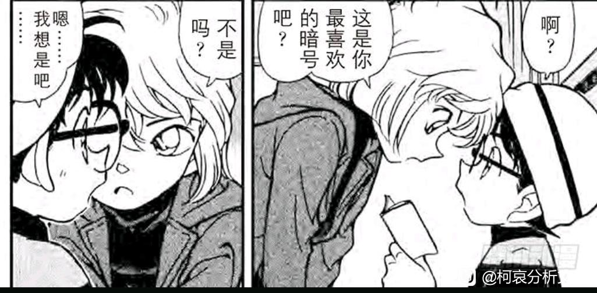
一、满月篇的时间轴
满月篇的时间轴是123天～193天，其中关键的时间点如下：
第137天：公交车案，这一天有大时间线（2000年2月23日），由于柯南被严重炸伤并且小哀有些自闭，所以之后十天内没有发生新的案件，柯南由贝姐治疗，博士找了狗狗家并带少侦去看。
第147天：狗狗案，小哀很快从自闭中恢复了。有些观点认为整个满月篇小哀都处于较低的情绪（或者从这个情绪走出的过程），这是不对的，狗狗案后小哀已不再有自毁倾向。
第154天：网中迷，兰哀关系正常化。
第163天：干净的香味，小哀完全弄清楚了自己喜欢柯南的理由，但又苦涩地掩藏自己的爱意。
第166天：足球流氓迷案，柯南月台追妻。
第175天（大时间线是2002年的情人节），小哀找到躲在储物柜的柯南。
第187天：东都显像馆，有希子不守婆德。
第191-193天：满月的双重迷案，柯哀的互相拯救。
与其说满月篇是小哀从悲伤中走出的过程，不如说满月篇是柯南认清自己内心的过程，柯南对小哀的好感大体上进化到【蓝色古堡小哀】的级别，并由身边的人点破（小哀被步美点破，柯南被有希子点破），关心，担忧，保护，惹她生气，哄她开心，柯南还不能向小哀那样总结自己的感情，但一切恋爱的情愫已经事实上出现了。
满月篇的时间轴是123天～193天，其中关键的时间点如下：
第137天：公交车案，这一天有大时间线（2000年2月23日），由于柯南被严重炸伤并且小哀有些自闭，所以之后十天内没有发生新的案件，柯南由贝姐治疗，博士找了狗狗家并带少侦去看。
第147天：狗狗案，小哀很快从自闭中恢复了。有些观点认为整个满月篇小哀都处于较低的情绪（或者从这个情绪走出的过程），这是不对的，狗狗案后小哀已不再有自毁倾向。
第154天：网中迷，兰哀关系正常化。
第163天：干净的香味，小哀完全弄清楚了自己喜欢柯南的理由，但又苦涩地掩藏自己的爱意。
第166天：足球流氓迷案，柯南月台追妻。
第175天（大时间线是2002年的情人节），小哀找到躲在储物柜的柯南。
第187天：东都显像馆，有希子不守婆德。
第191-193天：满月的双重迷案，柯哀的互相拯救。
与其说满月篇是小哀从悲伤中走出的过程，不如说满月篇是柯南认清自己内心的过程，柯南对小哀的好感大体上进化到【蓝色古堡小哀】的级别，并由身边的人点破（小哀被步美点破，柯南被有希子点破），关心，担忧，保护，惹她生气，哄她开心，柯南还不能向小哀那样总结自己的感情，但一切恋爱的情愫已经事实上出现了。
2025-06-09 01:31 | 贴吧用户_GGKUV6G:我什么时候看到这个“不守婆德”能不笑啊哈哈哈哈哈哈哈哈哈哈哈哈哈，sr党没处怪了造出来的词到ca党这里全是糖啊
cy

二、对柯南的重新定位：危命复活后遗症
危命复活后，柯兰相处发生了重大变化，对于柯南而言，在小兰面前的伪装不是必要的了，在案发现场的柯南可以专注于案件，而不必随时应付小兰，某种程度上还是件好事。
对小兰而言，柯南必须回到“聪明小孩”的位置上，这对她而言不是那么简单的事情，在【八音盒案】和【嫌疑人小五郎】两案中，我们将看到一个犹豫的小兰，仍保留一部分上一时期的习惯。
八音盒案一开始，柯南就在小哀面前各种卖萌，经过危命复活后，柯南对小哀的表现欲来到一个新的高度，【破案时喜欢专门让小哀开开眼界】变成【没事就喜欢吸引小哀的注意】，这里柯南哪里是真的求药（想也知道求不了），分明是各种卖萌向小哀示好，连口气都变成“柯南嘴里说出那么女孩子的声音”了。
（柯南的真正目的是哄小哀，告诉她“自己知道错了啦”）
（小哀：怎么能让你吃我还没吃过的药呢！）
接下来柯南又有意地（不能说是故意地，但柯南确实有意识地）透露了自己没表白的信息，这表明危命复活后，柯南主动地让自己在小哀面前毫无秘密（除非有安全问题），新一和小兰已经有了厚障壁，但柯南却对小哀卸下所有的防备呢。
小哀很开心，喜欢的男生没有表白，还可爱地跑过来哄她，但这种开心必须避开柯南本人，她【不主动干涉柯南的情感判断】的原则并没有改变，不愿意给他带来一点麻烦。
有两个人发现了小哀不寻常的开心：博士和光彦（看表情），博士虽是个迟钝的人，但他和小哀朝夕相处，小哀的一些事情是感受得到的，大约这个时候，博士就大致确定了小哀的心意，从而迅速生锈。
光彦发现，小哀和柯南在做“成人一样的对话”，还很开心 于是有了森林里的询问，继元太（转学生第一天-对柯南）和步美（蓝色古堡-对小哀）后，光彦也加入了柯哀行列，而且还感受到柯哀双箭头了
于是有了森林里的询问，继元太（转学生第一天-对柯南）和步美（蓝色古堡-对小哀）后，光彦也加入了柯哀行列，而且还感受到柯哀双箭头了
小哀的爱意隐藏得住吗？柯南的表现真的没问题吗？大家都知道啦！

危命复活后，柯兰相处发生了重大变化，对于柯南而言，在小兰面前的伪装不是必要的了，在案发现场的柯南可以专注于案件，而不必随时应付小兰，某种程度上还是件好事。
对小兰而言，柯南必须回到“聪明小孩”的位置上，这对她而言不是那么简单的事情，在【八音盒案】和【嫌疑人小五郎】两案中，我们将看到一个犹豫的小兰，仍保留一部分上一时期的习惯。
八音盒案一开始，柯南就在小哀面前各种卖萌，经过危命复活后，柯南对小哀的表现欲来到一个新的高度，【破案时喜欢专门让小哀开开眼界】变成【没事就喜欢吸引小哀的注意】，这里柯南哪里是真的求药（想也知道求不了），分明是各种卖萌向小哀示好，连口气都变成“柯南嘴里说出那么女孩子的声音”了。
（柯南的真正目的是哄小哀，告诉她“自己知道错了啦”）
（小哀：怎么能让你吃我还没吃过的药呢！）
接下来柯南又有意地（不能说是故意地，但柯南确实有意识地）透露了自己没表白的信息，这表明危命复活后，柯南主动地让自己在小哀面前毫无秘密（除非有安全问题），新一和小兰已经有了厚障壁，但柯南却对小哀卸下所有的防备呢。
小哀很开心，喜欢的男生没有表白，还可爱地跑过来哄她，但这种开心必须避开柯南本人，她【不主动干涉柯南的情感判断】的原则并没有改变，不愿意给他带来一点麻烦。
有两个人发现了小哀不寻常的开心：博士和光彦（看表情），博士虽是个迟钝的人，但他和小哀朝夕相处，小哀的一些事情是感受得到的，大约这个时候，博士就大致确定了小哀的心意，从而迅速生锈。
光彦发现，小哀和柯南在做“成人一样的对话”，还很开心
于是有了森林里的询问，继元太（转学生第一天-对柯南）和步美（蓝色古堡-对小哀）后，光彦也加入了柯哀行列，而且还感受到柯哀双箭头了小哀的爱意隐藏得住吗？柯南的表现真的没问题吗？大家都知道啦！
2024-02-22 23:50 | 贴吧用户_7RMA4Zb:妈呀，这样的小柯谁顶得住，“嘛”还要加个心，脸上还有小红点，还真当自己是小孩撒娇啦2024-03-25 10:41 | 唯一的届不到💖:博士的眼神2024-04-02 13:00 | MR山岭º:博士生锈笑死我了2024-11-17 21:56 | ARK雍:确实这里小哀高兴的挺突然的2024-12-12 21:52 | 🍒🐴🌹🐵羊驼:真的很爱看柯南理直气壮的撒娇2025-10-27 12:03 | beihequchen:AI分析文： 一、灰原哀此刻的心理背景 在这幕之前，灰原刚经历一段高压的研究状态—— •她必须为柯南研制APTX4869的解药； •她知道这药是危险试用品，上一次柯南能安全变回去只是侥幸； •她清楚：柯南之所以冒险服药，是为了小兰。 也就是说，在她眼中—— 柯南
小哀走后，柯南又回到了烦闷的起点。
等等，为什么会烦闷到这种程度呢？难道以柯南的身份，他就不能爱小兰了吗？大都会暗号案时，柯南能对小兰进行冰可乐捂脸，但现在的柯南却认为只要自己不变大，就不能表达对小兰的爱。
如果存在真正的爱情（例如快斗青子），隐瞒对方又偷偷保护对方绝不是烦闷的事情，但柯南感到烦闷，而且柯南现在还以为【因为变小，所以不能爱】，但死罗神告诉我们，变大了也没什么用。
只有一种解释：柯南没那么喜欢小兰了，一次次战术代餐，一次次舆论绑架，登峰造极的黑衣骑士，造成的伤口难以愈合，我们甚至知道这不是结束，小兰的战术代餐和舆论绑架还有一大堆。
这些都是后话了，本案小五郎接了一个委托，柯南进行帮忙（也就简单帮下），小兰得出“你比新一还厉害呢”的结论，毫无疑问，此刻小兰眼中的柯南仍有新一的影子，但却不是新一，于是收获了小兰的夸奖。
换而言之，只要柯南是新一，这种夸奖就不存在。这是一个可怕的逻辑，与【新一】绑定的概念是【不能夸他】，取消新一的概念后，最先取消的是【夸奖】的禁令。
柯南会因为小兰夸奖而高兴吗？新一是“和爸爸一样的名侦探”，爸爸却是“不输给新一的名侦探”，柯南只是个聪明孩子，却要说“柯南不输给新一”，小兰的行为习惯早已固定，柯南只好流汗假笑。

等等，为什么会烦闷到这种程度呢？难道以柯南的身份，他就不能爱小兰了吗？大都会暗号案时，柯南能对小兰进行冰可乐捂脸，但现在的柯南却认为只要自己不变大，就不能表达对小兰的爱。
如果存在真正的爱情（例如快斗青子），隐瞒对方又偷偷保护对方绝不是烦闷的事情，但柯南感到烦闷，而且柯南现在还以为【因为变小，所以不能爱】，但死罗神告诉我们，变大了也没什么用。
只有一种解释：柯南没那么喜欢小兰了，一次次战术代餐，一次次舆论绑架，登峰造极的黑衣骑士，造成的伤口难以愈合，我们甚至知道这不是结束，小兰的战术代餐和舆论绑架还有一大堆。
这些都是后话了，本案小五郎接了一个委托，柯南进行帮忙（也就简单帮下），小兰得出“你比新一还厉害呢”的结论，毫无疑问，此刻小兰眼中的柯南仍有新一的影子，但却不是新一，于是收获了小兰的夸奖。
换而言之，只要柯南是新一，这种夸奖就不存在。这是一个可怕的逻辑，与【新一】绑定的概念是【不能夸他】，取消新一的概念后，最先取消的是【夸奖】的禁令。
柯南会因为小兰夸奖而高兴吗？新一是“和爸爸一样的名侦探”，爸爸却是“不输给新一的名侦探”，柯南只是个聪明孩子，却要说“柯南不输给新一”，小兰的行为习惯早已固定，柯南只好流汗假笑。
楼主加油
本案小兰的表现差强人意，音乐类案件，小兰优势本来是很大的（月光案就帮柯南解密码，本案也是帮柯南背乐谱），但是本案又是个鬼怪恐吓案，结果小兰的表现又开始抽象。
那一刻，小五郎想起来鸟取蜘蛛案躲起来哭的小兰，想起长门案不敢踏入现场一步的小兰，比较起来雾天狗已经算小兰很勇敢的时候了。小五郎是真的恨铁不成钢，只能说小五郎还是别急，你后面还要被怪物吃掉呢💔
但凡小兰认真听过各鬼怪案件的推理，也不至于表现得越来越抽象。柯南为了让小兰别再怕鬼，演示手法的时候用了自己的贴纸（会比较不恐怖），让小兰自己去发现真相，真是尽心尽力。
效果一般，人鱼岛小兰继续怕鬼，后来柯南基本放弃教小兰唯物主义了。
鬼怪＝案件＝新一要离开她去破案了，所以怕鬼＝案件是破不了的＝新一要留在自己身边保护自己，真是简单的逻辑，真的【不懂侦探】。

那一刻，小五郎想起来鸟取蜘蛛案躲起来哭的小兰，想起长门案不敢踏入现场一步的小兰，比较起来雾天狗已经算小兰很勇敢的时候了。小五郎是真的恨铁不成钢，只能说小五郎还是别急，你后面还要被怪物吃掉呢💔
但凡小兰认真听过各鬼怪案件的推理，也不至于表现得越来越抽象。柯南为了让小兰别再怕鬼，演示手法的时候用了自己的贴纸（会比较不恐怖），让小兰自己去发现真相，真是尽心尽力。
效果一般，人鱼岛小兰继续怕鬼，后来柯南基本放弃教小兰唯物主义了。
鬼怪＝案件＝新一要离开她去破案了，所以怕鬼＝案件是破不了的＝新一要留在自己身边保护自己，真是简单的逻辑，真的【不懂侦探】。
2024-02-23 00:16 | 贴吧用户_aAKe71W:蚌埠住了，红骷髅我真的能乐死，被怪物吃掉了，有个问题想问一下就是铃木塔那章柯吃白马的醋为什么不吃斗子的醋啊？他心理活动都“搞太定了，反而有点火大”斗子撩他只是有点火大甚至不表现出来只是心理抱怨几句？这章柯有点降智白马都这样明显试探了他还能掉马甲2024-03-25 10:55 | 唯一的届不到💖:大叔真的是唯物主义战士2024-04-15 13:13 | 发疯的法师:回复 贴吧用户_aAKe71W :失智也不是一两次了 伦敦篇作为柯南跑什么跑2024-04-27 01:05 | 上総守信長ºº:人家抓的是工藤新一跟江户川柯南有什么关系
回复 发疯的法师 :woc经这么一说…2024-06-26 00:37 | dantecao:回复 发疯的法师 :确实是，支走博士作为柯南即使被兰抓住，大可以用“什么，新一哥哥也来伦敦了？”和“新一哥哥没有和我说过”这些小孩子气的借口蒙混过去。。。2024-07-17 13:55 | wwsabe:回复 发疯的法师 :被兰神遇到就不能破案了，兰神会带着柯南找新一2024-10-25 09:59 | 贴吧用户_0D7XDb5:回复 wwsabe :对头，遇到兰神就别想能认真破案了，柯南和博士下意识的反应明显就是：她过来就是个拖慢办事效率、阻碍破案、是个麻烦的人（后面工藤大本钟下脱口而出的一句）。真的抽象2026-05-21 08:46 | 贴吧用户_aC4AJ3b:回复 dantecao :新兰打电话之前，柯南刚和兰姐说他在摩天轮那里离大本钟很远
总之，在柯南的努力下，八音盒案形成HE结局，有情人终成眷属。
本案的情侣又是圣诞节初遇，又是在互不认识的情况下把另一个人当做自己喜欢的人，又得到了老爷爷的祝福，所以这对情侣和谁相似呢？
------
我们来看下一案，嫌疑人小五郎，小兰上一案还有些贡献，本案则啥也没干，嫌疑人是你父亲欸！拿出当年帮前田聪脱罪的行动力来啊！
小兰：摆烂，交给老妈查了。
也不能说摆烂，小兰还是有动作的……在父亲急需脱罪的时候，想着干涉母亲的交际圈……
小兰总有种把父母的缺点取其糟粕的本事。对于小兰的各种撮合，柯南一直都是一副亳不相信的态度，不但不支持还偶尔嘲讽。（但柯南非要证明小哀的母亲是天使，跑去找录音带，高下立判）
本案的情侣又是圣诞节初遇，又是在互不认识的情况下把另一个人当做自己喜欢的人，又得到了老爷爷的祝福，所以这对情侣和谁相似呢？
------
我们来看下一案，嫌疑人小五郎，小兰上一案还有些贡献，本案则啥也没干，嫌疑人是你父亲欸！拿出当年帮前田聪脱罪的行动力来啊！
小兰：摆烂，交给老妈查了。
也不能说摆烂，小兰还是有动作的……在父亲急需脱罪的时候，想着干涉母亲的交际圈……
小兰总有种把父母的缺点取其糟粕的本事。对于小兰的各种撮合，柯南一直都是一副亳不相信的态度，不但不支持还偶尔嘲讽。（但柯南非要证明小哀的母亲是天使，跑去找录音带，高下立判）
顶
本案的警察是操哥，差点就说“柯南是有希子的儿子”，结果柯南的身份躲避功能再次启动，直接就开始演小孩（其实是提醒妃英理，但柯南选择了装小孩的方式）
至此，小兰终于找到柯南是小孩子的“证据”……在她父亲被列为重点嫌疑人的时候。
我们回顾嫌疑人小五郎案会发现，小兰因为醉酒，于是被死者涉及倒在房间里，为什么小五郎会醉酒？因为【小兰根本没听老新出的医嘱，一直在放任小五郎喝酒】，为什么倒在女人房间里？因为【一旦小五郎醉酒，小兰就对其很宽容，甚至对母亲说出“你也知道他醉酒就是这样嘛，而且你也找了男人”这种超级双标的话】
现在，由于小兰的不负责任，小五郎有了犯案嫌疑，小兰却一点动静都没有（妃英理已经自动开始办案了，毛妃看似吵架实则感情没那么差），小兰继续关注母亲和男律师的互动，继续“说服自己柯南不是新一”……
小兰的回报是：柯南和英理制定了完美的计划，告诉了一堆警察，【不告诉小兰】，并对凶手进行了钓鱼，小兰错过了一次案件机会。
柯南不帮助小兰的父母撮合计划，是觉得毛妃没法撮合吗？感觉是对小兰的不信任多一些呢。
至此，小兰终于找到柯南是小孩子的“证据”……在她父亲被列为重点嫌疑人的时候。
我们回顾嫌疑人小五郎案会发现，小兰因为醉酒，于是被死者涉及倒在房间里，为什么小五郎会醉酒？因为【小兰根本没听老新出的医嘱，一直在放任小五郎喝酒】，为什么倒在女人房间里？因为【一旦小五郎醉酒，小兰就对其很宽容，甚至对母亲说出“你也知道他醉酒就是这样嘛，而且你也找了男人”这种超级双标的话】
现在，由于小兰的不负责任，小五郎有了犯案嫌疑，小兰却一点动静都没有（妃英理已经自动开始办案了，毛妃看似吵架实则感情没那么差），小兰继续关注母亲和男律师的互动，继续“说服自己柯南不是新一”……
小兰的回报是：柯南和英理制定了完美的计划，告诉了一堆警察，【不告诉小兰】，并对凶手进行了钓鱼，小兰错过了一次案件机会。
柯南不帮助小兰的父母撮合计划，是觉得毛妃没法撮合吗？感觉是对小兰的不信任多一些呢。
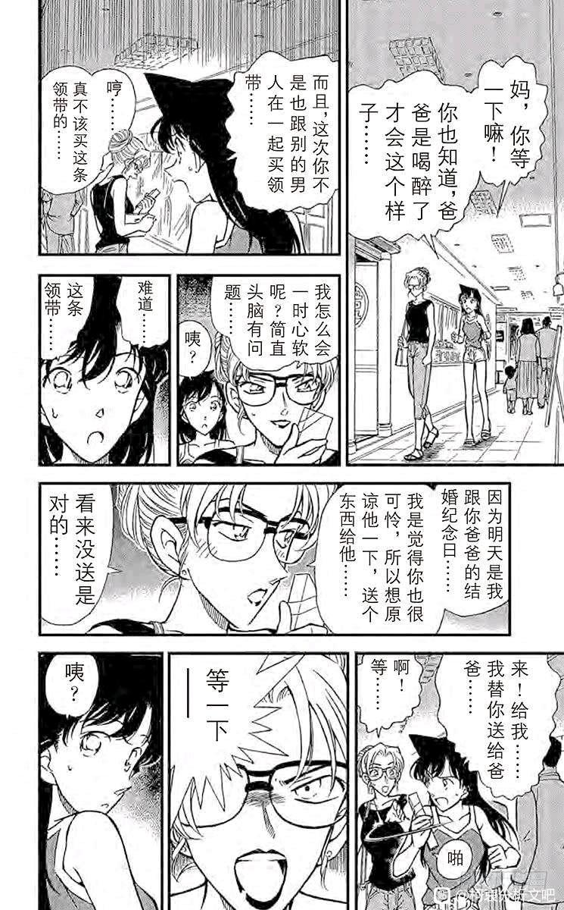
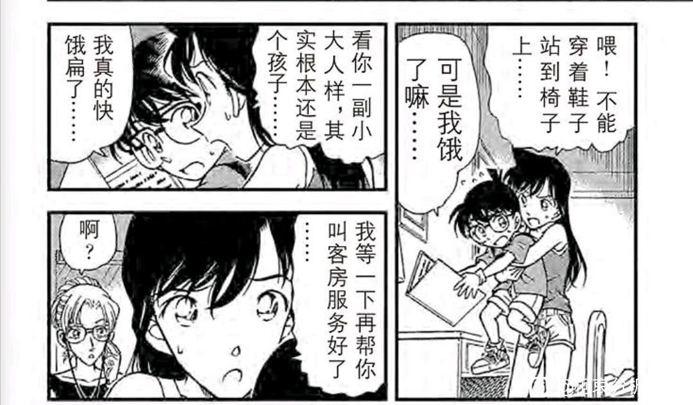
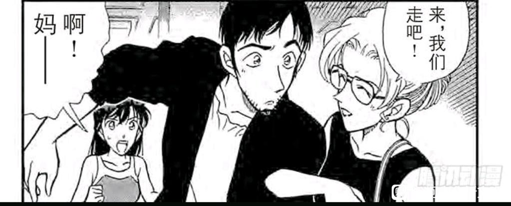
2024-03-02 16:02 | ✨浮光掠影:如果是我，觉得没必要撮合，感情的事外人管不着2024-03-02 16:03 | ✨浮光掠影:也就mll满脑子都是爱啊爱的 亲爹都快成杀人犯了还在拿 女德 监视她妈跟同为律师的男的说话呢2024-03-08 22:20 | 逆光模糊了眼睛:感觉兰姐也是学了妃英理 每次都是和另一个男人暧昧（有意或者无意）然后让小五郎看见 最后说是都是为了给小五郎/新一准备礼物
柯南这个态度是真的摆在明面上了，对毛妃复合毫不关心，能复合就复合，不能就拉倒，不如吃早餐重要。
这好像是毛妃最接近物理复合的时候，小五郎做了错事甘愿认罚（小兰从来不认罚还得别人安慰她），英理不愿意那么廉价就回去，所以拒绝了（但录了小五郎认错的音）
其实在我看来毛妃关系已经基本恢复了，只是确实不适合住在一起所以分居（英理做饭不好吃非要做饭），但不妨碍两人关系事实上已经没有太大问题，都记得结婚纪念日，一方会迁就一方，能形成有效互动，小五郎甚至探听了英理的行踪所以跑到海滩，英理也准备送个领带。
这个关系恢复，柯南才是首功，海蛇案直接给小五郎一波高光，形成了毛妃关系的恢复，按小兰的做法，英理直接打算离婚了。
但是，毛妃关系的实质恢复不代表小兰行动的结束，小兰是一个形式重于实质的人，把“老是欺负她”的新一带入自己的父亲，伦敦告白绝不轻易回复，自己扮演“女王”妃英理的角色，吃吃代餐没有代价，就形成了小兰以为的，“理想”的新兰互动。
毛妃是老夫老妻默契很好，也不怎么介意双方吃瘪，但新兰经得起这样的折腾吗？尤其是毛妃对对方的职业是很理解的（小五郎经常提出合理的假说，这是律师的基本技能，妃英理则长于现场取证和推理），互相刺激一下无伤大雅，新兰再这样折腾下去，其前景可想而知。
这好像是毛妃最接近物理复合的时候，小五郎做了错事甘愿认罚（小兰从来不认罚还得别人安慰她），英理不愿意那么廉价就回去，所以拒绝了（但录了小五郎认错的音）
其实在我看来毛妃关系已经基本恢复了，只是确实不适合住在一起所以分居（英理做饭不好吃非要做饭），但不妨碍两人关系事实上已经没有太大问题，都记得结婚纪念日，一方会迁就一方，能形成有效互动，小五郎甚至探听了英理的行踪所以跑到海滩，英理也准备送个领带。
这个关系恢复，柯南才是首功，海蛇案直接给小五郎一波高光，形成了毛妃关系的恢复，按小兰的做法，英理直接打算离婚了。
但是，毛妃关系的实质恢复不代表小兰行动的结束，小兰是一个形式重于实质的人，把“老是欺负她”的新一带入自己的父亲，伦敦告白绝不轻易回复，自己扮演“女王”妃英理的角色，吃吃代餐没有代价，就形成了小兰以为的，“理想”的新兰互动。
毛妃是老夫老妻默契很好，也不怎么介意双方吃瘪，但新兰经得起这样的折腾吗？尤其是毛妃对对方的职业是很理解的（小五郎经常提出合理的假说，这是律师的基本技能，妃英理则长于现场取证和推理），互相刺激一下无伤大雅，新兰再这样折腾下去，其前景可想而知。
2024-02-23 00:25 | 贴吧用户_aAKe71W:先不说经不经得起，就说兰能让新一吃瘪吗？水族馆就是单方面的薄纱直接把兰的行程想法全部看穿2024-02-23 00:26 | 贴吧用户_aAKe71W:柯：复不复合什么的哪有填饱肚子重要2024-02-23 06:51 | 🌐之徙:回复 贴吧用户_aAKe71W :这个“吃瘪”指的是【允许自己在对方面前出错】，例如柯南各种惹小哀，但新兰互相包袱很重，新一在小兰面前必须无所不能，小兰永远觉得出了事是新一的错而不是自己的错。2024-02-23 07:20 | 即将02的废物月:回复 🌐之徙 :面具总有戴不下去的一天，毛妃好像就是这种2024-03-02 16:06 | ✨浮光掠影:小时候他俩就不喜欢新一，新一当然也不会有什么感情2024-09-05 11:13 | 洛易梦:兽医事件来说小兰很抗拒妃英理吃代餐，实际上代入的应该是反过来，因为妃英理在毛妃关系中实际上的占据主导地位，至少她是主动因为饭难吃分居的，这在小兰身上很难想象
前排
三、极致的信任和暧昧：危命篇后的柯哀
危命后的新兰关系总体处于一个【回归旧轨道】的时期，小兰不断提醒自己柯南不是新一，得把他当小孩看（甚至能说出“柯南不输给新一”这种话），柯南对小兰失去了“即将告白”的冲动，回归到什么也不让她参与的状态，这种关系在【嫌疑人小五郎】案已经完全体现了。
而危命后的柯哀关系，我将其称之为【极致的信任和暧昧】，此前柯哀虽然已经很有默契，但还没有到让对方独立行动自己也能判断对方意图的地步（蓝色古堡小哀只能判断柯南遇险），但危命后，也许是柯南被小哀完全导演了一次，也许是小哀“做了太多”被柯南发现了，双方的信任和默契来到前所未有的高度，并且在互相信任中夹杂了太多暧昧元素。
第127天，警视厅恋爱物语3（愁思郎案），本案的扉页是少侦cos警视厅，柯南扎领带＝领带不好好扎的高木，小哀持枪（七朵玫瑰那把？）＝日常持枪的佐藤，光彦弄头发＝头发奇特的白鸟（巧合的是，光彦也即将担任白鸟在高佐中的位置），元太戴帽子＝戴帽子的目暮，唯一尚不适合的是步美（还在穿衣服，这里的位置应该是由美，但由美还没正式出场）
从本案开始，漫画中柯哀的那种黏在一起的感觉越来越明显，而且是双向的（不是电影院案等等小哀比较主动一些），恰在此案，高佐获得护身符认证，并且也变成双向的（不是前两个恋爱物语高木主动一些）
这种对称映射非常明显，形成了满月篇独特好磕的柯哀关系。
危命后的新兰关系总体处于一个【回归旧轨道】的时期，小兰不断提醒自己柯南不是新一，得把他当小孩看（甚至能说出“柯南不输给新一”这种话），柯南对小兰失去了“即将告白”的冲动，回归到什么也不让她参与的状态，这种关系在【嫌疑人小五郎】案已经完全体现了。
而危命后的柯哀关系，我将其称之为【极致的信任和暧昧】，此前柯哀虽然已经很有默契，但还没有到让对方独立行动自己也能判断对方意图的地步（蓝色古堡小哀只能判断柯南遇险），但危命后，也许是柯南被小哀完全导演了一次，也许是小哀“做了太多”被柯南发现了，双方的信任和默契来到前所未有的高度，并且在互相信任中夹杂了太多暧昧元素。
第127天，警视厅恋爱物语3（愁思郎案），本案的扉页是少侦cos警视厅，柯南扎领带＝领带不好好扎的高木，小哀持枪（七朵玫瑰那把？）＝日常持枪的佐藤，光彦弄头发＝头发奇特的白鸟（巧合的是，光彦也即将担任白鸟在高佐中的位置），元太戴帽子＝戴帽子的目暮，唯一尚不适合的是步美（还在穿衣服，这里的位置应该是由美，但由美还没正式出场）
从本案开始，漫画中柯哀的那种黏在一起的感觉越来越明显，而且是双向的（不是电影院案等等小哀比较主动一些），恰在此案，高佐获得护身符认证，并且也变成双向的（不是前两个恋爱物语高木主动一些）
这种对称映射非常明显，形成了满月篇独特好磕的柯哀关系。
2024-02-26 05:24 | 雪者风形:话虽如此……这是把左轮啊，七朵玫瑰不是自动手枪吗（）2024-02-26 09:21 | 🌐之徙:回复 雪者风形 :坏了，小哀变成非法持枪了2024-02-26 21:18 | 雪者风形:回复 🌐之徙 :你这一说我也想起来了，草（因为动画里好像没改这个2024-02-26 21:21 | 雪者风形:回复 🌐之徙 :说起来……公交车事件柯南用得是警枪还是匪枪啊，匪枪的话肯定是自动手枪（动画的谜题应该是一样的吧），警枪倒是有可能左轮_(:з」∠)_2024-02-26 21:27 | 🌐之徙:回复 雪者风形 :匪枪，就是朱蒂弄保险那把2024-02-26 21:33 | 雪者风形:回复 🌐之徙 :谢了

由于步美目击纵火犯，少侦去警视厅做笔录，这两张图其实可以画在一起的，欸偏不，就是要画两张，因为第二张图全员看步美不能表达柯哀的亲密。
第一张图，步美抬头，元太和光彦都在注视步美，但是柯哀在干什么呢？小哀在打哈欠（对着柯南打，气都呼到柯南身上了），柯南盯着她（有些低头的眼神，不是在看步美而是在看哈欠女），而且柯哀和元太隔了很大的位置，这要是被光彦看见那就抓现行了
早在第77天的陶艺家案，柯南就表现出某种对【哈欠】这个动作的莫名感兴趣，这很可能是柯南的XP之一（其他的XP见卡拉OK案，某人符合全部的条件）
对柯南而且，他的注意力总是要被小哀吸引走，而对小哀而言，她虽然想隐藏自己的感情，但一举一动里对柯南的不设防是藏不住的。
随后在佐藤说“谁解开案件就满足TA一个要求”时，小哀又透露了自己对新款包包的喜爱（此前她从未在柯南面前表示过），这不是增加设定（小哀第一次出场就在看时尚杂志了），而是小哀已经把【在柯南面前说自己的爱好】当成理所应当的事情，而且是有种故意表达的成分（例如故意在柯南面前说喜欢比护，要一个芙纱绘包包才帮他演戏）。
然后柯南也觉得理所应当，迅速接受了小哀喜欢包包的设定并且自己也开始提世界杯球票要求。要是在足球场柯南一定要吐槽小哀，但现在就是一副惯着的态度。
经常有人说柯南在小哀面前没有边界感，我看小哀虽然有隐藏自己的感情，却也是真的在享受当下和柯南相处的每一刻呢。

第一张图，步美抬头，元太和光彦都在注视步美，但是柯哀在干什么呢？
小哀在打哈欠（对着柯南打，气都呼到柯南身上了），柯南盯着她（有些低头的眼神，不是在看步美而是在看哈欠女），而且柯哀和元太隔了很大的位置，这要是被光彦看见那就抓现行了早在第77天的陶艺家案，柯南就表现出某种对【哈欠】这个动作的莫名感兴趣，这很可能是柯南的XP之一（其他的XP见卡拉OK案，某人符合全部的条件
）对柯南而且，他的注意力总是要被小哀吸引走，而对小哀而言，她虽然想隐藏自己的感情，但一举一动里对柯南的不设防是藏不住的。
随后在佐藤说“谁解开案件就满足TA一个要求”时，小哀又透露了自己对新款包包的喜爱（此前她从未在柯南面前表示过），这不是增加设定（小哀第一次出场就在看时尚杂志了），而是小哀已经把【在柯南面前说自己的爱好】当成理所应当的事情，而且是有种故意表达的成分（例如故意在柯南面前说喜欢比护，要一个芙纱绘包包才帮他演戏）。
然后柯南也觉得理所应当，迅速接受了小哀喜欢包包的设定并且自己也开始提世界杯球票要求。要是在足球场柯南一定要吐槽小哀，但现在就是一副惯着的态度。
经常有人说柯南在小哀面前没有边界感，我看小哀虽然有隐藏自己的感情，却也是真的在享受当下和柯南相处的每一刻呢。
2024-02-25 17:55 | lxt370:突然发现这个柯南的眼睛画的和，放心不下就是喜欢那个片段差不多2024-03-02 02:50 | 贴吧用户_Gtb9AXK:回复 lxt370 :真的哎！2024-04-19 12:05 | 夏目夜斗008:因为访谈说到青山在前中期画漫画的时候也经常处于睡眠不足的状态，每天都在打哈欠精神困倦。如果把柯哀类比南姐和青山，是不是种另类的博关注行为，把这个特点挂在漫画中，暗示希望南姐更关心一点自己2024-07-17 14:07 | wwsabe:wc，这个看哈欠女和步美真不是一个方向，磕到了2025-03-03 13:49 | 云小抽:面相里有个理论，就是转眼珠子斜眼看人的人心术不正。因为正常人看旁边的人都是转头然后正视，如果脖子不转，眼睛却看向另一个方向，叫做斜视，说明在暗中打量别人，也就是说斜眼打量别人是一种不光明正大/有所图谋的状态。2025-03-03 13:51 | 云小抽:就像后面有人叫你，你第一反应是回头而不是转眼珠子。不知道73是不是也注意到了这点，看烟花的封面也是转头正眼看的状态，步美点破那里就是斜眼看

高佐护身符。
这个镜头里又有柯哀，小哀非常关注本次高木办案的危险性，很可能想起了再会篇的眼镜护身符。（柯哀又开始默契十足的一唱一和）
结果剧情还一模一样，被发护身符的高木也被歹徒囚禁了，然后佐藤就急得要死在外面跑，我们可以大致比较一下，平次发现和叶被困（鸟取蜘蛛），佐藤发现高木被困（本案），柯南发现小哀被困（再会篇），结构上是很相似的，有护身符就是不一样。
而没有护身符的新兰，小兰倒是被困魔术爱好者宾馆，但是并没有真正的危险，柯南冲进去归冲进去，进去后就变成“毛利叔叔会来救我们的”
高佐的护身符还生锈了，我看是高佐生锈了，恋爱物语2高木看柯哀破案，恋爱物语3佐藤看柯哀破案，都给你俩磕完了。
这个镜头里又有柯哀，小哀非常关注本次高木办案的危险性，很可能想起了再会篇的眼镜护身符。（柯哀又开始默契十足的一唱一和）
结果剧情还一模一样，被发护身符的高木也被歹徒囚禁了，然后佐藤就急得要死在外面跑，我们可以大致比较一下，平次发现和叶被困（鸟取蜘蛛），佐藤发现高木被困（本案），柯南发现小哀被困（再会篇），结构上是很相似的，有护身符就是不一样。
而没有护身符的新兰，小兰倒是被困魔术爱好者宾馆，但是并没有真正的危险，柯南冲进去归冲进去，进去后就变成“毛利叔叔会来救我们的”
高佐的护身符还生锈了，我看是高佐生锈了，恋爱物语2高木看柯哀破案，恋爱物语3佐藤看柯哀破案，都给你俩磕完了。
2024-02-26 05:28 | 雪者风形:这样搞的话我会认为这个生锈梗是新兰有人细看过原作才提出来的（不是）2024-04-19 12:06 | 夏目夜斗008:这一幕高佐和挂件篇里电车中的柯哀好像吧2025-07-29 09:54 | 开朗的内向真君:现在一看到生锈就绷不住

佐藤之前只看过柯南办案，然后本案就变成“啊？还有高手？”
小哀本案直接自主行动，找到犯人下一次的纵火地点，这甚至不是柯南安排的（对比柯南宁可和英理合作，也不告诉小兰钓鱼计划），直接形成了柯哀梦幻般的破案体验，这哪里是华生的工作，分明是1/2福尔摩斯才对。
柯南现在还有点惊讶，之后就开始“交给你了灰原”，对着小哀花式依赖，露出某种表情让小哀“你一定又知道什么了吧快告诉我”。不论柯南还是新一，与小兰碰到案件时哪里有这种事情，倒是天天听到“你的推理到底对不对啊”，“和你在一起总没有好事”，“柯南！不要打扰爸爸办案！”
本案只是柯哀信任与默契的开端，这种夹带着暧昧的信任，将在整个满月篇持续，并且一定会持续到结局。
小哀本案直接自主行动，找到犯人下一次的纵火地点，这甚至不是柯南安排的（对比柯南宁可和英理合作，也不告诉小兰钓鱼计划），直接形成了柯哀梦幻般的破案体验，这哪里是华生的工作，分明是1/2福尔摩斯才对。
柯南现在还有点惊讶，之后就开始“交给你了灰原”，对着小哀花式依赖，露出某种表情让小哀“你一定又知道什么了吧快告诉我”。不论柯南还是新一，与小兰碰到案件时哪里有这种事情，倒是天天听到“你的推理到底对不对啊”，“和你在一起总没有好事”，“柯南！不要打扰爸爸办案！”
本案只是柯哀信任与默契的开端，这种夹带着暧昧的信任，将在整个满月篇持续，并且一定会持续到结局。
建立无与伦比信任的柯哀，把案发现场变成了……他们play的一环。
步美日常被挟持，一般遇到这种情况，柯南会想一大堆很复杂的方法，什么突然喊出凶手的名字，用推理让对方精神崩溃再一个球踢过去。
但是，有小哀在身边，怎么能用这些慢吞吞的方法呢？于是小哀过去简单吸引一下犯人的注意力，柯南直接一个垃圾桶打倒犯人，又让自己在小哀面前耍帅，又让小哀“bingo”开心一下，柯南的小心思有点多哦。
你看柯哀一副乐在其中的样子，犯人真悲惨。
这是什么行为？本案的高佐给了我们答案。
（愁思郎案后，高佐就变成边约会边破案的状态，亲密接触越来越多，这和柯哀的状态完全一致哦）


步美日常被挟持，一般遇到这种情况，柯南会想一大堆很复杂的方法，什么突然喊出凶手的名字，用推理让对方精神崩溃再一个球踢过去。
但是，有小哀在身边，怎么能用这些慢吞吞的方法呢？于是小哀过去简单吸引一下犯人的注意力，柯南直接一个垃圾桶打倒犯人，又让自己在小哀面前耍帅，又让小哀“bingo”开心一下，柯南的小心思有点多哦。
你看柯哀一副乐在其中的样子，犯人真悲惨。
这是什么行为？本案的高佐给了我们答案。
（愁思郎案后，高佐就变成边约会边破案的状态，亲密接触越来越多，这和柯哀的状态完全一致哦）
2024-02-23 14:06 | 即将02的废物月:不愧是大弟子2025-07-06 23:43 | 第7个伯言:柯南踢完垃圾桶那句话是和鲁邦里的石川五右卫门学的吗？
柯南在小哀这里有多开心，在小兰那就有多烦躁。
第128天，朱蒂登场（朱蒂已经潜入贝姐房间，发现了新兰柯的照片），本案一开始园子小兰就拉着柯南强行拍照，小兰还准备拍“婚纱照”，柯南的眼神可谓毫不关心。
柯南后来是有设想过小兰穿婚纱的样子的（在第225天【高佐婚礼案】），但这里一点也不感兴趣，倒是对园子的各种话题（例如朱蒂只有男生喜欢，穿得太少了之类的）比较想吐槽，而小兰更是继续提新出医生（还是以一个很隐私的角度说的），上次学园祭小兰试图亲新出的事情到现在都没有说法，柯南的表情：
满月篇小兰的出场是很多的，但新兰互动是几乎没有的，甚至柯兰互动都是这副样子，这可是在没有红黑大纲扩充时的描绘，结局真的不难猜。
宁可多画几个柯南看小哀打哈欠，也不愿意在小兰讲婚纱时给柯南一点脸红，这就是满月篇的柯兰。

第128天，朱蒂登场（朱蒂已经潜入贝姐房间，发现了新兰柯的照片），本案一开始园子小兰就拉着柯南强行拍照，小兰还准备拍“婚纱照”，柯南的眼神可谓毫不关心。
柯南后来是有设想过小兰穿婚纱的样子的（在第225天【高佐婚礼案】），但这里一点也不感兴趣，倒是对园子的各种话题（例如朱蒂只有男生喜欢，穿得太少了之类的）比较想吐槽，而小兰更是继续提新出医生（还是以一个很隐私的角度说的），上次学园祭小兰试图亲新出的事情到现在都没有说法，柯南的表情：
满月篇小兰的出场是很多的，但新兰互动是几乎没有的，甚至柯兰互动都是这副样子，这可是在没有红黑大纲扩充时的描绘，结局真的不难猜。
宁可多画几个柯南看小哀打哈欠，也不愿意在小兰讲婚纱时给柯南一点脸红，这就是满月篇的柯兰。
案件过程没什么好说的，小兰担任了场景还原，算是有点参与感（不过那只是因为小兰有打这个游戏的经验而已，以及小兰每次打游戏都很凶狠，仿佛把对手想象成新一，柯南看得汗流浃背）
然后柯南就看到了不出所料的一幕：小兰在朱蒂面前聊【园子不输给新一】。
且不说小兰这个“人均不输新一”究竟是什么概念，学园祭明确对全班同学说过不要外传新一的名字，全班同学也确实没有外传，结果被小兰传出去了，朱蒂还只是问问“是学园祭那个人吗？”，小兰的表情直接暴露，要是朱蒂真是黑方，这里就完蛋了。
我都怀疑小兰是故意在陌生人（朱蒂）面前宣传自己和新一的特殊关系，园子又不是第一天被麻醉，却是突然收到“不输新一”的奇怪夸奖，园子尬得要死又没法提醒小兰别乱说，露出了半月眼。
我们知道，小兰这种行为不止一次，她向波本篇三个候选人都暴露一遍（幸好是三红），朗姆篇也早晚要暴露的。这种行为和拉窗帘一样，本质都是向新出现在身边的人灌输新兰绑定的概念，传到服部那里就变成了“工藤的女人”，仍然是麻美学姐的舆论战，只是更加阴谋化。
目睹这些的柯南只好赌朱蒂是红方了（所以后来带着服部找朱蒂，并没有多少防备她），如果继续让小兰这么乱说话，工藤新一早晚得社会性死亡一下，不然小兰永远涨不了记性的。
然后柯南就看到了不出所料的一幕：小兰在朱蒂面前聊【园子不输给新一】。
且不说小兰这个“人均不输新一”究竟是什么概念，学园祭明确对全班同学说过不要外传新一的名字，全班同学也确实没有外传，结果被小兰传出去了，朱蒂还只是问问“是学园祭那个人吗？”，小兰的表情直接暴露，要是朱蒂真是黑方，这里就完蛋了。
我都怀疑小兰是故意在陌生人（朱蒂）面前宣传自己和新一的特殊关系，园子又不是第一天被麻醉，却是突然收到“不输新一”的奇怪夸奖，园子尬得要死又没法提醒小兰别乱说，露出了半月眼。
我们知道，小兰这种行为不止一次，她向波本篇三个候选人都暴露一遍（幸好是三红），朗姆篇也早晚要暴露的。这种行为和拉窗帘一样，本质都是向新出现在身边的人灌输新兰绑定的概念，传到服部那里就变成了“工藤的女人”，仍然是麻美学姐的舆论战，只是更加阴谋化。
目睹这些的柯南只好赌朱蒂是红方了（所以后来带着服部找朱蒂，并没有多少防备她），如果继续让小兰这么乱说话，工藤新一早晚得社会性死亡一下，不然小兰永远涨不了记性的。
2024-02-26 05:37 | 雪者风形:我似乎在什么地方听到过“本来安室透是不打算洗白的”，这种说法成立的情况下是不是能说“毛利兰本来已经泄露过一次了”……2024-03-09 20:39 | 贴吧用户_GtyRyb2:回复 雪者风形 :对，73自己说的2024-03-09 20:40 | 贴吧用户_GtyRyb2:他说因为安室透画的太帅了，才黑转红的2024-03-09 20:41 | 贴吧用户_GtyRyb2:原本是没有朗姆篇的，就因为这，多增了一个朗姆篇2024-03-09 20:42 | 贴吧用户_GtyRyb2:直接开启了73摆烂的新纪元。。。2025-03-03 10:16 | ▫Hermit:心机婊
时间来到129天，蘑菇熊与侦探团，这是公交车爆炸案前最后一刻柯哀案件，柯哀双向信任的完美体现，同时补了小哀喜欢小动物的设定（让狗狗案的柯南能花式哄小哀面前）
少侦去森林采蘑菇，小哀又日常偷瞄柯南，柯南又日常和小哀贴得特别近，离三小只非常远。小哀好像是越看越入迷了，虽然“看着你总有种后悔的感觉”，但是就是喜欢继续看❤️
柯南在干什么呢？他倒是不太敢偷看小哀，但是光彦稍微对小哀表情不对劲，柯南立刻注意到了（啊？），然后直接直球劝阻。
光彦这情况也不是第一次了，早在大都会暗号事件，光彦就因为步美和柯南关系好而对柯南吃醋，同样是有喜欢的女生，步美那次柯南根本没注意光彦（还是光彦主动和他说的），这里光彦一脸红，柯南直接发现，急切劝阻。
虽然说有正式的理由（你们年龄差太大，不合适），但光彦只是一个七岁的孩子欸！正式的理由可以构成柯南劝阻的原因，却不能构成柯南【立刻】劝阻的原因，柯南很急，一手把光彦转向不让他看小哀，换另一只手直接搭在光彦肩膀上开始输出。
这根本就不是维护小孩子的心理健康，分明是占有欲过剩，还被小哀注意到了柯南也劝阻过瑛佑，但主动性差得很，瑛佑都快表白了柯南才说不行，而且夹了很多“可以告诉一下他身份了”和“不能让小兰接触这么重要的主线人员”的心态，但柯南对光彦甚至对大表哥都是防患于未然的心态。
纯纯的占有情。

）少侦去森林采蘑菇，小哀又日常偷瞄柯南，柯南又日常和小哀贴得特别近，离三小只非常远。小哀好像是越看越入迷了，虽然“看着你总有种后悔的感觉”，但是就是喜欢继续看❤️
柯南在干什么呢？他倒是不太敢偷看小哀，但是光彦稍微对小哀表情不对劲，柯南立刻注意到了（啊？），然后直接直球劝阻。
光彦这情况也不是第一次了，早在大都会暗号事件，光彦就因为步美和柯南关系好而对柯南吃醋，同样是有喜欢的女生，步美那次柯南根本没注意光彦（还是光彦主动和他说的），这里光彦一脸红，柯南直接发现，急切劝阻。
虽然说有正式的理由（你们年龄差太大，不合适），但光彦只是一个七岁的孩子欸！正式的理由可以构成柯南劝阻的原因，却不能构成柯南【立刻】劝阻的原因，柯南很急，一手把光彦转向不让他看小哀，换另一只手直接搭在光彦肩膀上开始输出。
这根本就不是维护小孩子的心理健康，分明是占有欲过剩，还被小哀注意到了
柯南也劝阻过瑛佑，但主动性差得很，瑛佑都快表白了柯南才说不行，而且夹了很多“可以告诉一下他身份了”和“不能让小兰接触这么重要的主线人员”的心态，但柯南对光彦甚至对大表哥都是防患于未然的心态。纯纯的占有情。
2024-08-17 00:38 | 画个地球马修你:神秘小姐2024-08-17 00:38 | 画个地球马修你:神秘小姐2025-05-03 12:00 | 残梦◆哀:你把握不住，我来2025-09-10 22:11 | 贴吧用户_aAK11CP:毕竟光彦虽然年纪小但也是三人组中最适合当侦探的（推理能力很强），而热爱谜团的侦探遇上充满谜团的神秘女子，那结局就已经很明确了
进入采蘑菇的环节，我发现柯兰出去玩，大概一下子就碰到案件了，根本来不及真的去玩什么东西，但是柯哀是真的有玩到，足球也看了，电影也看了，蘑菇也采了，狗也玩了，蛤蜊也挖了，鱼也钓了，滑雪也在小哀面前秀了，能玩的都玩了个遍，柯兰除了小兰换泳装吸引一下柯南，基本就没有别的活动，镜头少得可怜💔
而且，我严重怀疑柯南和小哀出去玩的时候，提前准备了一些知识 （小五郎有时候也会提前准备，但他得带小抄，柯南自然不用）
（小五郎有时候也会提前准备，但他得带小抄，柯南自然不用）
看手相是柯南经常在小兰面前使用的技能，这个技能本来就是侦探必备，不用提前准备，但是什么蘑菇在哪找，蛤蜊怎么挖，这玩意夏威夷也不一定教吧，明显就是柯南提前背板，然后就各种在小哀面前表现。
小哀还真吃这一套 她很可能知道柯南背板，但这又不妨碍柯南真的在提升游玩体验，而且柯南这种行为必须小哀在才有，如果只有三小只则根本不准备，前期侦查都让三小只做，三小只装备齐全但柯南自己啥也不带，小哀一在那柯南就变身百科全书。
她很可能知道柯南背板，但这又不妨碍柯南真的在提升游玩体验，而且柯南这种行为必须小哀在才有，如果只有三小只则根本不准备，前期侦查都让三小只做，三小只装备齐全但柯南自己啥也不带，小哀一在那柯南就变身百科全书。
柯南真的只是和三小只去玩？他怕不是在和小哀约会哦。

而且，我严重怀疑柯南和小哀出去玩的时候，提前准备了一些知识
（小五郎有时候也会提前准备，但他得带小抄，柯南自然不用）看手相是柯南经常在小兰面前使用的技能，这个技能本来就是侦探必备，不用提前准备，但是什么蘑菇在哪找，蛤蜊怎么挖，这玩意夏威夷也不一定教吧，明显就是柯南提前背板，然后就各种在小哀面前表现。
小哀还真吃这一套
她很可能知道柯南背板，但这又不妨碍柯南真的在提升游玩体验，而且柯南这种行为必须小哀在才有，如果只有三小只则根本不准备，前期侦查都让三小只做，三小只装备齐全但柯南自己啥也不带，小哀一在那柯南就变身百科全书。柯南真的只是和三小只去玩？他怕不是在和小哀约会哦。
元太不见了，柯南准备自己去找，但小哀明显不是那种等在原地的人，要求大家一起去找，使用了效率最高的分工（两大人带两小孩，很合理），那么小哀可以选择带步美或者带光彦，肯定不能带步美，不然有故意避嫌的感觉，所以只能带光彦。
结果柯南立刻不太高兴，可惜的是柯南不像服部那样，不高兴的时候旁边还有柯南可以吐槽，现在柯南旁边就一个老光棍博士，总不能向步美吐槽“真奇怪，为什么我看见小哀和光彦组队就很不高兴”然后步美回复他“柯南还没长大”吧。
于是柯南就处于又很关心小哀的安全，又有点小烦躁的状态，而且还很不清楚自己为什么烦躁。（动画给这里增加了柯哀“进行成人对话”时光彦左顾右盼的样子，完全融入不进去，非常可爱。）这就是光彦所说的“好像很了解对方，好像世界上只有你们两个人”，是独属于柯哀的魅力。

结果柯南立刻不太高兴，可惜的是柯南不像服部那样，不高兴的时候旁边还有柯南可以吐槽，现在柯南旁边就一个老光棍博士，总不能向步美吐槽“真奇怪，为什么我看见小哀和光彦组队就很不高兴”然后步美回复他“柯南还没长大”吧。
于是柯南就处于又很关心小哀的安全，又有点小烦躁的状态，而且还很不清楚自己为什么烦躁。
（动画给这里增加了柯哀“进行成人对话”时光彦左顾右盼的样子，完全融入不进去，非常可爱。）这就是光彦所说的“好像很了解对方，好像世界上只有你们两个人”，是独属于柯哀的魅力。
光彦似乎对除了步美以外的人都非常直球，直接对着小哀开问，形容的精准程度远超蓝色古堡的步美，当时小哀可以对步美说自己“是的话又怎么样呢？”，但现在不同了，经历再会和危命后，小哀虽然偷偷喜欢着柯南，却小心地掩盖着自己的情绪，她标准地回答“我们的关系没有那么浪漫”。
没有那么浪漫，却远超浪漫。
光彦回忆柯哀的亲密时，柯哀都穿着最常见的服装，也就是光彦回忆的不是柯哀具体的某个时候，而是一直以来柯哀都那么亲密。即使小哀进行了掩盖，即使柯南对此还没有多少察觉，旁人看来柯哀的关系早就非同一般了。
并且，光彦根本就不相信小哀的“没有那么罗曼蒂克”的话（此前，光彦相信柯南对步美没有特别多感情），甚至已经准备一些反驳的证据了，【被小哀转移了话题】。
再聊下去，小哀的感情会很容易暴露的


没有那么浪漫，却远超浪漫。
光彦回忆柯哀的亲密时，柯哀都穿着最常见的服装，也就是光彦回忆的不是柯哀具体的某个时候，而是一直以来柯哀都那么亲密。即使小哀进行了掩盖，即使柯南对此还没有多少察觉，旁人看来柯哀的关系早就非同一般了。
并且，光彦根本就不相信小哀的“没有那么罗曼蒂克”的话（此前，光彦相信柯南对步美没有特别多感情），甚至已经准备一些反驳的证据了，【被小哀转移了话题】。
再聊下去，小哀的感情会很容易暴露的
由于害怕被枪击，小哀和光彦在森林里狂奔，柯南发现小哀不见了（这是第二次），结果整个人状态都不对了，仿佛回到再会篇那种紧张感，开始在森林“灰原！”大喊大叫。（光彦：？）
（注意这里的步美，这里“被熊吃掉了”比某人的“爸爸被鬼吃掉了”实在强太多，步美由于受到猎人恐吓，特别害怕，躲在博士怀里哭了一会，然后【继续去找光彦小哀，甚至根本不怕熊，发现的线索比柯南都多】）
本案柯南一直不太冷静，甚至直接准备麻醉凶手，要不是元太让他缓了一下，他根本不会注意到凶手并无伤人意志（元太没有提供任何新线索，柯南的信息源没有变化，他就是单纯没想到，只想赶紧麻醉保护灰原）
到此柯南对小哀的某种【根本不冷静的关心】已经显示出来了，再会篇小哀被抓走，慌是正常的，毫无危险性的熊案也慌成这样以至于推理变形，到了公车案那直接就是开枪解决问题，月台追妻更是什么也没发生就要上去追。
柯南这种状态一直持续到M26非要去吻小哀（不可以亲亲），这是危命后柯南对小哀的主要态度，行动上的急切经常快于大脑的推理，在柯南这种自己都没发现的行为模式下，柯哀将会在柯南未知而小哀躲藏的情况下反而越靠越近。

（注意这里的步美，这里“被熊吃掉了”比某人的“爸爸被鬼吃掉了”实在强太多，步美由于受到猎人恐吓，特别害怕，躲在博士怀里哭了一会，然后【继续去找光彦小哀，甚至根本不怕熊，发现的线索比柯南都多】）
本案柯南一直不太冷静，甚至直接准备麻醉凶手，要不是元太让他缓了一下，他根本不会注意到凶手并无伤人意志（元太没有提供任何新线索，柯南的信息源没有变化，他就是单纯没想到，只想赶紧麻醉保护灰原）
到此柯南对小哀的某种【根本不冷静的关心】已经显示出来了，再会篇小哀被抓走，慌是正常的，毫无危险性的熊案也慌成这样以至于推理变形，到了公车案那直接就是开枪解决问题，月台追妻更是什么也没发生就要上去追。
柯南这种状态一直持续到M26非要去吻小哀（不可以亲亲），这是危命后柯南对小哀的主要态度，行动上的急切经常快于大脑的推理，在柯南这种自己都没发现的行为模式下，柯哀将会在柯南未知而小哀躲藏的情况下反而越靠越近。
跑路的过程中小哀扭伤脚，光彦进行急救。这里小哀的态度经过了几次较大的改变，此时小哀面临着一个矛盾：一方面她希望让光彦成长为一个很好的人，另一方面她又不希望光彦过度深入她的世界。这种矛盾在漫画中表现为小哀一前一后两个省略号。
最终小哀选择了前者，鼓励光彦，将光哀关系冷处理的工作可以之后再做，但小哀不愿意让光彦持有这种较负面的想法。小哀和柯南都是能给身边的朋友带来温暖的人，她不需要向小兰那样“如果是新一，他一定会这么做”，也能做出和柯南相似而温暖的行为，于是在光彦身上，拥有了柯南所教的急救能力，和小哀所教的急救时机。
【柯哀与三小只成为了互相的幸运。】

最终小哀选择了前者，鼓励光彦，将光哀关系冷处理的工作可以之后再做，但小哀不愿意让光彦持有这种较负面的想法。小哀和柯南都是能给身边的朋友带来温暖的人，她不需要向小兰那样“如果是新一，他一定会这么做”，也能做出和柯南相似而温暖的行为，于是在光彦身上，拥有了柯南所教的急救能力，和小哀所教的急救时机。
【柯哀与三小只成为了互相的幸运。】
给光彦一点小小的柯哀震撼。
本案柯哀的信任和默契又上了一个新台阶，洞窟案时柯哀已经很默契了，但那只是柯南紧急下输出一个暗号被小哀读到，愁思郎的柯哀其实是分别行动，互补了各自的案件。但本案柯哀开始了隔空互动，柯南认为小哀一定会给暗号，而且知道暗号一定是指代犯人（完全预测了小哀的行动轨迹），小哀给暗号时认为柯南一定会解开，双方没有任何交流，互信程度极为夸张。
给了暗号后，柯南“假装看不懂的样子”（好像是皮给小哀看的，结果小哀根本不信（笑），倒是把光彦吓了一跳），小哀唯一预测错误的一点是柯南为何放下麻醉针，这个确实比较难（柯南自己一开始也没想到），属于给柯哀留一点空间，不能太完美。
光彦误入柯哀的暗号游戏，好惨。


本案柯哀的信任和默契又上了一个新台阶，洞窟案时柯哀已经很默契了，但那只是柯南紧急下输出一个暗号被小哀读到，愁思郎的柯哀其实是分别行动，互补了各自的案件。但本案柯哀开始了隔空互动，柯南认为小哀一定会给暗号，而且知道暗号一定是指代犯人（完全预测了小哀的行动轨迹），小哀给暗号时认为柯南一定会解开，双方没有任何交流，互信程度极为夸张。
给了暗号后，柯南“假装看不懂的样子”（好像是皮给小哀看的，结果小哀根本不信（笑），倒是把光彦吓了一跳），小哀唯一预测错误的一点是柯南为何放下麻醉针，这个确实比较难（柯南自己一开始也没想到），属于给柯哀留一点空间，不能太完美。
光彦误入柯哀的暗号游戏，好惨。
cy
事件解决后，小哀马不停蹄地对光彦的感情进行冷处理，明明自己也很喜欢小动物的，却要为了不让光彦投入过多而主动摆出一副冷漠的样子。
当光彦的注意力终于被步美吸引走后，小哀才终于允许自己露出轻松的表情。三小只是一个世界，自己是另一个世界……等等？某人一直在观察自己？
小哀处理这件事情的全程都被柯南看的清清楚楚，而且我发现自从上了甲壳虫，柯南一直保持这个趴在博士椅背上的动作，和三小只对话的时候柯南头转回来身体还是趴在那里。
【柯南好像对小哀处理光彦感情的方式极感兴趣，以至于完全看穿了小哀的心事】
而且小哀还知道柯南这样看她，不是因为她脸上有什么东西，而是因为柯南想调侃她，类似于【咦？灰原也会因为小孩子的感情而手忙脚乱啊！】
早期柯南并不会一直盯着小哀（和小哀眼神对视会让柯南各种脸红，可不敢对视），结果柯南这次找到了“好机会”可以合理合法地看小哀，直接把小哀看脸红了。（随后变本加厉，公车案开始“动手动脚”，狗狗案光明正大就是要看小哀），这大概是柯南与小哀的斗嘴生涯中极少数“获胜”的一次甚至都不用多话，两个眼神就能互相了解，按这个趋势，柯哀离某种意义的心电感应已经不远了，不仅默契而且非常暧昧，在没有案件的情况下各种互盯互调侃。
（这一幕的动画非常好，把柯哀那种默契与暧昧完美展示了出来，小哀被柯南发现时害羞地转头，柯南饶有兴趣继续盯，磕磕磕）
（博士：？，老夫找了四十年初恋，结果你们俩认识一个多月就这个样子？）
当光彦的注意力终于被步美吸引走后，小哀才终于允许自己露出轻松的表情。三小只是一个世界，自己是另一个世界……等等？某人一直在观察自己？
小哀处理这件事情的全程都被柯南看的清清楚楚，而且我发现自从上了甲壳虫，柯南一直保持这个趴在博士椅背上的动作，和三小只对话的时候柯南头转回来身体还是趴在那里。
【柯南好像对小哀处理光彦感情的方式极感兴趣，以至于完全看穿了小哀的心事】
而且小哀还知道柯南这样看她，不是因为她脸上有什么东西，而是因为柯南想调侃她，类似于【咦？灰原也会因为小孩子的感情而手忙脚乱啊！】
早期柯南并不会一直盯着小哀（和小哀眼神对视会让柯南各种脸红，可不敢对视），结果柯南这次找到了“好机会”可以合理合法地看小哀，直接把小哀看脸红了。（随后变本加厉，公车案开始“动手动脚”，狗狗案光明正大就是要看小哀），这大概是柯南与小哀的斗嘴生涯中极少数“获胜”的一次
甚至都不用多话，两个眼神就能互相了解，按这个趋势，柯哀离某种意义的心电感应已经不远了，不仅默契而且非常暧昧，在没有案件的情况下各种互盯互调侃。（这一幕的动画非常好，把柯哀那种默契与暧昧完美展示了出来，小哀被柯南发现时害羞地转头，柯南饶有兴趣继续盯，磕磕磕）
（博士：？，老夫找了四十年初恋，结果你们俩认识一个多月就这个样子？）
2024-02-25 11:36 | 采桔花-:这里其实我一直没看明白，现在才懂原来是为了冷处理与光彦的关系2024-02-25 18:00 | lxt370:真的很细腻呢小哀
这里，说熊妈妈找到了宝宝，是不是也在暗示，哀在扮演侦探团监护人的地位2024-02-25 18:42 | 🌐之徙:回复 lxt370 :我倒感觉熊没法映射太多，毕竟生两胎是固定的，三头熊扮演的角色也没有什么灵活性。2024-04-01 14:01 | 平者深黑:回复 lxt370 :这句话是翻译错误，正确的翻译是：熊妈妈和熊宝宝都得救了2024-10-04 23:18 | No4_Demon:独眼大熊带了两只小熊，一只小熊已经被坏人射杀了，这一只小熊跟着志保活下来了。
四、恐惧下的勇气：小兰所缺乏的品质
满月篇最重要的节点之一，第137天的公交车案即将到来，为了准备好公车案，青山安排了人鱼岛和目暮尘封的秘密两案，为名柯中许多的女角色进行【奋不顾身的勇气】的刻画，这些刻画里，唯独没有小兰。
在这一篇章开始前，作者安排了服部静华出场，引出一个主要断言：【每个人的生命都是宝贵的，毫无意义的自杀是不允许的】，但是接下来却连续出现三个自毁倾向的案件，这正是为了引出一个高于静华断言的观点：【为了公众利益，福尔摩斯乐于迎接死亡】。
大概只有在M6，小兰会意识到这一点，其他大部分时候小兰最多能理解静华那个简化的，说给情绪不稳定的犯人听的观点。这种简单的观点能被小兰记忆到拉窗帘，但复杂的观点被小兰忘记了。
这是小兰不经常拥有的一种勇气，但是和叶拥有，小绿拥有，小哀拥有，是一种极端恐惧下奋不顾身的勇气，是值得保护的东西。
在【冲矢昴的纸飞机】一案中，小兰“似乎”具备了这种勇气，然而这是不自觉的，是小兰对危险评估较低时冲动的行为，与和叶小哀等等在恐惧下的积极行为是没有可比性的。
满月篇最重要的节点之一，第137天的公交车案即将到来，为了准备好公车案，青山安排了人鱼岛和目暮尘封的秘密两案，为名柯中许多的女角色进行【奋不顾身的勇气】的刻画，这些刻画里，唯独没有小兰。
在这一篇章开始前，作者安排了服部静华出场，引出一个主要断言：【每个人的生命都是宝贵的，毫无意义的自杀是不允许的】，但是接下来却连续出现三个自毁倾向的案件，这正是为了引出一个高于静华断言的观点：【为了公众利益，福尔摩斯乐于迎接死亡】。
大概只有在M6，小兰会意识到这一点，其他大部分时候小兰最多能理解静华那个简化的，说给情绪不稳定的犯人听的观点。这种简单的观点能被小兰记忆到拉窗帘，但复杂的观点被小兰忘记了。
这是小兰不经常拥有的一种勇气，但是和叶拥有，小绿拥有，小哀拥有，是一种极端恐惧下奋不顾身的勇气，是值得保护的东西。
在【冲矢昴的纸飞机】一案中，小兰“似乎”具备了这种勇气，然而这是不自觉的，是小兰对危险评估较低时冲动的行为，与和叶小哀等等在恐惧下的积极行为是没有可比性的。
2024-03-16 19:43 | 炙颜汐:但是其实m6经不起细究，正片开篇才讲到福华初遇，m6就直接跳到“乐于迎接死亡了”2025-07-08 14:08 | 雪者风形:这么一说还真是，和叶用箭扎平次的情节和灰原坐在公交车上等待爆炸是同构的，对方流下的血也是对等的意象2025-07-08 14:10 | 雪者风形:感觉73会故意写明一些政治正确，却和福尔摩斯原作相违背的话语，然后用剧情告诉大家后者才是正确的（
本案又出现了小兰乱报新一身份的事情，小五郎直接打哈哈过去，明显听进了学园祭里服部的嘱托，柯南也正常装傻，但是小兰出于某种原因，不但表示新一存在，还表示他“经常会打无聊的电话”，就这个保密程度，柯南已经能设想琴酒听到这个消息的样子了。
我推测小兰的理由如下：
【小兰本就非常喜欢在陌生人面前暴露自己和新一的关系，用以表达自己的某些观点。这里小五郎在吃静华代餐，小兰很不满，一直在干扰小五郎的询问，并时刻提醒静华“自己的家庭很健全”，为了让“健全”更有说服力，就会不自觉地展示自己和新一的关系，毕竟将新兰与毛妃做某种映射，是小兰的常见思路。】
柯南汗流浃背，差点以为静华是酒厂的，而且这里还被描述成“无聊的电话”，且不论是不是真的无聊（聊福尔摩斯的话，对小兰而言确实无聊），在外人面前，小兰嘴里就没有什么新一的好话，大概是一个“老是欺负她，躲在暗处看自己笑话，无聊又骄傲的推理狂”，福尔摩斯迷案小兰和服部分别形容新一，小兰嘴里全是负面或者半负面，服部除了说新一是音痴以外各种夸，可以看到，小兰这个习惯是长期的。
所以小哀M26接上“是个侦探呦”，柯南就怔住了，他和小兰相处那么久，这种琴瑟和鸣的感觉根本就不存在，甚至柯南都对此没有期望了。（只要不叫推理狂就是成功，太卑微了）

我推测小兰的理由如下：
【小兰本就非常喜欢在陌生人面前暴露自己和新一的关系，用以表达自己的某些观点。这里小五郎在吃静华代餐，小兰很不满，一直在干扰小五郎的询问，并时刻提醒静华“自己的家庭很健全”，为了让“健全”更有说服力，就会不自觉地展示自己和新一的关系，毕竟将新兰与毛妃做某种映射，是小兰的常见思路。】
柯南汗流浃背，差点以为静华是酒厂的，而且这里还被描述成“无聊的电话”，且不论是不是真的无聊（聊福尔摩斯的话，对小兰而言确实无聊），在外人面前，小兰嘴里就没有什么新一的好话，大概是一个“老是欺负她，躲在暗处看自己笑话，无聊又骄傲的推理狂”，福尔摩斯迷案小兰和服部分别形容新一，小兰嘴里全是负面或者半负面，服部除了说新一是音痴以外各种夸，可以看到，小兰这个习惯是长期的。
所以小哀M26接上“是个侦探呦”，柯南就怔住了，他和小兰相处那么久，这种琴瑟和鸣的感觉根本就不存在，甚至柯南都对此没有期望了。（只要不叫推理狂就是成功，太卑微了）
2024-02-25 10:28 | 即将02的废物月:这个分镜真的很有意思，“她说的事情几乎都是虚构的”居然在小兰上面2024-02-25 11:06 | 🌐之徙:回复 即将02的废物月 :确实很有趣2024-02-25 11:11 | 即将02的废物月:回复 🌐之徙 :非常符合jp人的拐弯抹角2024-12-08 12:38 | wjjwdb😘:我不记得哪集了，不记得哪个说新一死亡的消息，大概兰的意思就是，办什么案子，有需要才故意传出来新一死亡的消息，这她也明明知道啊，为什么还会到处和人说新一怎么怎么样，我就不想这些人是卧底之类的了，就不怕这些人传出去，流言怎么传的，不就一传二，二传四，四传八，最后基本都知道了
番外：
这是没有官配的珊瑚头横沟弟弟，曾经见证过柯哀名场面，把小五郎和静华的动作认为是夫妻的动作（小五郎确实是在吃代餐）
大家看小五郎和静华这个站位，这好像是经典柯哀站位吧（笑）后期横沟哥哥还经常各种参与少侦案件，看见这种站位直接就得表示这是小学生情侣，怕不是横沟兄弟要一起生锈哦。

这是没有官配的珊瑚头横沟弟弟，曾经见证过柯哀名场面，把小五郎和静华的动作认为是夫妻的动作（小五郎确实是在吃代餐）
大家看小五郎和静华这个站位，这好像是经典柯哀站位吧（笑）后期横沟哥哥还经常各种参与少侦案件，看见这种站位直接就得表示这是小学生情侣，怕不是横沟兄弟要一起生锈哦。
2024-10-15 13:59 | 独孤求败💯💯💯:珊瑚头是哥哥吧
平和的站位也和【横沟推荐站位】一致，柯兰的站位嘛……抓走+抓走，而且基本是从后面一把抱走，一点理由都没有就是不行。
八音盒案小兰还积极邀请柯南呢，怎么这里这副样子？小兰视角里，发生得比较重要的事情是【母亲和柯南联合制定钓鱼计划，却不告诉她】，结果小兰好像心理不太平衡，就又变成那个把柯南拖走的监护人（小五郎都觉得无所谓了）
静华由于服部经常受伤，于是来毛利家试探，就小兰这个行为，指望她给服部注意安全简直没戏（新弗尼号服部都掉水里了，小兰还宣称对方只是在某处查案），静华应该还不太知道沉睡小五郎的秘密，但小五郎现场还是比较靠谱的，静华表示：【我就可以放心把平次和叶交给你了！】。
静华对和叶相当喜欢，伦敦的有希子表示羡慕。


八音盒案小兰还积极邀请柯南呢，怎么这里这副样子？小兰视角里，发生得比较重要的事情是【母亲和柯南联合制定钓鱼计划，却不告诉她】，结果小兰好像心理不太平衡，就又变成那个把柯南拖走的监护人（小五郎都觉得无所谓了）
静华由于服部经常受伤，于是来毛利家试探，就小兰这个行为，指望她给服部注意安全简直没戏（新弗尼号服部都掉水里了，小兰还宣称对方只是在某处查案），静华应该还不太知道沉睡小五郎的秘密，但小五郎现场还是比较靠谱的，静华表示：【我就可以放心把平次和叶交给你了！】。
静华对和叶相当喜欢，伦敦的有希子表示羡慕。
2024-02-25 10:53 | 混沌影翼:伦敦的有希子表示不羡慕，只想赶紧把事办完之后去芙绘莎挑两个包包2024-02-25 11:05 | 🌐之徙:回复 混沌影翼 :有希子忙于提醒柯南要感谢小哀2024-02-25 12:06 | 即将02的废物月:静华什么都不用提醒就可以磕
回复 🌐之徙 :太迟钝啦大侦探2024-08-31 05:57 | 御坂旅人:毛利兰：真正该感到羡慕的，（哭泣），是我才对吧！
小时间线131天，柯兰平和参与了人鱼岛案，本案平和的表现与公交车上柯哀的表现极度相似，和叶/小哀为了服部/柯南的安全，可以下决心允许自己的消失，但对方会不顾一切地救下自己。
这也再次证明了，平和对应的是柯哀而非新兰，新兰只拥有平和青梅竹马的标签，而平和全部的内核都与柯哀相似。
本案属于鬼怪故事一类，似乎和叶跟小兰呆久了自己也有点怕鬼（鸟取蜘蛛案和叶根本不怕，结果被小兰坑到犯人手上，好惨），但她和小兰最大的区别是小兰怕鬼所以呆在原地，和叶怕鬼但该帮忙的一点都不少。
和叶来这里是因为人鱼岛【让自己永远青春】的噱头，小兰立刻想到“用青春绑住服部”，这话一说和叶当然脸红，仿佛认同小兰的发言，但是后文存在一个对照，即和叶对所谓“永远青春”的看法非常简单，就是当成一个旅游项目在玩而已。这里又显示出小兰和叶思考方式的不同，对小兰而言，同龄女孩做的任何动作都被她认为有某种恋爱上的动机（她平时和园子习惯这样交流），但和叶有自己的世界，不会像小兰那样什么事都恋爱脑。
值得注意的是，柯南，服部，和叶都表示对长寿的不屑一顾或者不重视（和叶甚至专门去问“儒艮是什么”，并不相信什么人鱼肉长生的事情），只有小兰表现出对长生的热衷，而永生恰好也是酒厂的目标，这么说与小兰三观一致的，其实是乌丸莲耶吗？

这也再次证明了，平和对应的是柯哀而非新兰，新兰只拥有平和青梅竹马的标签，而平和全部的内核都与柯哀相似。
本案属于鬼怪故事一类，似乎和叶跟小兰呆久了自己也有点怕鬼（鸟取蜘蛛案和叶根本不怕，结果被小兰坑到犯人手上，好惨），但她和小兰最大的区别是小兰怕鬼所以呆在原地，和叶怕鬼但该帮忙的一点都不少。
和叶来这里是因为人鱼岛【让自己永远青春】的噱头，小兰立刻想到“用青春绑住服部”，这话一说和叶当然脸红，仿佛认同小兰的发言，但是后文存在一个对照，即和叶对所谓“永远青春”的看法非常简单，就是当成一个旅游项目在玩而已。这里又显示出小兰和叶思考方式的不同，对小兰而言，同龄女孩做的任何动作都被她认为有某种恋爱上的动机（她平时和园子习惯这样交流），但和叶有自己的世界，不会像小兰那样什么事都恋爱脑。
值得注意的是，柯南，服部，和叶都表示对长寿的不屑一顾或者不重视（和叶甚至专门去问“儒艮是什么”，并不相信什么人鱼肉长生的事情），只有小兰表现出对长生的热衷，而永生恰好也是酒厂的目标，这么说与小兰三观一致的，其实是乌丸莲耶吗？
2024-02-26 21:31 | lxt370:平和互动好有意思啊2024-03-29 22:35 | 晓之车2000:不知道楼主有没有记得，在鲁邦特别篇哀对峰不二子说的那句，女人一旦只会拘泥于青春也就没戏唱了。这句话放在这太合适了，现在新一说难听些也就对兰的身体还有兴趣了，两个人的灵魂凑不到一起，只靠肉体又能维持多久呢。2024-04-10 23:07 | 贤家的鱼苗儿♀:长生这个东西乍一听真不错，仔细一想现世人类人生观根本就没办法匹配长生的重量啊，要么十分痛苦的世界观重塑要么陷入疯魔而已
顶顶，更新
人鱼岛案中，主角团是被死者之一叫到岛上的，为了恐吓主角团让他们不要调查，本案凶手君惠临时设计了一套恐吓手法，并且针对“看起来更怕鬼”的和叶进行恐吓。
和叶确实有点怕鬼，不过她的怕鬼倾向于“晦气”“不吉利”这个层面，因此可以正常表达出来，和叶还会弄一堆御守，有用就留下没用就丢了（好实用的御守），和小兰害怕的“鬼把爸爸吃掉了”不能比较。
由于凶手选错恐吓对象，恐吓效果非常差，和叶稍微有些害怕的样子，服部就立刻注意到并叫她不要离开身边，而当服部转动帽子时，尽管什么线索都没有，和叶还是完全相信服部会解决案件（小兰还在左顾右盼，而且日常跟风怀疑新一推理有误）
然后小兰就又开始对着服部脸红（……见怪不怪啦），并被和叶认为小兰对服部有箭头，和叶直接进行了劝阻，这个劝阻和柯南对光彦的劝阻很相似，和叶对服部是有占有欲的，会以非常正当的理由劝阻别人（易得：柯南对小哀的占有欲等同于和叶对服部的占有欲）
和叶还害怕小兰和她竞争……只能说和叶确实高情商，自鸟取蜘蛛案后，服部就对小兰完全冷漠了，整个人鱼岛案，服部宁可多和小五郎说话也不和小兰说话，不是一路人真的没法沟通。


和叶确实有点怕鬼，不过她的怕鬼倾向于“晦气”“不吉利”这个层面，因此可以正常表达出来，和叶还会弄一堆御守，有用就留下没用就丢了（好实用的御守），和小兰害怕的“鬼把爸爸吃掉了”不能比较。
由于凶手选错恐吓对象，恐吓效果非常差，和叶稍微有些害怕的样子，服部就立刻注意到并叫她不要离开身边，而当服部转动帽子时，尽管什么线索都没有，和叶还是完全相信服部会解决案件（小兰还在左顾右盼，而且日常跟风怀疑新一推理有误）
然后小兰就又开始对着服部脸红（……见怪不怪啦），并被和叶认为小兰对服部有箭头，和叶直接进行了劝阻，这个劝阻和柯南对光彦的劝阻很相似，和叶对服部是有占有欲的，会以非常正当的理由劝阻别人（易得：柯南对小哀的占有欲等同于和叶对服部的占有欲）
和叶还害怕小兰和她竞争……只能说和叶确实高情商，自鸟取蜘蛛案后，服部就对小兰完全冷漠了，整个人鱼岛案，服部宁可多和小五郎说话也不和小兰说话，不是一路人真的没法沟通。
2024-03-07 16:47 | 贴吧用户_7Q86GAQ:和叶这是自卑吗，她无论从哪一方面不都吊打兰姐2024-03-07 17:35 | 🌐之徙:回复 贴吧用户_7Q86GAQ :小兰当街换衣服那次，给和叶的震撼比较大，让和叶以为自己对不起她。2024-07-17 14:41 | wwsabe:回复 🌐之徙 :兰神常规操作了，兰粉丝也学到了2024-07-27 22:56 | Homer_Joker:小兰是否设定上确实是比和叶漂亮？不然和叶这么说也太自降等级了吧。2024-09-22 08:15 | 贴吧用户_0aQRPXU:回复 Homer_Joker :故事开篇小兰好像没有很漂亮的设定，后面慢慢多了很多漂亮尤其是身材很好的描述2025-08-05 23:27 | 贴吧用户_082AJMG:回复 Homer_Joker :没，一直都有说的是身材，相貌没有特别评价，唯一有正面评价是步美和兰神初见对柯南说的 柯南的姐姐很漂亮，但是正儿八经看到相貌出众的人时，步美和其他少侦是什么反应已经在灰原出场的时候给了木屋志保抡斧子救人的时候少侦什么反应我倒是没印象了
除了怕鬼上的对比，服部对和叶的关心也能与柯南对小哀的关心做比较。
和叶认为自己拿到了晦气的人鱼箭，于是很紧张，服部立刻捕捉到和叶的情绪，之后和叶自然而然对人鱼箭失去了恐惧，服部叫她拿箭做证据和叶就迅速拿出来。
这种感知对方情绪的能力，再会篇的柯哀同样拥有，但是新兰没有（笑），除非小兰掉眼泪，不然柯南是不会那么清楚小兰的情绪的，后来掉眼泪也没用了。
并且柯哀的关心程度可能更高，柯南没有真正知道过小哀的本名，只听皮斯克说过，结果记忆到现在，看到宫野志保这个名字立刻想到小哀，不但如此，还记得小哀在足球场的“人不能改变时间的洪流”，进而开始还原小哀的人物形象，【关于小哀的每个信息都被仔细记住了】。
关于这个伏笔，我认为非常重要，因为它具有少见的引爆工藤新一身份的能力。岛上住着【知道工藤新一存在的外交官的女儿】，外交官的身份很大（虽然已经死了），但如果借助这位外交官的某些遗产，黑衣组织二次上岛，那么新一没死的信息很可能暴露，而且岛上还来过降谷家的人，牵扯的范围非常大并且不可能不填这个伏笔。如果真的有新一假死论，那么这里是一个契机。
顺便，帮本案凶手移动“人鱼墓”的好像就是酒厂，估计是想看看是不是真的有什么长生的东西，结果啥也没发现，变成为村民做好事了（笑）。

和叶认为自己拿到了晦气的人鱼箭，于是很紧张，服部立刻捕捉到和叶的情绪，之后和叶自然而然对人鱼箭失去了恐惧，服部叫她拿箭做证据和叶就迅速拿出来。
这种感知对方情绪的能力，再会篇的柯哀同样拥有，但是新兰没有（笑），除非小兰掉眼泪，不然柯南是不会那么清楚小兰的情绪的，后来掉眼泪也没用了。
并且柯哀的关心程度可能更高，柯南没有真正知道过小哀的本名，只听皮斯克说过，结果记忆到现在，看到宫野志保这个名字立刻想到小哀，不但如此，还记得小哀在足球场的“人不能改变时间的洪流”，进而开始还原小哀的人物形象，【关于小哀的每个信息都被仔细记住了】。
关于这个伏笔，我认为非常重要，因为它具有少见的引爆工藤新一身份的能力。岛上住着【知道工藤新一存在的外交官的女儿】，外交官的身份很大（虽然已经死了），但如果借助这位外交官的某些遗产，黑衣组织二次上岛，那么新一没死的信息很可能暴露，而且岛上还来过降谷家的人，牵扯的范围非常大并且不可能不填这个伏笔。如果真的有新一假死论，那么这里是一个契机。
顺便，帮本案凶手移动“人鱼墓”的好像就是酒厂，估计是想看看是不是真的有什么长生的东西，结果啥也没发现，变成为村民做好事了（笑）。
接下来是办案上的对比，柯南服部各带队伍开始破案，服部这里对和叶简直习以为常，我估计柯南不在的时候，服部是对着和叶对答案的，这个状态特别像柯哀的状态，小哀和叶都会主动参与到侦探的工作中，提供重要的帮助。顺便，此时和叶已经完全不怕鬼了！和叶对外界恐吓的抵抗力与步美类似，都是比较强的，但小兰就会被吓到睡不着觉。
小兰的主动性嘛……不但劝阻柯南，还劝阻了小五郎，对案发现场的记忆也不太准确，结果柯南没找一会就跑去和服部打电话了。
人鱼岛已经算是小兰表现得比较好的篇章了，好歹有案件参与感，而且没有那么多坏事，但能提供的贡献仍然很低，没被恐吓胜似被恐吓。冰冻三尺非一日之寒，新兰的这种状况恐怕由来已久，想要让他们变成平和那种默契十足的组合，短时间恐怕是根本办不到的吧。
（然后柯哀就在几天年达到了平和的默契）


小兰的主动性嘛……不但劝阻柯南，还劝阻了小五郎，对案发现场的记忆也不太准确，结果柯南没找一会就跑去和服部打电话了。
人鱼岛已经算是小兰表现得比较好的篇章了，好歹有案件参与感，而且没有那么多坏事，但能提供的贡献仍然很低，没被恐吓胜似被恐吓。冰冻三尺非一日之寒，新兰的这种状况恐怕由来已久，想要让他们变成平和那种默契十足的组合，短时间恐怕是根本办不到的吧。
（然后柯哀就在几天年达到了平和的默契）
2024-04-10 23:14 | 贤家的鱼苗儿♀:被窝结界都不好使，毛兰这人真的很难被读懂啊，也不能怪柯南感觉不出她的情绪吧2025-09-14 19:47 | Anastasia鳞:回复 贤家的鱼苗儿♀ :太过抽象以至于无法被正常人读懂（
平和的名场面，柯哀公交车爆炸案的提前预演，奋不顾身的双向的拯救与保护
全漫画中，没有任何新兰场面与这个场面类似，但是高佐有一堆，柯哀有一堆，平和有一堆这种场景，这三对CP着墨最多，双向拯救的次数也非常多。
但新兰的情况是大量的柯南拯救小兰，小兰拯救柯南的次数屈指可数，明明小兰武力值非常高，结果也就董事长千金绑架案救了一次柯南（还是在小五郎的指挥下），绷带怪人本来可以双向拯救的，但小兰呼呼大睡，最后园子救了柯南，直到本案为止，小兰真正意义上出于自身想法而拯救柯南/新一的次数为0，一次也没有，倒是暴露信息非常快，全天下除了琴酒人人知道新一还活着💔
拯救都没有，就更谈不上带有自我牺牲的拯救了，M6小兰奋力回想才终于想通自我牺牲的含义，换而言之平时根本没有这个概念，倒是拉窗帘把别人的安全牺牲一下。
这是小兰所缺乏的特征，如果非把新兰当成主要CP，我们会发现新兰不如平和也不如高佐，作为主要CP这简直是原罪，排除错误答案，剩下的就是“新兰不是主要CP，而是一切真正双箭头的反面对照”。
（恰好，本案也是【排除错误答案，剩下的就是真相】这句话的初次应用哦。）
全漫画中，没有任何新兰场面与这个场面类似，但是高佐有一堆，柯哀有一堆，平和有一堆这种场景，这三对CP着墨最多，双向拯救的次数也非常多。
但新兰的情况是大量的柯南拯救小兰，小兰拯救柯南的次数屈指可数，明明小兰武力值非常高，结果也就董事长千金绑架案救了一次柯南（还是在小五郎的指挥下），绷带怪人本来可以双向拯救的，但小兰呼呼大睡，最后园子救了柯南，直到本案为止，小兰真正意义上出于自身想法而拯救柯南/新一的次数为0，一次也没有，倒是暴露信息非常快，全天下除了琴酒人人知道新一还活着💔
拯救都没有，就更谈不上带有自我牺牲的拯救了，M6小兰奋力回想才终于想通自我牺牲的含义，换而言之平时根本没有这个概念，倒是拉窗帘把别人的安全牺牲一下。
这是小兰所缺乏的特征，如果非把新兰当成主要CP，我们会发现新兰不如平和也不如高佐，作为主要CP这简直是原罪，排除错误答案，剩下的就是“新兰不是主要CP，而是一切真正双箭头的反面对照”。
（恰好，本案也是【排除错误答案，剩下的就是真相】这句话的初次应用哦。）
最后看看对服部的伤口，和叶与小兰的不同态度。
小兰直接把伤口当成什么“爱的伤痕”，根本不把这当回事，平和两人都没反应过来小兰的思路。
与小兰相比，和叶明显更关心服部伤得重不重（但是和叶居然没发现服部换手了，不知道是真没发现还是假装没发现），我感觉可能是假装没发现，总不能为了小兰真把服部的绷带拆开吧，所以平和就在这里唱双簧，那种担心对方受伤的强烈爱意还是在小兰的干扰下传递出去了。
小兰明显就更不关心受伤情况，外交官案新一身体那么差，小兰还在给新一上强度，此后新一每次出现都一副健康不佳的样子，但小兰的照顾一直很有限（服部受伤时，和叶直接去病房大哭，并且代替静华照顾服部），这都不是恋爱脑的问题，就是对身边人太冷漠了，【你只是身体健康严重不佳，我可是“被你欺负”了啊】，真就随便截某个方向，平和都比新兰好一大截。

小兰直接把伤口当成什么“爱的伤痕”，根本不把这当回事，平和两人都没反应过来小兰的思路。
与小兰相比，和叶明显更关心服部伤得重不重（但是和叶居然没发现服部换手了，不知道是真没发现还是假装没发现），我感觉可能是假装没发现，总不能为了小兰真把服部的绷带拆开吧，所以平和就在这里唱双簧，那种担心对方受伤的强烈爱意还是在小兰的干扰下传递出去了。
小兰明显就更不关心受伤情况，外交官案新一身体那么差，小兰还在给新一上强度，此后新一每次出现都一副健康不佳的样子，但小兰的照顾一直很有限（服部受伤时，和叶直接去病房大哭，并且代替静华照顾服部），这都不是恋爱脑的问题，就是对身边人太冷漠了，【你只是身体健康严重不佳，我可是“被你欺负”了啊】，真就随便截某个方向，平和都比新兰好一大截。
2024-03-02 16:30 | ✨浮光掠影:2024-03-07 16:52 | 贴吧用户_7Q86GAQ:别人刚刚死里逃生，她兴奋地想看伤口
说是恋爱脑真的一点不为过2024-11-22 14:27 | 贴吧用户_aUS8E95:回复 ✨浮光掠影 :对，，，，，无语=_=2025-08-05 23:35 | 贴吧用户_082AJMG:兰神这个表情，真的一种非人感，看着令人生理不适，而且全漫画疑似只有小兰有这种带着脸红的伪人笑，反而柯南用和叶的声音骗服部，还有灰原的“阿敢啊～”这两个滑稽2026-02-28 09:17 | 贴吧用户_JQ3K9yU:公交车爆破案最后柯南也是向其他人隐藏自己手臂的伤，而就像和叶知道平次一样，对于柯南为她所受的伤小哀必然也是看在眼里的。假扮成新出的贝姐也表示了对柯南伤势的关心，然而这里兰神上来一句“给我看看你的伤口”属实是……
进入第135天，目暮尘封的秘密。本案同样描绘了一种为了社会安全而牺牲自己的【奋不顾身的勇气】，在公交车案前继续强调这一点，让所有读者能够理解小哀留在公车上的勇气（看过人鱼岛-目暮-公交车三部曲后，还认为小哀只是动不动寻死的人，恐怕就可以标注为阅读障碍患者了）
本案同时作为真园糖而存在，园子准备欺骗阿真，假装一件手工毛衣，还弄了一个“恋爱作战计划”，这个计划看起来与伦敦篇小兰的计划很类似，但本质上却很不相同。因为【小兰是真的打算新一不问她就不回复告白，到了清水寺才勉强补一个吻】，但园子最后并没有实施这个虚假毛衣计划（换成茶杯计划），而且早就想告诉京极真自己喜欢她了。
以真园的契合程度，园子恋爱小动作效果一直很好，但是小兰进行东施效颦就很差了。
（话说小兰也知道，过度试探可能让对方讨厌，怎么后面还是各种代餐，这样新一也会讨厌她的……还是说对小兰从不考虑新一的感受？）
本案同时作为真园糖而存在，园子准备欺骗阿真，假装一件手工毛衣，还弄了一个“恋爱作战计划”，这个计划看起来与伦敦篇小兰的计划很类似，但本质上却很不相同。因为【小兰是真的打算新一不问她就不回复告白，到了清水寺才勉强补一个吻】，但园子最后并没有实施这个虚假毛衣计划（换成茶杯计划），而且早就想告诉京极真自己喜欢她了。
以真园的契合程度，园子恋爱小动作效果一直很好，但是小兰进行东施效颦就很差了。
（话说小兰也知道，过度试探可能让对方讨厌，怎么后面还是各种代餐，这样新一也会讨厌她的……还是说对小兰从不考虑新一的感受？）
结果兰园讨论这些被柯南知道了，柯南非常脸红，看起来算是新兰糖的一部分……吗？
如果柯南非常喜欢小兰，这里的动作绝对是留下来听，听听看小兰对自己最近的想法，尤其是危命后小兰对新一的具体态度，柯南应该很感兴趣才对。（园子就分享了自己近期对阿真的想法，感觉他好冷淡所以要送他毛衣），结果柯南根本不太关心小兰对自己的看法，他的选择是“我走了，你们继续聊”。
这就很好笑了，仿佛柯南随便就能猜到小兰的心思，也知道小兰嘴里不会有什么有营养的话，柯南宁可和小五郎聊“现在的女孩买东西好慢”都不愿意待在商店里。
还没完呢，柯南毕竟脸红了嘛，算是一种对小兰还有感情的反应……吗？
紧接着青山就安排了柯南的又一次脸红，和小兰完全无关，他看见了变装后的佐藤，茶色短发有点卷，带着墨镜，然后直接脸红，柯南的XP暴露无遗，甚至允许了小五郎上去搭讪，这次脸红直接把之前对小兰的脸红抵消掉了，对小兰脸红然后跑路，对佐藤扮演的这个形象脸红然后和小五郎一起去追。
柯南心里怕不是“啊，雪莉”了吧。（他就是喜欢这个类型的女生！对着寺原麻理，赤木量子，佐藤的这个形象各种脸红，对着小哀本人那就是动手动脚毫无边界，小兰每次设想新一出轨，用的也都是类似的形象）

如果柯南非常喜欢小兰，这里的动作绝对是留下来听，听听看小兰对自己最近的想法，尤其是危命后小兰对新一的具体态度，柯南应该很感兴趣才对。（园子就分享了自己近期对阿真的想法，感觉他好冷淡所以要送他毛衣），结果柯南根本不太关心小兰对自己的看法，他的选择是“我走了，你们继续聊”。
这就很好笑了，仿佛柯南随便就能猜到小兰的心思，也知道小兰嘴里不会有什么有营养的话，柯南宁可和小五郎聊“现在的女孩买东西好慢”都不愿意待在商店里。
还没完呢，柯南毕竟脸红了嘛，算是一种对小兰还有感情的反应……吗？
紧接着青山就安排了柯南的又一次脸红，和小兰完全无关，他看见了变装后的佐藤，茶色短发有点卷，带着墨镜，然后直接脸红，柯南的XP暴露无遗，甚至允许了小五郎上去搭讪，这次脸红直接把之前对小兰的脸红抵消掉了，对小兰脸红然后跑路，对佐藤扮演的这个形象脸红然后和小五郎一起去追。
柯南心里怕不是“啊，雪莉”了吧。（他就是喜欢这个类型的女生！对着寺原麻理，赤木量子，佐藤的这个形象各种脸红，对着小哀本人那就是动手动脚毫无边界，小兰每次设想新一出轨，用的也都是类似的形象）
2024-06-25 00:45 | whpxjqqpe:这里柯南的脸红会不会更贴近与被打趣与情感相关的话题后脸红的（？），这在正处于青春期的高中生身上还是挺常见的2025-07-05 20:39 | 贴吧用户_aEX815V:回复 whpxjqqpe :关键是青山把他这样脸红的对象设计成了茶色短卷发的形象
加油
本案凶手准备袭击园子，我们将看到武力值基本为零的园子，面对歹徒是怎么做的。
歹徒向园子挥棍！
园子尖叫后迅速闪避！这就比小兰强了，小兰面对绷带怪人的时候直接瘫倒，沼渊是个带着手铐几天没吃饭的家伙，小兰甚至不会闪避还得柯南挡刀。
还没完呢，园子急中生智，用手上唯一的东西（园子有两部手机，这一部不会和京极真通话）向歹徒反击，击落对方面罩之后争取了逃跑的时间。
接着歹徒把园子逼到了某个橱柜，园子一边尖叫发送位置信息，一边继续闪避（犯人挥棍落空，打掉了一堆围棋，导致位置完全暴露）
就这个临场反应能力，园子完胜学了空手道的小兰，恐怕柯南也得向园子学习防止琴酒棍法的策略（笑）
当面对危险时，即使是弱小的园子也有迎战的勇气，名柯里的女性大多是很坚强的人，除了小兰。
（本案小兰看见尸体后话都说不清楚，让她迎战歹徒恐怕第一回合就倒了）
歹徒向园子挥棍！
园子尖叫后迅速闪避！这就比小兰强了，小兰面对绷带怪人的时候直接瘫倒，沼渊是个带着手铐几天没吃饭的家伙，小兰甚至不会闪避还得柯南挡刀。
还没完呢，园子急中生智，用手上唯一的东西（园子有两部手机，这一部不会和京极真通话）向歹徒反击，击落对方面罩之后争取了逃跑的时间。
接着歹徒把园子逼到了某个橱柜，园子一边尖叫发送位置信息，一边继续闪避（犯人挥棍落空，打掉了一堆围棋，导致位置完全暴露）
就这个临场反应能力，园子完胜学了空手道的小兰，恐怕柯南也得向园子学习防止琴酒棍法的策略（笑）
当面对危险时，即使是弱小的园子也有迎战的勇气，名柯里的女性大多是很坚强的人，除了小兰。
（本案小兰看见尸体后话都说不清楚，让她迎战歹徒恐怕第一回合就倒了）
2024-07-13 23:18 | 贴吧用户_06Da73W:小兰拉低了整个名柯女性的水准2024-10-12 01:10 | 葱叶Z:窝真的要兰姐姐被笑死了
本案的目暮夫妇与柯哀具有极为直白的对照，小绿的不良少女身份与小哀的酒厂成员身份对应；目暮为了保护小绿而流血，下一案的公交车，柯南为了保护小哀而流血；尤其值得注意的是，目暮【把伤口尘封起来】，因为当时没有完全保护好，于是变成一种“绝不允许诱饵”的保护欲与执念，如果狭义新志初遇论成立，那么也可以认为小新一因为当时没有保护好小志保而产生了当侦探的保护欲和执念。
那么，结局就是柯南会和小哀进行各种撒娇吗？还真是值得期待呢。

那么，结局就是柯南会和小哀进行各种撒娇吗？还真是值得期待呢。
2024-02-26 22:27 | lxt370:警视厅恋爱物语里面，之前看麦子视频只有目暮警官没有对应的。 这么一看，柯哀是真的集齐了所以的警视厅恋爱的部分碎片啊2024-02-27 00:41 | 雪者风形:回复 lxt370 :可能目暮警官的关联更大，别忘了初遇论细究的十三年伏笔，而目暮警官名字叫目暮十三2024-02-29 23:56 | lxt370:回复 雪者风形 :老贼把心力全用在柯哀上了2024-03-12 19:36 | yeruying003:回复 雪者风形 :天才了2024-12-14 14:41 | 滦炐祐😁😁:目暮警官的名字是老贼设定吗（我还以为是原创采用呢）2025-11-25 11:32 | 甜柠檬368:回复 雪者风形 :13这个数字在名柯是不是出现了很多次
五、柯哀的双向拯救：公交车爆破案
大时间线2000年2月23日（由赤井秀一友情提供），小时间线第137天，满月篇最重要的案件之一，同时也是柯哀感情线最重要的篇章之一，公交车案开始了。
本案对柯哀的感情线造成了重要影响，我们回顾本案前的柯哀关系，会发现双方已经到了无话不谈的地步，蘑菇熊案柯南占有欲强烈，小哀被柯南盯到脸红，但是这个状态是【不稳定的】，因为贝姐的问题还没解决。
换而言之，由于贝姐客观上存在于再会篇，柯哀情感想要进一步发展，就必然要解决贝姐问题，在解决贝姐问题前，小哀一定会考虑酒厂的威胁因而更加隐藏自己的感情，因而在柯哀互动中小哀主动的一部分将大幅度减少。
与此同时，柯南也第一次展示出对小哀与众不同的感情，是占有欲保护欲和探索欲的合集，是潜在的极度关心，这种感情促使柯南一次又一次主动进入小哀的内心世界，柯哀关系在公车案后，换了一种方式继续迅速发展。
大时间线2000年2月23日（由赤井秀一友情提供），小时间线第137天，满月篇最重要的案件之一，同时也是柯哀感情线最重要的篇章之一，公交车案开始了。
本案对柯哀的感情线造成了重要影响，我们回顾本案前的柯哀关系，会发现双方已经到了无话不谈的地步，蘑菇熊案柯南占有欲强烈，小哀被柯南盯到脸红，但是这个状态是【不稳定的】，因为贝姐的问题还没解决。
换而言之，由于贝姐客观上存在于再会篇，柯哀情感想要进一步发展，就必然要解决贝姐问题，在解决贝姐问题前，小哀一定会考虑酒厂的威胁因而更加隐藏自己的感情，因而在柯哀互动中小哀主动的一部分将大幅度减少。
与此同时，柯南也第一次展示出对小哀与众不同的感情，是占有欲保护欲和探索欲的合集，是潜在的极度关心，这种感情促使柯南一次又一次主动进入小哀的内心世界，柯哀关系在公车案后，换了一种方式继续迅速发展。
上了公交车，柯哀那种亲密的感觉立刻出现了，仿佛和博士三小只处在两个世界，座位离他们非常远，开始各种互相打趣。
新兰坐在餐厅里就只能聊福尔摩斯，但是柯哀就非常好玩，柯南有点无聊结果小哀打趣他“一脸希望发生什么事件的表情”（这好像是福尔摩斯的特征，没有事件就很无聊，柯南完美符合），柯南看见黑衣人就有点慌，但话还没说小哀就知道了柯南在想什么（经典读新术）。
然后柯南你在干什么？坐在你旁边的是和你年龄相仿的女孩子！拿起小哀的手就开始闻（好像还有撸袖子的动作），小哀还就让他闻了 ，这种动作完全就是小情侣行为。
，这种动作完全就是小情侣行为。
有人把这里解释成柯南没有边界感，我认为不对，柯南对大部分女生都是有边界感的，例如对和叶，柯南就比较克制，不敢把手放在不该放的位置，有的时候柯南/新一为了办案会和女性接触，但那是公事公办。（可以类比佐藤和千叶伪装情侣去跟踪也就牵牵手，但跟高木出去就打算接吻）
唯独对小哀，和案件一点关系都没有的时候也在贴贴，从牵手看球赛，到盯小哀直到她脸红，再到这里直接闻小哀，柯南的动作越发亲密，这表示柯南对小哀的某种好感一直在积累（但他自己没有发现），除了外形上的因素（柯南XP）外，恐怕还要包括柯南对小哀那种神秘有趣的性格的喜欢，这是随着时间推移而逐步了解的。
这样的亲密关系大概已经到了友情的尽头了，再往上发展需要新的矛盾点，于是贝姐三选一闪亮登场，我们将看到柯哀之间不仅有日常的亲密与有趣，还有重大危险时不顾一切的双向拯救。

新兰坐在餐厅里就只能聊福尔摩斯，但是柯哀就非常好玩，柯南有点无聊结果小哀打趣他“一脸希望发生什么事件的表情”（这好像是福尔摩斯的特征，没有事件就很无聊，柯南完美符合），柯南看见黑衣人就有点慌，但话还没说小哀就知道了柯南在想什么（经典读新术）。
然后柯南你在干什么？坐在你旁边的是和你年龄相仿的女孩子！拿起小哀的手就开始闻（好像还有撸袖子的动作
），小哀还就让他闻了，这种动作完全就是小情侣行为。有人把这里解释成柯南没有边界感，我认为不对，柯南对大部分女生都是有边界感的，例如对和叶，柯南就比较克制，不敢把手放在不该放的位置，有的时候柯南/新一为了办案会和女性接触，但那是公事公办。（可以类比佐藤和千叶伪装情侣去跟踪也就牵牵手，但跟高木出去就打算接吻）
唯独对小哀，和案件一点关系都没有的时候也在贴贴，从牵手看球赛，到盯小哀直到她脸红，再到这里直接闻小哀，柯南的动作越发亲密，这表示柯南对小哀的某种好感一直在积累（但他自己没有发现），除了外形上的因素（柯南XP）外，恐怕还要包括柯南对小哀那种神秘有趣的性格的喜欢，这是随着时间推移而逐步了解的。
这样的亲密关系大概已经到了友情的尽头了，再往上发展需要新的矛盾点，于是贝姐三选一闪亮登场，我们将看到柯哀之间不仅有日常的亲密与有趣，还有重大危险时不顾一切的双向拯救。
2024-07-17 14:52 | wwsabe:话说，好像也从来不主动跟兰贴贴，清水寺药物作用下回吻（而且也没吻）不算2024-07-17 14:53 | wwsabe:回复 wwsabe :不知道有没有人统计一下
贝姐嫌疑人陆续上车，小哀非常害怕并和柯南换了座位，这里小哀的选择是最优的，小红帽伪装能让贝姐难以察觉，不过必须要柯南配合才行。
柯南感知到小哀的恐惧，于是他眼神迅速在贝姐嫌疑人中游走，时不时还会再看一眼小哀（哇），这里柯南首选的嫌疑人似乎是赤井，因为赤井是新面孔而且柯南没有想到贝姐的易容问题。
（从此柯南开始了隔绝赤井和小哀的一生）
接着劫匪上车，非常棘手，柯南寻找线索时被劫匪发现，靠着贝姐的解救才得以脱身。
这里有必要理清楚贝姐出动的时间线，我认为贝姐此时没有专门调查小哀的意思（只是受琴酒委托，顺便调查一下），贝姐的主要目标是看望小兰和新一。
第107天再会篇，贝姐被琴酒叫来帮皮斯克善后，并得知雪莉叛逃，接受了琴酒的委托（但她并不知道雪莉变小），顺便贝姐也想看看小兰和新一现在过得怎么样。
第108-109天贝姐袭击新出一家，并假扮新出，但是被朱蒂跟上了，贝姐知道朱蒂是FBI，但不知道朱蒂是她杀过的某人之女。
第110天贝姐混入帝丹高中以寻找小兰，担任校医和话剧社指导，但是没有找到新一所以感觉很奇怪。
第126天朱蒂也混入帝丹高中，贝姐在学园祭同时发现了新一和柯南（小哀假扮的），此时贝姐无杀意，因此小哀没有反应，贝姐知道A药的一些效果，迅速把新一和柯南联想起来（长得像），但还没有太多验证。
第137天公车案，贝姐混入帝丹小学进一步调查柯南（当天小哀恰好请假，估计是蘑菇熊案后养脚伤），朱蒂跟踪贝姐并联络赤井上车，由于不知道朱蒂是否识破自己，贝姐并不会轻举妄动，但对朱蒂有杀意，因此小哀雷达启动。
公车案的柯南表现出色，贝姐完全确定柯南就是新一，但是贝姐并没有识破小红帽是雪莉（柯南掩护得很好），直到188天四台保时捷贝姐才确定小哀身份。（贝姐居然摸鱼两个月，她确实想杀雪莉，但一直不那么优先）
所以小哀这里绝对不可以出面，也不可以对案件做贡献，甚至不应该说话，不然立刻会被贝姐发现的，有些人会攻击小哀公车案“瑟瑟发抖，柯南需要她时她什么都帮不了，最后还得柯南救”，这是没有任何道理的。
柯南感知到小哀的恐惧，于是他眼神迅速在贝姐嫌疑人中游走，时不时还会再看一眼小哀（哇），这里柯南首选的嫌疑人似乎是赤井，因为赤井是新面孔而且柯南没有想到贝姐的易容问题。
（从此柯南开始了隔绝赤井和小哀的一生）
接着劫匪上车，非常棘手，柯南寻找线索时被劫匪发现，靠着贝姐的解救才得以脱身。
这里有必要理清楚贝姐出动的时间线，我认为贝姐此时没有专门调查小哀的意思（只是受琴酒委托，顺便调查一下），贝姐的主要目标是看望小兰和新一。
第107天再会篇，贝姐被琴酒叫来帮皮斯克善后，并得知雪莉叛逃，接受了琴酒的委托（但她并不知道雪莉变小），顺便贝姐也想看看小兰和新一现在过得怎么样。
第108-109天贝姐袭击新出一家，并假扮新出，但是被朱蒂跟上了，贝姐知道朱蒂是FBI，但不知道朱蒂是她杀过的某人之女。
第110天贝姐混入帝丹高中以寻找小兰，担任校医和话剧社指导，但是没有找到新一所以感觉很奇怪。
第126天朱蒂也混入帝丹高中，贝姐在学园祭同时发现了新一和柯南（小哀假扮的），此时贝姐无杀意，因此小哀没有反应，贝姐知道A药的一些效果，迅速把新一和柯南联想起来（长得像），但还没有太多验证。
第137天公车案，贝姐混入帝丹小学进一步调查柯南（当天小哀恰好请假，估计是蘑菇熊案后养脚伤），朱蒂跟踪贝姐并联络赤井上车，由于不知道朱蒂是否识破自己，贝姐并不会轻举妄动，但对朱蒂有杀意，因此小哀雷达启动。
公车案的柯南表现出色，贝姐完全确定柯南就是新一，但是贝姐并没有识破小红帽是雪莉（柯南掩护得很好），直到188天四台保时捷贝姐才确定小哀身份。（贝姐居然摸鱼两个月，她确实想杀雪莉，但一直不那么优先）
所以小哀这里绝对不可以出面，也不可以对案件做贡献，甚至不应该说话，不然立刻会被贝姐发现的，有些人会攻击小哀公车案“瑟瑟发抖，柯南需要她时她什么都帮不了，最后还得柯南救”，这是没有任何道理的。
尽管小哀不能动，但柯南这时候已经对小哀有点依赖了，遇到案件总会想听到小哀的一些建议，这种依赖将随着他和小哀的相处而逐步加深，最后变成完全无法分离的关系。
如果我没记错的话，比起小兰日常求神拜佛（例如死罗神篇），小哀很少向神求助，她在更多的时候会假设一个最坏的情况（工藤可能已经被杀了之类的）然后自己努力让情况变得更好。然而，公车上的小哀设想的最坏情况是【她无法接受的】，再会篇的坏情况无非自己死亡，小哀并不害怕，但公车案将会危及到其他人的安全，尤其是博士和柯南，这是小哀绝对不愿意接受的，束手无策的她只好期待自己临时的小红帽伪装不会被认出，这种绝境下的祈祷是远远高于小兰毫无作为的祈祷的。
而小哀后面关于“做笔录”的担心也是正确的，如果小哀没有“受伤”，真的去做了笔录，那么就会立刻被贝姐发现，博士家第二天就不存在了，小哀的所谓“自毁倾向”，永远是建立在对他人（尤其是博士和柯南）的保护之上，但小兰却能用拉窗帘让所有人一起陷入危险，兰哀几乎所有的事情都有反面的原因呢。

如果我没记错的话，比起小兰日常求神拜佛（例如死罗神篇），小哀很少向神求助，她在更多的时候会假设一个最坏的情况（工藤可能已经被杀了之类的）然后自己努力让情况变得更好。然而，公车上的小哀设想的最坏情况是【她无法接受的】，再会篇的坏情况无非自己死亡，小哀并不害怕，但公车案将会危及到其他人的安全，尤其是博士和柯南，这是小哀绝对不愿意接受的，束手无策的她只好期待自己临时的小红帽伪装不会被认出，这种绝境下的祈祷是远远高于小兰毫无作为的祈祷的。
而小哀后面关于“做笔录”的担心也是正确的，如果小哀没有“受伤”，真的去做了笔录，那么就会立刻被贝姐发现，博士家第二天就不存在了，小哀的所谓“自毁倾向”，永远是建立在对他人（尤其是博士和柯南）的保护之上，但小兰却能用拉窗帘让所有人一起陷入危险，兰哀几乎所有的事情都有反面的原因呢。
2024-02-26 23:25 | 即将02的废物月:回复 🌐之徙 :毕竟是“完全相反”的人2025-07-08 14:35 | 雪者风形:“人事已尽，天命难违”不尽人事就听天命的，是最愚蠢的盲信
幸运的是，贝姐此时全部精力都在防朱蒂（贝姐好像怀疑过朱蒂是联络匪徒要来抓她的），没有对小红帽关注太多，但是朱蒂关注到了。
然后朱蒂就变成了柯哀党贝姐有小志保的照片，朱蒂也已经知道柯哀都不是小学生，然后朱蒂就看见危机时刻小哀抓住柯南的手，柯南立刻理解了小哀的所有行动逻辑并开始打掩护，朱蒂好像很感兴趣的样子，结果转头一看怎么还抓着，这就有点特别的意思了。
朱蒂后面还将看到柯哀各种花式互动，包括但不限于柯南照顾生病的小哀，满月篇双向奔赴，小哀（在朱蒂看来就是为了柯南）拒绝证人保护计划，水无篇柯哀默契配合等等，但是朱蒂对小兰的观感就很一般了，小兰会在任何时候首先让新一解决问题，随后才思考自己解决（如便利店偷窃案），作为高中英语老师，朱蒂本来和小兰接触更多，结果变成柯哀党，这其实也是正常读者应该有的感受。
（顺便，如果我没看错，小哀一开始是横着抓柯南的手，结果柯南被抓住后还偷偷移动/扭动了手，变成了竖着抓，大概是想让小哀知道【我已经收到信息】的意思，这肯定是柯南移动的，会导致柯哀牵手的位置离小哀更近一点）

然后朱蒂就变成了柯哀党
贝姐有小志保的照片，朱蒂也已经知道柯哀都不是小学生，然后朱蒂就看见危机时刻小哀抓住柯南的手，柯南立刻理解了小哀的所有行动逻辑并开始打掩护，朱蒂好像很感兴趣的样子，结果转头一看怎么还抓着，这就有点特别的意思了。朱蒂后面还将看到柯哀各种花式互动，包括但不限于柯南照顾生病的小哀，满月篇双向奔赴，小哀（在朱蒂看来就是为了柯南）拒绝证人保护计划，水无篇柯哀默契配合等等，但是朱蒂对小兰的观感就很一般了，小兰会在任何时候首先让新一解决问题，随后才思考自己解决（如便利店偷窃案），作为高中英语老师，朱蒂本来和小兰接触更多，结果变成柯哀党，这其实也是正常读者应该有的感受。
（顺便，如果我没看错，小哀一开始是横着抓柯南的手，结果柯南被抓住后还偷偷移动/扭动了手，变成了竖着抓，大概是想让小哀知道【我已经收到信息】的意思，这肯定是柯南移动的，会导致柯哀牵手的位置离小哀更近一点）
2024-04-15 15:30 | 贴吧用户_a49e2UK:第一张柯南的手偏斜，现实中这样抓会给人一种对方的手要脱离自己的反馈（虎口后面会留下缝隙）。第二张柯的手直接垂直于座椅，这样小哀可以完全抓紧，从而获得更安全的反馈2024-09-22 11:27 | 贴吧用户_0CCSe2P:抓手的细节很细，又嗑到了，不过我认为柯子不是手移动了，而且整个人往哀的方向移动，以手做对比，下图两人之间的距离更近一点2025-03-03 11:22 | ▫Hermit:确实坐的更近了2026-02-28 16:43 | 贴吧用户_JQ3K9yU:回复 贴吧用户_0CCSe2P :还得是你细节（会磕）啊2026-02-28 16:50 | 贴吧用户_JQ3K9yU:！
前几个画面柯南的手明明都是揣在兜里的，到这里就自动伸出来了，而且开始伸出来明明是握拳的手势，到小哀握住的时候柯子的手已经是撑地的姿势并且朝向小哀的方向了，这是特意伸出来给小哀握的？还是柯南本来想往小哀的方向挪（靠近）要用手借力，正好给小哀提供握住的一只手，不然如果柯南一直揣在兜里这里小哀是没有机会握的

顶顶，更新
前文提到，小哀对“做笔录”的担心是有道理的，小哀的暴露意味着身边人的危险，即使今天不暴露，但那一天终于会到来。因此小哀决定永远解决自己这个麻烦，这就是柯南所说的【逃避命运】。
但小哀自己从来不是一个逃避的人，她会对逃避有不甘心，会对短暂的灰原哀时光有留恋，又在极端的理性下觉得这种留恋是“我真傻”，在她看来，仿佛姐姐的命运也即将降临到自己身上……
柯南开枪，在爆炸中救下了小哀，这一段的画面非常精彩，这把枪是匪徒的，柯南的行为不但非法，而且几乎就告诉在场的贝姐嫌疑人（对柯南而言不仅是贝姐嫌疑人，更可能是琴酒嫌疑人！）自己不是普通小孩子，【当小哀决定牺牲自己给予柯南安全时，柯南决定让自己陷入危险以拯救小哀】，这是一种与人鱼岛平和类似，但更加刻骨铭心的双向拯救。
没有时间考虑，来不及想更多，柯南的身体跟随着他保护小哀的本能行动，从爆炸中落地时，柯南双手紧紧抱住小哀的头，左肩受伤严重，身体右侧则被爆炸冲击，这次柯南受的伤可能仅次于洞窟中弹，以至于需要十天时间养伤。
落地后柯南有了思考时间，此时他的思考仍然不是自己的受伤，而是保护小哀这一目标的延续，他用自己还能动的右手，在只有柯哀看见的小哀左腿上抹了他自己的血液，随后左顾右盼避免自己的抹血被发现，接着下一个动作还是保护小哀：【柯南把蹭了血迹的右手在地上蹭了蹭】，要么是把血迹蹭掉，要么是让自己的右手真的受伤以免被侦查出来。
高木认识小哀，但他没有多说什么，只是心里暗暗记住了， 成为高木心中柯南形象的一部分。
柯南用自己流血的方式避免小哀做笔录，消除了小哀“逃避命运”的客观原因，用【不要逃避自己的命运】消除了小哀心中自毁倾向的主观原因，这一幕在小哀心中恐怕仅次于眼镜超人，是她生病时梦中出现的场景。
柯南在极短的时间，理解了小哀自毁的主客观原因并将她完全拯救出来，除此之外几乎无视了一切其他因素（唯一一次开枪），如果这只是关心，只是“不让任何一个人死掉”，那么小哀仍然会被拯救，却不一定会被柯南抹血，不一定能听到“不要逃避自己的命运”，可能是从车门出来而不是开枪，可能会在倒地时受伤……
柯南对小哀的关心，早已不寻常了。


但小哀自己从来不是一个逃避的人，她会对逃避有不甘心，会对短暂的灰原哀时光有留恋，又在极端的理性下觉得这种留恋是“我真傻”，在她看来，仿佛姐姐的命运也即将降临到自己身上……
柯南开枪，在爆炸中救下了小哀，这一段的画面非常精彩，这把枪是匪徒的，柯南的行为不但非法，而且几乎就告诉在场的贝姐嫌疑人（对柯南而言不仅是贝姐嫌疑人，更可能是琴酒嫌疑人！）自己不是普通小孩子，【当小哀决定牺牲自己给予柯南安全时，柯南决定让自己陷入危险以拯救小哀】，这是一种与人鱼岛平和类似，但更加刻骨铭心的双向拯救。
没有时间考虑，来不及想更多，柯南的身体跟随着他保护小哀的本能行动，从爆炸中落地时，柯南双手紧紧抱住小哀的头，左肩受伤严重，身体右侧则被爆炸冲击，这次柯南受的伤可能仅次于洞窟中弹，以至于需要十天时间养伤。
落地后柯南有了思考时间，此时他的思考仍然不是自己的受伤，而是保护小哀这一目标的延续，他用自己还能动的右手，在只有柯哀看见的小哀左腿上抹了他自己的血液，随后左顾右盼避免自己的抹血被发现，接着下一个动作还是保护小哀：【柯南把蹭了血迹的右手在地上蹭了蹭】，要么是把血迹蹭掉，要么是让自己的右手真的受伤以免被侦查出来。
高木认识小哀，但他没有多说什么，只是心里暗暗记住了， 成为高木心中柯南形象的一部分。
柯南用自己流血的方式避免小哀做笔录，消除了小哀“逃避命运”的客观原因，用【不要逃避自己的命运】消除了小哀心中自毁倾向的主观原因，这一幕在小哀心中恐怕仅次于眼镜超人，是她生病时梦中出现的场景。
柯南在极短的时间，理解了小哀自毁的主客观原因并将她完全拯救出来，除此之外几乎无视了一切其他因素（唯一一次开枪），如果这只是关心，只是“不让任何一个人死掉”，那么小哀仍然会被拯救，却不一定会被柯南抹血，不一定能听到“不要逃避自己的命运”，可能是从车门出来而不是开枪，可能会在倒地时受伤……
柯南对小哀的关心，早已不寻常了。
2024-02-27 01:12 | 一叶之秋🌿🍁🍁:高木怕不是也要生锈了2024-02-27 16:23 | 似有却無:回复 一叶之秋🌿🍁🍁 :大弟子呢2024-10-12 01:29 | 葱叶Z:最后右下角这张小哀是真的有那种楚楚可怜，让人一看就会激起保护欲的气质啊2025-03-03 11:28 | ▫Hermit:怎能不心动
接下来柯南一直在隐藏自己给小哀抹血的行为，他的右手一直插兜，只有左手进行交互动作（这样即使被发现也只会发现左手），并成功让新出发现受伤是左手的问题，彻底保护了小红帽。
关于小哀这里的扯平，一般都会解释成把新一备注成死亡的行为，但我倾向于认为【扯平】是指危命篇小哀为柯南做了太多（不仅为了保守秘密，还因为偷偷喜欢他），于是小哀必须把公车案柯南为小哀做太多理解为【柯南主动的扯平】，小哀的设想中柯南不会喜欢她这样来自深海的鲨鱼，她一定要提醒自己，不能把柯南的拯救当成特殊的感情，好不让他陷入更多的危险。
可是，柯南依然会继续靠近她，无条件甚至有些过度地保护她，把她的危险通通背负，出于柯南自己都没有明确意识到的情感，也许现在是扯平，可将来的事情，谁知道呢？
此后10天，柯南养伤，小哀没有出门（似乎是在说服自己不可以错意柯南的感情），柯哀的感情正式进入下一个阶段，也即传统意义上小哀克制而柯南不自知的阶段。

关于小哀这里的扯平，一般都会解释成把新一备注成死亡的行为，但我倾向于认为【扯平】是指危命篇小哀为柯南做了太多（不仅为了保守秘密，还因为偷偷喜欢他），于是小哀必须把公车案柯南为小哀做太多理解为【柯南主动的扯平】，小哀的设想中柯南不会喜欢她这样来自深海的鲨鱼，她一定要提醒自己，不能把柯南的拯救当成特殊的感情，好不让他陷入更多的危险。
可是，柯南依然会继续靠近她，无条件甚至有些过度地保护她，把她的危险通通背负，出于柯南自己都没有明确意识到的情感，也许现在是扯平，可将来的事情，谁知道呢？
此后10天，柯南养伤，小哀没有出门（似乎是在说服自己不可以错意柯南的感情），柯哀的感情正式进入下一个阶段，也即传统意义上小哀克制而柯南不自知的阶段。
2024-07-16 02:45 | wwsabe:我草，这里真是天才2024-09-22 11:33 | 贴吧用户_0CCSe2P:没想到这里还可以这么理解！确实理解成危命更合适一点2025-05-04 01:52 | 轶ovo:还能这么解读
六、狗狗案细腻的柯哀感情线
狗狗案是M26的五个回忆杀画面里，与主线剧情关系最远的，但其在小哀心中的地位却足以和另外四个场景并列，柯南似乎没有意识到，他【给予小哀安全感】的那种细致入微的程度，早已远远超过朋友的关系。
（少侦和博士都想让小哀打起精神，但最后真正让小哀高兴起来的是柯南）
小哀情绪低落的主要原因不在于逃避自己的命运（她已经不逃了），而在于那种必须时刻躲藏的恐惧感，而【被少侦认定为一点都不浪漫的柯南】，却能完全理解小哀的恐惧，时刻想着让她露出笑容，对她的体贴超出了限度。
唯独对小哀，柯南会有不自觉的浪漫。
狗狗案是M26的五个回忆杀画面里，与主线剧情关系最远的，但其在小哀心中的地位却足以和另外四个场景并列，柯南似乎没有意识到，他【给予小哀安全感】的那种细致入微的程度，早已远远超过朋友的关系。
（少侦和博士都想让小哀打起精神，但最后真正让小哀高兴起来的是柯南）
小哀情绪低落的主要原因不在于逃避自己的命运（她已经不逃了），而在于那种必须时刻躲藏的恐惧感，而【被少侦认定为一点都不浪漫的柯南】，却能完全理解小哀的恐惧，时刻想着让她露出笑容，对她的体贴超出了限度。
唯独对小哀，柯南会有不自觉的浪漫。
2026-03-24 15:23 | 贴吧用户_7bZ4Ey4:经典的小兰想要的都在柯哀身上体现了
本案狗狗的名字非常有趣，亚瑟和道尔都可以看成柯南的替身，克里斯汀则类比小哀，而且相关性非常高。
首先就是亚瑟在吼小哀，这和小哀初登场时柯南吼小哀的行动一模一样，因为对方身上有敌人的气息，但却只是误会。（柯南回想起第一天对小哀大吼大叫，一定后悔死了，让大家原谅亚瑟，不就是希望小哀原谅自己吗？柯南的小心思真多），少侦更是明示柯南真笨。
尽管不逃避自己的命运，但小哀仍然是随时会让伙伴陷入危险的“危险人物”，她对组织的恐惧仍然存在，并且会时不时在她信任的人面前表现出悲观的情绪，这是不愿意连累他人的小哀一定会经历的悲观时期。
柯南在两个月前“我怎么可能会理解制造杀人药物的人！”的怒吼已经生锈了，他对小哀情绪的反应比三小只快得多，在本案中，柯南将持续为【看到小哀的笑容】而努力。


首先就是亚瑟在吼小哀，这和小哀初登场时柯南吼小哀的行动一模一样，因为对方身上有敌人的气息，但却只是误会。（柯南回想起第一天对小哀大吼大叫，一定后悔死了，让大家原谅亚瑟，不就是希望小哀原谅自己吗？柯南的小心思真多），少侦更是明示柯南真笨。
尽管不逃避自己的命运，但小哀仍然是随时会让伙伴陷入危险的“危险人物”，她对组织的恐惧仍然存在，并且会时不时在她信任的人面前表现出悲观的情绪，这是不愿意连累他人的小哀一定会经历的悲观时期。
柯南在两个月前“我怎么可能会理解制造杀人药物的人！”的怒吼已经生锈了，他对小哀情绪的反应比三小只快得多，在本案中，柯南将持续为【看到小哀的笑容】而努力。
2026-02-28 17:46 | 贴吧用户_JQ3K9yU:这里让亚瑟吼灰原的对应和柯南的请求原谅真是有趣，后面破完案柯南解释说亚瑟把鞋叼走是“希望你能一直待在这里（留在我身边）。”那里也超有趣，感觉也是柯哀的对应，柯南不希望灰原离开自己。而且柯南说的时候特意在小哀面前说，这用意不要太明显，一时分不清是说给谁听的
少侦每人可以选一件礼物，三小只选完后，桌面上剩下白马（又可以对应白骑士论，这个很可能是柯南要选的礼物），还剩下了M3的沙皇宝石。
但是小哀并没有选宝石，她选择了道尔，开心玩着狗但眼神里却有落寞，把她自己比做上断头台的王后，并不会有为自己跳入塞纳河的小狗。
但是小哀这个比喻是完全相反的，这位法国王后是典型的不学无术之辈，与M3的沙皇宝石一样，理所应当地送上断头台，而小哀真的有一位为自己跳入大海的骑士，正在自己身边默默关心她。
柯南观察着小哀的每个表情，她接触小动物的笑容，思考自己命运的落寞，咦，他明明已经告诉小哀“公车上没有恶意者”了，为什么还是这么关心小哀的每种情绪呢？
柯南已经在不知不觉中对小哀入迷了吧。


但是小哀并没有选宝石，她选择了道尔，开心玩着狗但眼神里却有落寞，把她自己比做上断头台的王后，并不会有为自己跳入塞纳河的小狗。
但是小哀这个比喻是完全相反的，这位法国王后是典型的不学无术之辈，与M3的沙皇宝石一样，理所应当地送上断头台，而小哀真的有一位为自己跳入大海的骑士，正在自己身边默默关心她。
柯南观察着小哀的每个表情，她接触小动物的笑容，思考自己命运的落寞，咦，他明明已经告诉小哀“公车上没有恶意者”了，为什么还是这么关心小哀的每种情绪呢？
柯南已经在不知不觉中对小哀入迷了吧。
2024-05-30 16:43 | 青柠澄澈:哎呀想到M26柯南跳下悬崖追小哀的情景了，青山他真的，我哭死，每次复盘柯哀感情戏都会冒出一堆新的磕点！！2024-07-16 02:50 | wwsabe:好像波西米亚丑闻也是，福尔摩斯没有要国王的奖赏，要了艾琳的照片，柯哀都是二分之一的福尔摩斯，二分之一的艾琳2024-07-16 02:52 | wwsabe:回复 wwsabe :另外国王给福尔摩斯的宝物是蛇形绿宝石戒指，福尔摩斯拒绝，并说我要的东西比这更珍贵（艾琳的照片）2024-08-17 01:17 | 画个地球马修你:回复 wwsabe :蛇形……兰是蛇2024-08-17 01:21 | wwsabe:回复 画个地球马修你 :笑，不过老贼也不能按着柯南道尔的手写，当成一个命运般的小彩蛋吧，比蛇更珍贵的某人照片
道尔失踪了，少侦一起去找，只是找个狗而已，柯南不对着三小只说线索，“就是要露出这种表情”然后转过头让小哀放心。
旁边步美的表情：？（感觉步美不会像M5那样说柯南喜欢小兰，步美眼里柯南应该喜欢小哀才对）
这场景还不止一次，步美问柯南问题，柯南向小哀回答（笑） 步美夹在中间不知所措
步美即将看见柯哀各种的悄悄话和光明正大的互相调侃，她在蓝色古堡的“小哀对柯南没有那方面的意思”的结论即将推翻，步美也要生锈了吗？

旁边步美的表情：？（感觉步美不会像M5那样说柯南喜欢小兰，步美眼里柯南应该喜欢小哀才对）
这场景还不止一次，步美问柯南问题，柯南向小哀回答（笑） 步美夹在中间不知所措
步美即将看见柯哀各种的悄悄话和光明正大的互相调侃，她在蓝色古堡的“小哀对柯南没有那方面的意思”的结论即将推翻，步美也要生锈了吗？
2024-03-01 00:01 | lxt370:这个地方步美的眼神好像兰姐，忘记是那篇的了2024-04-03 19:01 | 我有嘉賓00:回复 lxt370 :是不是水族馆篇2024-09-22 11:38 | 贴吧用户_0CCSe2P:右下角真的很明显，步美问，柯子答，但是柯子看着小哀2025-12-25 15:47 | 贴吧用户_JJJeGeW:回复 我有嘉賓00 :没错
接着步美看到了这一幕（此时亚瑟和克里斯汀正在贴贴，柯哀也在贴贴）
柯南向小哀吹嘘自己“可以闻到杀气”，还信誓旦旦向小哀保证车上没有恶意分子，这又是鲨鱼海豚论的一处论述，作为每天都有案子的侦探，柯南大致可以通过一个人的微表情和微动作提前锁定怀疑对象（例如犯泽有杀意时立刻会被柯南发现），但这玩意一点也不靠谱，柯南说这一套好像是专门为了让小哀取笑他（“看不起侦探是吧？”），暂时解除小哀的低落情绪，效果还不错。
三小只全程目睹，全员生锈，柯南和小哀有点太亲密了！
柯南为了让小哀高兴，决定更努力的找狗，但好像有点太着急了，把花瓶里的花全部拔走看里面有没有狗（步美：？）想也知道没有啊，结果挂钟的线索还是光彦发现的，柯南心里关注小哀的部分似乎都影响到他的主要行动了


柯南向小哀吹嘘自己“可以闻到杀气”，还信誓旦旦向小哀保证车上没有恶意分子，这又是鲨鱼海豚论的一处论述，作为每天都有案子的侦探，柯南大致可以通过一个人的微表情和微动作提前锁定怀疑对象（例如犯泽有杀意时立刻会被柯南发现），但这玩意一点也不靠谱，柯南说这一套好像是专门为了让小哀取笑他（“看不起侦探是吧？”），暂时解除小哀的低落情绪，效果还不错。
三小只全程目睹，全员生锈，柯南和小哀有点太亲密了！
柯南为了让小哀高兴，决定更努力的找狗，但好像有点太着急了，把花瓶里的花全部拔走看里面有没有狗
（步美：？）想也知道没有啊，结果挂钟的线索还是光彦发现的，柯南心里关注小哀的部分似乎都影响到他的主要行动了
终于找到小狗了，柯南的决定是--
让小哀先玩一玩
狗主人准备接手小狗的，结果柯南立刻以要做实验为理由让小哀继续玩一会，真是一点机会也不放过。本案青山画了一大堆萌萌的小哀和可爱的小狗，这好像属于绝对的女主待遇。（小兰只会画很多泳装福利出来）
柯南的行为与本案亚瑟为了留住克里斯汀而把鞋子藏起来的手法真是如出一辙，当小哀的笑容终于出现在她脸上时，柯南的高兴已经掩盖不住了。柯南为小哀提供了战胜恐惧的良方：【一直保持小孩子的表情就好了！】
双手抱头的姿势，漫不经心的话语，柯南此时是否意识到，他正在安慰的已经不是“黑衣组织的叛徒”，而只是“有些悲观的十八岁少女”？柯南希望小哀高兴一些，打起精神，很想看见小哀的笑容，这些温暖的理由让小哀的恐惧烟消云散，此刻开始，“被黑衣组织发现”不再是沉重的话题，而变成了小哀日常调侃柯南的一部分。
这是独属于柯哀之间的温暖，都说满月是哀愁的篇章，但是柯哀案件却大多拥有美好的结局。真正哀愁的部分是新兰案件，在下一案大阪3K事件中，柯南也陷入了类似于小哀的情绪低落中，但是小兰并没有怎么开导柯南/新一，开导他的是服部，又一处显著的对比。

让小哀先玩一玩
狗主人准备接手小狗的，结果柯南立刻以要做实验为理由让小哀继续玩一会，真是一点机会也不放过。本案青山画了一大堆萌萌的小哀和可爱的小狗，这好像属于绝对的女主待遇。（小兰只会画很多泳装福利出来）
柯南的行为与本案亚瑟为了留住克里斯汀而把鞋子藏起来的手法真是如出一辙，当小哀的笑容终于出现在她脸上时，柯南的高兴已经掩盖不住了。柯南为小哀提供了战胜恐惧的良方：【一直保持小孩子的表情就好了！】
双手抱头的姿势，漫不经心的话语，柯南此时是否意识到，他正在安慰的已经不是“黑衣组织的叛徒”，而只是“有些悲观的十八岁少女”？柯南希望小哀高兴一些，打起精神，很想看见小哀的笑容，这些温暖的理由让小哀的恐惧烟消云散，此刻开始，“被黑衣组织发现”不再是沉重的话题，而变成了小哀日常调侃柯南的一部分。
这是独属于柯哀之间的温暖，都说满月是哀愁的篇章，但是柯哀案件却大多拥有美好的结局。真正哀愁的部分是新兰案件，在下一案大阪3K事件中，柯南也陷入了类似于小哀的情绪低落中，但是小兰并没有怎么开导柯南/新一，开导他的是服部，又一处显著的对比。
2024-03-01 00:04 | lxt370:这个地方，感觉步美已经成为柯哀党了。 她把哀不高兴的原因归为柯南， 又把哀高兴的原因归为柯南， 加上看了一整个篇章的柯哀互动， 估计现在开始已经生锈了2024-03-31 00:52 | 我有嘉賓00:回复 lxt370 :长女2024-08-17 01:22 | 画个地球马修你:回复 🌐之徙 :狗主人愣在那里笑死2025-03-03 12:12 | ▫Hermit:给小哀多玩一会狗狗确实好磕2026-02-28 17:29 | 贴吧用户_JQ3K9yU:话说这里步美说“柯南老师和灰原吵架”。开始我看到是很疑惑的，柯南什么时候当孩子的面和灰原吵过架，不是只有小情侣间的互相调侃和打趣吗，难道是这些有趣的柯哀互动被小孩子误以为是吵架了？像新兰在一起时那个才明显的叫吵架吧
七、大阪3K事件：渐行渐远的新兰
大阪3K事件是满月篇极少出现的“新兰感情线”，本该是新兰糖，但本案新兰渐行渐远的刻画已经极其明显，小兰心中新一的形象本就有偏差，而3K事件第一次展示出小兰对新一【完全错误】的印象。
如果要塑造一个正常的帮npy追星，那柯哀与比护的关系简直就是教科书，但是新兰的刻画中没有比护，只有杀人+磕药的雷，而新兰对雷的不同态度，更是为本就有问题的新兰关系蒙上一层阴影。
【小兰记得新一是雷的粉丝】，这件事情是以回忆的形式展开的，也几乎是满月篇所有新兰糖的形式，回忆虽然美好，但过了这么久，工藤新一是有成长的，但小兰对新一的印象仍然十分延迟。
而且小兰并没有真的喜欢足球，整部作品里，不论和新一还是和柯南，小兰都没有陪他看过球赛（柯哀一起看了非常多次），早在赤木量子案，小兰就连儿童足球都认不出来，可见小兰对足球是不感冒的，只是不像讨厌侦探推理那样讨厌足球而已。
因此，小兰虽然要了雷的签名，但却不会拿着球票邀请新一一起去看球（球票被小兰交给柯南处理了），小兰喜欢的，应该是【新一踢球的样子】而非足球。
但不论如何，小兰送签名球衣确实算是【主动靠近新一世界】的一种方式，还是值得称赞的（如果小兰送的是新名香保里的最新侦探小说，效果可能会更好吧，但小兰不会送💔）
然而，这个球衣，新一并没有收到，或者说拒收了，正如他对新兰感情的态度，积极的表面下是拒收的态度。
大阪3K事件是满月篇极少出现的“新兰感情线”，本该是新兰糖，但本案新兰渐行渐远的刻画已经极其明显，小兰心中新一的形象本就有偏差，而3K事件第一次展示出小兰对新一【完全错误】的印象。
如果要塑造一个正常的帮npy追星，那柯哀与比护的关系简直就是教科书，但是新兰的刻画中没有比护，只有杀人+磕药的雷，而新兰对雷的不同态度，更是为本就有问题的新兰关系蒙上一层阴影。
【小兰记得新一是雷的粉丝】，这件事情是以回忆的形式展开的，也几乎是满月篇所有新兰糖的形式，回忆虽然美好，但过了这么久，工藤新一是有成长的，但小兰对新一的印象仍然十分延迟。
而且小兰并没有真的喜欢足球，整部作品里，不论和新一还是和柯南，小兰都没有陪他看过球赛（柯哀一起看了非常多次），早在赤木量子案，小兰就连儿童足球都认不出来，可见小兰对足球是不感冒的，只是不像讨厌侦探推理那样讨厌足球而已。
因此，小兰虽然要了雷的签名，但却不会拿着球票邀请新一一起去看球（球票被小兰交给柯南处理了），小兰喜欢的，应该是【新一踢球的样子】而非足球。
但不论如何，小兰送签名球衣确实算是【主动靠近新一世界】的一种方式，还是值得称赞的（如果小兰送的是新名香保里的最新侦探小说，效果可能会更好吧，但小兰不会送💔）
然而，这个球衣，新一并没有收到，或者说拒收了，正如他对新兰感情的态度，积极的表面下是拒收的态度。
2025-08-02 23:26 | snowfly1024:错了，小兰喜欢的，是“新一输球的样子”，她觉得“那么落寞，好帅呀”，真的是非常奇怪的xp了。2025-09-14 20:29 | Anastasia鳞:回复 snowfly1024 :这说明她喜欢的是一种类似于“金阁寺”的破碎BE美学，新兰结局可想而知 （只是远远称不上“美学”罢了
命案发生了，柯南与服部又冲进案发现场，小兰又一次什么任务都没领到，但服部交给和叶【让三个嫌疑人不许动】的任务（和叶出色地完成这个任务）
我们注意到，三个嫌疑人的主要联络人是小兰，而且服部刚刚见证过小兰和嫌疑人们对话，但重要的任务还是交给了和叶，这只能说明鸟取蜘蛛案确实给服部震惊到了，以至于完全不放心小兰的任何任务。
而事实也是如此，明明是小兰指挥三个嫌疑人开关灯，但是和叶却记得比小兰清楚（也更积极），讨论死亡信息时，和叶与小五郎都很积极，小兰的讨论要少得多。
明明是新兰主场，新一教会小兰偶像有嫌疑时要去找无罪证据，小兰也在暗夜男爵案实践过了，现在是新一的偶像有嫌疑，但小兰仿佛只把这个当一般案件，像交任务一样提交签名球衣就不管了。
说到底小兰并不真的了解新一的追星行为，也不愿意像和叶那样至少从头开始了解一下，这只是她所认为的【新一的附带品】而已。


我们注意到，三个嫌疑人的主要联络人是小兰，而且服部刚刚见证过小兰和嫌疑人们对话，但重要的任务还是交给了和叶，这只能说明鸟取蜘蛛案确实给服部震惊到了，以至于完全不放心小兰的任何任务。
而事实也是如此，明明是小兰指挥三个嫌疑人开关灯，但是和叶却记得比小兰清楚（也更积极），讨论死亡信息时，和叶与小五郎都很积极，小兰的讨论要少得多。
明明是新兰主场，新一教会小兰偶像有嫌疑时要去找无罪证据，小兰也在暗夜男爵案实践过了，现在是新一的偶像有嫌疑，但小兰仿佛只把这个当一般案件，像交任务一样提交签名球衣就不管了。
说到底小兰并不真的了解新一的追星行为，也不愿意像和叶那样至少从头开始了解一下，这只是她所认为的【新一的附带品】而已。
2024-12-22 01:12 | 滦炐祐😁😁:后面哀为了证明比护不是凶手跑来跑去找到证据（犯人是卖酒的），这算callback吧
真正理解柯南的不是小兰，而是服部，他替代小兰成为柯南追星的开导者，最终帮助柯南破案。
毕竟一直追的偶像塌房了，柯南很闷闷不乐，这个状态类似于小五郎同学会后小五郎的状况，当时小兰选择不开导，让父亲自己好起来，现在小兰还是选择不开导，并且语出惊人：
“如果他喜欢的东西有一点瑕疵，他就会彻底讨厌这个东西。”
真是乱七八糟的主观臆断，柯南纯粹就是心情不好不想看球而已，怎么就上纲上线到这种情况？我怀疑小兰只是在向和叶炫耀自己了解新一而已（单纯炫耀还好，后来和世良炫耀，窗帘一拉全员震恐）。
柯南滑雪场推理有瑕疵，结果他照样当侦探，雷是杀人犯，不妨碍柯南继续看足球（还是和小哀看的），甚至小兰自己就是一个有各种瑕疵的人，柯南的包容度也不低。真正一点瑕疵都受不了的是谁呢？是小兰自己，她在死罗神对失忆的“新一”冷漠极了（小兰仍然把袭警的前田聪当成偶像，因为这是“为爱袭警”），这样坏的品质被小兰挂在新一名上对别人说，如果柯南知道的话真的不会高兴的。
（小兰经常对和叶“假传圣旨”，和叶现在都不太信她了）
毕竟一直追的偶像塌房了，柯南很闷闷不乐，这个状态类似于小五郎同学会后小五郎的状况，当时小兰选择不开导，让父亲自己好起来，现在小兰还是选择不开导，并且语出惊人：
“如果他喜欢的东西有一点瑕疵，他就会彻底讨厌这个东西。”
真是乱七八糟的主观臆断，柯南纯粹就是心情不好不想看球而已，怎么就上纲上线到这种情况？我怀疑小兰只是在向和叶炫耀自己了解新一而已（单纯炫耀还好，后来和世良炫耀，窗帘一拉全员震恐）。
柯南滑雪场推理有瑕疵，结果他照样当侦探，雷是杀人犯，不妨碍柯南继续看足球（还是和小哀看的），甚至小兰自己就是一个有各种瑕疵的人，柯南的包容度也不低。真正一点瑕疵都受不了的是谁呢？是小兰自己，她在死罗神对失忆的“新一”冷漠极了（小兰仍然把袭警的前田聪当成偶像，因为这是“为爱袭警”），这样坏的品质被小兰挂在新一名上对别人说，如果柯南知道的话真的不会高兴的。
（小兰经常对和叶“假传圣旨”，和叶现在都不太信她了）
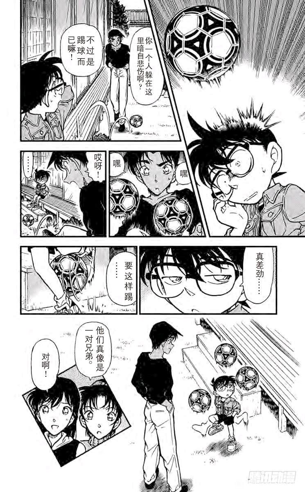
2024-03-29 23:13 | 晓之车2000:假传圣旨可真有的说，兰在和叶面前假传圣旨“真相只有一个”被柯南本人给否了，和哀的开场白里柯南让哀赶快说出这句台词对比强烈。2024-07-17 15:33 | wwsabe:当时看的时候没注意这句，联系全书来看，兰神这人在新一问题上真的恶心坏我了。。。2026-02-28 17:40 | 贴吧用户_JQ3K9yU:兰这里也是给新一下定义不嫌事大，新一要真像他说的容忍不了一点瑕疵那新兰早闹掰了，根本不会让兰嚣张（在新兰关系中处于强势）这么久
由于小兰乱说话，新一的打脸立刻来了，他表示球场上的雷还是英雄，并不会因此而讨厌他（但是拒绝了球衣，没有再去拿，磕药并计划谋杀的雷的球衣已经不是柯南所需要的了）
小兰对新一的行为预测全错，作为青梅竹马而言完全就是失败的，而且这种烂氛围，小兰居然准备索取新一的表白？（只是因为想起园子的话），柯南觉得非常突然，于是他立刻找理由挂断了电话，服部认为柯南是“在逃避”，确实是如此。
我的观点是，如果危命复活时期柯南随时可能向小兰表白，那么经过【大阪3K事件】和【与小哀的若干事件】后，柯南对小兰的感情已经不是那种随时表白的关系了，仿佛带了一层审查的眼光，如果柯南只是想暧昧一下，那么可以打趣小兰或者打太极，但柯南的选择是【挂掉电话】，他这个电话更多是在安慰小兰“别把球衣的事情想太多”，目的达成后就完全不想多聊一会。
和叶认为小兰应该打直球，不应该问“新一对小兰的态度”，而应该直接说喜欢新一，但是小兰已经没有这个自信说这句话了，在她连新一对于足球偶像的态度都预测错误的这一天，她在感情上的自卑心理越发严重，而越是自卑，小兰就越要向外人炫耀自己“了解”新一，从而恶性循环下去。
小兰对新一的行为预测全错，作为青梅竹马而言完全就是失败的，而且这种烂氛围，小兰居然准备索取新一的表白？（只是因为想起园子的话），柯南觉得非常突然，于是他立刻找理由挂断了电话，服部认为柯南是“在逃避”，确实是如此。
我的观点是，如果危命复活时期柯南随时可能向小兰表白，那么经过【大阪3K事件】和【与小哀的若干事件】后，柯南对小兰的感情已经不是那种随时表白的关系了，仿佛带了一层审查的眼光，如果柯南只是想暧昧一下，那么可以打趣小兰或者打太极，但柯南的选择是【挂掉电话】，他这个电话更多是在安慰小兰“别把球衣的事情想太多”，目的达成后就完全不想多聊一会。
和叶认为小兰应该打直球，不应该问“新一对小兰的态度”，而应该直接说喜欢新一，但是小兰已经没有这个自信说这句话了，在她连新一对于足球偶像的态度都预测错误的这一天，她在感情上的自卑心理越发严重，而越是自卑，小兰就越要向外人炫耀自己“了解”新一，从而恶性循环下去。
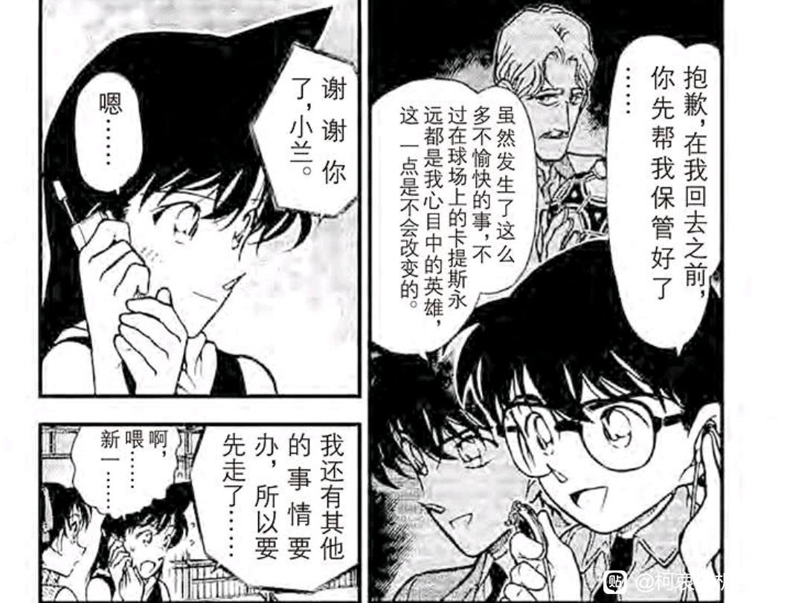
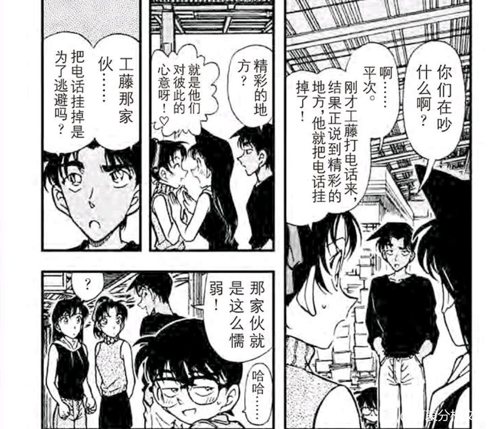
2024-12-14 14:50 | 滦炐祐😁😁:为什么莫名像酒贩子杀饭店老板那集（嫌犯是热恋情侣），哀为了证明比护无罪找山田晃通杀人证据
于是小兰的直球被封印，但是她变化球也打得很不好，我们来看其他几对“棒球选手”是如何打变化球的。
【柯哀】
柯南对光彦执行防患于未然，被小哀发现，于是小哀选取光彦作为森林探索伙伴，但一直保持距离，并且最后成功把光彦送回三小只的世界，于是柯南开始愉悦地盯着小哀。
【平和】
服部故意不透露电话内容，吸引和叶吃醋，于是和叶开始各种小找茬，后续的剧情应该是服部取笑和叶，“我是在跟工藤打电话呀！”然后和叶大喊“平次大笨蛋！”
【高佐】
也就是新干线押送案，高木用了由美的策略，假装和由美去看魔术（但高木很慌，一直和由美切割），佐藤表面平静实则在意，偷偷向由美确认了情况。
可以看到，这三对的变化球都非常有效，悄悄确认对方的心意又不会引发别的问题。
【新兰】
小兰大庭广众之下准备和新出接吻，以逼迫新一出现。
（？？？？？）
真正的变化球出现在许多CP里，但唯独新兰不会拥有，变化球意味着出现矛盾-解决矛盾-关系提升，而新兰是创造矛盾-矛盾没解决-掩盖矛盾，关系表面提升实则不断下降。
【柯哀】
柯南对光彦执行防患于未然，被小哀发现，于是小哀选取光彦作为森林探索伙伴，但一直保持距离，并且最后成功把光彦送回三小只的世界，于是柯南开始愉悦地盯着小哀。
【平和】
服部故意不透露电话内容，吸引和叶吃醋，于是和叶开始各种小找茬，后续的剧情应该是服部取笑和叶，“我是在跟工藤打电话呀！”然后和叶大喊“平次大笨蛋！”
【高佐】
也就是新干线押送案，高木用了由美的策略，假装和由美去看魔术（但高木很慌，一直和由美切割），佐藤表面平静实则在意，偷偷向由美确认了情况。
可以看到，这三对的变化球都非常有效，悄悄确认对方的心意又不会引发别的问题。
【新兰】
小兰大庭广众之下准备和新出接吻，以逼迫新一出现。
（？？？？？）
真正的变化球出现在许多CP里，但唯独新兰不会拥有，变化球意味着出现矛盾-解决矛盾-关系提升，而新兰是创造矛盾-矛盾没解决-掩盖矛盾，关系表面提升实则不断下降。
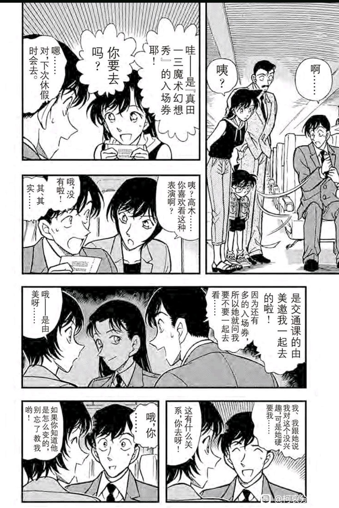
于是柯南可以劝退光彦，和叶可以劝退小兰，佐藤可以劝退由美，但柯南不会劝退新出，对于本堂也不会主动劝退，柯南对小兰的占有欲，早就因为小兰毫无章法的“变化球”而消逝了。
甚至小兰也是如此，她会因为赤木量子随口一说而暴怒，会毫无证据地相信麻美学姐的说辞，会因为“柯南说喜欢的人是小哀”而完全放弃柯南＝新一的思考，因为真的没有变化球的自信了，柯南相信小哀一定能处理好光彦，和叶相信服部不会喜欢小兰，佐藤认为高木由美的组合简直异想天开，新兰之间难道有这种互信吗？
大概只剩下打电话报警的互信吧（好像这个互信也快没有了）
甚至小兰也是如此，她会因为赤木量子随口一说而暴怒，会毫无证据地相信麻美学姐的说辞，会因为“柯南说喜欢的人是小哀”而完全放弃柯南＝新一的思考，因为真的没有变化球的自信了，柯南相信小哀一定能处理好光彦，和叶相信服部不会喜欢小兰，佐藤认为高木由美的组合简直异想天开，新兰之间难道有这种互信吗？
大概只剩下打电话报警的互信吧（好像这个互信也快没有了）
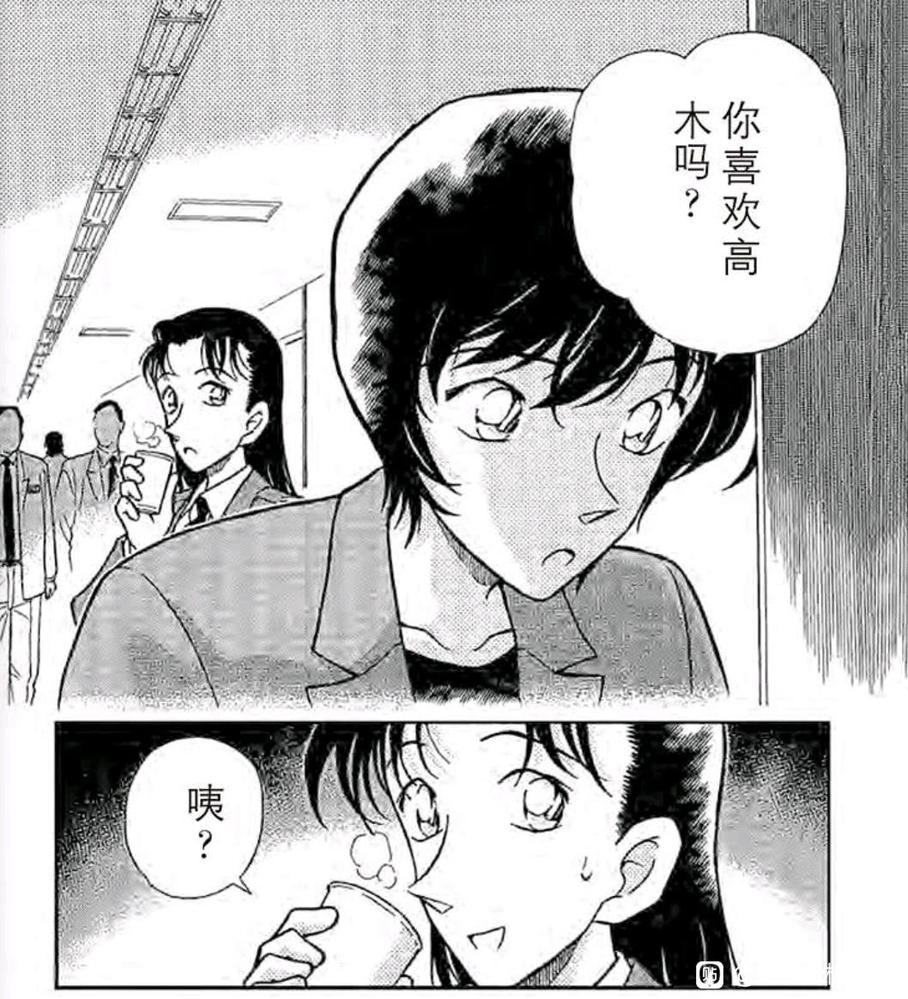
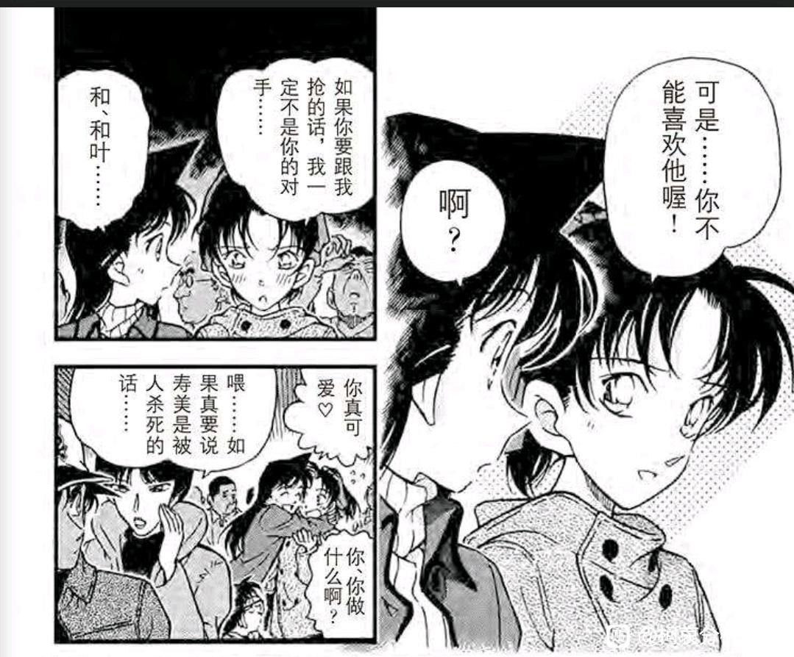
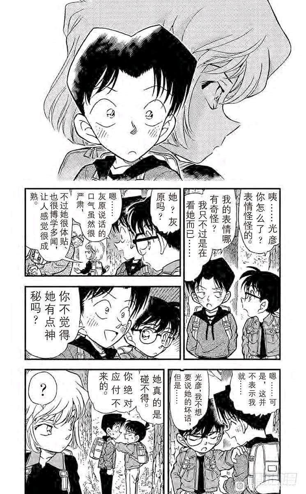
2024-03-09 21:20 | 贴吧用户_GtyRyb2:一提到打电话报警我就想到了风之女神篇，“打电话不能在车上打吗！”2024-07-17 15:37 | wwsabe:兰神逃避真是从头到尾的，到清水寺那一吻也是在逃避工藤的问题2024-12-14 14:58 | 滦炐祐😁😁:由美：我有秀吉了，高木算什么啊2025-08-06 00:10 | 贴吧用户_082AJMG:回复 贴吧用户_GtyRyb2 :毕竟兰神是phone之女神
番外；黄昏别馆的新兰
作为展示乌丸莲耶的一章，黄昏别馆拥有两个新兰关系的暗示：
首先是千间（本案犯人之一）对小兰提出的警告：【有些人总以为下次会得到相同的机会，结果再也没有好机会了】，这完美符合小兰在新兰关系中刚错过的危命复活机会，并且实际上永远错过了（死罗神并不是好机会）
但小兰最后还是成功上厕所：在全都是血迹的黄昏别馆，即使小兰错过了最好的机会，她依然通过伦敦/红修这种形式达成了一开始“和新一成为情侣”的目标，只不过已经是血淋淋的了。
第二个暗示在小兰的扑克牌，显示小兰的运气优势还在下降（麻将案四倍役满-新弗尼号葫芦-黄昏别馆只是一个较大的顺子），尽管小兰具有相对优势，仍然把黑桃A拿在手上，但魔术师案黑桃A背面是黑桃J，而本案黑桃J用血链接了属于小哀的4（草花而不是方块，即柯哀目前的状态还有提升空间）
也就是说，在小兰看不见的地方，柯哀已经建立了某种用鲜血粘在一起的联系，恰好可以指代公交车案柯南在小哀腿上抹了血。
而隔壁的小五郎（基德）和千间对弈国际象棋，可以看到白棋（小哀的棋）已经占据潜在优势了，只是尚未分出胜负而已。
小兰的红桃A已经在漆黑之星案被基德卡替代，整个局面看似小兰优势下是无处不在的劣势，于是我们看到此时小兰【非常惊恐】，露出了后期画风的害怕并抱住基德。
随后小兰因为这种拉垮表现，被所有侦探冷藏无视，又一次错过破案体验，在基德/白马这些人看来，小兰竟然如此胆小，他们对所谓“工藤的女人”的印象进一步下降，而且连命案都发生了，小兰却毫无防备被人迷晕，是觉得侦探那么多自己就不用努力了吗？
小兰更有听到“少年侦探和一位女性”就立刻赤木量子PTSD开始了愤怒质问，要是这里有酒厂成员那新一又暴露了，这可是在乌丸莲耶家，看来之后红黑对决，小兰的表现大概是【暴露新一】-【晕倒】的戏份吧。
作为展示乌丸莲耶的一章，黄昏别馆拥有两个新兰关系的暗示：
首先是千间（本案犯人之一）对小兰提出的警告：【有些人总以为下次会得到相同的机会，结果再也没有好机会了】，这完美符合小兰在新兰关系中刚错过的危命复活机会，并且实际上永远错过了（死罗神并不是好机会）
但小兰最后还是成功上厕所：在全都是血迹的黄昏别馆，即使小兰错过了最好的机会，她依然通过伦敦/红修这种形式达成了一开始“和新一成为情侣”的目标，只不过已经是血淋淋的了。
第二个暗示在小兰的扑克牌，显示小兰的运气优势还在下降（麻将案四倍役满-新弗尼号葫芦-黄昏别馆只是一个较大的顺子），尽管小兰具有相对优势，仍然把黑桃A拿在手上，但魔术师案黑桃A背面是黑桃J，而本案黑桃J用血链接了属于小哀的4（草花而不是方块，即柯哀目前的状态还有提升空间）
也就是说，在小兰看不见的地方，柯哀已经建立了某种用鲜血粘在一起的联系，恰好可以指代公交车案柯南在小哀腿上抹了血。
而隔壁的小五郎（基德）和千间对弈国际象棋，可以看到白棋（小哀的棋）已经占据潜在优势了，只是尚未分出胜负而已。
小兰的红桃A已经在漆黑之星案被基德卡替代，整个局面看似小兰优势下是无处不在的劣势，于是我们看到此时小兰【非常惊恐】，露出了后期画风的害怕并抱住基德。
随后小兰因为这种拉垮表现，被所有侦探冷藏无视，又一次错过破案体验，在基德/白马这些人看来，小兰竟然如此胆小，他们对所谓“工藤的女人”的印象进一步下降，而且连命案都发生了，小兰却毫无防备被人迷晕，是觉得侦探那么多自己就不用努力了吗？
小兰更有听到“少年侦探和一位女性”就立刻赤木量子PTSD开始了愤怒质问，要是这里有酒厂成员那新一又暴露了，这可是在乌丸莲耶家，看来之后红黑对决，小兰的表现大概是【暴露新一】-【晕倒】的戏份吧。
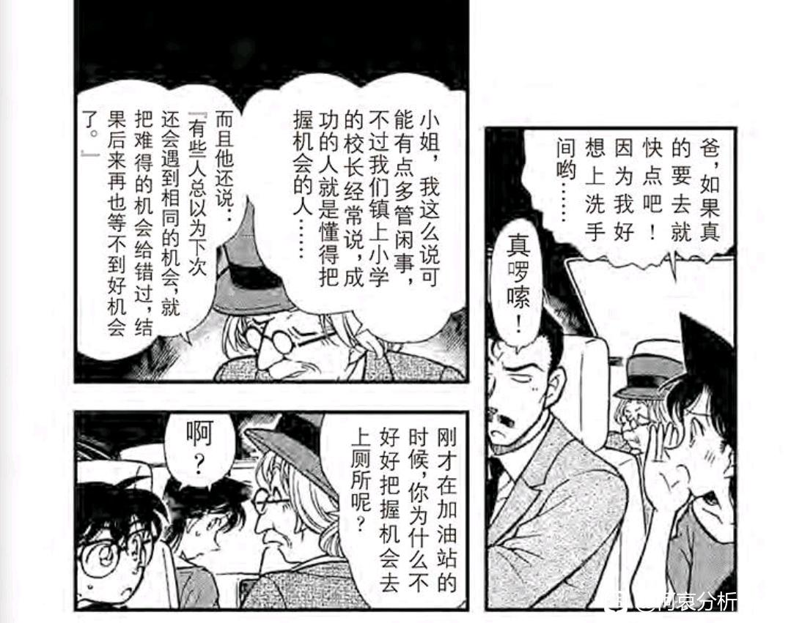
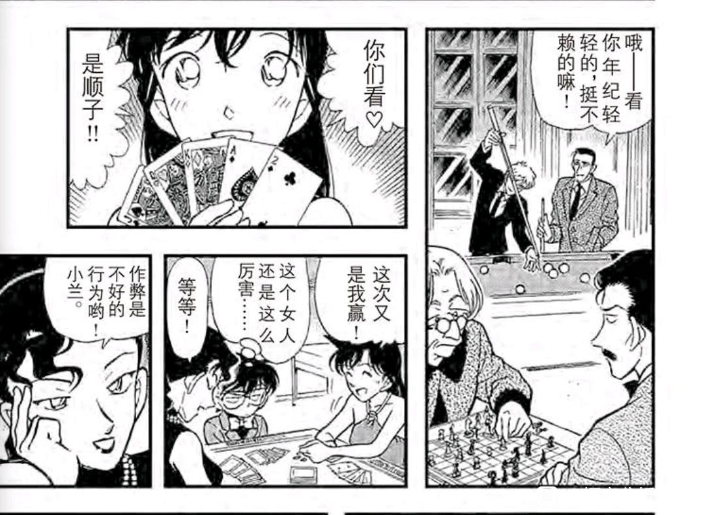
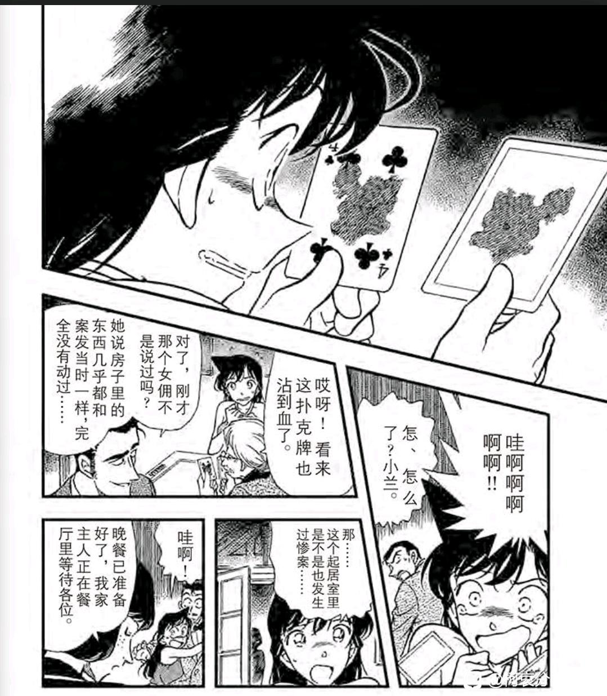
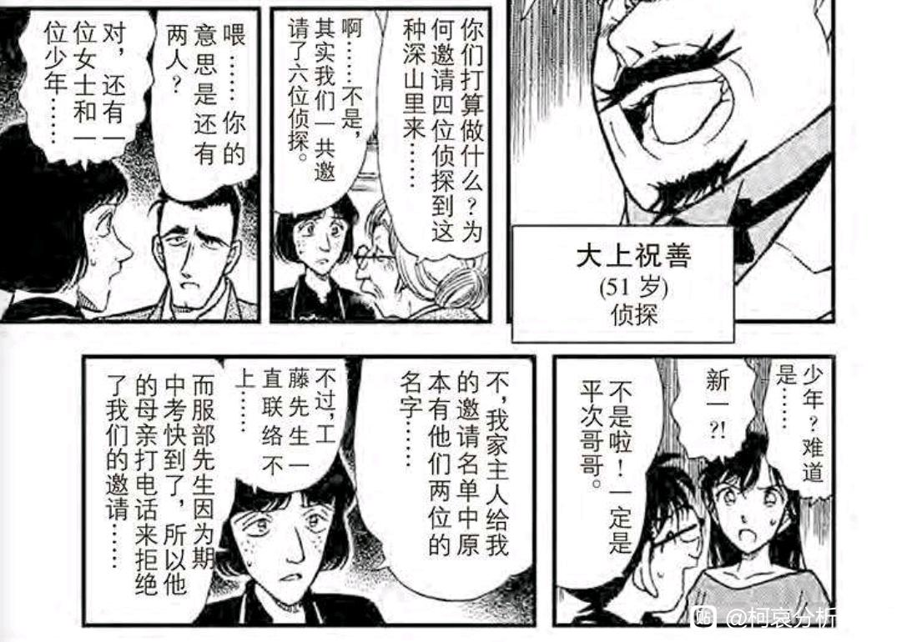
2024-03-01 00:11 | lxt370:楼主，是梅花4不是j啦2024-03-01 00:11 | lxt370:楼主，是梅花4不是j啦2024-08-31 07:42 | 御坂旅人:“作弊是不好的行为哟，小兰”，小兰的很多行为确实蛮作弊的2025-03-03 13:09 | ▫Hermit:运气下降这个真的细啊2025-07-06 12:17 | 贴吧用户_aEX815V:回复 lxt370 :是梅花4和黑桃j被血迹黏在一起了
七、网中迷之前的柯哀：带娃模式的开启
重申一个我的观点：满月篇的小哀有【逃避命运】的时候，但逃避的时间很短（仅仅在公交车案），大部分时候，小哀提及“组织不会放过我的”等哀言哀语时，并不是表达悲观的态度，反而更多是一种对柯南的调侃，说一些只有柯哀听得懂的话，看着柯南“喂喂”的表情会觉得很有趣。
而证据就藏在温暖的日常篇：第151天【元太的灾难】一章中，我们将看到早已从情绪低落中走出的小哀，不自觉地与柯南一起担任三小只的保护者，并且在【蓝色古堡-步美】，【蘑菇与熊-光彦】，【元太的灾难】三篇中与三小只分别建立了亲密的联系，一般会被称为“柯爸哀妈”，柯哀将进入一边带娃一边探索对方内心的有趣阶段。
如图，似乎在学校的日子里，柯哀吃午饭也是靠在一起吃的，而且肆无忌惮地聊着只属于他们的话题，小哀首次对柯南透露她在美国的学习生活：与新一类似的孤独。
在滑雪篇中，新一小兰吃饭的画面没有描写，但是平和的吃饭画面与此处颇为类似，在吵吵闹闹的地方与有趣的人一起吃饭，也许当事人只感到一点点害羞，但在旁人看来恐怕就很亲密了。
重申一个我的观点：满月篇的小哀有【逃避命运】的时候，但逃避的时间很短（仅仅在公交车案），大部分时候，小哀提及“组织不会放过我的”等哀言哀语时，并不是表达悲观的态度，反而更多是一种对柯南的调侃，说一些只有柯哀听得懂的话，看着柯南“喂喂”的表情会觉得很有趣。
而证据就藏在温暖的日常篇：第151天【元太的灾难】一章中，我们将看到早已从情绪低落中走出的小哀，不自觉地与柯南一起担任三小只的保护者，并且在【蓝色古堡-步美】，【蘑菇与熊-光彦】，【元太的灾难】三篇中与三小只分别建立了亲密的联系，一般会被称为“柯爸哀妈”，柯哀将进入一边带娃一边探索对方内心的有趣阶段。
如图，似乎在学校的日子里，柯哀吃午饭也是靠在一起吃的，而且肆无忌惮地聊着只属于他们的话题，小哀首次对柯南透露她在美国的学习生活：与新一类似的孤独。
在滑雪篇中，新一小兰吃饭的画面没有描写，但是平和的吃饭画面与此处颇为类似，在吵吵闹闹的地方与有趣的人一起吃饭，也许当事人只感到一点点害羞，但在旁人看来恐怕就很亲密了。
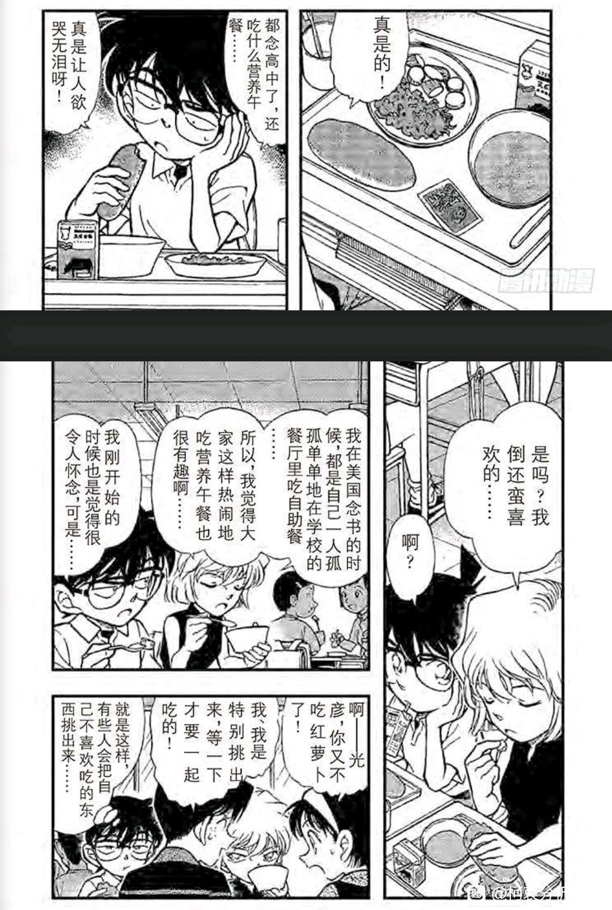
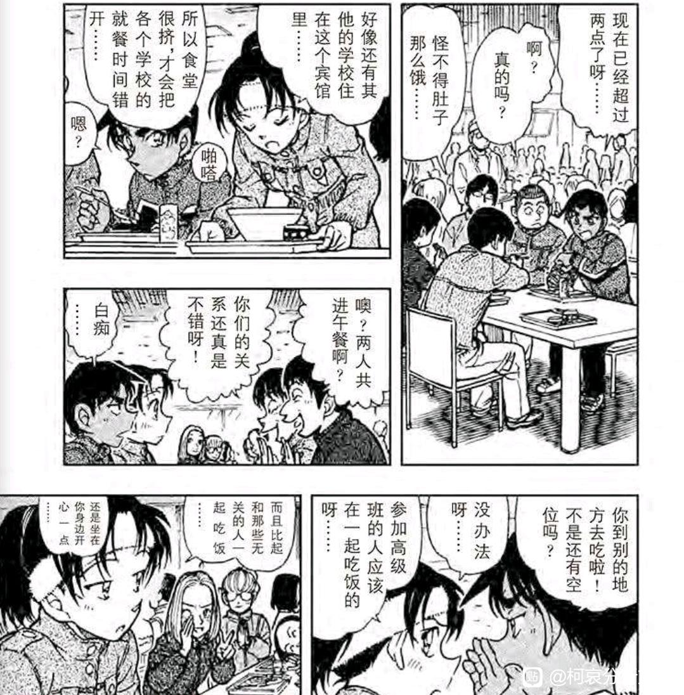
2024-11-19 09:11 | mian羊º:看到哀提在美国的过去就心疼
接着，柯哀还要去解决元太的心理问题，这一幕实在太像夫妻对不省心的孩子进行开导了，柯南扮演告诫的角色，小哀扮演安慰的角色，看着生气的元太露出一模一样的表情 。
。
但是发觉元太真的有危险后，柯哀的反应又是一致的，即真的开始担心起来。（可以看到，琴酒的追杀已经变成柯哀调节气氛的工具了）
接着火箭队（误）R标志掉了下来，柯哀又是第一时间把孩子们护在身后（太帅了！），并极为默契地开始了调查，柯南查证据小哀查动机，三两下就把元太这件事搞清楚了。
这个默契程度比起愁思郎案又上一层楼，愁思郎案还存在柯哀破案的先后顺序，这里直接同时发动，不过也难怪，毕竟柯哀已经是天天黏在一起的关系了。
。但是发觉元太真的有危险后，柯哀的反应又是一致的，即真的开始担心起来。（可以看到，琴酒的追杀已经变成柯哀调节气氛的工具了）
接着火箭队（误）R标志掉了下来，柯哀又是第一时间把孩子们护在身后（太帅了！），并极为默契地开始了调查，柯南查证据小哀查动机，三两下就把元太这件事搞清楚了。
这个默契程度比起愁思郎案又上一层楼，愁思郎案还存在柯哀破案的先后顺序，这里直接同时发动，不过也难怪，毕竟柯哀已经是天天黏在一起的关系了。
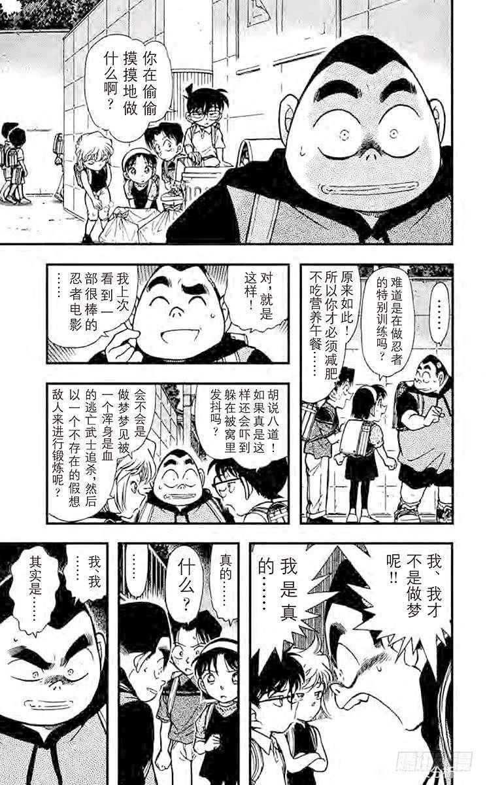
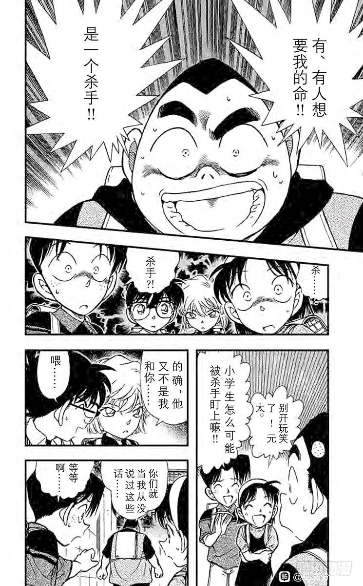
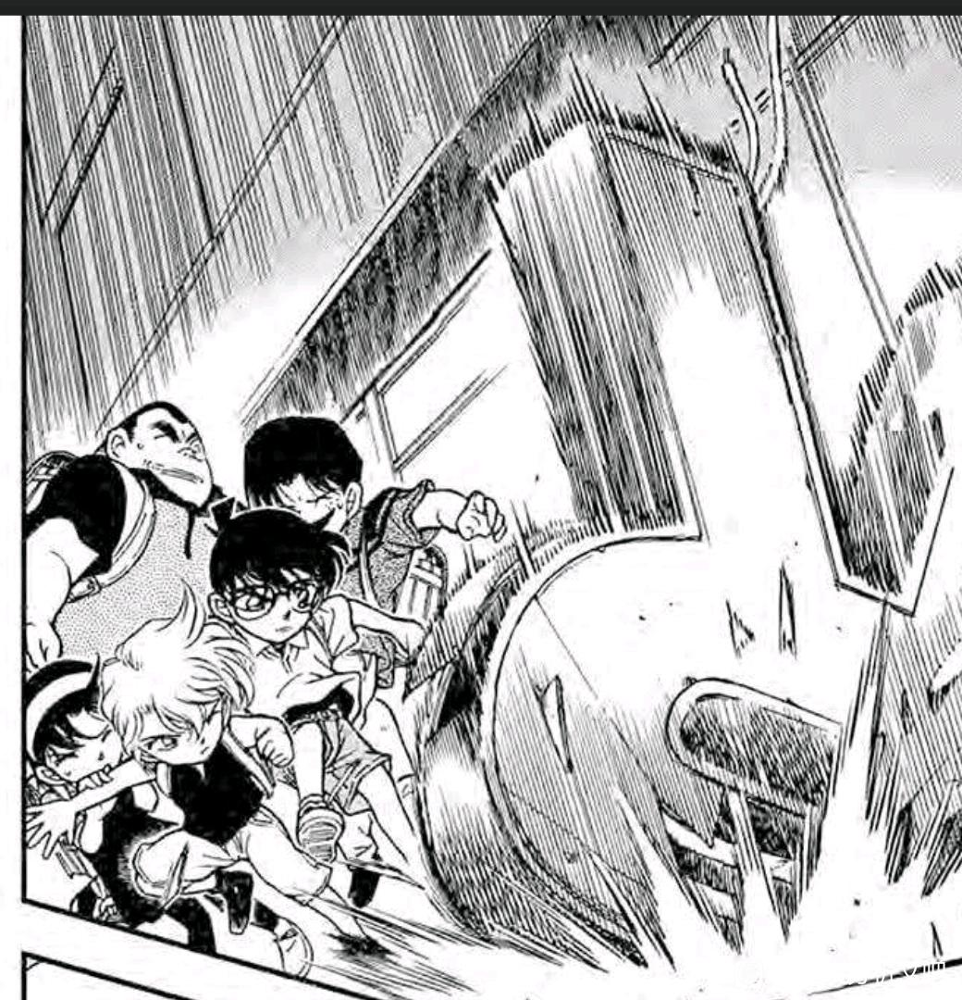
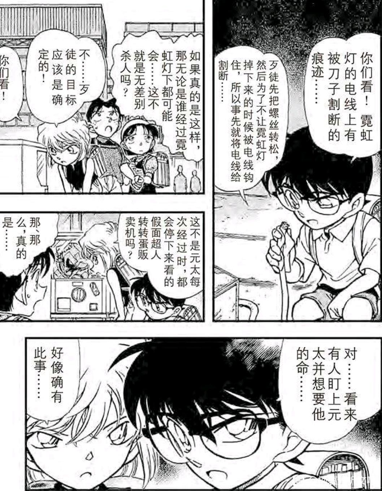
我们计算一下，一般工作日柯哀相处的时间。
柯南作为起床困难户，经常来不及吃早饭（例如小百合案），所以相当于闹钟起床直接去上学，上学前第一个遇到的人是小哀（家离得最近）
（小哀经常用福尔摩斯打趣柯南，每次都能看到柯南的有趣表情！）
然后上课同桌（或者临桌），吃饭一起吃，放学一起回（很可能会一起踢球再回家），这么说来，柯兰相处的时间也就只有晚饭而已（小兰还要经常空手道集训，很多时候小五郎会带着柯南去外面吃）。晚饭后小兰就以“小孩子要早点睡”为理由让柯南睡觉。
柯南在小五郎房间打地铺，睡觉的时间柯兰也是不见面的。
周末/节假日柯南直接“我要去博士家玩游戏”然后去博士家，又和小哀黏在一起。
这样看来，柯哀相处时间应该远高于柯兰相处时间，而且时间利用率也是超级高，新兰放学路上还得聊福尔摩斯，柯哀放学时聊的话题五花八门（甚至还会聊萝莉控之类的话题）
所以柯哀默契远高于新兰是很正常的事情，甚至三小只还表示柯哀等三小只走后，会【单独去什么地方玩】，小哀还“阿拉，这也不错呢”，按这个趋势，即使柯南无损变大，也很可能不再愿意和小兰一起上学放学了。
柯南作为起床困难户，经常来不及吃早饭（例如小百合案），所以相当于闹钟起床直接去上学，上学前第一个遇到的人是小哀（家离得最近）
（小哀经常用福尔摩斯打趣柯南，每次都能看到柯南的有趣表情！）
然后上课同桌（或者临桌），吃饭一起吃，放学一起回（很可能会一起踢球再回家），这么说来，柯兰相处的时间也就只有晚饭而已（小兰还要经常空手道集训，很多时候小五郎会带着柯南去外面吃）。晚饭后小兰就以“小孩子要早点睡”为理由让柯南睡觉。
柯南在小五郎房间打地铺，睡觉的时间柯兰也是不见面的。
周末/节假日柯南直接“我要去博士家玩游戏”然后去博士家，又和小哀黏在一起。
这样看来，柯哀相处时间应该远高于柯兰相处时间，而且时间利用率也是超级高，新兰放学路上还得聊福尔摩斯，柯哀放学时聊的话题五花八门（甚至还会聊萝莉控之类的话题
）所以柯哀默契远高于新兰是很正常的事情，甚至三小只还表示柯哀等三小只走后，会【单独去什么地方玩】，小哀还“阿拉，这也不错呢”，按这个趋势，即使柯南无损变大，也很可能不再愿意和小兰一起上学放学了。
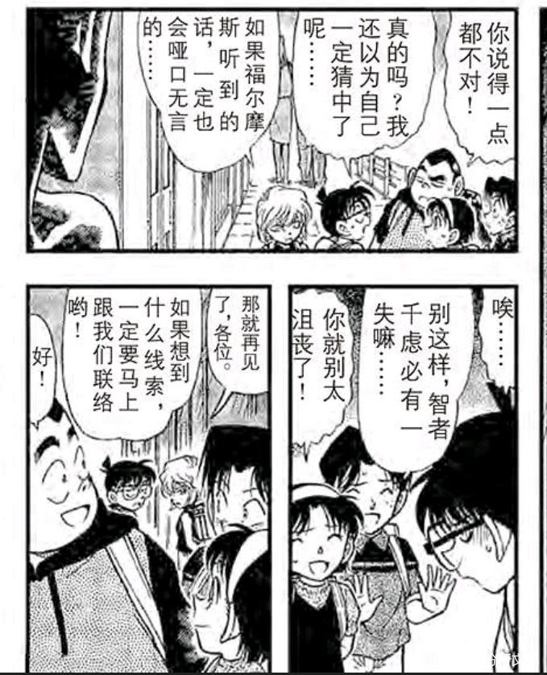
2025-02-02 21:10 | Bossuguuguu:萝莉控的话题是去吃饭的路上聊的2025-08-06 01:07 | 贴吧用户_G5N76RW:还聊过赤井有恋童癖2025-09-20 05:19 | 尘风黎明:柯南起床困难户是因为这货老是熬夜看书，不过小哀出现后估计还得加上熬夜煲电话粥的原因
八、网中迷前的新兰：“外遇”的气氛
小时间线第152天，充满不详征兆的陶艺教室案开始了，本案虽然小兰戏份较多，但并没有形成独立感情线（被真园分走一半），而且关于小兰的部分充满了【外遇】元素。
事情的起因是园子放弃了毛衣计划，改为送茶杯给阿真，表面的理由是【怕有别的女生接近阿真】，但真正的理由恐怕是园子想多表达一些自己的爱意吧。
园子也就随口一说，小兰立刻联想到非常具体的画面，不但有完整的剧情，还有非常细节的女主角形象。但是，人不能设想没有样本的画面，小兰所设想的场景其实是她一次次危机感的总和，而且这些样本里，【不包含真正的新一】
设想中的女主角包含了有希子，赤木量子和小哀的形象，这些都是小兰严重吃醋过的女性，也是小兰总结的新一会喜欢的那种外形。（非常具有参考价值！）女主角的哭泣，主要来源应该是“不晓得她为什么会哭”的赤木量子，但是意外地被小兰组合为柯哀广田教授案的站位（小哀的“为什么啊！”）
而设想中的新一则与真新一毫无关系，反而更像小五郎，从长门案或新出案都可以看出，柯南更倾向于用实际行动避免更多受伤，而非在言语上给对方安慰（反而是服部会更多地想安慰受伤的人），更不用说在月光案以前，新一会以“推理把犯人逼上绝路”为乐，小兰脑中这个新一完全是她以其他样本臆想出来的。
毕竟小兰确实不关心新一的推理，但很关心对方所谓“外遇”情况，于是就出现了很不准确的新一和比较准确的女主角，这就为本案定下基调：“外遇”，这是公交车案后，网中迷前小兰不安全感的体现，小兰观测到的事情有：
【柯南在公交车案受重伤（好像是为了小哀）】
【新一拒绝了自己送的雷的签名球衣】
【新一和柯南非常像，柯南和少侦出去的次数越来越多了】
【在她怀疑柯南是新一时，柯南向她隐瞒了小哀的消息】
于是小兰在网中迷仍然对小哀保持了很大的关注，虽然没有后来手机短信的“铁证”，但也足以让小兰判定柯南喜欢小哀了。
小时间线第152天，充满不详征兆的陶艺教室案开始了，本案虽然小兰戏份较多，但并没有形成独立感情线（被真园分走一半），而且关于小兰的部分充满了【外遇】元素。
事情的起因是园子放弃了毛衣计划，改为送茶杯给阿真，表面的理由是【怕有别的女生接近阿真】，但真正的理由恐怕是园子想多表达一些自己的爱意吧。
园子也就随口一说，小兰立刻联想到非常具体的画面，不但有完整的剧情，还有非常细节的女主角形象。但是，人不能设想没有样本的画面，小兰所设想的场景其实是她一次次危机感的总和，而且这些样本里，【不包含真正的新一】
设想中的女主角包含了有希子，赤木量子和小哀的形象，这些都是小兰严重吃醋过的女性，也是小兰总结的新一会喜欢的那种外形。（非常具有参考价值！）女主角的哭泣，主要来源应该是“不晓得她为什么会哭”的赤木量子，但是意外地被小兰组合为柯哀广田教授案的站位（小哀的“为什么啊！”）
而设想中的新一则与真新一毫无关系，反而更像小五郎，从长门案或新出案都可以看出，柯南更倾向于用实际行动避免更多受伤，而非在言语上给对方安慰（反而是服部会更多地想安慰受伤的人），更不用说在月光案以前，新一会以“推理把犯人逼上绝路”为乐，小兰脑中这个新一完全是她以其他样本臆想出来的。
毕竟小兰确实不关心新一的推理，但很关心对方所谓“外遇”情况，于是就出现了很不准确的新一和比较准确的女主角，这就为本案定下基调：“外遇”，这是公交车案后，网中迷前小兰不安全感的体现，小兰观测到的事情有：
【柯南在公交车案受重伤（好像是为了小哀）】
【新一拒绝了自己送的雷的签名球衣】
【新一和柯南非常像，柯南和少侦出去的次数越来越多了】
【在她怀疑柯南是新一时，柯南向她隐瞒了小哀的消息】
于是小兰在网中迷仍然对小哀保持了很大的关注，虽然没有后来手机短信的“铁证”，但也足以让小兰判定柯南喜欢小哀了。
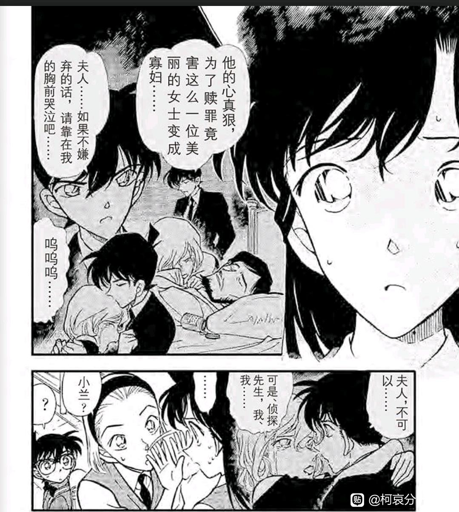
2024-03-01 04:49 | 雪者风形:这个曹贼版工藤新一还挺微妙的（）2024-04-11 12:45 | 贤家的鱼苗儿♀:回复 雪者风形 :曹贼版！哈哈哈哈哈哈哈哈2024-08-31 07:52 | 御坂旅人:小兰还挺有品味的，每次脑补的新一外遇对象都这么美2024-09-01 05:38 | 肥宅快乐水乾杯:回复 御坂旅人 :个个都是混血短发美女2024-10-19 11:19 | 贴吧用户_5NQR378:但我当时看的时候关注的是，新一怎么可能会说这种话，这明显是小五郎会说的2024-11-18 05:28 | AnubisBigdog:以后对面洗小兰不了解新一可以拿这段说，完美猜中新一喜欢什么类型的女生，这不就是了解吗2025-08-06 00:22 | 贴吧用户_082AJMG:看样子兰神似乎对新一的XP倒是有相当程度的了解嘛？
于是小兰立刻行动，报名了园子的陶艺班，小兰的目标大概是像园子那样，送一个茶杯给新一，让他随时记住自己。
但是，如同小兰的许多计划一样，这个茶杯也被半途而废了，因为小兰在茶杯上设计的不是什么有爱的文字，而是【大笨蛋推理狂】，这句话被陶艺教师认为是【好好的茶杯配上这些字就很可惜了】，被柯南认为【怪不得不敢送】，完全就是骂人的话，对于小兰而言，这就是新一在她心中最显著的印象，很差的印象。
并且，这个茶杯做工上也有问题，陶艺教师认为这是【有难以决定的事】，对小兰而言，她希望新一注意到这个“大笨蛋推理狂”的称呼，从而离开推理，回到“一直等待他”的小兰身边，这样的话小兰就应该把茶杯送出去。
但小兰不敢送，签名球衣被拒绝还情有可原，但这个茶杯要是再被拒绝，就宣告新兰关系的结束了，与自信满满的园子不同，小兰对新一极端不放心，怕新一“出轨”又怕发现他“出轨”，这种矛盾的心理形成了做工粗糙的茶杯，也形成了粗糙的新兰关系。
但是，如同小兰的许多计划一样，这个茶杯也被半途而废了，因为小兰在茶杯上设计的不是什么有爱的文字，而是【大笨蛋推理狂】，这句话被陶艺教师认为是【好好的茶杯配上这些字就很可惜了】，被柯南认为【怪不得不敢送】，完全就是骂人的话，对于小兰而言，这就是新一在她心中最显著的印象，很差的印象。
并且，这个茶杯做工上也有问题，陶艺教师认为这是【有难以决定的事】，对小兰而言，她希望新一注意到这个“大笨蛋推理狂”的称呼，从而离开推理，回到“一直等待他”的小兰身边，这样的话小兰就应该把茶杯送出去。
但小兰不敢送，签名球衣被拒绝还情有可原，但这个茶杯要是再被拒绝，就宣告新兰关系的结束了，与自信满满的园子不同，小兰对新一极端不放心，怕新一“出轨”又怕发现他“出轨”，这种矛盾的心理形成了做工粗糙的茶杯，也形成了粗糙的新兰关系。
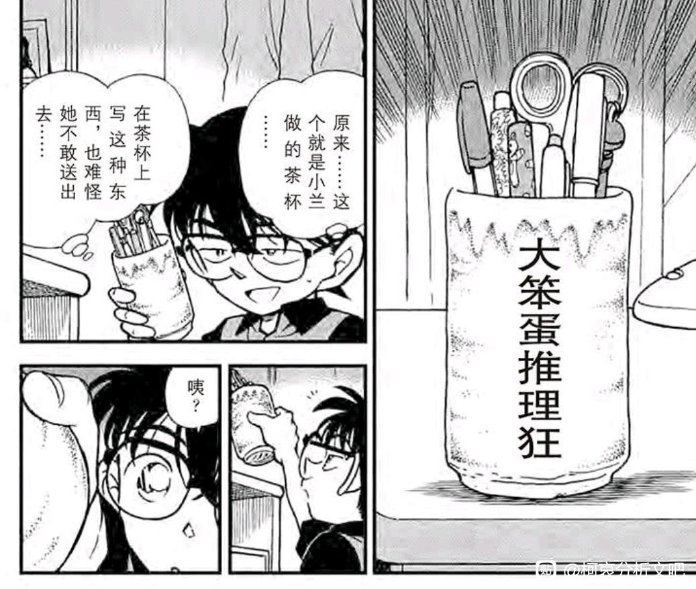
我们再从柯南视角回顾这个案件。
柯南去陶艺教室是干什么呢？
A 想和小兰黏在一起
B 想看看小兰有没有出轨
C 没有什么目的，就是去看看而已
答案A是显著的迷惑项，陶艺教室已经开了三周且每次都是周日，但柯南选择第三周才到现场看，如果真的把这个理解为柯南和小兰黏在一起，那就变成“前两周和小哀出去玩了，所以没有去茶艺教室”，就变成M24叫两声灰原再叫一声小兰的奇怪场景。
答案B有一定可能，但不是全部，柯南的确看见小兰【为新一的“外遇”而担心】，但小兰与园子单独参加活动，往往伴随着某些“联谊”，一般来讲柯南还是愿意干预一下（以青梅竹马的角度），小五郎就以父亲的身份，在第二周来陶艺教室看小兰，柯南比小五郎还要晚，即使有看小兰有无代餐的心思，那也是很靠后的了。
答案C与答案B共同构成柯南的动机，可以看到柯南是偷偷来并有所隐藏，来了之后也不对小兰的陶艺有什么兴趣（场子里并没有适龄单身男性），反而自己开始学陶艺，甚至不好奇小兰在陶艺上写了什么字。
与小兰对新一的过度怀疑相反，柯南对小兰“可能出轨”的思考量并不多，甚至低于青梅竹马水平，柯南对小兰的容忍度越来越高，从绑带怪人当面愤怒，到妃英理咖啡店背后调查，到魔术爱好者案离开后再返回，再到陶艺教室三个星期无视小兰的行动，小兰的代餐行为越严重，短期对新兰好感提升越高，长期柯南对小兰的占有欲就越低。
柯南去陶艺教室是干什么呢？
A 想和小兰黏在一起
B 想看看小兰有没有出轨
C 没有什么目的，就是去看看而已
答案A是显著的迷惑项，陶艺教室已经开了三周且每次都是周日，但柯南选择第三周才到现场看，如果真的把这个理解为柯南和小兰黏在一起，那就变成“前两周和小哀出去玩了，所以没有去茶艺教室”，就变成M24叫两声灰原再叫一声小兰的奇怪场景。
答案B有一定可能，但不是全部，柯南的确看见小兰【为新一的“外遇”而担心】，但小兰与园子单独参加活动，往往伴随着某些“联谊”，一般来讲柯南还是愿意干预一下（以青梅竹马的角度），小五郎就以父亲的身份，在第二周来陶艺教室看小兰，柯南比小五郎还要晚，即使有看小兰有无代餐的心思，那也是很靠后的了。
答案C与答案B共同构成柯南的动机，可以看到柯南是偷偷来并有所隐藏，来了之后也不对小兰的陶艺有什么兴趣（场子里并没有适龄单身男性），反而自己开始学陶艺，甚至不好奇小兰在陶艺上写了什么字。
与小兰对新一的过度怀疑相反，柯南对小兰“可能出轨”的思考量并不多，甚至低于青梅竹马水平，柯南对小兰的容忍度越来越高，从绑带怪人当面愤怒，到妃英理咖啡店背后调查，到魔术爱好者案离开后再返回，再到陶艺教室三个星期无视小兰的行动，小兰的代餐行为越严重，短期对新兰好感提升越高，长期柯南对小兰的占有欲就越低。
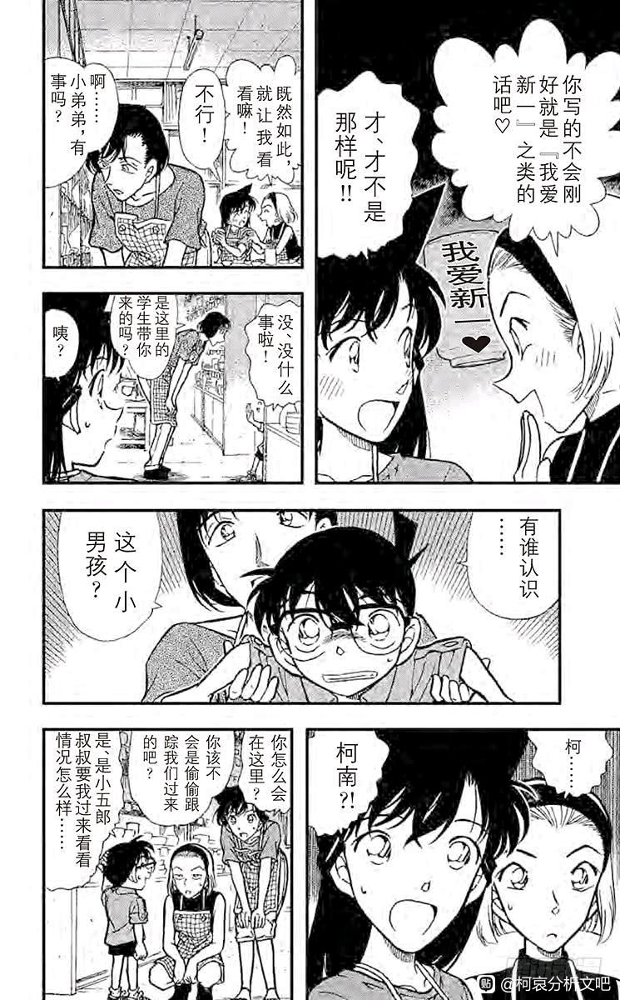
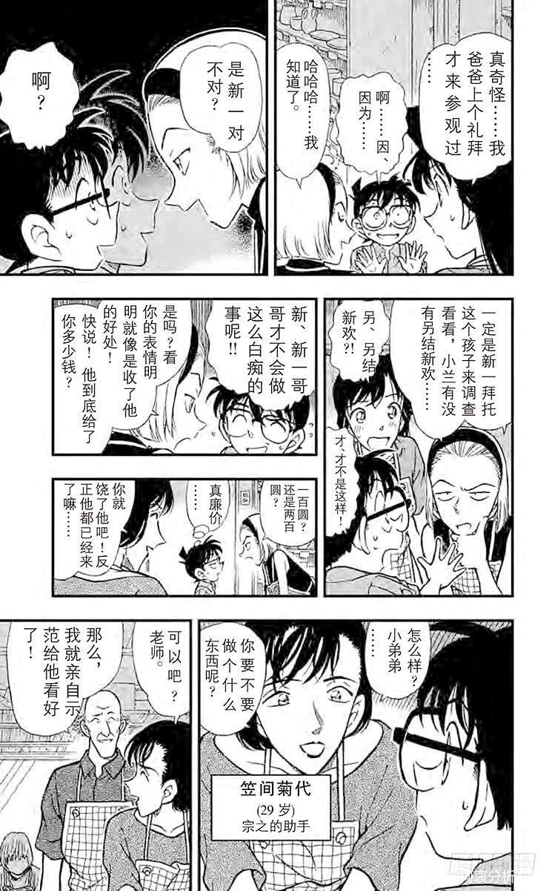
2025-09-20 05:24 | 尘风黎明:叫两声灰原再叫一声小兰哈哈哈哈哈，笑撅了哈哈哈哈
但总体而言，陶艺教室案对新兰关系依旧是一个不小的提升，本案小兰表现较为积极，与柯南一起冲案发现场，虽然默契程度不如小哀的十分之一，好歹也算有所行动。（小兰毕竟是为了给新一做茶杯来的，对案件的兴趣得到短暂提升）
此外，小兰在茶杯底设计的“我一定会等你回来的呦”给予柯南不错的观感，如果只有“大笨蛋推理狂”，那么柯南将很不高兴，而且顺序很有讲究，如果先看到“等你回来”再看到“推理狂”，那观感就更差了。
值得注意的是，小兰的积极行为一般出现在某些重要的柯兰哀篇章前一点点，仿佛是为了临时提升小兰在小哀面前的能力：
【小兰送毛衣-再会篇/危命复活】
【小兰做茶杯-网中迷】
【小兰做巧克力-干净的香味篇章】
【小兰解决便利店案-满月对决】
【冲矢昴纸飞机-死罗神】
这样，小哀就总能看见表现很好的小兰，于是隐藏自己对柯南的喜欢，形成喜剧冲突，但这仍然类似于小兰运气的一部分，随着小兰运气的逐渐降低，伦敦篇后已经不能对小哀形成局部优势了。
此外，小兰在茶杯底设计的“我一定会等你回来的呦”给予柯南不错的观感，如果只有“大笨蛋推理狂”，那么柯南将很不高兴，而且顺序很有讲究，如果先看到“等你回来”再看到“推理狂”，那观感就更差了。
值得注意的是，小兰的积极行为一般出现在某些重要的柯兰哀篇章前一点点，仿佛是为了临时提升小兰在小哀面前的能力：
【小兰送毛衣-再会篇/危命复活】
【小兰做茶杯-网中迷】
【小兰做巧克力-干净的香味篇章】
【小兰解决便利店案-满月对决】
【冲矢昴纸飞机-死罗神】
这样，小哀就总能看见表现很好的小兰，于是隐藏自己对柯南的喜欢，形成喜剧冲突，但这仍然类似于小兰运气的一部分，随着小兰运气的逐渐降低，伦敦篇后已经不能对小哀形成局部优势了。
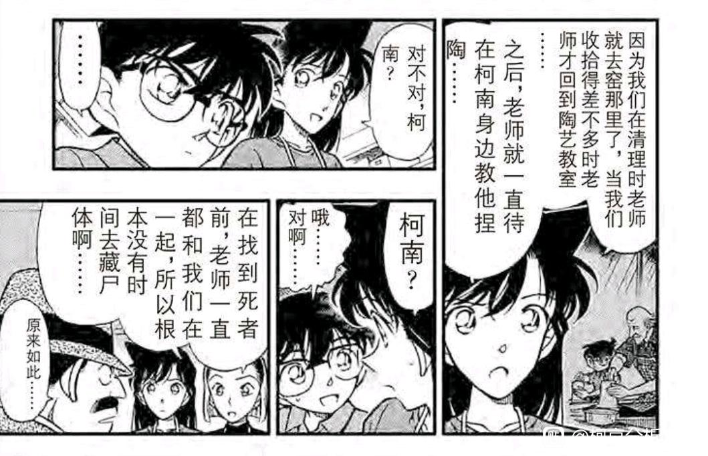
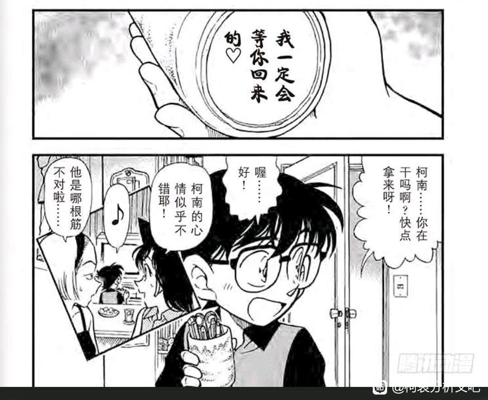
2024-04-27 16:49 | 上総守信長ºº:这里还有个细节是兰故意让柯南拿零食以发现那个杯子。虽然不敢直接送，但换成认识新一哥哥的柯南小鬼转达一下咱就不尴尬啦2024-04-27 17:29 | 🌐之徙:回复 上総守信長ºº :有可能，不过没有实锤，小兰的杯子不太显眼，也并不敢真的送给新一。
居然赶上了直播!！
顶顶更新
如果说陶艺教室案的柯兰互动是对新兰【心理关系】的临时提升，那么第153天【小五郎冒充者】则完全是小兰用身体单方面对柯南输出的过程。这同时也标志着柯南在危命复活后又一次成为小兰的正式代餐（之一）。
此时的柯南在小兰心里是什么样的存在呢？应该是【新一指导下的，很像新一的聪明小孩】，仍然是小兰缺乏安全感时的依靠，于是小兰在“怕鬼”时做出把柯南【紧紧抱住】的行为。
这个行为不是简单的抱住，而是绝对意义上的亲密接触，后来小兰再次怀疑柯南是新一时，把这种行为与一些更亲密的行为并列（包括小五郎同学会一起洗澡，向柯南表达自己喜欢新一，绷带怪人案与柯南一起睡觉），小兰再怕鬼，有必要这么做吗？
正如小兰抱住新出医生不可能是单纯怕黑，小兰抱住柯南也不是怕鬼，自大阪3K事件确定柯南与新一喜好极为相似后，柯南再次承担小兰心理有落差时最方便的代餐，球衣被退+茶杯送不出去的小兰，选择抱住柯南以缓解自己对新一的某种需求。
于是柯南对小兰的身材形成了印象，得以在网中迷迅速认出小兰，但也仅此而已了，身体接触可以产生身体的熟悉，却掩盖着心理上的陌生与偏差，当小兰继续以“怕鬼”的理由抱住柯南后，她得到了父亲的重要告诫：
【如果诅咒能杀人，还要侦探和警察干嘛？】
但此话之后，小兰面对“诅咒”“鬼怪”的表现仍越来越离谱，走向与侦探背道而驰的方向，抱柯南的动作也越来越紧（柯南的表情可以看出来），身体靠近与心理远离在这一案中同时发生。
更戏剧性的是，操哥作为一直以来怕鬼的角色，在对小五郎的崇拜下逐渐不那么怕鬼，后期经常说“在信息时代，怎么还会有鬼呢？”虽然推理能力依然不行，但我们能看到山村是有成长的，再怕鬼也不至于完全无法行动。
真正怕鬼的只有小兰一人，并且她会越来越怕，从【怕鬼以抱住柯南】的寻找代餐逐渐变为【我一定是怕鬼】的概念强化。
当然，短期内新兰关系还是提升的，柯南并不介意被小兰多抱一会。（这种提升显然慢于柯哀关系提升，因为小兰已经使用过一起洗澡这种最大功率战术了）

此时的柯南在小兰心里是什么样的存在呢？应该是【新一指导下的，很像新一的聪明小孩】，仍然是小兰缺乏安全感时的依靠，于是小兰在“怕鬼”时做出把柯南【紧紧抱住】的行为。
这个行为不是简单的抱住，而是绝对意义上的亲密接触，后来小兰再次怀疑柯南是新一时，把这种行为与一些更亲密的行为并列（包括小五郎同学会一起洗澡，向柯南表达自己喜欢新一，绷带怪人案与柯南一起睡觉），小兰再怕鬼，有必要这么做吗？
正如小兰抱住新出医生不可能是单纯怕黑，小兰抱住柯南也不是怕鬼，自大阪3K事件确定柯南与新一喜好极为相似后，柯南再次承担小兰心理有落差时最方便的代餐，球衣被退+茶杯送不出去的小兰，选择抱住柯南以缓解自己对新一的某种需求。
于是柯南对小兰的身材形成了印象，得以在网中迷迅速认出小兰，但也仅此而已了，身体接触可以产生身体的熟悉，却掩盖着心理上的陌生与偏差，当小兰继续以“怕鬼”的理由抱住柯南后，她得到了父亲的重要告诫：
【如果诅咒能杀人，还要侦探和警察干嘛？】
但此话之后，小兰面对“诅咒”“鬼怪”的表现仍越来越离谱，走向与侦探背道而驰的方向，抱柯南的动作也越来越紧（柯南的表情可以看出来），身体靠近与心理远离在这一案中同时发生。
更戏剧性的是，操哥作为一直以来怕鬼的角色，在对小五郎的崇拜下逐渐不那么怕鬼，后期经常说“在信息时代，怎么还会有鬼呢？”虽然推理能力依然不行，但我们能看到山村是有成长的，再怕鬼也不至于完全无法行动。
真正怕鬼的只有小兰一人，并且她会越来越怕，从【怕鬼以抱住柯南】的寻找代餐逐渐变为【我一定是怕鬼】的概念强化。
当然，短期内新兰关系还是提升的，柯南并不介意被小兰多抱一会。（这种提升显然慢于柯哀关系提升，因为小兰已经使用过一起洗澡这种最大功率战术了）
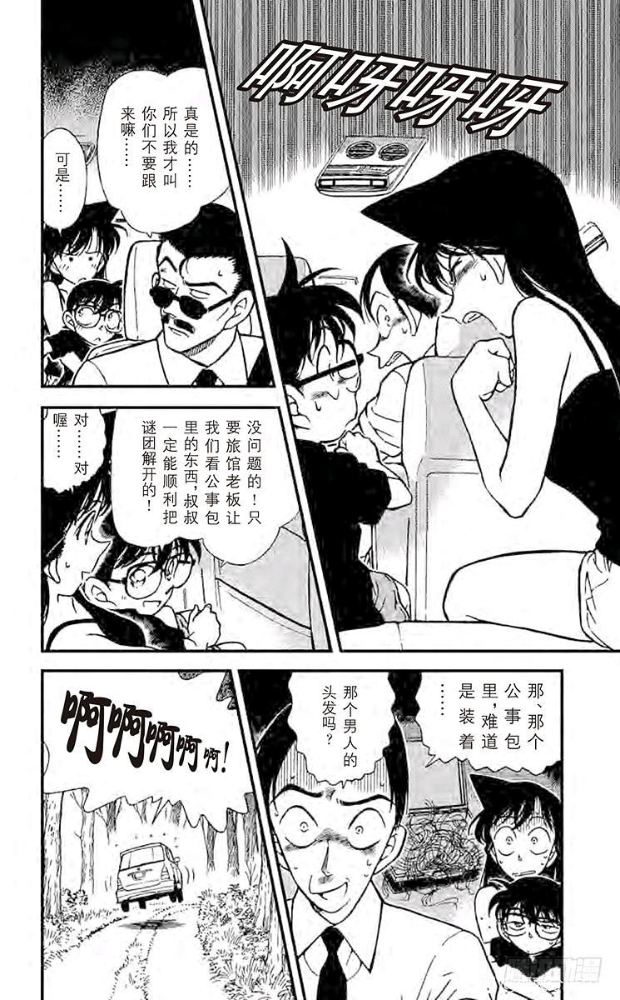
九、网中迷-【我早就猜到是这样】与【如果新一在他也会这么说的】
网中迷是危命复活后柯兰哀第一次全体出场，一般会被认为是小哀摆脱灰暗情绪的一个拐点，但很多分析把小哀此刻所谓“灰暗情绪”与公交车案的“逃避命运”等同了，因而会产生满月时小哀经常emo的错误结论。
要了解小哀的emo情绪，首先要观察柯南的行为逻辑：【柯南又想变大】，原因不是小兰，而是【变大了游泳能更开心】（如同赤木量子案，柯南变大是为了踢足球），接着路人女生撞到柯南，元太的观测是准确的，柯南的确“看得魂不守舍”，并准确认为其中一位女生（小兰）的身材比较好。
这里柯南的表现与红修篇如出一辙，元太可以视为小号的中道，柯南可以与其他男生任意聊小兰的身材，这本身就很雷了（小五郎曾说，英理只有他能看），更不用说柯南【只注意到身材，没注意到这是小兰】，也就是在柯南眼中，小兰的身材与小兰本人是两个概念吗？
为什么柯南会有这样的表现？不要忘了，网中迷恰好发生在小五郎冒充者之后，而在上一案小兰做得最多的事情，就是紧紧抱住柯南，对柯南形成小兰身材的强烈印象，如果没有这个印象，柯南能不能认出小兰的身材还存疑（甚至这次也没认出来身材的主人是小兰）
小兰用自己的实际行动，让柯南对她的印象停留在身材这个表象，但如果她不这么做，就连表象也要失去了。
尽管很雷，但小哀视角的柯兰却大不相同，小哀自然会认为柯南能认出小兰的身材，是因为他们的特殊羁绊（实际上并不存在），于是陷入一种比较悲观的情绪，不再愿意下水游泳，而宁愿在岸上去当柯兰的观察者。（结果中暑了）
对小哀而言，“无法表达对柯南的偷偷喜欢”才是小哀的主要心病，她此时还不具备面对小兰的勇气，这无关乎“在小兰面前自卑”之类浅显的心理，而更多是一种对可能存在的“新兰既定现实”的逃避，她绝不愿意让柯南承担不必要的恋爱思考，于是悄悄离开了大海。
但是，小哀的观测结果，却不支持自己“新兰既定现实”的判断。

网中迷是危命复活后柯兰哀第一次全体出场，一般会被认为是小哀摆脱灰暗情绪的一个拐点，但很多分析把小哀此刻所谓“灰暗情绪”与公交车案的“逃避命运”等同了，因而会产生满月时小哀经常emo的错误结论。
要了解小哀的emo情绪，首先要观察柯南的行为逻辑：【柯南又想变大】，原因不是小兰，而是【变大了游泳能更开心】（如同赤木量子案，柯南变大是为了踢足球），接着路人女生撞到柯南，元太的观测是准确的，柯南的确“看得魂不守舍”，并准确认为其中一位女生（小兰）的身材比较好。
这里柯南的表现与红修篇如出一辙，元太可以视为小号的中道，柯南可以与其他男生任意聊小兰的身材，这本身就很雷了（小五郎曾说，英理只有他能看），更不用说柯南【只注意到身材，没注意到这是小兰】，也就是在柯南眼中，小兰的身材与小兰本人是两个概念吗？
为什么柯南会有这样的表现？不要忘了，网中迷恰好发生在小五郎冒充者之后，而在上一案小兰做得最多的事情，就是紧紧抱住柯南，对柯南形成小兰身材的强烈印象，如果没有这个印象，柯南能不能认出小兰的身材还存疑（甚至这次也没认出来身材的主人是小兰）
小兰用自己的实际行动，让柯南对她的印象停留在身材这个表象，但如果她不这么做，就连表象也要失去了。
尽管很雷，但小哀视角的柯兰却大不相同，小哀自然会认为柯南能认出小兰的身材，是因为他们的特殊羁绊（实际上并不存在），于是陷入一种比较悲观的情绪，不再愿意下水游泳，而宁愿在岸上去当柯兰的观察者。（结果中暑了）
对小哀而言，“无法表达对柯南的偷偷喜欢”才是小哀的主要心病，她此时还不具备面对小兰的勇气，这无关乎“在小兰面前自卑”之类浅显的心理，而更多是一种对可能存在的“新兰既定现实”的逃避，她绝不愿意让柯南承担不必要的恋爱思考，于是悄悄离开了大海。
但是，小哀的观测结果，却不支持自己“新兰既定现实”的判断。
2024-03-02 00:03 | lxt370:这里有个细节，就是步美的游泳圈是海豚，是否是在暗示步美才是真海豚呢？ 哀明明和步美相处的很好啊。2024-03-02 00:30 | 🌐之徙:回复 lxt370 :海豚拥有“人人喜欢”的特性，步美和小兰都满足这个条件（但海豚之间也有不同！）2024-03-02 19:54 | lxt370:回复 🌐之徙 :可是这么说 唉才是唯一真海豚了2024-03-31 01:00 | 我有嘉賓00:原来新蘭之间是互相认不出来，假青梅竹马。2025-02-02 21:19 | Bossuguuguu:这里小哀比起观察，更多的是一种惩罚自己的身体来减轻心里理痛苦的行为
小哀上岸观察到了什么呢？是柯兰快乐地在海里玩吗？并不是！是园子和三小只（漫画中第一次见面）玩在一起，相比大都会三小只与小兰初遇时的拘谨，园子成为孩子们朋友的速度快极了。
而柯兰关注的对象都不是游泳，而是小哀自己。小哀的轻微发烧被小兰立即发现，随即柯南也跟着上岸，元太对此有清晰视角，小兰并没有快发现多少。而园子的视角则能看到，柯南全程陪在小哀身边，再没有下过一次水（小兰送完冰块就继续去玩了）
我们详细分析一下柯兰哀三人此时的行为逻辑。
【小兰：尽可能对小哀表示善意。】
之前小兰有意闯入小哀的房间，兰哀关系并不友好，但小兰美化自己的行为，把这件事变成“小哀会不会讨厌我啊”，加之小兰视角里柯哀特殊关系仍然存在，她也有意继续观察小哀，了解柯南喜欢的女孩子有什么特征（作为新兰关系的参考？），于是兰哀关系正常化就变成小兰的重要目标。
但是，小兰对小哀的善意输出总有奇怪的感觉，因为这与小兰之前对柯南/新一的态度完全不同，外交官案柯南/新一病的要死，小兰却还有闲情雅致吃服部代餐，而不论是打开小哀地下室的门，还是这次发现小哀发烧，还是下次煮鸡蛋粥，都能看出小兰对小哀的善意不是天性使然，而是故意这么做的。就连博士和柯南都觉得惊讶，这不符合小兰的本性。
【不知为何，小兰很怕小哀讨厌自己，兰哀关系中自卑的是兰而不是哀，即使在网中迷也是这样】
【柯南：陪在小哀身边】
柯南并没有任何想和小兰一起玩的镜头，而是一直陪在小哀身边，这似乎比游泳有趣一些，柯南对小哀进行了过于彻底的全身检查，这个检查不但需要凝视小哀的瞳孔，还要测定小哀的体温/流汗状况，还要用冷毛巾擦拭小哀全身，我怀疑小哀“脉搏加速”，不单单是因为中暑哦。
（小兰则被支走去拿冰块）
于是，进一步了解了柯兰对自己的态度后，小哀不再像之前那样逃避了，她提出了著名的【鲨鱼海豚论】，这是讲给柯南听的独特暗号。

而柯兰关注的对象都不是游泳，而是小哀自己。小哀的轻微发烧被小兰立即发现，随即柯南也跟着上岸，元太对此有清晰视角，小兰并没有快发现多少。而园子的视角则能看到，柯南全程陪在小哀身边，再没有下过一次水（小兰送完冰块就继续去玩了）
我们详细分析一下柯兰哀三人此时的行为逻辑。
【小兰：尽可能对小哀表示善意。】
之前小兰有意闯入小哀的房间，兰哀关系并不友好，但小兰美化自己的行为，把这件事变成“小哀会不会讨厌我啊”，加之小兰视角里柯哀特殊关系仍然存在，她也有意继续观察小哀，了解柯南喜欢的女孩子有什么特征（作为新兰关系的参考？），于是兰哀关系正常化就变成小兰的重要目标。
但是，小兰对小哀的善意输出总有奇怪的感觉，因为这与小兰之前对柯南/新一的态度完全不同，外交官案柯南/新一病的要死，小兰却还有闲情雅致吃服部代餐，而不论是打开小哀地下室的门，还是这次发现小哀发烧，还是下次煮鸡蛋粥，都能看出小兰对小哀的善意不是天性使然，而是故意这么做的。就连博士和柯南都觉得惊讶，这不符合小兰的本性。
【不知为何，小兰很怕小哀讨厌自己，兰哀关系中自卑的是兰而不是哀，即使在网中迷也是这样】
【柯南：陪在小哀身边】
柯南并没有任何想和小兰一起玩的镜头，而是一直陪在小哀身边，这似乎比游泳有趣一些，柯南对小哀进行了过于彻底的全身检查，这个检查不但需要凝视小哀的瞳孔，还要测定小哀的体温/流汗状况，还要用冷毛巾擦拭小哀全身，我怀疑小哀“脉搏加速”，不单单是因为中暑哦。
（小兰则被支走去拿冰块）
于是，进一步了解了柯兰对自己的态度后，小哀不再像之前那样逃避了，她提出了著名的【鲨鱼海豚论】，这是讲给柯南听的独特暗号。
或许是在有些低烧又被柯南贴身照顾的情况下，小哀悄悄对柯南做出了回应：对方是人人喜欢的海豚，我是从黑暗逃出来的鲨鱼，实在无法与之相提并论……
（注意，此时小兰已经去玩了，但柯南还是留在小哀身边，小哀对柯南在自己身边的原因是感兴趣的，为什么不去和“海豚”一起玩，而一定要留在太阳伞/阴影下陪伴“鲨鱼”呢？）
柯南的答案是：鲨鱼比较厉害，是侦探的象征，在新弗尼号上他对小兰的“海豚秀”不感兴趣，但却与另一头鲨鱼（服部）相谈甚欢，他一直都是喜欢鲨鱼胜过海豚的人。
有趣的答复，属于柯哀的浪漫，小哀大概被柯南的回答弄得有些心跳加速，于是希望柯南暂时离开一下（去旁边休息），但是柯南有些固执地继续在这里照顾小哀，甚至园子那边出了事，柯南都没过去看。
柯哀某种进一步的情感，就在小兰眼皮底下萌发了，小兰对小哀的“友善”是暂时而有目的性的，但柯南却无条件地照顾着轻微发烧的小哀，这怎么能不让小兰羡慕呢？
（注意，此时小兰已经去玩了，但柯南还是留在小哀身边，小哀对柯南在自己身边的原因是感兴趣的，为什么不去和“海豚”一起玩，而一定要留在太阳伞/阴影下陪伴“鲨鱼”呢？）
柯南的答案是：鲨鱼比较厉害，是侦探的象征，在新弗尼号上他对小兰的“海豚秀”不感兴趣，但却与另一头鲨鱼（服部）相谈甚欢，他一直都是喜欢鲨鱼胜过海豚的人。
有趣的答复，属于柯哀的浪漫，小哀大概被柯南的回答弄得有些心跳加速，于是希望柯南暂时离开一下（去旁边休息），但是柯南有些固执地继续在这里照顾小哀，甚至园子那边出了事，柯南都没过去看。
柯哀某种进一步的情感，就在小兰眼皮底下萌发了，小兰对小哀的“友善”是暂时而有目的性的，但柯南却无条件地照顾着轻微发烧的小哀，这怎么能不让小兰羡慕呢？
由于发烧，小哀暂时回房间休息（看泰坦尼克号），其余人去吃饭，结果步美童言无忌，曝光了柯哀之前非常丰富的聊天内容。
柯哀这段对话由【不可能说谎】的步美认证，因此一定是真实发生的，但柯南的辩解说什么“不是我是灰原”则一定是假话，因为小哀几乎不认识园子，只可能是危命复活后柯南向小哀介绍了一下园子（两人顺势聊起园子的八卦），柯哀真的是无话不谈，光彦说的“有点成人的话题”说不定真的是柯哀的谈资呢。
这一幕又坐实了小兰心中的柯哀特殊关系，怎么会有一年级小学生聊这种东西嘛。
柯哀这段对话由【不可能说谎】的步美认证，因此一定是真实发生的，但柯南的辩解说什么“不是我是灰原”则一定是假话，因为小哀几乎不认识园子，只可能是危命复活后柯南向小哀介绍了一下园子（两人顺势聊起园子的八卦），柯哀真的是无话不谈，光彦说的“有点成人的话题”说不定真的是柯哀的谈资呢。
这一幕又坐实了小兰心中的柯哀特殊关系，怎么会有一年级小学生聊这种东西嘛。
2024-06-26 09:50 | dantecao:这里同样听到柯哀聊天话题成人化，兰是直接破防对柯南大吼大叫的，反而园子是一副主动凑过去八卦柯哀还聊了啥的乐子人模样。。
命案发生，珊瑚头横沟赶到现场（并正式被步美授予珊瑚头称号），可以看到之前广田教授案对横沟的冲击实在太大了，看见阿笠博士就想到柯哀互动，后续珊瑚头见证柯哀的工作就交给哥哥了。
柯南本次查案明显倾向于与三小只合作（而不是与小兰园子互动），三小只发现了大量线索，又是现场演示的得力帮手，而园子本案表现优秀，提供了大量推理思路，推理进度与横沟类似（横沟算警视厅里很聪明的一档了），就连博士在前半段都是直接说（而不是变声器），只有小兰与案件格格不入，演示的时候园子都去看了但小兰还不去看。
偏偏是小兰再最后摘桃，对犯人输出了一番大道理，结果形成了非常显著的兰哀对比：小哀的【我早就猜到是这样】和小兰的【如果新一在他也会这么说的】，对新一截然不同的理解程度，已经预示着感情线的结局。

柯南本次查案明显倾向于与三小只合作（而不是与小兰园子互动），三小只发现了大量线索，又是现场演示的得力帮手，而园子本案表现优秀，提供了大量推理思路，推理进度与横沟类似（横沟算警视厅里很聪明的一档了），就连博士在前半段都是直接说（而不是变声器），只有小兰与案件格格不入，演示的时候园子都去看了但小兰还不去看。
偏偏是小兰再最后摘桃，对犯人输出了一番大道理，结果形成了非常显著的兰哀对比：小哀的【我早就猜到是这样】和小兰的【如果新一在他也会这么说的】，对新一截然不同的理解程度，已经预示着感情线的结局。
2025-03-03 00:06 | HAPPY小小骚年6:珊瑚头是哥哥
小哀仅仅因为柯南回来得比较晚，就带着变声器过来找他了，相比于洞窟案/蘑菇与熊案柯哀还要靠暗号互动，这里的默契又增加一层，而且柯南逐渐习惯（甚至有些依赖）小哀的思虑周全。
但小兰是什么情况呢？本案凶手击杀了杀父仇人，而且对方可以说无恶不作，在法律工具失灵的情况下，凶手实现了几乎完美的复仇（柯南没有证据只能钓鱼，法庭上站不住脚），对柯南而言，这种人是值得同情的才对（典型的如麻生成实），但小兰或许是一时冲动，或许是像拉窗帘事件一样，向新认识的女性（世良或小哀）展示对新一的了解，总之就是进行了无端指责。
我认为新一确实说过【勇气是正义的字眼，不是杀人的理由】这句话，这句话本身也没有任何问题（是青山喜欢的一句话），但小兰引喻失义乱讲，凶手露出了莫名其妙的表情，随后不再说话（根本无法理解小兰的脑回路），“新一在的话也会这么说”，但新一真的在而且真的没有说啊（可以说的场景如绷带怪人，柯南借园子之口痛骂绷带怪人根本不是正义）
小兰随心所欲解释新一的话，这不是第一次也不是最后一次，充分展现出她对新一完全的不了解，而且【不负责任】，小兰说完这句话自己都觉得不对，于是拿新一来背书，结果柯南去玩海鸥不理小兰，一点正面反应也没有。
园子说出了真相：小兰无意中在炫耀自己和新一的关系，但佐藤告诉我们，正义不是随便说的字眼，小兰的行为已经进入非常多的雷区了。
作为对比，在【金钱买不到的友谊】一案，小哀从柯南那里听到小兰关于“和园子做一辈子朋友”的话，拿来批评（其实是安慰）犯人，获得一致好评，这才是负责的态度。


但小兰是什么情况呢？本案凶手击杀了杀父仇人，而且对方可以说无恶不作，在法律工具失灵的情况下，凶手实现了几乎完美的复仇（柯南没有证据只能钓鱼，法庭上站不住脚），对柯南而言，这种人是值得同情的才对（典型的如麻生成实），但小兰或许是一时冲动，或许是像拉窗帘事件一样，向新认识的女性（世良或小哀）展示对新一的了解，总之就是进行了无端指责。
我认为新一确实说过【勇气是正义的字眼，不是杀人的理由】这句话，这句话本身也没有任何问题（是青山喜欢的一句话），但小兰引喻失义乱讲，凶手露出了莫名其妙的表情，随后不再说话（根本无法理解小兰的脑回路），“新一在的话也会这么说”，但新一真的在而且真的没有说啊（可以说的场景如绷带怪人，柯南借园子之口痛骂绷带怪人根本不是正义）
小兰随心所欲解释新一的话，这不是第一次也不是最后一次，充分展现出她对新一完全的不了解，而且【不负责任】，小兰说完这句话自己都觉得不对，于是拿新一来背书，结果柯南去玩海鸥不理小兰，一点正面反应也没有。
园子说出了真相：小兰无意中在炫耀自己和新一的关系，但佐藤告诉我们，正义不是随便说的字眼，小兰的行为已经进入非常多的雷区了。
作为对比，在【金钱买不到的友谊】一案，小哀从柯南那里听到小兰关于“和园子做一辈子朋友”的话，拿来批评（其实是安慰）犯人，获得一致好评，这才是负责的态度。
2024-03-17 13:19 | 炙颜汐:引用福尔摩斯的话：“亲爱的雷斯垂德，我认为，当法律无法给受害者带来正义时，私人报复从这一刻开始就是正当甚至高尚的” 本案中，在凶手的视角下，正常的法律程序已经走不通，已经完美地符合了福尔摩斯所说的条件。但凡多了解一下福尔摩斯（侦探）也不能说出这种话2024-03-30 01:02 | 我有嘉賓00:回复 炙颜汐 :我也很讨厌这句话。很难想象这是一个熟悉中国文史的角色说的话。为亲报仇，天经地义。2024-06-25 01:52 | whpxjqqpe:回复 炙颜汐 :再一次体现了兰完全不了解新一，只是喜欢那个臆想出来的新一2024-12-08 15:22 | wjjwdb😘:回复 我有嘉賓00 :是的，张扣扣22年后报杀母之仇，看看有人去骂他吗，我们都可怜他，他这22年怎么过的，亲眼看见自己母亲被杀，每天都在熬2025-09-03 21:16 | 赵文632:我想到月光案，见过麻田医生悲剧的柯南真的不会有立场说那些话2026-02-28 23:42 | 贴吧用户_JQ3K9yU:柯南这个反应，听毛利兰对犯人说完话后没反应，兰和园子后来又聊起兰说的话时依旧没反应（专心看海鸥），结果最后灰原去和毛利兰说话，柯南直接注意到马上回头看

新一的这句话变成小兰炫耀的一环，却成为小哀的激励，【正义的字眼，挺身而出的勇气】，这是小哀从来不缺乏的品质，唯独对新兰关系，小哀总是存在逃避的心理，但柯南这句话（以及小兰对这句话的误解）却让小哀第一次对新兰关系有了相对客观的认识，新兰不是什么灵魂伴侣，小兰只是在用回忆中的工藤新一进行任意改变，成为自己的行动指南而已。
于是她勇敢地走向小兰，走向她终究要面临的最终障碍，虽然是“兰哀关系正常化”，但小哀仍然不会主动和小兰对话（双方几乎仅仅是认识而已），唯一的改变是：【小哀开始在与柯南的互动中主动cue新兰，而且是以各种奇怪的角度】
此前，小哀对新兰关系非常避讳，她逃避着“牢不可破的新兰现状”，但网中迷让小哀看到柯兰关系的另一面，柯南不会丢下自己去找小兰玩而是一直照顾自己，小兰会误用新一的话，新兰关系没那么牢不可破（对小哀而言，还是属于高估），小哀会保持偷偷喜欢柯南，不让柯南发现额外的信息，直到柯南认清自己的内心。（但小哀此后频繁cue新兰，做出过高的估计，事实上就是在帮助柯南认清现状了）
柯南却在很长一段时间内都猜不透小哀的想法，于是他不自觉地靠近小哀，照顾她保护她，期待她的回应。小哀的回应似有似无，牵动着侦探的内心。
继续猜下去吧，真相只有一个哦。
于是她勇敢地走向小兰，走向她终究要面临的最终障碍，虽然是“兰哀关系正常化”，但小哀仍然不会主动和小兰对话（双方几乎仅仅是认识而已），唯一的改变是：【小哀开始在与柯南的互动中主动cue新兰，而且是以各种奇怪的角度】
此前，小哀对新兰关系非常避讳，她逃避着“牢不可破的新兰现状”，但网中迷让小哀看到柯兰关系的另一面，柯南不会丢下自己去找小兰玩而是一直照顾自己，小兰会误用新一的话，新兰关系没那么牢不可破（对小哀而言，还是属于高估），小哀会保持偷偷喜欢柯南，不让柯南发现额外的信息，直到柯南认清自己的内心。（但小哀此后频繁cue新兰，做出过高的估计，事实上就是在帮助柯南认清现状了）
柯南却在很长一段时间内都猜不透小哀的想法，于是他不自觉地靠近小哀，照顾她保护她，期待她的回应。小哀的回应似有似无，牵动着侦探的内心。
继续猜下去吧，真相只有一个哦。
2024-03-02 01:57 | 似有却無:我记得之前有贴文说，这里在日本那边看来，是小哀对兰“宣战”2024-03-02 07:53 | 即将02的废物月:回复 似有却無 :yhm都说是“宣战布告”2024-12-14 15:08 | 滦炐祐😁😁:拉窗帘后哀眼中兰的形象是不是急剧下降了
顶顶，每天来看看有没有更新
每天一更，像追番一样，73老贼更新前就指望这个活了
十、平和的有趣日常：远超新兰的青梅竹马
时间进入第155天，青山塑造了一个纯粹平和案件，众所周知，青山在区分新兰和平和上花了很多功夫，一旦青山开始塑造纯粹平和场景，就要注意同样的互动能否发生在新兰中。
例如，鸟取蜘蛛案前，平和骑着摩托就敢外出办案，表现得十分亲密，但是死罗神那个案件是新一自己去的，和小兰没有关系。
同样的对比发生在本案【剑道大会案】，和叶与静华互动，和叶对服部的欣赏完全挂在脸上，而小兰和有希子的关系就根本不可能有这样的互动，纽约篇不接受飙车还情有可原，但伦敦篇马拉松有希子是真的无法接受了。
接着又是惨烈的对比，和叶比服部妈妈还更早发现下面比赛的人不是服部，于是在静华的激将法下和叶就跑下去确认一下，但小兰却能与基德做各种互动（而且小兰一开始认不出基德，是交手了很多次才知道的），即使抛开剧场版，小兰也准备与“黑衣骑士”接吻，对着死罗神假新一流泪。
这种对比带来的结果是：远山与服部两个家庭真的准备谈婚论嫁，但新兰却遭到双方家庭的反对，新兰与平和羁绊的差距实在太大了。

时间进入第155天，青山塑造了一个纯粹平和案件，众所周知，青山在区分新兰和平和上花了很多功夫，一旦青山开始塑造纯粹平和场景，就要注意同样的互动能否发生在新兰中。
例如，鸟取蜘蛛案前，平和骑着摩托就敢外出办案，表现得十分亲密，但是死罗神那个案件是新一自己去的，和小兰没有关系。
同样的对比发生在本案【剑道大会案】，和叶与静华互动，和叶对服部的欣赏完全挂在脸上，而小兰和有希子的关系就根本不可能有这样的互动，纽约篇不接受飙车还情有可原，但伦敦篇马拉松有希子是真的无法接受了。
接着又是惨烈的对比，和叶比服部妈妈还更早发现下面比赛的人不是服部，于是在静华的激将法下和叶就跑下去确认一下，但小兰却能与基德做各种互动（而且小兰一开始认不出基德，是交手了很多次才知道的），即使抛开剧场版，小兰也准备与“黑衣骑士”接吻，对着死罗神假新一流泪。
这种对比带来的结果是：远山与服部两个家庭真的准备谈婚论嫁，但新兰却遭到双方家庭的反对，新兰与平和羁绊的差距实在太大了。
2024-03-02 12:30 | 即将02的废物月:就伯母两字就薄纱了2024-03-30 01:05 | 我有嘉賓00:回复 即将02的废物月 :和葉与静華的关系，就是青子与千影的关系。2025-04-23 21:25 | hjfbhdkdsh:
接下来和叶在厕所里找到了服部……平和这个站位怎么那么眼熟啊，和死罗神柯哀站位一模一样，甚至表情都很像，这已经是平和对标柯哀的铁证了。
（本案冲田正式登场，此时的冲田还不知道他将会成为小兰的代餐）
我们可以看到，平和与柯哀一样有聊不完的话题，居然在男厕所里公然讨论针对冲田的战术（冲田睡觉的姿势怎么也和柯南一样，这种想事情的姿势不会是在想……）
接着服部开始撩和叶，说什么人鱼岛伤口太痒了，可以注意到在和叶面前，服部会展示真正的伤口（在小兰面前，用了另一只手不让小兰看），这其实意味着服部很不希望小兰进入自己与和叶的话题中。（和叶尚无此意识）
和叶与静华是可以共同吐槽服部的存在，感觉如果把和叶静华的性格反过来，就能得到有希子和小哀了。


（本案冲田正式登场，此时的冲田还不知道他将会成为小兰的代餐）
我们可以看到，平和与柯哀一样有聊不完的话题，居然在男厕所里公然讨论针对冲田的战术（冲田睡觉的姿势怎么也和柯南一样，这种想事情的姿势不会是在想……）
接着服部开始撩和叶，说什么人鱼岛伤口太痒了，可以注意到在和叶面前，服部会展示真正的伤口（在小兰面前，用了另一只手不让小兰看），这其实意味着服部很不希望小兰进入自己与和叶的话题中。（和叶尚无此意识）
和叶与静华是可以共同吐槽服部的存在，感觉如果把和叶静华的性格反过来，就能得到有希子和小哀了。
2024-03-02 15:26 | 即将02的废物月:最后两个分镜好像风筝篇的柯哀2024-03-29 23:32 | 晓之车2000:回复 即将02的废物月 :不止哦，伦敦的新兰也有这个分镜，分镜三选一里选一个最不和谐的会是哪一个呢
接下来是面对案件时，和叶与小兰的不同态度。
得知发生案件后，小兰的表现通常是躲在新一身后（云霄飞车），或者更严重的死罗神/伦敦篇完全一副事不关己的态度。
但是和叶就不同了，她深知此时服部一定会去破案，并且提出“要不你和工藤讨论下，快点破案”的合理建议，结果服部胜负心起来了直接要自己破案，和叶立刻化身为服部坚强的后盾，代替服部去激励剑道社的队员。
我已经能想到小兰面对这种时候的表现了，在真第一集中，小兰面对去破案的新一，在空手道赛场大声抱怨，完全不能理解对方，但和叶的表现就很自然，这才是真正的青梅竹马嘛，而且和叶说的“推理白痴”也比小兰的“推理狂”好得多。（平和经常互叫白痴，感觉像是大阪方言的口头禅，“阿吼！”）
（这里出现小兰给柯南擦嘴的画面，显示出纯纯的姐弟情，大体上是平和青梅竹马＞柯兰互动＞＞新兰互动的偏序关系）


得知发生案件后，小兰的表现通常是躲在新一身后（云霄飞车），或者更严重的死罗神/伦敦篇完全一副事不关己的态度。
但是和叶就不同了，她深知此时服部一定会去破案，并且提出“要不你和工藤讨论下，快点破案”的合理建议，结果服部胜负心起来了直接要自己破案，和叶立刻化身为服部坚强的后盾，代替服部去激励剑道社的队员。
我已经能想到小兰面对这种时候的表现了，在真第一集中，小兰面对去破案的新一，在空手道赛场大声抱怨，完全不能理解对方，但和叶的表现就很自然，这才是真正的青梅竹马嘛，而且和叶说的“推理白痴”也比小兰的“推理狂”好得多。（平和经常互叫白痴，感觉像是大阪方言的口头禅，“阿吼！”）
（这里出现小兰给柯南擦嘴的画面，显示出纯纯的姐弟情，大体上是平和青梅竹马＞柯兰互动＞＞新兰互动的偏序关系）
由于冲田很强，和叶认为服部不在的话剑道社会输，于是跑去找服部（显然不是希望服部终止推理，更像是把小五郎等人拉过去，让服部早点破案）
青山在此处刻画了和叶一个重要的品质：非常有集体责任感。后来唐红的恋歌中，和叶同样为了维持好闺蜜的歌牌社而努力训练，也就是说和叶的故事与服部不是绑定的，这种正面描写同样没有出现在小兰身上（但是小哀拥有类似的品质，会一直维护少侦的团结和积极氛围）
本案服部又一次被和叶的护身符所救，护身符的含金量实在太高了，和叶找到服部后，是否立刻让服部赶紧去比赛呢？并没有，【和叶先处理了服部的伤口，等犯人被领走后才后知后觉“还有比赛”】，这种无情的对比，让卡拉OK挡镜头，外交官案三连问的小兰变得更加格格不入，和叶的优先级是服部安全＞破案＞服部的比赛＞服部陪在自己身边，小兰对新一的优先级几乎是反过来的💔
青山在此处刻画了和叶一个重要的品质：非常有集体责任感。后来唐红的恋歌中，和叶同样为了维持好闺蜜的歌牌社而努力训练，也就是说和叶的故事与服部不是绑定的，这种正面描写同样没有出现在小兰身上（但是小哀拥有类似的品质，会一直维护少侦的团结和积极氛围）
本案服部又一次被和叶的护身符所救，护身符的含金量实在太高了，和叶找到服部后，是否立刻让服部赶紧去比赛呢？并没有，【和叶先处理了服部的伤口，等犯人被领走后才后知后觉“还有比赛”】，这种无情的对比，让卡拉OK挡镜头，外交官案三连问的小兰变得更加格格不入，和叶的优先级是服部安全＞破案＞服部的比赛＞服部陪在自己身边，小兰对新一的优先级几乎是反过来的💔
累了一天的和叶靠在服部肩膀上睡着啦❤️
有这个待遇的，又一次不是新兰，而是柯哀（电影院贴贴），这里和叶的靠近，应该是一半的疲劳和另一半的对服部的好感（和叶与电影院小哀一样，都没有真的睡着）
同时，和叶与小哀都得到了静华/有希子的爱护，而是是那种“你要感谢她哦”的家人般的爱护，此时柯兰都坐在对面，但漫画中没有他们看平和的表情，可以合理猜测一下，小兰是有些脸红的羡慕，但柯南恐怕就要想到靠在他身上的小哀了。
平和互相的爱慕被两家父母看在眼里，于是迅速开始了谈婚论嫁的流程，可以看到远山叔对和叶的安排是有上大学的一环的（但小兰没有），他们的发展根本不存在父辈的阻力，说不定上大学后（甚至大学期间）平和真的会结婚。
新兰依然没有这个待遇，有希子在纽约仅用了could be这种不确定的词语，在【相似的公主】一节，有希子与英理联手破案，话题却局限在小五郎上，对孩子们的未来毫不提及，反而有希子迫不及待地观察了小哀。
所以，根本就不应该对柯哀抱有任何意义上的悲观心理，如此多的对照组，已经让结局变得是太明显了。

有这个待遇的，又一次不是新兰，而是柯哀（电影院贴贴），这里和叶的靠近，应该是一半的疲劳和另一半的对服部的好感（和叶与电影院小哀一样，都没有真的睡着）
同时，和叶与小哀都得到了静华/有希子的爱护，而是是那种“你要感谢她哦”的家人般的爱护，此时柯兰都坐在对面，但漫画中没有他们看平和的表情，可以合理猜测一下，小兰是有些脸红的羡慕，但柯南恐怕就要想到靠在他身上的小哀了。
平和互相的爱慕被两家父母看在眼里，于是迅速开始了谈婚论嫁的流程，可以看到远山叔对和叶的安排是有上大学的一环的（但小兰没有），他们的发展根本不存在父辈的阻力，说不定上大学后（甚至大学期间）平和真的会结婚。
新兰依然没有这个待遇，有希子在纽约仅用了could be这种不确定的词语，在【相似的公主】一节，有希子与英理联手破案，话题却局限在小五郎上，对孩子们的未来毫不提及，反而有希子迫不及待地观察了小哀。
所以，根本就不应该对柯哀抱有任何意义上的悲观心理，如此多的对照组，已经让结局变得是太明显了。
2025-04-23 22:25 | hjfbhdkdsh:2026-02-28 23:59 | 贴吧用户_JQ3K9yU:太通透了
接下来是【双鲨论】后又一层重要的隐喻：【宁茶论】，正如双鲨论的最早出处不在网中迷，而在新弗尼号（甚至海蛇案），宁茶论也远远早于羽田秀吉登场，在【太阁城】案中，嫌疑人们扮演了战国时期的历史人物，大部分时候都是和叶与嫌疑人们交流，唯有小兰对“宁宁”很感兴趣，也就是说在这一案里，小兰自己选择了宁宁角色，办案时基本没有行动，而和叶不是宁宁，她在本案为服部提供了大量帮助。
（顺便地，服部对和叶有占有欲很高，而和叶也非常愿意被服部就这么拉走，鸟取蜘蛛案双方眼神交流一下就可以无视陌生人，这里同样如此，很快就进入了“二人世界”）

（顺便地，服部对和叶有占有欲很高，而和叶也非常愿意被服部就这么拉走，鸟取蜘蛛案双方眼神交流一下就可以无视陌生人，这里同样如此，很快就进入了“二人世界”）
2024-03-07 16:42 | 🌐之徙:这段分析是错误的2024-04-15 16:27 | 发疯的法师:毛利兰怎么像宁宁了 战国三美人可都是贤内助2025-09-06 06:33 | 蔚然714:唉哈哈，青山监制的大阪城本陣周边里，柯南是秀吉，小哀是宁宁，小兰是茶茶
为了让和叶与小兰切割，作者真是煞费苦心。
首先是和叶不爱哭，一般来讲和叶只有在服部遇到危险时才可能掉眼泪，并不会像小兰那样哭一哭只是为了获得奖励，于是相比小兰越发廉价的泪水，和叶显得尤其坚强。（用雨水代替眼泪）
其次是和叶对鬼神的实用主义态度，买了一大堆护身符，然而并没有什么用于是丢了（笑），最终只保留了多次救服部于危险之中的手铐护身符，而小兰“手机上的吉祥物”（后来定型为海参男）却是带来灾难的物品，还有一些失灵的天气娃娃之类的道具。因为和叶对鬼神实用主义，所以怕鬼了也不影响自己帮助服部，但小兰是对鬼神深信不疑，结果越发抽象。
最后，和叶经常凑到案发现场，有时候服部都能觉得惊喜，不要忘记上一案是网中迷，小哀送来变声器与这里和叶送来大量情报大致等价，而这又是小兰所无法完成的“茶茶行为”。


首先是和叶不爱哭，一般来讲和叶只有在服部遇到危险时才可能掉眼泪，并不会像小兰那样哭一哭只是为了获得奖励，于是相比小兰越发廉价的泪水，和叶显得尤其坚强。（用雨水代替眼泪）
其次是和叶对鬼神的实用主义态度，买了一大堆护身符，然而并没有什么用于是丢了（笑），最终只保留了多次救服部于危险之中的手铐护身符，而小兰“手机上的吉祥物”（后来定型为海参男）却是带来灾难的物品，还有一些失灵的天气娃娃之类的道具。因为和叶对鬼神实用主义，所以怕鬼了也不影响自己帮助服部，但小兰是对鬼神深信不疑，结果越发抽象。
最后，和叶经常凑到案发现场，有时候服部都能觉得惊喜，不要忘记上一案是网中迷，小哀送来变声器与这里和叶送来大量情报大致等价，而这又是小兰所无法完成的“茶茶行为”。
2024-03-02 19:40 | 雪者风形:是不是把宁茶弄反了（）2024-03-05 08:08 | 🌐之徙:回复 雪者风形 :还真是💔我的问题2024-03-05 11:01 | 雪者风形:回复 🌐之徙 :整 段 垮 掉（悲）是不是考虑楼中楼修一下2024-03-05 12:03 | 🌐之徙:回复 雪者风形 :嗯嗯，大概就是小兰那句“竟然还有宁宁”分析不对💔
接着就是服部的“礼貌”现场，平和相处时互相吼叫简直是常态，但是在长辈面前一定是收敛的，但是小兰就是经典的【除了新一还有别的推理狂？】【就是因为看了这些书，新一才会变成只会推理的呆子的】，而且不管长辈在不在都这么说。
服部要敢乱吼，直接远山叔瞪眼+亲爹给你一巴掌（我感觉平藏有这个成分），和叶用自己的良好表现赢得长辈们的喜欢，小兰对此似乎是无法理解的。
随后，和叶与小兰分别回忆了“自己喜欢竹马的神采飞扬”，和叶回忆的服部露齿笑，是标准的破案表情，但是小兰的回忆就问题很大了，回忆中的新一是形象存疑的【纽约篇新一】，眼神里有悲伤的感觉，这是小兰把新一/贝姐/秀一杂糅后产生的形象，也是小兰的初恋。小兰标注其为“破案后”是很古怪的（因为纽约篇新一并没有解决杀人魔问题），更加上了“不甘心”这个别有深意的形容词（新一破案了不甘心？还是“自己居然喜欢新一”这件事本身就是不甘心的？），加上“只有那个时候”的限定（在棒球场，小兰又一次表示新一快输球的时候“只有那个时候”很帅），她真的如自己所说，与和叶“一样”吗？
恐怕，为了让自己与和叶那种能自然靠在服部肩膀上的地位等同，小兰正在悄悄地修改着自己喜欢新一的原因，这种修改是不自然的，会导致自己忘记喜欢新一的原因，并且她迟早会发现，自己喜欢的新一已经和真新一不是同一个人了。


服部要敢乱吼，直接远山叔瞪眼+亲爹给你一巴掌（我感觉平藏有这个成分），和叶用自己的良好表现赢得长辈们的喜欢，小兰对此似乎是无法理解的。
随后，和叶与小兰分别回忆了“自己喜欢竹马的神采飞扬”，和叶回忆的服部露齿笑，是标准的破案表情，但是小兰的回忆就问题很大了，回忆中的新一是形象存疑的【纽约篇新一】，眼神里有悲伤的感觉，这是小兰把新一/贝姐/秀一杂糅后产生的形象，也是小兰的初恋。小兰标注其为“破案后”是很古怪的（因为纽约篇新一并没有解决杀人魔问题），更加上了“不甘心”这个别有深意的形容词（新一破案了不甘心？还是“自己居然喜欢新一”这件事本身就是不甘心的？），加上“只有那个时候”的限定（在棒球场，小兰又一次表示新一快输球的时候“只有那个时候”很帅），她真的如自己所说，与和叶“一样”吗？
恐怕，为了让自己与和叶那种能自然靠在服部肩膀上的地位等同，小兰正在悄悄地修改着自己喜欢新一的原因，这种修改是不自然的，会导致自己忘记喜欢新一的原因，并且她迟早会发现，自己喜欢的新一已经和真新一不是同一个人了。
2024-03-04 09:27 | ✨浮光掠影:伏笔太强了…2024-09-22 13:15 | 贴吧用户_0aQRPXU:为啥说是纽约篇新一，纽约篇新一没穿校服啊2024-10-04 17:26 | 解毒剂😄:回复 贴吧用户_0aQRPXU :校服可以理解为高中生·工藤新一，这个新一还是能跟兰聊起来的，侦探·工藤新一就没法聊了。2025-08-02 23:56 | snowfly1024:她为什么总是不甘心啊，好难理解啊2026-03-27 02:00 | 虬髯公好美姬:回复 贴吧用户_0aQRPXU :因为这个回忆中的新一头发有些湿漉，与纽约篇一样
和叶可不是光说而已，为了看到服部闪闪发光的样子，和叶为服部提供了大量帮助，把警察摇到现场，交给服部大量的案件信息，然后看着主客观相统一的服部闪闪发光。
小兰察觉不到这一点，她甚至察觉不到柯南已经破案。（但是小兰能读出【当柯南露出可怕的表情时，案件很棘手】，这在后文有体现），大部分时候小兰对新一的推理是质疑的一方，不愿意为“看到新一的某种表情”而努力，相比小兰的毫无作为，恐怕认错初恋也都只是一件小事。
名柯大部分CP都愿意看到对方最好的一面（并为之努力），新兰是其中绝对的异类。
小兰察觉不到这一点，她甚至察觉不到柯南已经破案。（但是小兰能读出【当柯南露出可怕的表情时，案件很棘手】，这在后文有体现），大部分时候小兰对新一的推理是质疑的一方，不愿意为“看到新一的某种表情”而努力，相比小兰的毫无作为，恐怕认错初恋也都只是一件小事。
名柯大部分CP都愿意看到对方最好的一面（并为之努力），新兰是其中绝对的异类。
2024-06-25 02:33 | whpxjqqpe:我刚刚重新看了下这一话，小兰说风越来越大了，然后伞就脱手摔坏了，但是其他人手中的伞依旧稳稳的，一点被风吹动的迹象都没有，会不会是某种隐喻2024-06-25 02:40 | whpxjqqpe:主要是我感觉伞坏了这个情节在这里挺莫名其妙的，前面伞飞走还可以说是为了提示破案，后面单开毛利父女说伞坏了就有点怪怪的，明明不加也完全不影响整个剧情2024-12-30 09:13 | 顾子木字林夕🍁:回复 whpxjqqpe :有可能，毕竟漫画的格子挺珍贵了，没必要放无关剧情
顶顶更新
顶
十一、情人节之前的故事：星野辉美案
小时间线157天，星野辉美正式登场，这是青山早在浴室密室案就构思的人物，怕读者记不住，还让小五郎带上了浴室密室案的重要头带。
而星野辉美对工藤新一的“暗恋”也与小哀对柯南的箭头十分类似，【单相思】【远远望着对方】，唯一的区别是，星野只是单相思而已，但小哀在偷偷看着柯南的同时，柯南已经慢慢靠近她了。
如果星野对应小哀，我们将发现她在本案中的位置恰好与小哀在危命复活的位置相同，即【所有情节的总导演】，星野知道本案受害者的方案，也几乎知道凶手是谁，默默看着这帮人在舞台上上演互相试探的闹剧。
互相试探的方式是什么呢？【在自己心仪的男生面前，抱住另一个男生的胳膊】，竟能如此相像？这与小兰在危命前后与新出的互动没有任何区别，从“动机”到“手法”都完全相同。
这样做的结果是自己被捅了一刀，差点死了，凶手也试图自杀（未果），如果没有柯南，就很可能变成双死结局，这种无意义试探在漫画中被多次批评，从卡拉OK到海蛇案，受害者不胜枚举，而小兰【自愿成为受害者的一员】
还可以发现什么？受害者不仅当着男朋友面报别的男生，还恶言相向把男朋友贬低得一无是处，而这比起小兰居然算是一个好行为（因为小兰不仅当面贬低新一，背后也贬低，这位受害者在别人面前是会夸自己男朋友的）
受害者被捅一刀然后救回来，小兰还救得回来吗？


小时间线157天，星野辉美正式登场，这是青山早在浴室密室案就构思的人物，怕读者记不住，还让小五郎带上了浴室密室案的重要头带。
而星野辉美对工藤新一的“暗恋”也与小哀对柯南的箭头十分类似，【单相思】【远远望着对方】，唯一的区别是，星野只是单相思而已，但小哀在偷偷看着柯南的同时，柯南已经慢慢靠近她了。
如果星野对应小哀，我们将发现她在本案中的位置恰好与小哀在危命复活的位置相同，即【所有情节的总导演】，星野知道本案受害者的方案，也几乎知道凶手是谁，默默看着这帮人在舞台上上演互相试探的闹剧。
互相试探的方式是什么呢？【在自己心仪的男生面前，抱住另一个男生的胳膊】，竟能如此相像？这与小兰在危命前后与新出的互动没有任何区别，从“动机”到“手法”都完全相同。
这样做的结果是自己被捅了一刀，差点死了，凶手也试图自杀（未果），如果没有柯南，就很可能变成双死结局，这种无意义试探在漫画中被多次批评，从卡拉OK到海蛇案，受害者不胜枚举，而小兰【自愿成为受害者的一员】
还可以发现什么？受害者不仅当着男朋友面报别的男生，还恶言相向把男朋友贬低得一无是处，而这比起小兰居然算是一个好行为（因为小兰不仅当面贬低新一，背后也贬低，这位受害者在别人面前是会夸自己男朋友的）
受害者被捅一刀然后救回来，小兰还救得回来吗？
仿佛这位被害者抱住其他男性还不够明显，青山又增加了一幕，让小兰【害怕地抱住父亲】，这里小兰确实比较害怕，因为恐吓信很恐怖。
我们可以自行对比抱住新出和抱住父亲两种情况的小兰（分镜都很类似），抱住新出的小兰【绕了座子一圈】去抱住新出（方向还反了），先面无表情然后迅速脸红，根本看不出是在怕黑。
而真正害怕的情况下，小兰迅速识别了父亲的位置然后直接抱住，方向不可能弄反。这就明摆着告诉读者，小兰抱新出是问题很大的举动（后面还有和叶的callback）
在情人节之前发生的这些事情，无疑都强化了柯南关于新出案的记忆（可能还有黑衣骑士的记忆），并对情人节时柯南【是否表白】的决策造成了显著的消极影响。

我们可以自行对比抱住新出和抱住父亲两种情况的小兰（分镜都很类似），抱住新出的小兰【绕了座子一圈】去抱住新出（方向还反了），先面无表情然后迅速脸红，根本看不出是在怕黑。
而真正害怕的情况下，小兰迅速识别了父亲的位置然后直接抱住，方向不可能弄反。这就明摆着告诉读者，小兰抱新出是问题很大的举动（后面还有和叶的callback）
在情人节之前发生的这些事情，无疑都强化了柯南关于新出案的记忆（可能还有黑衣骑士的记忆），并对情人节时柯南【是否表白】的决策造成了显著的消极影响。
2024-09-25 23:58 | 黑暗刺猬-夏特:南爸北新（出）2025-09-06 06:44 | 蔚然714:小兰怕是不是有恋父情结2026-01-13 08:27 | 阿瑟姆奶茶🌸:回复 蔚然714 :他是缺乏自己认知的父爱，所以需要新一神像取代这个抽象的父亲，照拂自己，迁就自己
接下来，星野继续作为小哀的嘴替而继续输出，让柯南不要乱翻女生的抽屉，【女孩子总是会有秘密】，这简直就是对小兰擅自去地下室窥视小哀隐私的反驳（这话由小哀自己说不太合适，只好由替身说）
星野本案并没有察觉口红上的血迹之类，但她大体上知道凶手的动机，并拥有实用的化学知识，与小哀在案件中的表现非常相似。（小哀在破案时，与柯南的关注点不太相同，倒是有一些小五郎的风格）
【保护隐私】除了对小兰当时的行为进行定性以外，似乎还对试药论做了包装，柯南并不会去窥探小哀的地下室（尽管他有所猜测），并用星野的话对柯南今后可能的窥探行为进行封印，也许直到大结局，试药论都不一定能正面出现，这是小哀“自作主张强出头”，是她的一项不可以被柯南知道的秘密，至于柯南是否最终会知道？恐怕他早已猜出，只是永远没有证据吧。
星野本案并没有察觉口红上的血迹之类，但她大体上知道凶手的动机，并拥有实用的化学知识，与小哀在案件中的表现非常相似。（小哀在破案时，与柯南的关注点不太相同，倒是有一些小五郎的风格）
【保护隐私】除了对小兰当时的行为进行定性以外，似乎还对试药论做了包装，柯南并不会去窥探小哀的地下室（尽管他有所猜测），并用星野的话对柯南今后可能的窥探行为进行封印，也许直到大结局，试药论都不一定能正面出现，这是小哀“自作主张强出头”，是她的一项不可以被柯南知道的秘密，至于柯南是否最终会知道？恐怕他早已猜出，只是永远没有证据吧。
最后讲一下对于星野【二十八年前你已认输】与【乍看之下坚固的阵势】
现在的主流观点是把漫画节数减去28，得到【直球定输赢】，该篇柯南拒绝了小兰送的签名球衣，并且对小兰试图询问心意，柯南选择了逃避，这种解释有一定合理性，但我看不出来小兰此时有什么“坚固的阵势”，并且后面也没有属于星野（小哀）的逆转之棋。
第二种解释，卷数减28，得到第4卷，这个解释方法更不靠谱，第四卷是新干线爆破案（柯南试图向小兰表露身份），与星野的描述实在不太相符。
用小时间天数误差会比较大，因此也不可行，但是我找到了更适合的解释方法：
【往前数28个案件，得到新弗尼号案】
在这个案件中，小兰表现了诉求：【不要丢下我一个人】，这个行为是认输，因为柯南是侦探，他的脚步不可能也不会因为小兰而停留。
新弗尼号符合【看似美好的新兰阵势】，而小哀只需要一步棋就完成逆转，还记得新弗尼号之后小哀干了什么吗？【在光彦的剧本里向柯南表白】，随后进入兰哀的轮流行棋，小兰的行棋是新出案这种高级代餐，小哀的行棋是再会篇（主动跟上柯南），得到了眼镜护身符。
兰与哀的棋局，小兰已然认输了。
现在的主流观点是把漫画节数减去28，得到【直球定输赢】，该篇柯南拒绝了小兰送的签名球衣，并且对小兰试图询问心意，柯南选择了逃避，这种解释有一定合理性，但我看不出来小兰此时有什么“坚固的阵势”，并且后面也没有属于星野（小哀）的逆转之棋。
第二种解释，卷数减28，得到第4卷，这个解释方法更不靠谱，第四卷是新干线爆破案（柯南试图向小兰表露身份），与星野的描述实在不太相符。
用小时间天数误差会比较大，因此也不可行，但是我找到了更适合的解释方法：
【往前数28个案件，得到新弗尼号案】
在这个案件中，小兰表现了诉求：【不要丢下我一个人】，这个行为是认输，因为柯南是侦探，他的脚步不可能也不会因为小兰而停留。
新弗尼号符合【看似美好的新兰阵势】，而小哀只需要一步棋就完成逆转，还记得新弗尼号之后小哀干了什么吗？【在光彦的剧本里向柯南表白】，随后进入兰哀的轮流行棋，小兰的行棋是新出案这种高级代餐，小哀的行棋是再会篇（主动跟上柯南），得到了眼镜护身符。
兰与哀的棋局，小兰已然认输了。
2024-03-03 19:19 | lxt370:这个人从命名到其他的都有强烈的哀的味道2024-03-03 19:19 | lxt370:这个人从命名到其他的都有强烈的哀的味道
十二、情人节之前的故事：詹姆斯案
如果把主线的元素去除，詹姆斯案的柯南将展现出什么品质呢？
答：对小哀的极度关心。
这种关心，固然有秀一和詹姆斯两人吓来吓去导致柯南保护欲激增，但即使没有这两人，柯南依然捕捉了小哀随口说的每一句话。
为什么要在情人节之前表现出柯南的这种品质？情人节小兰做了很多巧克力，但是柯南无法发现其中的悲伤（反而是小哀发现的），除非小兰真的哭一下，不然他都不一定去吃巧克力；而小哀呢？她得到了柯南最大的关注。
先来看本案发生的背景，少侦与博士去看动物表演，柯哀靠得那叫一个近（柯哀又去了一个新地方玩且没有命案发生，去的地方都不带重复的）。
表演结束，柯南在看某个读物（估计是地图之类的，找出口），按道理柯南的注意力应该是集中在地图上，然而柯南却迅速被步美的话吸引了注意力，根本不放过任何打趣小哀的机会。（小哀甚至还没有说话！柯南是不是听到“灰原”就应激反应了）
接下来两人就开始拌嘴，取笑对方兴趣爱好（而且是只有他们两人能听懂的，柯南的意思是“十八岁的女生也和小学生一样喜欢动物挂坠呢”，小哀则加了一大堆定语，就是为了不让三小只理解他们的对话），一下子就进入了二人世界。
这成为整个詹姆斯案柯南对小哀的主要态度，超敏感且过度关心的状态，这个状态在网中迷就初现端倪了，柯南非要守在低烧的小哀身边，这里小哀健康得很，柯南就开始各种惹小哀（这个剑我一定要犯）
在柯哀的交往中，柯南的这种状态越发严重，而且一脸兴致勃勃的样子，仿佛让他尝到了甜头。

如果把主线的元素去除，詹姆斯案的柯南将展现出什么品质呢？
答：对小哀的极度关心。
这种关心，固然有秀一和詹姆斯两人吓来吓去导致柯南保护欲激增，但即使没有这两人，柯南依然捕捉了小哀随口说的每一句话。
为什么要在情人节之前表现出柯南的这种品质？情人节小兰做了很多巧克力，但是柯南无法发现其中的悲伤（反而是小哀发现的），除非小兰真的哭一下，不然他都不一定去吃巧克力；而小哀呢？她得到了柯南最大的关注。
先来看本案发生的背景，少侦与博士去看动物表演，柯哀靠得那叫一个近（柯哀又去了一个新地方玩且没有命案发生，去的地方都不带重复的
）。表演结束，柯南在看某个读物（估计是地图之类的，找出口），按道理柯南的注意力应该是集中在地图上，然而柯南却迅速被步美的话吸引了注意力，根本不放过任何打趣小哀的机会。（小哀甚至还没有说话！柯南是不是听到“灰原”就应激反应了）
接下来两人就开始拌嘴，取笑对方兴趣爱好（而且是只有他们两人能听懂的，柯南的意思是“十八岁的女生也和小学生一样喜欢动物挂坠呢”，小哀则加了一大堆定语，就是为了不让三小只理解他们的对话），一下子就进入了二人世界。
这成为整个詹姆斯案柯南对小哀的主要态度，超敏感且过度关心的状态，这个状态在网中迷就初现端倪了，柯南非要守在低烧的小哀身边，这里小哀健康得很，柯南就开始各种惹小哀（这个剑我一定要犯）
在柯哀的交往中，柯南的这种状态越发严重，而且一脸兴致勃勃的样子，仿佛让他尝到了甜头。
2024-03-03 19:07 | 贴吧用户_aAKe71W:灰原哀，一款柯南诱捕器
顶顶更新
有时候我不禁感觉，【柯哀之间有共同秘密】这件事，是不是让柯南觉得很兴奋，他发现詹姆斯是英式英语后，又开始包装发言，把对话变成只有小哀才能听懂的【女王陛下的牛仔】，于是小哀秒懂了他的意思并开始配合柯南演戏。
这好像已经快变成柯哀交流的习惯了，用只有他们两人能听懂的梗进行交流并且乐在其中。
值得一提的是，在听到【詹姆斯布莱克】这个名字时，柯南对詹姆斯并没有任何敌意，反而大方地自我介绍【江户川柯南，是个侦探】，他是什么时候开始想到莫里亚蒂以及各种詹黑论的呢？
【在小哀绝对詹姆斯有些不对劲之后】
我们注意到，小哀大概只是觉得“布莱克”这个姓比较黑（以及詹姆斯非普通人的气息），所以随便提一句，结果柯南就开始一百个不放心，自己脑补了一套莫里亚蒂理论（他自己都觉得詹姆斯太常见了站不住脚），这显然说明小哀随意的举动都会被柯南关注到，并且会极大影响柯南的判断。
（关于詹黑论：我个人认为詹姆斯不是酒厂卧底，因为证据不充分，但如果以【朱蒂-电玩店-枪战专业】和【卡梅隆-在楼梯里锻炼-跑路专业】来看，【詹姆斯-看动物表演-人事专业】才是詹姆斯的主要工作，他对自己的下属未必有目暮对高木的保护，而是看动物表演的那种感觉，所以大结局詹姆斯如果想拐走小哀是很合理的，柯南也因为詹姆斯的关系从未真正相信过FBI；此外，詹姆斯很有养寇自重的嫌疑）


这好像已经快变成柯哀交流的习惯了，用只有他们两人能听懂的梗进行交流并且乐在其中。
值得一提的是，在听到【詹姆斯布莱克】这个名字时，柯南对詹姆斯并没有任何敌意，反而大方地自我介绍【江户川柯南，是个侦探】，他是什么时候开始想到莫里亚蒂以及各种詹黑论的呢？
【在小哀绝对詹姆斯有些不对劲之后】
我们注意到，小哀大概只是觉得“布莱克”这个姓比较黑（以及詹姆斯非普通人的气息），所以随便提一句，结果柯南就开始一百个不放心，自己脑补了一套莫里亚蒂理论（他自己都觉得詹姆斯太常见了站不住脚），这显然说明小哀随意的举动都会被柯南关注到，并且会极大影响柯南的判断。
（关于詹黑论：我个人认为詹姆斯不是酒厂卧底，因为证据不充分，但如果以【朱蒂-电玩店-枪战专业】和【卡梅隆-在楼梯里锻炼-跑路专业】来看，【詹姆斯-看动物表演-人事专业】才是詹姆斯的主要工作，他对自己的下属未必有目暮对高木的保护，而是看动物表演的那种感觉，所以大结局詹姆斯如果想拐走小哀是很合理的，柯南也因为詹姆斯的关系从未真正相信过FBI；此外，詹姆斯很有养寇自重的嫌疑）
2024-07-25 18:54 | long126zhen:柯南不是对“共同秘密”赶到兴奋，他在服部、博士、父母面前完全不会这样。他是对灰原哀每次回怼他都以“大侦探”作为切入点感到兴奋，被某位压抑的太久，现在有个感兴趣的妹子对自己的推理爱好这么上心，哪怕总被调笑都开心啊
进入詹姆斯绑架案，老詹留下了非常抽象的暗号（本来留下police几个字母会很简单，但是詹姆斯为了考核柯南选了更高难度）
少侦开始全员解谜，柯哀姿势完全同步，少侦的大部分解谜都很有槽点，但是柯南就纠缠着小哀不放各种吐槽（第一吐槽时小哀明明说得很对，柯南就是要吐槽，第二次这里我怀疑这里小哀就是故意说医学名词，这样柯南的反应会很有趣）
反正他们大概已经猜到詹姆斯强得很，结果解暗号各种不认真，要是老詹之后真黑化了，高低得给这一幕来一个【詹姆斯叛变的真正原因】


少侦开始全员解谜，柯哀姿势完全同步，少侦的大部分解谜都很有槽点，但是柯南就纠缠着小哀不放各种吐槽（第一吐槽时小哀明明说得很对，柯南就是要吐槽，第二次这里我怀疑这里小哀就是故意说医学名词，这样柯南的反应会很有趣）
反正他们大概已经猜到詹姆斯强得很，结果解暗号各种不认真，要是老詹之后真黑化了，高低得给这一幕来一个【詹姆斯叛变的真正原因】
2026-03-01 23:44 | 贴吧用户_JQ3K9yU:我不行了，柯哀这里的互动怎么这么可爱啊(๑＞ڡ＜)☆
救詹姆斯也就图一乐，真助攻还得看大表哥。
这里秀一大概是作为詹姆斯的保镖而出来逛街的，之前公交车上秀一看见了柯南（但没注意小红帽哀），结果这次逛街又看见柯哀在一起（但没看清楚），秀一知道志保但不知道A药，因此这里一面之缘其实没有认出小哀，但是认出柯南了。
小哀则只感觉到了酒厂成员在附近，于是柯南立刻化身为超有安全感的超人，差点就要给小哀来一个车咚。（秀一：为啥不让我看？）
我们知道，公交车案之后柯南拥有了黑组成员三选一（还不知道是贝姐），他一开始最怀疑的是秀一，这里柯南以为秀一是来找小哀的，于是直接把小哀完全保护起来，然而，秀一散发的敌意其实根本不充分，但柯南却为小哀做到了【不仅隔绝危险，还隔绝潜在的危险，还隔绝你主动进入危险】的程度，再会篇惨痛的教训柯南终究还是记住了，他开始为小哀构建安全屋。
但小哀立刻发现了柯南的保护（且从来都没有在安全屋等待过），恐怕就是在这个时期，小哀开始建议博士准备备用眼镜，小哀同样经历过差点失去柯南的洞窟探险案，因此在下一次危机来临前做好了万全的准备。
柯哀都为对方做了太多。

这里秀一大概是作为詹姆斯的保镖而出来逛街的，之前公交车上秀一看见了柯南（但没注意小红帽哀），结果这次逛街又看见柯哀在一起（但没看清楚），秀一知道志保但不知道A药，因此这里一面之缘其实没有认出小哀，但是认出柯南了。
小哀则只感觉到了酒厂成员在附近，于是柯南立刻化身为超有安全感的超人，差点就要给小哀来一个车咚。（秀一：为啥不让我看？）
我们知道，公交车案之后柯南拥有了黑组成员三选一（还不知道是贝姐），他一开始最怀疑的是秀一，这里柯南以为秀一是来找小哀的，于是直接把小哀完全保护起来，然而，秀一散发的敌意其实根本不充分，但柯南却为小哀做到了【不仅隔绝危险，还隔绝潜在的危险，还隔绝你主动进入危险】的程度，再会篇惨痛的教训柯南终究还是记住了，他开始为小哀构建安全屋。
但小哀立刻发现了柯南的保护（且从来都没有在安全屋等待过），恐怕就是在这个时期，小哀开始建议博士准备备用眼镜，小哀同样经历过差点失去柯南的洞窟探险案，因此在下一次危机来临前做好了万全的准备。
柯哀都为对方做了太多。
十三、情人节之前的故事：佐藤与白鸟未完成的吻
进入第150天，情人节将近，剧情的恋爱比重也在逐渐增加，在警视厅恋爱物语4（下称【证词矛盾案】）中，高佐的剧情一反常态，不由少侦推动反而由兰园推动。如果说警视厅1是导入高佐白三角，警视厅2和3分别让高佐相互拯救了一次，那么警视厅4在结构上反而是高佐的情感倒退和虚假恋情的发展，如此一来，交给兰园推动就顺理成章了。
接着贝姐假扮的新出登场了，还记得新出在学园祭时柯南对他的态度吗？“臭男人”，但是学园祭之后，柯南对新出毫无敌意，甚至在公交车后反而成为朋友，并且在本案直接形成共谋关系。（当然这些新出都是贝姐扮演的），为何柯南对新出的态度转好了呢？
此时，柯南并没有怀疑新出是贝姐（易容这件事在柯南心中没有太多概念），那么柯南对新出态度转好，只有一种解释，即认为学园祭新出与小兰的接吻，小兰才是主动的一方，新出并没有任何对小兰的箭头。（即新出不是“臭男人“）
相比柯南对光彦的严防死守，此刻柯南已经不管新出了，对小兰的占有欲进一步降低。
进入第150天，情人节将近，剧情的恋爱比重也在逐渐增加，在警视厅恋爱物语4（下称【证词矛盾案】）中，高佐的剧情一反常态，不由少侦推动反而由兰园推动。如果说警视厅1是导入高佐白三角，警视厅2和3分别让高佐相互拯救了一次，那么警视厅4在结构上反而是高佐的情感倒退和虚假恋情的发展，如此一来，交给兰园推动就顺理成章了。
接着贝姐假扮的新出登场了，还记得新出在学园祭时柯南对他的态度吗？“臭男人”，但是学园祭之后，柯南对新出毫无敌意，甚至在公交车后反而成为朋友，并且在本案直接形成共谋关系。（当然这些新出都是贝姐扮演的），为何柯南对新出的态度转好了呢？
此时，柯南并没有怀疑新出是贝姐（易容这件事在柯南心中没有太多概念），那么柯南对新出态度转好，只有一种解释，即认为学园祭新出与小兰的接吻，小兰才是主动的一方，新出并没有任何对小兰的箭头。（即新出不是“臭男人“）
相比柯南对光彦的严防死守，此刻柯南已经不管新出了，对小兰的占有欲进一步降低。
接着故事进行到33卷，本卷的封面与巧克力有关，但是柯南的姿势却是佐藤【用脚拿取白鸟照片】的动作，明明柯南可以设计成别的动作的，但这样的动作仿佛暗示了柯南接受小兰巧克力的行为，是【随意】的，而33卷的故事也确实说明了这一点。
柯南真正重视的是卷首的月影岛事件档案，即情人节后高木对柯南透露的【小五郎案卷被偷】，于是柯南开始查贝姐（犯困了喝咖啡接着查），与这种重要的事相比，安抚小兰变成了一件随意的工作。
回到本案，高佐的感情线将在白鸟的压力下迎来突破，佐藤从【爱而不自知】变为【爱而自知】，随后高佐迅速靠近并在最后一关（松田阵平）后彻底在一起了。
但柯南却没有像佐藤那样清楚自己的内心，当帮助完高木后，柯南内心找的理由是【高佐像新兰一样别扭】，但是这个理由是后补的！后补了一个柯南自认为的双箭头，但其实柯南是【不知不觉撮合了他们】，帮助一对“像新兰”的情侣才需要理由，但高佐其实更像柯哀，而柯南帮助这种像柯哀的情侣，直接就开始撮合了，根本不需要理由。
（为什么柯南不帮助白鸟呢？因为白鸟一直把柯南当小孩，巧合的是，小兰也是把柯南当小孩进行批评教育的）（没有骂白鸟的意思）


柯南真正重视的是卷首的月影岛事件档案，即情人节后高木对柯南透露的【小五郎案卷被偷】，于是柯南开始查贝姐（犯困了喝咖啡接着查），与这种重要的事相比，安抚小兰变成了一件随意的工作。
回到本案，高佐的感情线将在白鸟的压力下迎来突破，佐藤从【爱而不自知】变为【爱而自知】，随后高佐迅速靠近并在最后一关（松田阵平）后彻底在一起了。
但柯南却没有像佐藤那样清楚自己的内心，当帮助完高木后，柯南内心找的理由是【高佐像新兰一样别扭】，但是这个理由是后补的！后补了一个柯南自认为的双箭头，但其实柯南是【不知不觉撮合了他们】，帮助一对“像新兰”的情侣才需要理由，但高佐其实更像柯哀，而柯南帮助这种像柯哀的情侣，直接就开始撮合了，根本不需要理由。
（为什么柯南不帮助白鸟呢？因为白鸟一直把柯南当小孩，巧合的是，小兰也是把柯南当小孩进行批评教育的）（没有骂白鸟的意思）
2024-04-11 15:43 | 贤家的鱼苗儿♀:唉，松田啊2024-06-25 02:42 | whpxjqqpe:这里柯南脑补自己和小兰已经完全没有脸红了2024-08-31 09:31 | 御坂旅人:人是会自己骗自己的，所以要从行为上来分析，而不是在想些什么说些什么。2026-03-01 23:58 | 贴吧用户_JQ3K9yU:柯南这里觉得高佐像新兰真的是生硬的强行联系，有种自我欺骗的成分，真的像吗？就凭这一画中佐藤很体贴的主动提醒高木还有案件要处理这一个举动就基本上断绝了这两对的对标性，毛利兰一定无法对标佐藤。柯南也是让人无语，生涩，笨拙都来了，如果是这样就觉得像就想撮合，那他要撮合的cp多了去了，因为这两个特征太大众化了，几乎是所有初恋小情侣的共性
围观的众人中，柯南是不自觉地帮助高木，贝姐因为柯南的关系也在帮高木，秀一属于找贝姐的时候路过这里（由于贝姐进房间了，秀一没找到于是跑了，注意这里秀一并没有认出小兰），园子明显是乐子人的看戏心态，小兰虽然偏向高木，但几乎没有行动，反而坐看白鸟逐步取得优势，才“试图”去阻止，对于小兰这种奇怪思维的人而言，她好像难以理解什么是撮合什么是多管闲事，连园子都看不下去了。
白鸟是很正常的人，他一开始试图亲（这里小兰没有行动），发现佐藤眼里含泪于是选择不亲，改为拥抱（小兰此时脸红并试图阻止），接着佐藤做好心理准备并真的要亲了，小兰又毫无行动。
不论从动机还是结果，白鸟都比学院祭的小兰强许多倍，如果高木真的一直没来（或者放弃了约定），佐藤是真的有可能和白鸟在一起的，但是小兰就会因为一些先入为主的概念选择干涉，又因为自身的无边界感而对白佐互动选择观望，于是一事无成。
正确的做法，要么像园子那样坐看事态发展，要么像柯南那样支持高木就支持到底（而且方式很正面，不是冲进去拆散，而是帮高木建立正面形象），小兰两种都没做到。
不知道贝姐看到这一幕会做何感想，小兰要大庭广众亲新出，贝姐（亲过玛丽的人）都觉得不妥要改剧本；但是白鸟就能慎独，于是高佐成立后白鸟还是他们的好朋友，贝姐的天使滤镜还能再撑一会，但是已经有生锈的可能了。

白鸟是很正常的人，他一开始试图亲（这里小兰没有行动），发现佐藤眼里含泪于是选择不亲，改为拥抱（小兰此时脸红并试图阻止），接着佐藤做好心理准备并真的要亲了，小兰又毫无行动。
不论从动机还是结果，白鸟都比学院祭的小兰强许多倍，如果高木真的一直没来（或者放弃了约定），佐藤是真的有可能和白鸟在一起的，但是小兰就会因为一些先入为主的概念选择干涉，又因为自身的无边界感而对白佐互动选择观望，于是一事无成。
正确的做法，要么像园子那样坐看事态发展，要么像柯南那样支持高木就支持到底（而且方式很正面，不是冲进去拆散，而是帮高木建立正面形象），小兰两种都没做到。
不知道贝姐看到这一幕会做何感想，小兰要大庭广众亲新出，贝姐（亲过玛丽的人）都觉得不妥要改剧本；但是白鸟就能慎独，于是高佐成立后白鸟还是他们的好朋友，贝姐的天使滤镜还能再撑一会，但是已经有生锈的可能了。
2024-04-11 15:48 | 贤家的鱼苗儿♀:柯南:“……”2024-04-15 16:34 | 发疯的法师:神™亲过玛丽
十四、情人节的真相：悲伤的巧克力
首先要对时间线进行说明：新兰共处的案件【巧克力案】在大时间线并不是发生在情人节，园子的说法是“离情人节还有三天”，而【干净的香味】发生在情人节后，（这里的情人节是指2001年的情人节），柯兰真正在情人节的相处，只有吃了巧克力的一小段时间，因此青山的“每个节日只过一次”并没有崩坏，在第175天（2002年情人节），小哀一大早就给柯南开柜门，两人就在秀一的跟踪下逛街去了。
并且，根据“小哀嘴替论”，青山认为情人节并不是一个很好的意象，同时“小五郎嘴替论”也能证明这一点，即“情人节巧克力”完全是商家的营销手段而已。
值得注意的是，网中迷之后，小哀对新兰关系的滤镜已经消解了一些，她不认为新兰巧克力能增进什么感情（相比之前的毛衣），而柯南也并没有什么巧克力的诉求（柯南三观与小哀一致，都认为情人节不应该送巧克力）
更有意思的是步美的评价，巧克力的关键不在于制作的困难，而在于【送出巧克力时爱的勇气】，这种勇气，园子是拥有的，小兰是缺失的（最后也没有送出去），如果将小哀独自赶往群马算进去，则小哀也具备勇气。
于是真园的巧克力是甜的，新兰的巧克力却是苦涩的，我们将在接下来的剧情中发现两个巧克力显著的区别。

首先要对时间线进行说明：新兰共处的案件【巧克力案】在大时间线并不是发生在情人节，园子的说法是“离情人节还有三天”，而【干净的香味】发生在情人节后，（这里的情人节是指2001年的情人节），柯兰真正在情人节的相处，只有吃了巧克力的一小段时间，因此青山的“每个节日只过一次”并没有崩坏，在第175天（2002年情人节），小哀一大早就给柯南开柜门，两人就在秀一的跟踪下逛街去了。
并且，根据“小哀嘴替论”，青山认为情人节并不是一个很好的意象，同时“小五郎嘴替论”也能证明这一点，即“情人节巧克力”完全是商家的营销手段而已。
值得注意的是，网中迷之后，小哀对新兰关系的滤镜已经消解了一些，她不认为新兰巧克力能增进什么感情（相比之前的毛衣），而柯南也并没有什么巧克力的诉求（柯南三观与小哀一致，都认为情人节不应该送巧克力）
更有意思的是步美的评价，巧克力的关键不在于制作的困难，而在于【送出巧克力时爱的勇气】，这种勇气，园子是拥有的，小兰是缺失的（最后也没有送出去），如果将小哀独自赶往群马算进去，则小哀也具备勇气。
于是真园的巧克力是甜的，新兰的巧克力却是苦涩的，我们将在接下来的剧情中发现两个巧克力显著的区别。
去山庄的路上，小兰与园子在聊礼物的事情。
目前提到的重要礼物，兰园各自有三件：毛衣/茶杯/巧克力，值得注意的是园子的礼物都是精心准备的，毛衣由于不是自己做的所以不送，但茶杯和巧克力都做得特别漂亮；小兰的情况和园子完全相反，只送了毛衣（借了新出的款式），茶杯巧克力一个都没送（而且做工粗糙）
并且和园子不同，小兰的礼物经常是要回报的，例如毛衣-手机，巧克力会想要回礼（最后柯南送了喉糖），这又削弱了礼物的纯粹性。
同时，兰园对话中还透露了新兰通电话的周期，真园上次通话是第153天阿真收到园子的“花瓶”，恰好一周时间（园子应该是经常和京极真打电话的，甚至买了专用手机，隔了一周是异常的），但小兰上次打电话要追溯到第149天的大阪3K事件，隔了10天以上，而且这个周期是由柯南控制的（要不是因为小兰试图送球衣，大阪3K这个电话也未必会打），再往前就得追溯到危命复活了。
可以发现，柯南越来越不愿意给小兰打电话，早期（例如服部登场的时期）还能一周一个电话，现在已经完全无法保持这个周期，取代新兰电话周期的，是柯哀各种各样的互动和说不完的话题。
这种消极的趋势，仅靠巧克力真的能挽回局势吗？
目前提到的重要礼物，兰园各自有三件：毛衣/茶杯/巧克力，值得注意的是园子的礼物都是精心准备的，毛衣由于不是自己做的所以不送，但茶杯和巧克力都做得特别漂亮；小兰的情况和园子完全相反，只送了毛衣（借了新出的款式），茶杯巧克力一个都没送（而且做工粗糙）
并且和园子不同，小兰的礼物经常是要回报的，例如毛衣-手机，巧克力会想要回礼（最后柯南送了喉糖），这又削弱了礼物的纯粹性。
同时，兰园对话中还透露了新兰通电话的周期，真园上次通话是第153天阿真收到园子的“花瓶”，恰好一周时间（园子应该是经常和京极真打电话的，甚至买了专用手机，隔了一周是异常的），但小兰上次打电话要追溯到第149天的大阪3K事件，隔了10天以上，而且这个周期是由柯南控制的（要不是因为小兰试图送球衣，大阪3K这个电话也未必会打），再往前就得追溯到危命复活了。
可以发现，柯南越来越不愿意给小兰打电话，早期（例如服部登场的时期）还能一周一个电话，现在已经完全无法保持这个周期，取代新兰电话周期的，是柯哀各种各样的互动和说不完的话题。
这种消极的趋势，仅靠巧克力真的能挽回局势吗？
2024-04-15 16:36 | 发疯的法师:等会 白色情人节回礼好像是标准剧情2024-12-08 17:34 | wjjwdb😘:想要回礼我不觉得有问题，关键我感觉杯子巧克力都是园子想要送的，而不是兰主动要送的，就感觉她没想到而园子是真的想送，兰只是在学习怎么爱一个人，当然只是我的感觉2024-12-08 17:36 | wjjwdb😘:回复 wjjwdb😘 :就像佐藤也想要回礼，但是佐藤表面没送（其实是不好意思送）把吃过的巧克力给高木吃，高木也是早把回礼准备好了，但是佐藤没看到，就有点生气，但高木没把那个巧克力当送的，但是他依旧回礼了
结果新兰场次又遇到情杀案，小兰又被所谓“雪女”吓得发抖，这些都已经习以为常了，而且本案还不是纯新兰场次，真园比新兰甜得多。
可以看到，园子的巧克力绝对是用心做的，创可贴更是点睛之笔（后来顺理成章成为护身符），京极真一开始还怕园子移情别恋，看到这个巧克力瞬间乖巧。
小兰的巧克力呢？最后什么也没写。如果让小兰写，怕不是要写“大笨蛋推理狂，快点回来”（还不如不写呢），而更关键的是，小兰不敢送，自大阪3K一来，小兰毫无送礼的勇气，送到新一家又怎么了嘛，毛衣不就送到了？
因为是巧克力嘛，小兰对新一是否喜欢自己毫无自信，许久的不联系和冷淡的态度都让小兰感到不安，毛衣＝代餐补偿，球衣＝认知偏差，茶杯＝推理狂的责备，巧克力＝缺乏勇气，小兰的礼物意象确实有点太差了。
柯南注意到了小兰的不安，然而什么也没有发生，他没有像危命那样去安慰小兰，而是很快把注意力转移到路人身上了，换而言之，【只要小兰不真的流泪，那么柯南即使意识到小兰的悲伤，也会选择不管】
（作为对比，一周后的足球流氓迷案，柯南对小哀的关心完全超出了限度）
可以看到，园子的巧克力绝对是用心做的，创可贴更是点睛之笔（后来顺理成章成为护身符），京极真一开始还怕园子移情别恋，看到这个巧克力瞬间乖巧。
小兰的巧克力呢？最后什么也没写。如果让小兰写，怕不是要写“大笨蛋推理狂，快点回来”（还不如不写呢），而更关键的是，小兰不敢送，自大阪3K一来，小兰毫无送礼的勇气，送到新一家又怎么了嘛，毛衣不就送到了？
因为是巧克力嘛，小兰对新一是否喜欢自己毫无自信，许久的不联系和冷淡的态度都让小兰感到不安，毛衣＝代餐补偿，球衣＝认知偏差，茶杯＝推理狂的责备，巧克力＝缺乏勇气，小兰的礼物意象确实有点太差了。
柯南注意到了小兰的不安，然而什么也没有发生，他没有像危命那样去安慰小兰，而是很快把注意力转移到路人身上了，换而言之，【只要小兰不真的流泪，那么柯南即使意识到小兰的悲伤，也会选择不管】
（作为对比，一周后的足球流氓迷案，柯南对小哀的关心完全超出了限度）
在外面乱逛的京极真被柯兰认为是秀一，此时秀一在双方心中的形象如下：
柯南：秀一是危险的黑组候选人，很可能对小哀释放过杀意，与詹姆斯“狼狈为奸”，而提到詹姆斯就不得不想到卡彭在情人节杀了莫朗（与毛利兰谐音）一家，靠着如此大的回环勉强把秀一和当前的情况联系起来。
小兰：之前在佐藤相亲的地方见到一次秀一，好像在哪见过（在纽约，但小兰忘记了），而且莫名对秀一非常关心。
这里其实就开始为纽约篇埋伏笔了，小兰的初恋三选一，新一/贝姐/秀一，其中小兰对秀一的关注度和主动性最高，她无法回忆自己【喜欢上新一的原因】，却对回忆秀一很有动力，具体等到纽约篇再细讲。
柯南：秀一是危险的黑组候选人，很可能对小哀释放过杀意，与詹姆斯“狼狈为奸”，而提到詹姆斯就不得不想到卡彭在情人节杀了莫朗（与毛利兰谐音）一家，靠着如此大的回环勉强把秀一和当前的情况联系起来。
小兰：之前在佐藤相亲的地方见到一次秀一，好像在哪见过（在纽约，但小兰忘记了），而且莫名对秀一非常关心。
这里其实就开始为纽约篇埋伏笔了，小兰的初恋三选一，新一/贝姐/秀一，其中小兰对秀一的关注度和主动性最高，她无法回忆自己【喜欢上新一的原因】，却对回忆秀一很有动力，具体等到纽约篇再细讲。
著名的“还好我很坚强”名场面，其实是“我没有那么坚强”的错译。（好像也没有太错）
此时已经过去了3天，在这3天内小兰依然没有任何行动，哪怕向博士打听一下消息，或者在巧克力上写字，但小兰什么都没有做，3天后巧克力依然一片空白。
（园子与京极真度过了甜蜜的三天）
而柯南同样没有任何行动，他可以假装打一个电话，让小兰有送巧克力的勇气；可以暗示她送新一家，自己晚点过去拿，柯南仍然什么都没有做。
从大时间角度说，当天是星期三，柯哀是一起去上学的，回家回得很晚（不知道是不是去哪玩了），柯南是什么时候才决定要给小兰一个回应呢？就在小兰哭得很惨以至于睡着后（有观点认为是柯南麻醉的，但我感觉就是小兰哭累了而已），对柯南而言，【小兰在哭】-【原因是自己】-【所以必须做点什么】-【但一定不能表白】成为他的主要思维，小兰眼泪仍然有效，但也只有眼泪有效了（而且即将失效）

此时已经过去了3天，在这3天内小兰依然没有任何行动，哪怕向博士打听一下消息，或者在巧克力上写字，但小兰什么都没有做，3天后巧克力依然一片空白。
（园子与京极真度过了甜蜜的三天）
而柯南同样没有任何行动，他可以假装打一个电话，让小兰有送巧克力的勇气；可以暗示她送新一家，自己晚点过去拿，柯南仍然什么都没有做。
从大时间角度说，当天是星期三，柯哀是一起去上学的，回家回得很晚（不知道是不是去哪玩了），柯南是什么时候才决定要给小兰一个回应呢？就在小兰哭得很惨以至于睡着后（有观点认为是柯南麻醉的，但我感觉就是小兰哭累了而已），对柯南而言，【小兰在哭】-【原因是自己】-【所以必须做点什么】-【但一定不能表白】成为他的主要思维，小兰眼泪仍然有效，但也只有眼泪有效了（而且即将失效）
2024-04-11 15:58 | 贤家的鱼苗儿♀:麻醉针只有一颗！不要浪费啊喂！2024-06-25 02:51 | whpxjqqpe:从这几张截图就可以看到柯南对于小兰送巧克力这个事已经是一个比较平静的态度了，面对喜欢人送巧克力的期待，脸红没有，对于无法回应的愧疚没有，看到小兰流泪也没有很心疼的样子2024-06-25 02:51 | whpxjqqpe:只有偷偷观察时面无表情的样子，最多流了滴汗
于是柯南吃掉了巧克力，以【不小心吃掉】的名义，分寸感非常明显，绝对不显示出任何喜欢小兰的意思（作为对比，赤木量子案后柯南的话术堪称肉麻）
而小兰的重点可谓跑偏方向，这时候应该赶紧问新一什么时候回来，事件解决了吗，甚至去问“是不是专门回来看我睡相的”都行，并且还有最容易询问的：【小五郎也在房间里，新一是怎么溜进来的？】，但是小兰的重点在【侦探小子】这个称呼不好听？
整个场景里，柯南脸红的地方只有一处，即“说自己吃了巧克力”，因为这是明显的对小兰的回应，于是柯南脸红，但是柯南对小兰进行拍摄时，不是脸红而是流汗，仿佛这是什么任务一样，任务完成后本可以和小兰聊聊天，却被【侦探小子不好听】而劝退，久违的电话说了几句就又结束了。
柯南真的理解小兰的悲伤吗？他理解不了，唯一能理解的只是【不能让小兰因为自己而哭】而已，至于为什么会哭则不在柯南理解范围内。（反而只有小哀能理解）

而小兰的重点可谓跑偏方向，这时候应该赶紧问新一什么时候回来，事件解决了吗，甚至去问“是不是专门回来看我睡相的”都行，并且还有最容易询问的：【小五郎也在房间里，新一是怎么溜进来的？】，但是小兰的重点在【侦探小子】这个称呼不好听？
整个场景里，柯南脸红的地方只有一处，即“说自己吃了巧克力”，因为这是明显的对小兰的回应，于是柯南脸红，但是柯南对小兰进行拍摄时，不是脸红而是流汗，仿佛这是什么任务一样，任务完成后本可以和小兰聊聊天，却被【侦探小子不好听】而劝退，久违的电话说了几句就又结束了。
柯南真的理解小兰的悲伤吗？他理解不了，唯一能理解的只是【不能让小兰因为自己而哭】而已，至于为什么会哭则不在柯南理解范围内。（反而只有小哀能理解）
2024-07-26 14:22 | long126zhen:最妙的是这个“果然……”，明明已经到这么浪漫的氛围了，情话也说了，但小柯就笃定小兰最后一定还是骂自己，在这个阶段对小兰已经几乎没有心理预期了2026-03-02 23:09 | 贴吧用户_JQ3K9yU:回复 long126zhen :妙啊~确实是有趣
相比于送给新一的空白巧克力，小兰送给少侦的巧克力做工极为精致，而且居然只是【练手之作】。
柯南对巧克力的疑惑，主要是【你在哪做的】，关注度不高（连一句夸都没有，我怀疑柯南是不是感到有点不平衡，因为新一巧克力没那么好），但小哀第一眼觉得【做得很可爱】，第二眼就看出小兰做巧克力时的悲伤。
这其实是小哀独有的对小兰的一种共情，即【爱而无法表达】的相同情绪（区别在于小哀的爱比小兰更加具体），【制作的物品能反映人的情绪】，这是柯南世界里的常见定理，关心小兰情绪的人是小哀。
柯南在干什么？他甚至都不理解巧克力是“有点悲伤的”。
柯南在观察小哀的表情。
我们注意看，前两个镜头小哀都在偷偷盯着柯南，说的话也并没有“女孩子”的成分，问题出在第三个镜头，小哀联系了自己内心深处的情感，对小兰的共情来到一个新高度，【表情暴露了】，第四个镜头，柯南抓到了这个表情，并【几乎感应了小哀的内心所想】（小哀都没说话！）
【你说话的口气有时候还蛮像女孩子的嘛】
相比于什么巧克力伤不伤心，小哀取得了柯南的完全关注，他甚至开始慢慢意识到自己是在与十八岁少女谈关于恋爱的事情……
相比于短时间提升好感的毛衣，小兰的巧克力没有任何效果，尽管不太公平，但却完全符合满月篇的情感趋势。

柯南对巧克力的疑惑，主要是【你在哪做的】，关注度不高（连一句夸都没有，我怀疑柯南是不是感到有点不平衡，因为新一巧克力没那么好），但小哀第一眼觉得【做得很可爱】，第二眼就看出小兰做巧克力时的悲伤。
这其实是小哀独有的对小兰的一种共情，即【爱而无法表达】的相同情绪（区别在于小哀的爱比小兰更加具体），【制作的物品能反映人的情绪】，这是柯南世界里的常见定理，关心小兰情绪的人是小哀。
柯南在干什么？他甚至都不理解巧克力是“有点悲伤的”。
柯南在观察小哀的表情。
我们注意看，前两个镜头小哀都在偷偷盯着柯南，说的话也并没有“女孩子”的成分，问题出在第三个镜头，小哀联系了自己内心深处的情感，对小兰的共情来到一个新高度，【表情暴露了】，第四个镜头，柯南抓到了这个表情，并【几乎感应了小哀的内心所想】（小哀都没说话！）
【你说话的口气有时候还蛮像女孩子的嘛】
相比于什么巧克力伤不伤心，小哀取得了柯南的完全关注，他甚至开始慢慢意识到自己是在与十八岁少女谈关于恋爱的事情……
相比于短时间提升好感的毛衣，小兰的巧克力没有任何效果，尽管不太公平，但却完全符合满月篇的情感趋势。
2024-03-30 01:12 | 我有嘉賓00:青山画的也很有功夫。这几个饼虽然是笑脸，但是看不出来开心的样子。2024-04-04 22:09 | 贴吧用户_G6tKt8K:回复 我有嘉賓00 :因为眉毛是向下的
少侦接到了一个找手表的委托，于是步美开开心心和柯南跑来跑去。（但是柯南根本没注意她，步美好可怜）
（连步美都知道，想赢得柯南的好感，应该先和他一起做任务/破案，例如詹姆斯案步美破解密码，就得到柯南的真心夸奖）
然而这样简单的道理，完全不在小兰的考虑范围内，甚至小兰似乎养成了习惯，【哭就能唤回新一】，眼泪让新一吃掉巧克力，眼泪让小兰在赤木量子家的行为一笔勾销，眼泪让新一送她保暖手套，眼泪让柯南做出“拼死也要回来”的承诺……
而且随着时间线的推移，小兰的眼泪变为唯一的工具，效果也越来越差，白色情人节尚能获取一包喉糖（与保暖手套都是柯南临时去买的），伦敦篇就完全失效，不得不依靠案件绑架或者冲田这种大型代餐来缝合新兰。
最终是否如雪山别墅案所说，【柯南将无法止住小兰的眼泪】？
当然，由于对小兰的了解还不够多，此时小哀【以为】小兰也会是能够理解柯南的人，小哀以【干净的香味】形容柯南，蓝色古堡的心动-危命复活的七朵玫瑰-情人节后的干净香味，这是小哀对柯南爱慕的逐步提升，她以为小兰也是这样的。
而真实的情况是，小兰对新一的爱意，不来自对新一的了解，而来自自身价值观与新一只言片语的缝合，并在小兰脑中不断美化而形成的执念，随着时间推移而根本无法与真实新一适配。
干净的香味，又何尝不是小哀吸引柯南的理由呢？仅在这个画面中，柯南就说了【彼此彼此啦】，小哀也是把危险背负的人，某种程度上比柯南背负得更多（柯南能让事务所陷入风险，这点小哀就做不到），如果把小哀设想中的小兰换成步美，小哀的结论就完全正确了。
会同时被柯哀身上干净的香味所吸引的人，只会是步美，而不会是小兰。

（连步美都知道，想赢得柯南的好感，应该先和他一起做任务/破案，例如詹姆斯案步美破解密码，就得到柯南的真心夸奖）
然而这样简单的道理，完全不在小兰的考虑范围内，甚至小兰似乎养成了习惯，【哭就能唤回新一】，眼泪让新一吃掉巧克力，眼泪让小兰在赤木量子家的行为一笔勾销，眼泪让新一送她保暖手套，眼泪让柯南做出“拼死也要回来”的承诺……
而且随着时间线的推移，小兰的眼泪变为唯一的工具，效果也越来越差，白色情人节尚能获取一包喉糖（与保暖手套都是柯南临时去买的），伦敦篇就完全失效，不得不依靠案件绑架或者冲田这种大型代餐来缝合新兰。
最终是否如雪山别墅案所说，【柯南将无法止住小兰的眼泪】？
当然，由于对小兰的了解还不够多，此时小哀【以为】小兰也会是能够理解柯南的人，小哀以【干净的香味】形容柯南，蓝色古堡的心动-危命复活的七朵玫瑰-情人节后的干净香味，这是小哀对柯南爱慕的逐步提升，她以为小兰也是这样的。
而真实的情况是，小兰对新一的爱意，不来自对新一的了解，而来自自身价值观与新一只言片语的缝合，并在小兰脑中不断美化而形成的执念，随着时间推移而根本无法与真实新一适配。
干净的香味，又何尝不是小哀吸引柯南的理由呢？仅在这个画面中，柯南就说了【彼此彼此啦】，小哀也是把危险背负的人，某种程度上比柯南背负得更多（柯南能让事务所陷入风险，这点小哀就做不到），如果把小哀设想中的小兰换成步美，小哀的结论就完全正确了。
会同时被柯哀身上干净的香味所吸引的人，只会是步美，而不会是小兰。
2024-03-18 10:14 | 炙颜汐:名场面，哀已经把柯分析得透彻了，她以为兰和他们一样是高段位的，没想到高估了2024-05-04 10:09 | 贴吧用户_JSbV1S8:回复 炙颜汐 :以为是高手，原来是睾手2024-10-04 18:33 | 解毒剂😄:保暖手套指的是卡拉OK案的？那个不一定是临时买的，也可能确实早就准备了圣诞礼物。
安排完少侦破案后，柯南开始关注高木所说的【小五郎案卷被盗】事件，并开始给事务所打电话。
我们注意小哀这里的说法，小哀认为，柯南既然收了巧克力，一定就顺便向小兰告白了，所以她的提醒仅限于【不要告诉她组织的事，表白无所谓】，但是柯南的反应是她所惊讶的。
不仅仅是【不表白】而已，柯南对小兰的态度是经过深思熟虑的，最大目标是【不想看到小兰流泪】而不是【和小兰有朝一日的告白】，为了不让她流泪，甚至可以允许工藤新一在小兰心中消失。
【注意：这里不是物理消失，例如新一假死论，而是情感上的消失，也就是柯南做好了新兰直接分手的准备！】
这是网中迷之后，小哀第二次尝试去理解新兰关系，每一次小哀去尝试理解，都会发现新兰关系没有她想象的那么坚固，她把柯南的情感理解为【因为变小所以不能告白】，因此与同样不能告白的自己等价，形成“彼此的痛苦”，但柯南真的只是因为变小所以才不能告白吗？
在说【宁可让自己在小兰心中消失】时，他已经不自觉地对着小哀深度真情流露了（表现为新一背后灵），柯南已经知道解药存在，大可不必那么悲观，如此悲观的原因只有一个，那就是他自己也没意识到的，对小兰的【不够关注】，不那么喜欢了。（似乎有小哀占据关注的成分，但主要是小兰没有表现出让柯南关心的品质）
博士还想多劝一下（博士以为柯南还很喜欢小兰），结果柯南一脸的不耐烦，已经说明问题了。

我们注意小哀这里的说法，小哀认为，柯南既然收了巧克力，一定就顺便向小兰告白了，所以她的提醒仅限于【不要告诉她组织的事，表白无所谓】，但是柯南的反应是她所惊讶的。
不仅仅是【不表白】而已，柯南对小兰的态度是经过深思熟虑的，最大目标是【不想看到小兰流泪】而不是【和小兰有朝一日的告白】，为了不让她流泪，甚至可以允许工藤新一在小兰心中消失。
【注意：这里不是物理消失，例如新一假死论，而是情感上的消失，也就是柯南做好了新兰直接分手的准备！】
这是网中迷之后，小哀第二次尝试去理解新兰关系，每一次小哀去尝试理解，都会发现新兰关系没有她想象的那么坚固，她把柯南的情感理解为【因为变小所以不能告白】，因此与同样不能告白的自己等价，形成“彼此的痛苦”，但柯南真的只是因为变小所以才不能告白吗？
在说【宁可让自己在小兰心中消失】时，他已经不自觉地对着小哀深度真情流露了（表现为新一背后灵），柯南已经知道解药存在，大可不必那么悲观，如此悲观的原因只有一个，那就是他自己也没意识到的，对小兰的【不够关注】，不那么喜欢了。（似乎有小哀占据关注的成分，但主要是小兰没有表现出让柯南关心的品质）
博士还想多劝一下（博士以为柯南还很喜欢小兰），结果柯南一脸的不耐烦，已经说明问题了。
2024-06-25 02:56 | whpxjqqpe:这里个人感觉柯南的表情似乎并没有哀伤的样子，有其与背景的兰对比起来（？）2024-07-28 11:53 | Homer_Joker:这里柯南表情被眼镜遮住了看不出，但是说的话其实还是比较伤感的，不然灰原也不会这么伤感。但是柯南想逃避她的想法已经直接跟灰原哀说了，只是以一种很委婉的方式表达。2024-10-19 14:21 | 贴吧用户_5NQR378:回复 whpxjqqpe :我觉得比起悲伤，好像更多的是释然吧？就算忘了我，不喜欢我也没关系，甚至是给我一种卸下负担的感觉
小哀意识到新兰感情的消退了吗？
意识到了又没意识到，相比危命复活，柯南对小兰的箭头是削弱的，这点十分明显，但小哀却从最好的角度去解释小兰，将这种箭头的削弱，定义为【柯南对小兰的过度保护】，认为【让温室里的花朵接触阳光】才是正确的方式。
问题是，柯南对小兰的保护，“过度”吗？一点也不过度！小兰一方面拥有大嘴巴的特点，另一方面又经常毫无防备地陷入危险之中（后来更是证明了小兰能把别人陷入危险中，伦敦篇/拉窗帘等等），一旦真的有黑组成员造访事务所，小兰陷入危险是必然事件，对于这种人，柯南有且仅有把她当做“温室的花朵”供养起来，不让她接触任何情报，而且绝不可以告白（后来的事情表明，小兰会宣传新一告白的事情，导致新一身份压不住）
小哀以为的“让温室花朵见到阳光”，可以说是纸上谈兵的，更了解小兰的柯南在真第一集中就已经做好了决定（比阿笠博士更早），就是要对小兰实现永远的隐瞒。
本来的计划，柯南是准备问小兰关于秀一的事情的，但看着小兰这张透露着大嘴巴特征的脸，柯南的表情是带着害怕的，不敢继续问下去。（最终柯南给自己找了个借口，小兰怎么可能认识秀一呢？但其实就是多层安全屋，根本不信任小兰）

意识到了又没意识到，相比危命复活，柯南对小兰的箭头是削弱的，这点十分明显，但小哀却从最好的角度去解释小兰，将这种箭头的削弱，定义为【柯南对小兰的过度保护】，认为【让温室里的花朵接触阳光】才是正确的方式。
问题是，柯南对小兰的保护，“过度”吗？一点也不过度！小兰一方面拥有大嘴巴的特点，另一方面又经常毫无防备地陷入危险之中（后来更是证明了小兰能把别人陷入危险中，伦敦篇/拉窗帘等等），一旦真的有黑组成员造访事务所，小兰陷入危险是必然事件，对于这种人，柯南有且仅有把她当做“温室的花朵”供养起来，不让她接触任何情报，而且绝不可以告白（后来的事情表明，小兰会宣传新一告白的事情，导致新一身份压不住）
小哀以为的“让温室花朵见到阳光”，可以说是纸上谈兵的，更了解小兰的柯南在真第一集中就已经做好了决定（比阿笠博士更早），就是要对小兰实现永远的隐瞒。
本来的计划，柯南是准备问小兰关于秀一的事情的，但看着小兰这张透露着大嘴巴特征的脸，柯南的表情是带着害怕的，不敢继续问下去。（最终柯南给自己找了个借口，小兰怎么可能认识秀一呢？但其实就是多层安全屋，根本不信任小兰）
十五、X案：纽约篇前奏
进入第164天，纽约篇即将开启，在纽约篇之前，作者铺垫了大量小兰的初恋三选一剧情，而尤为突出的是小兰对秀一的深刻印象。
（与小兰正在苦思冥想回忆秀一不同，柯南这个阶段对小哀的关注度更高，并直接形成了月台追车，小兰认识秀一这件事，对柯南而言并不太重要）
本案上来就是小兰经典上课走神（园子都听课了），朱蒂的教课水平一般认为是很专业的。（一些学生甚至有【太一本正经】的说法，随后朱蒂改变风格，更加活泼有趣）
而小兰就在这样的课上各种走神，想的还是秀一！要知道小兰一共也就和秀一见了两次面！（纽约篇一次，白佐相亲的地方又见了一次，【两次见面发型都不一样】），但小兰的印象居然如此深刻，以至于草木皆兵，知道雪山中的针织帽男其实是京极真后，反而更想回忆秀一。
这种回忆根本就不正常，纽约篇小兰和秀一的部分一般被认为是相对真实的，秀一也就让小兰带上朋友快点走而已，为何导致了【美好的东西即将破裂】？
似乎存在一种解释，即【纽约篇小兰开始喜欢“新一”，但秀一的存在会导致小兰的“喜欢”不具有逻辑正当性，因此小兰一年来的喜欢将变成空中楼阁】
回忆中秀一的具体作用在纽约篇详细讲，我个人认为贝新论的问题较大，但小兰的确认错了初恋。
进入第164天，纽约篇即将开启，在纽约篇之前，作者铺垫了大量小兰的初恋三选一剧情，而尤为突出的是小兰对秀一的深刻印象。
（与小兰正在苦思冥想回忆秀一不同，柯南这个阶段对小哀的关注度更高，并直接形成了月台追车，小兰认识秀一这件事，对柯南而言并不太重要）
本案上来就是小兰经典上课走神（园子都听课了），朱蒂的教课水平一般认为是很专业的。（一些学生甚至有【太一本正经】的说法，随后朱蒂改变风格，更加活泼有趣）
而小兰就在这样的课上各种走神，想的还是秀一！要知道小兰一共也就和秀一见了两次面！（纽约篇一次，白佐相亲的地方又见了一次，【两次见面发型都不一样】），但小兰的印象居然如此深刻，以至于草木皆兵，知道雪山中的针织帽男其实是京极真后，反而更想回忆秀一。
这种回忆根本就不正常，纽约篇小兰和秀一的部分一般被认为是相对真实的，秀一也就让小兰带上朋友快点走而已，为何导致了【美好的东西即将破裂】？
似乎存在一种解释，即【纽约篇小兰开始喜欢“新一”，但秀一的存在会导致小兰的“喜欢”不具有逻辑正当性，因此小兰一年来的喜欢将变成空中楼阁】
回忆中秀一的具体作用在纽约篇详细讲，我个人认为贝新论的问题较大，但小兰的确认错了初恋。
2024-03-30 13:16 | 晓之车2000:同意，纽约篇配合扑克梗的暗示，推理出兰的初恋是秀一的可能性非常高，至于贝新论我保留意见。2024-04-11 16:40 | 贤家的鱼苗儿♀:秀一好惨2024-04-11 16:41 | 贤家的鱼苗儿♀:被毛兰沾边是银弹组的宿命吗2024-07-26 16:15 | long126zhen:秀一其实就只是让毛利兰离开，但兰却在那里首次喜欢上了“新一”，自此留下了“脆弱的新一”的深刻印象。纵观纽约篇，这个脆弱的新一在真实视角里根本不存在。所以合理推测，纽约篇的真相是毛利兰犯错致使新兰陷入险境，真新一离开后出现了另一位符合毛利兰全部恋爱需求的“新一”，她美化了整段记忆。2024-08-31 11:22 | 御坂旅人:银色子弹的共同关联人物——琴酒，明美 毛利兰（）
由于小兰不知道X的意思，于是放学后去问柯南……
【1、小兰没有其他人可以问吗？】
这种由于自己上课走神而缺失的信息，怎么着也是问同学为第一要务吧，园子知道但不说，但也可以问其他人啊，总能找到一两个老实人的吧。
除非，小兰确实没有什么朋友。
【2、柯南很关心X的意思，是为了小兰吗？】
答案是否定的，我们注意看，柯南听到X时，并不关心其含义，但是听到是朱蒂说出的X后就很紧张，开始各种思考，柯南的推理是为朱蒂服务而非为小兰服务。
而深层次的原因是，在柯南得知小五郎卷宗被盗窃后，【他重新检查了再会篇，并发现贝姐失踪】
因此，相比情人节前秀一的嫌疑最大，这个阶段柯南最怀疑的人变更为朱蒂（仍然怀疑秀一可能是琴酒之类的其他酒厂成员），随后在与服部探访朱蒂家后迅速打消怀疑（变更为新出）。
值得一提的是，柯南脑海中几个X的含义，都对小兰不利，这里我们把X换成【侧脸接吻】，就能得到：
【侧脸接吻不代表确定关系，而仍然是未知的】
【不宜对十八岁以下的人进行侧脸接吻】（新一17岁）
【侧脸接吻的日期是不确定的】（即使表白后）
【代表了“错误“，“离过一次婚”】
红修篇几乎是对这些特征的全面对照，也许设计X案时，青山就已经大致想好新一先表白，小兰拖很久侧吻一下，并且【这是个错误】的大体剧情框架了。
【1、小兰没有其他人可以问吗？】
这种由于自己上课走神而缺失的信息，怎么着也是问同学为第一要务吧，园子知道但不说，但也可以问其他人啊，总能找到一两个老实人的吧。
除非，小兰确实没有什么朋友。
【2、柯南很关心X的意思，是为了小兰吗？】
答案是否定的，我们注意看，柯南听到X时，并不关心其含义，但是听到是朱蒂说出的X后就很紧张，开始各种思考，柯南的推理是为朱蒂服务而非为小兰服务。
而深层次的原因是，在柯南得知小五郎卷宗被盗窃后，【他重新检查了再会篇，并发现贝姐失踪】
因此，相比情人节前秀一的嫌疑最大，这个阶段柯南最怀疑的人变更为朱蒂（仍然怀疑秀一可能是琴酒之类的其他酒厂成员），随后在与服部探访朱蒂家后迅速打消怀疑（变更为新出）。
值得一提的是，柯南脑海中几个X的含义，都对小兰不利，这里我们把X换成【侧脸接吻】，就能得到：
【侧脸接吻不代表确定关系，而仍然是未知的】
【不宜对十八岁以下的人进行侧脸接吻】（新一17岁）
【侧脸接吻的日期是不确定的】（即使表白后）
【代表了“错误“，“离过一次婚”】
红修篇几乎是对这些特征的全面对照，也许设计X案时，青山就已经大致想好新一先表白，小兰拖很久侧吻一下，并且【这是个错误】的大体剧情框架了。
2024-03-07 12:40 | 一叶之秋🌿🍁🍁:如果青三真这样设计的话，真是草蛇灰线，伏笔千里了。2024-03-30 12:18 | 我有嘉賓00:回复 成冰的雨点 :不至于很差。毕竟是被同学开玩笑和新一是夫妻，人缘真差是不会开这种玩笑的（我同事带的一个班，有一对早恋的，人缘很差，直接被全班人讨厌）。但是除了新園之外其他高中同学没有深交应该是真的。此外，蘭还有一个初中的好朋友，小卖部被怀疑偷东西那个。2024-06-25 03:02 | whpxjqqpe:回复 我有嘉賓00 :人与人之间的交际存在磁场不和一说，可能大脑会被表面的样子蒙蔽，但是会下意识的抗拒与那个人深交，兰可能就是这样（？）毕竟兰那些行为需要去细究才能发现不对（心里可能感觉到了，但是不清楚哪里不对劲）2024-07-26 16:22 | long126zhen:回复 我有嘉賓00 : 在柯南世界观下是有可能的，小学的时候因为新兰互相叫名字被群嘲，新一受不了马上要求兰以后互相称姓，但小兰费尽心思讨好新一最后硬是把这个会受到群嘲的称呼问题保留了下来。如果这种情况自此一直持续，那兰在班里是真有可能直接无视了除嘴替园子外大部分同学，然后去学了空手道
下一幕，柯南【因为朱蒂而解暗号】的迹象更加明显，这里园子提出可以给新一打电话问他（园子知道X的含义是吻，这里并不算什么“暴露新一身份”），而朱蒂显得很有兴趣。
柯南瞳孔缩小一脸恐惧，真身都吓出来了，他的思考量中完全没有任何【与小兰经历一些浪漫的事】的概念，明明他已经想出有希子的【XXX】，但思路却不会为小兰停留，开始思考朱蒂的某些深意。（但朱蒂这里就是普通英文课而已）
柯南为何对区区英语课如此敏感？还不是因为他下定了决心，要保护“没有看起来那么坚强”的小哀嘛。

柯南瞳孔缩小一脸恐惧，真身都吓出来了，他的思考量中完全没有任何【与小兰经历一些浪漫的事】的概念，明明他已经想出有希子的【XXX】，但思路却不会为小兰停留，开始思考朱蒂的某些深意。（但朱蒂这里就是普通英文课而已）
柯南为何对区区英语课如此敏感？还不是因为他下定了决心，要保护“没有看起来那么坚强”的小哀嘛。
2024-07-26 16:31 | long126zhen:以新一的推理水平，从园子这样调笑小兰就可以感觉到X并不是什么难题而是某种诱惑，露出这幅表情完全就是被兰园吓到了，因为他眼睁睁看着兰园只为了这么一点小事就要把他身份给卖掉，在朱蒂面前可以这么随意，其他情况下呢？其他的X面前也都会暴露自己身份吗？这次是真的吓得直接拉响警报了
柯兰靠自己都想不出X，于是不约而同向最老实的高木询问，柯南发现高木顾左右而言他，一看X就是个安全的词汇，于是就不太关注了（仅在最后问了下小兰，已经不太紧张了）
小兰的问法就有意思了，直接以小黑形态出现，对高木进行了偷袭……
不是，这旁边一个人都没有啊？有必要双手抱住高木的胳膊，再把他拉到墙角？而且大家看小黑的姿势，这比之前任何一抱都离谱，横沟那次还算“小兰主动”，这里是【把高木的手强行抱在自己的胸前，看起来好像是高木占了便宜一样】
小兰上次在白佐相亲时，还试图帮助高木，这里直接就把他当工具人，一边眼泪汪汪一边抱手，高木哪里受得了这个，只好一股脑和小兰说了。
小兰这种战术也不是一两次了，利用无边界感获得他人的帮助，高木这种老实人，你正常问他就是了，非要这样搞，路径依赖了属于是。

小兰的问法就有意思了，直接以小黑形态出现，对高木进行了偷袭……
不是，这旁边一个人都没有啊？有必要双手抱住高木的胳膊，再把他拉到墙角？而且大家看小黑的姿势，这比之前任何一抱都离谱，横沟那次还算“小兰主动”，这里是【把高木的手强行抱在自己的胸前，看起来好像是高木占了便宜一样】
小兰上次在白佐相亲时，还试图帮助高木，这里直接就把他当工具人，一边眼泪汪汪一边抱手，高木哪里受得了这个，只好一股脑和小兰说了。
小兰这种战术也不是一两次了，利用无边界感获得他人的帮助，高木这种老实人，你正常问他就是了，非要这样搞，路径依赖了属于是。
2024-03-30 12:19 | 我有嘉賓00:原来犯泽真人和蘭的cp是真的成立啊（并不）2024-04-09 20:25 | 红茶中的白兰地:兰应该是不想让别人看到她这样抱高木的胳膊，但是之前问过一次，高木没说，所以认为如果不付出身体就得不到答案2025-02-21 19:04 | kotorinnnn:有人统计过漫画里兰神一共跟多少男的贴贴过吗，这也太离谱了
总之，柯南最后也没有知道X的意思，因为他听到小兰说“X就是不行的意思”于是就信以为真了，对于小兰频繁的脸红，柯南视而不见。
当天晚上，镜头再次给到柯南睡觉的地方，柯南在小兰家小时间线已经过去快半年了，【仍然没有床】，每天晚上听着大叔的打鼾而睡，居住环境和第一天相比，也就垃圾少了一点而已。
而小兰的短信同样是策略性的。
【目标：让新一回来】
【方法：我遇到案件了但不告诉你是什么案件】
但凡小兰的案件参与度能达到白天园子的水平，也不至于要靠案件吸引新一的注意，大可以聊自己的或正确或错误的思考（例如后面的便利店案），说不定柯南第二天就给她打电话了，但小兰却只能把案件当成诱饵诱导新一回来，结果失败了（第二天柯南直接润博士家，连XXX都不感兴趣了）
当小兰还在执着于这些充满套路的交流时，贝姐已经说明了结局。
glasses，Sherry，answer。
XXX可能变成【憎恨的烙印】，而真正爱的证明是什么呢？
是眼镜与雪莉哦，这才是答案！

当天晚上，镜头再次给到柯南睡觉的地方，柯南在小兰家小时间线已经过去快半年了，【仍然没有床】，每天晚上听着大叔的打鼾而睡，居住环境和第一天相比，也就垃圾少了一点而已。
而小兰的短信同样是策略性的。
【目标：让新一回来】
【方法：我遇到案件了但不告诉你是什么案件】
但凡小兰的案件参与度能达到白天园子的水平，也不至于要靠案件吸引新一的注意，大可以聊自己的或正确或错误的思考（例如后面的便利店案），说不定柯南第二天就给她打电话了，但小兰却只能把案件当成诱饵诱导新一回来，结果失败了（第二天柯南直接润博士家，连XXX都不感兴趣了）
当小兰还在执着于这些充满套路的交流时，贝姐已经说明了结局。
glasses，Sherry，answer。
XXX可能变成【憎恨的烙印】，而真正爱的证明是什么呢？
是眼镜与雪莉哦，这才是答案！
2024-03-07 12:32 | 一叶之秋🌿🍁🍁:glasses这里应该是酒杯的意思，但也能指眼镜，贝姐电脑上露出的三个单词正好是glasses，Sherry，answer。青山不可能是随意画的，所以这应该是文吧的一个新发现，感觉可以单独发一贴了。2024-03-07 13:05 | 🌐之徙:回复 一叶之秋🌿🍁🍁 :这个其实早就有人发现啦2024-03-30 12:22 | 我有嘉賓00:贝姐原话确实是酒杯，但问题是青山故意让贝姐对琴酒说英语，明显就是故意的
回复 🌐之徙 :好了，虽然去年这个时候我还在看新蘭糖剪辑，但是现在在我眼里柯哀是百分百杀死比赛了。2024-03-30 13:19 | 晓之车2000:回复 一叶之秋🌿🍁🍁 :不止这三个词，你看那三个x，不就是m26三次人工呼吸吗
第165天，夜访朱蒂案，关于这附近的时间线大致如下：
163天：高木告诉柯南卷宗被盗。柯南向小哀和博士隐瞒了这一消息，决定自己去查，但博士看穿了柯南的想法，于是摇服部过来。
164天：柯南查到克莉丝温亚德失踪，由于柯南纽约篇的时候认识贝姐，且贝姐提到过“她的女儿也会易容”，因此除了秀一之外，朱蒂和新出也进入怀疑名单（X案中，柯南对朱蒂十分防备）
但X案结束后，柯南从高木（又是高木）得知X不是什么重要的暗号，朱蒂的危险性大大降低。因此柯南对带着服部去朱蒂家的行为比较放心。（毕竟朱蒂就算不是黑方，也一定有其他秘密）
如果博士不摇服部过来，柯南很可能会自己去查朱蒂，并且一开始就打算对小哀实现全面隐瞒（再会篇PTSD），但正如小哀自己所说的，她不会做那种温室里的花朵，于是她偷听了柯南的方案。
【如果情况不对的话我一定会保护她的】
【绝对不能让她担心】
【她没有看起来那么坚强】
M26碎片5/5，这是最后的一块，柯南的每句话都穿透小哀坚强的外壳，“傻瓜”，这是小哀对柯南的想法，恐怕要轮到小哀发问了，为什么柯南要为我做得那么多呢？
和她为柯南做得很多的原因会不会一样？
如果真的一样，她要以什么样的态度去面对柯南？
一切的答案就显露于下一案，柯哀情感的总爆发，足球流氓迷案。

163天：高木告诉柯南卷宗被盗。柯南向小哀和博士隐瞒了这一消息，决定自己去查，但博士看穿了柯南的想法，于是摇服部过来。
164天：柯南查到克莉丝温亚德失踪，由于柯南纽约篇的时候认识贝姐，且贝姐提到过“她的女儿也会易容”，因此除了秀一之外，朱蒂和新出也进入怀疑名单（X案中，柯南对朱蒂十分防备）
但X案结束后，柯南从高木（又是高木）得知X不是什么重要的暗号，朱蒂的危险性大大降低。因此柯南对带着服部去朱蒂家的行为比较放心。（毕竟朱蒂就算不是黑方，也一定有其他秘密）
如果博士不摇服部过来，柯南很可能会自己去查朱蒂，并且一开始就打算对小哀实现全面隐瞒（再会篇PTSD），但正如小哀自己所说的，她不会做那种温室里的花朵，于是她偷听了柯南的方案。
【如果情况不对的话我一定会保护她的】
【绝对不能让她担心】
【她没有看起来那么坚强】
M26碎片5/5，这是最后的一块，柯南的每句话都穿透小哀坚强的外壳，“傻瓜”，这是小哀对柯南的想法，恐怕要轮到小哀发问了，为什么柯南要为我做得那么多呢？
和她为柯南做得很多的原因会不会一样？
如果真的一样，她要以什么样的态度去面对柯南？
一切的答案就显露于下一案，柯哀情感的总爆发，足球流氓迷案。
2025-03-04 18:22 | ▫Hermit:南姐表示很喜欢林原说八嘎这词2025-05-04 19:11 | 轶ovo:回复 ▫Hermit :
总之，由于有服部在，小哀对本次他们去访问朱蒂还算放心（危命复活的服部似乎给小哀留下了【关键时候很靠谱】的印象）。
问：谁和柯南一起上厕所？
答：服部/小哀
不愧是平为哀影，其中一个镜头动作完全一致，厕所门一关，稍微眼神交流就开始搜，我都怀疑本身服部VS朱蒂这个案件本来应该是小哀VS朱蒂的，但是小哀无法出场所以临时摇服部过来。
总之通过调查，服部的结论与柯南一致，即【朱蒂虽然有秘密，但很不像坏人】，按照柯南后来的说法，【如果黑衣组织成员演戏演到这个程度，那也没什么好怕的】，但是柯南还是在其中一个时刻感到强烈的紧张，【朱蒂喝雪莉酒的时候】
服部对雪莉酒没有什么感觉（还豆豆眼，估计是没想到朱蒂真敢喝醉），但是柯南一下子警觉起来，真是草木皆兵，朱蒂喝个喜欢的酒也不让。
（柯南目前好像只喝过白干，而且很醉，我怀疑他以后真的会喝雪莉酒也许“今天敢人工呼吸，明天就敢醉酒……”未必不能实现哦）


问：谁和柯南一起上厕所？
答：服部/小哀
不愧是平为哀影，其中一个镜头动作完全一致，厕所门一关，稍微眼神交流就开始搜，我都怀疑本身服部VS朱蒂这个案件本来应该是小哀VS朱蒂的，但是小哀无法出场所以临时摇服部过来。
总之通过调查，服部的结论与柯南一致，即【朱蒂虽然有秘密，但很不像坏人】，按照柯南后来的说法，【如果黑衣组织成员演戏演到这个程度，那也没什么好怕的】，但是柯南还是在其中一个时刻感到强烈的紧张，【朱蒂喝雪莉酒的时候】
服部对雪莉酒没有什么感觉（还豆豆眼，估计是没想到朱蒂真敢喝醉），但是柯南一下子警觉起来，真是草木皆兵，朱蒂喝个喜欢的酒也不让。
（柯南目前好像只喝过白干，而且很醉，我怀疑他以后真的会喝雪莉酒
也许“今天敢人工呼吸，明天就敢醉酒……”未必不能实现哦）
2024-03-31 01:16 | 我有嘉賓00:吉姆哈克和汉弗莱也爱喝雪莉啊（）2024-04-11 16:51 | 贤家的鱼苗儿♀:工藤俊作也喜欢雪莉酒2024-12-14 15:18 | 滦炐祐😁😁:我：极其讨厌喝酒，啤酒一瓶就吐的那种
本案还有一个小点可以拓展一下：平和关系。
相比于为了【补偿】没看小兰空手道大赛，新一陪她去多罗碧加乐园，平和的关系纯粹太多。
新兰去多罗碧加也就冰可乐捂脸，云霄飞车上牵下手，剩下多半在聊福尔摩斯，平和就厉害了，【吃遍大阪美食餐厅】，考虑到大泷警官的体型，这绝不是一两天就能搞定的事，平和就准备这么吵吵闹闹地吃个十天半个月，这又与新兰尴尬的高级饭店形成对比，大体上可以等同于佐藤拒绝白鸟的法式餐厅，却愿意下班后和高木去吃拉面。
而且，服部去东京就直接对和叶说出来了，一看两个人平时基本就是共享行程的，最后解决完朱蒂的问题，服部立刻润回去与和叶团聚了（肯定迟到，但吃美食可不怕时间晚）
你看平和本案也分居两地，该甜还是甜，毕竟新兰的问题，远远不是“分居两地”就能解释的。
相比于为了【补偿】没看小兰空手道大赛，新一陪她去多罗碧加乐园，平和的关系纯粹太多。
新兰去多罗碧加也就冰可乐捂脸，云霄飞车上牵下手，剩下多半在聊福尔摩斯，平和就厉害了，【吃遍大阪美食餐厅】，考虑到大泷警官的体型，这绝不是一两天就能搞定的事，平和就准备这么吵吵闹闹地吃个十天半个月，这又与新兰尴尬的高级饭店形成对比，大体上可以等同于佐藤拒绝白鸟的法式餐厅，却愿意下班后和高木去吃拉面。
而且，服部去东京就直接对和叶说出来了，一看两个人平时基本就是共享行程的，最后解决完朱蒂的问题，服部立刻润回去与和叶团聚了（肯定迟到，但吃美食可不怕时间晚）
你看平和本案也分居两地，该甜还是甜，毕竟新兰的问题，远远不是“分居两地”就能解释的。
2025-11-08 05:15 | susu我只爱自己:约了和叶但是工藤一个电话就把人摇来了东京，哇哦，捡一口新平糖（和叶对不起）
顶
蹲
十六、月台追妻：柯哀感情线的总爆发
足球流氓迷案很可能是满月篇中最重要的柯哀篇章，本案中，柯南第一次意识到自己对小哀存在【不寻常的越界】，并且让这种越界关心完全展示在小哀面前，而小哀呢？她第一次对柯南做出真实（而非伪装）的回应。此后，柯哀之间拥有了与黑衣组织无关的秘密，那是独属于他们二人的暧昧时光。
一点也不突然，反而有种水到渠成的感觉，小哀这几天经历了什么呢？她在网中迷直面了自己的情感，在情人节后感受到柯南干净的香味，听到柯南“那家伙没有表面上坚强”的温暖话语，此刻小哀对柯南的爱意已经很难掩饰下去了。但是小哀的理性告诉她必须掩饰下去，她不能让柯南因为自己而直面组织的危险，于是她在球赛时，没有挨着柯南坐，尽管柯南是最懂足球的人，但小哀似乎没有信心继续在柯南面前表现出坚强的外壳了。
而柯南呢？他此刻是还没有意识到的，但他的行动上，不关心小兰的巧克力，却关心小哀的发言“很像女孩子”；秀一对兰的威胁他十分迟钝，但秀一要看见小哀那就直接车咚小哀挡住，柯南的行动逐渐越界，而他迟钝的恋爱思维随时都会意识到异常。
足球流氓迷案就这样发生了。
足球流氓迷案很可能是满月篇中最重要的柯哀篇章，本案中，柯南第一次意识到自己对小哀存在【不寻常的越界】，并且让这种越界关心完全展示在小哀面前，而小哀呢？她第一次对柯南做出真实（而非伪装）的回应。此后，柯哀之间拥有了与黑衣组织无关的秘密，那是独属于他们二人的暧昧时光。
一点也不突然，反而有种水到渠成的感觉，小哀这几天经历了什么呢？她在网中迷直面了自己的情感，在情人节后感受到柯南干净的香味，听到柯南“那家伙没有表面上坚强”的温暖话语，此刻小哀对柯南的爱意已经很难掩饰下去了。但是小哀的理性告诉她必须掩饰下去，她不能让柯南因为自己而直面组织的危险，于是她在球赛时，没有挨着柯南坐，尽管柯南是最懂足球的人，但小哀似乎没有信心继续在柯南面前表现出坚强的外壳了。
而柯南呢？他此刻是还没有意识到的，但他的行动上，不关心小兰的巧克力，却关心小哀的发言“很像女孩子”；秀一对兰的威胁他十分迟钝，但秀一要看见小哀那就直接车咚小哀挡住，柯南的行动逐渐越界，而他迟钝的恋爱思维随时都会意识到异常。
足球流氓迷案就这样发生了。
球赛之后，小哀依然不允许自己和柯南站在一起，她偶然得知比护的遭遇，对这位不认识的球星产生了强烈共情，那种叛徒只会承受暴风雨般的嘘声，自己一定也是一样的吧，在这种大环境下，小哀把自己对柯南的感情小心封存，说着“逃避”的话，让暴风雨般的嘘声和组织的危险只降临到自己身上。
相比于狗狗案时小哀外部压力下低沉的情绪，这里的小哀更像是自己压抑自己的情感，是爱而不表达的痛苦，是对“远走高飞”的虚无期待，小哀事实上没有想过逃避自己的情感，只是用逃避的话语进行封存……
柯南注意到小哀低沉的情绪，和网中迷/詹姆斯案/巧克力一样，柯南来不及进行更多思考，就在内心中将【小哀可能要离开】的思考优先级排到最先，直到小哀“不是吗？”的玩笑口吻出现，柯南才暂时放下心来。
（真的放心了吗？）
相比于其他一些玩笑，【小哀可能要离开】，这种“玩笑”是柯南绝对无法接受的（为什么？），接下来直到月台追妻，柯南的关注点都发生了显著的偏移。
不知不觉，柯南也已经深陷其中。


相比于狗狗案时小哀外部压力下低沉的情绪，这里的小哀更像是自己压抑自己的情感，是爱而不表达的痛苦，是对“远走高飞”的虚无期待，小哀事实上没有想过逃避自己的情感，只是用逃避的话语进行封存……
柯南注意到小哀低沉的情绪，和网中迷/詹姆斯案/巧克力一样，柯南来不及进行更多思考，就在内心中将【小哀可能要离开】的思考优先级排到最先，直到小哀“不是吗？”的玩笑口吻出现，柯南才暂时放下心来。
（真的放心了吗？）
相比于其他一些玩笑，【小哀可能要离开】，这种“玩笑”是柯南绝对无法接受的（为什么？），接下来直到月台追妻，柯南的关注点都发生了显著的偏移。
不知不觉，柯南也已经深陷其中。
小哀迅速转移了注意力，她要去求证柯南所说的比护的情况，于是接下来她通过路边的电视机和光彦的收音机持续关注比护，甚至因为过于希望得到比护的消息而打破了与光彦的距离。
结果青山好像觉得这样太便宜光彦了，立刻安排柯南抱住步美（光彦是除柯南外唯一与小哀有程度较高的接触的异性，且由于蘑菇熊案的表现，光哀已经完全不可能，因此这里完全是塑造小哀的追星形象），我们注意看柯南的表情，他依然在跟进小哀的情绪，于是准备和她说关于比护的事情。（这件事在案件发生前就决定好了）
接着案件发生，柯南【以最快的速度处理了案件】，本案柯南演都不演，直接就开始指挥其他人，一下子找到三个嫌疑人且几乎立刻确定了真正的犯人（比护球衣），最后才补一句“都是博士说的”，高木又不是不认识博士，怎么可能会信。
原因只有一个：柯南迫不及待地想和小哀分享比护的事情，于是眼前的案件就被他迅速解决了（颇有种快斗要给青子庆祝生日，于是超高效地把自己的任务结束，回头给青子放烟花的感觉）
结果柯南比快斗还夸张，他只是对犯人有了八成的把握，就甩手不管了，跑去安慰小哀，在名柯世界里让柯南主动中断推理，这还是头一次（绷带怪人不算，尽管小兰强行和柯南睡在一起，但柯南并没有终止思考，只是难以思考而已）


结果青山好像觉得这样太便宜光彦了，立刻安排柯南抱住步美（光彦是除柯南外唯一与小哀有程度较高的接触的异性，且由于蘑菇熊案的表现，光哀已经完全不可能，因此这里完全是塑造小哀的追星形象），我们注意看柯南的表情，他依然在跟进小哀的情绪，于是准备和她说关于比护的事情。（这件事在案件发生前就决定好了）
接着案件发生，柯南【以最快的速度处理了案件】，本案柯南演都不演，直接就开始指挥其他人，一下子找到三个嫌疑人且几乎立刻确定了真正的犯人（比护球衣），最后才补一句“都是博士说的”，高木又不是不认识博士，怎么可能会信。
原因只有一个：柯南迫不及待地想和小哀分享比护的事情，于是眼前的案件就被他迅速解决了（颇有种快斗要给青子庆祝生日，于是超高效地把自己的任务结束，回头给青子放烟花的感觉）
结果柯南比快斗还夸张，他只是对犯人有了八成的把握，就甩手不管了，跑去安慰小哀，在名柯世界里让柯南主动中断推理，这还是头一次（绷带怪人不算，尽管小兰强行和柯南睡在一起，但柯南并没有终止思考，只是难以思考而已）
2024-03-08 16:35 | 似有却無:大弟子の智慧
于是柯南找到了小哀，让本来就比较同情比护的小哀变成了比护铁粉柯南说这段话的时候，眼神已经开始闪躲了，尽管他确实就是为了小哀而来的，但真的站在她身边时，柯南看的却是屏幕。
（这里可以看到柯哀两人轻微的不同，小哀选择不看屏幕而去找光彦的收音机，大概是因为不忍心看比护被绊倒却无人处理的样子；但柯南这时候最希望比护进一球，所以盯着屏幕）
但除了这种轻微的差异，柯南真的有勇气看着小哀说这些话吗？明显的安慰与关心，明显的讨好与暧昧，但看着小哀却很难说出来，究竟是为什么呢？恐怕柯南自己心里也不清楚。
他马上就会明白了。

柯南说这段话的时候，眼神已经开始闪躲了，尽管他确实就是为了小哀而来的，但真的站在她身边时，柯南看的却是屏幕。（这里可以看到柯哀两人轻微的不同，小哀选择不看屏幕而去找光彦的收音机，大概是因为不忍心看比护被绊倒却无人处理的样子；但柯南这时候最希望比护进一球，所以盯着屏幕）
但除了这种轻微的差异，柯南真的有勇气看着小哀说这些话吗？明显的安慰与关心，明显的讨好与暧昧，但看着小哀却很难说出来，究竟是为什么呢？恐怕柯南自己心里也不清楚。
他马上就会明白了。
由于找到铁证，柯南回去光速推理完，又开始找小哀，随后柯南注意到月台对面的小哀，【视野里完全过滤了小哀以外的其他人！】
如果柯南是正常的视角，他立刻就能发现小哀是在找收音机，但现在不行，柯南忽然被一股早已有之的冲动抓住了内心，【绝对不能让灰原离开】，来不及多想，他在列车行驶的一瞬间开始了行动（只有步美注意到了柯南！），疯了一样跑到对面的站台，大喊灰原的名字……
如果说上一次柯南中断推理找小哀，是柯南在柯哀关系中明显的越界，那么这一次根本就是把界限给掀翻了，毫无推理，没有逻辑，大喊大叫，大脑封闭了其他所有思考，只剩下【不能让灰原离开我身边】的强烈愿望。
他的愿望实现了，直到这时柯南才反应过来，刚刚自己的表现，似乎不太对劲……
大阪3K事件，同样的列车呼哨而过，此时柯南中断了小兰的电话，服部评价为“逃避的懦夫”，那么这次是什么？“追妻的勇者”？
是，再会篇与小哀分离差点害死对方，公交车案险些没有救下她，但是那时候小哀遇到了危险，而自己有办法救回她，但这次呢？即使小哀想要逃跑，柯南又怎么可能追得上呢？
这可能是柯南第一次主动审视了自己的内心，原来小哀竟已占据了这么多……恐怕还会更多的吧。


如果柯南是正常的视角，他立刻就能发现小哀是在找收音机，但现在不行，柯南忽然被一股早已有之的冲动抓住了内心，【绝对不能让灰原离开】，来不及多想，他在列车行驶的一瞬间开始了行动（只有步美注意到了柯南！），疯了一样跑到对面的站台，大喊灰原的名字……
如果说上一次柯南中断推理找小哀，是柯南在柯哀关系中明显的越界，那么这一次根本就是把界限给掀翻了，毫无推理，没有逻辑，大喊大叫，大脑封闭了其他所有思考，只剩下【不能让灰原离开我身边】的强烈愿望。
他的愿望实现了，直到这时柯南才反应过来，刚刚自己的表现，似乎不太对劲……
大阪3K事件，同样的列车呼哨而过，此时柯南中断了小兰的电话，服部评价为“逃避的懦夫”，那么这次是什么？“追妻的勇者”？
是，再会篇与小哀分离差点害死对方，公交车案险些没有救下她，但是那时候小哀遇到了危险，而自己有办法救回她，但这次呢？即使小哀想要逃跑，柯南又怎么可能追得上呢？
这可能是柯南第一次主动审视了自己的内心，原来小哀竟已占据了这么多……恐怕还会更多的吧。
2025-02-09 11:40 | 某某紫水晶:博士也注意到了柯南的异常（看眼神）2025-09-06 07:10 | 蔚然714:这里的画面可以和吉普力动漫电影《听见涛声》结尾男主追女主一比一对应2026-03-30 02:19 | 虬髯公好美姬:回复 蔚然714 :《听见涛声》十分经典。正好与连载前一年上映，73就是故意化用同样情节
这一刻的柯南，仿佛是【小哀真的逃走，而他真的把小哀追回来了】一样傻笑着，他的动作被小哀完全看穿，但自己却即使看到收音机，也没反应过来小哀想干什么。（还得她解释）
小哀偷看了一眼柯南，这很不对，柯南知道自己在干什么吗？这个氛围好危险……
“你不是告诉过我，不要逃吗？不要逃避自己的命运……”
“你应该还会保护我的吧……”
小哀的那些伪装，那些为了不让柯南陷入危险而对自己内心进行的伪装，被柯南追逐得支离破碎，她不再逃避自己的命运，回应了柯南的追逐，并用“我不是温室中的花朵”表达自己与小兰的完全不同（言外之意，柯南，你真的知道这意味着什么吗？）
如果M30有柯南的回忆杀的话，除了七朵玫瑰，必须要有月台追妻（剩下三个位置应该是开柜门，再会篇后小哀负伤，以及“人不能逆转时间的洪流”），柯南绝对心动了，此刻柯南对小哀的悸动与暧昧终于变成明确的箭头，双手抱头的姿势是对自己情感粗糙的掩饰。
柯南终于想起来自己一开始要对小哀说的话了，“比护得分了”，但得分的不止比护，还有一路跑过来的柯南，小哀为比护得分而开心，又何尝不是因为能不再逃避自己的感情而开心呢？
柯哀之间细腻的感情，终于在漫长的拉扯中到达全新的阶段：【柯哀双向单箭头】


小哀偷看了一眼柯南，这很不对，柯南知道自己在干什么吗？这个氛围好危险……
“你不是告诉过我，不要逃吗？不要逃避自己的命运……”
“你应该还会保护我的吧……”
小哀的那些伪装，那些为了不让柯南陷入危险而对自己内心进行的伪装，被柯南追逐得支离破碎，她不再逃避自己的命运，回应了柯南的追逐，并用“我不是温室中的花朵”表达自己与小兰的完全不同（言外之意，柯南，你真的知道这意味着什么吗？）
如果M30有柯南的回忆杀的话，除了七朵玫瑰，必须要有月台追妻（剩下三个位置应该是开柜门，再会篇后小哀负伤，以及“人不能逆转时间的洪流”），柯南绝对心动了，此刻柯南对小哀的悸动与暧昧终于变成明确的箭头，双手抱头的姿势是对自己情感粗糙的掩饰。
柯南终于想起来自己一开始要对小哀说的话了，“比护得分了”，但得分的不止比护，还有一路跑过来的柯南，小哀为比护得分而开心，又何尝不是因为能不再逃避自己的感情而开心呢？
柯哀之间细腻的感情，终于在漫长的拉扯中到达全新的阶段：【柯哀双向单箭头】
2024-04-09 20:45 | 红茶中的白兰地:哀的回忆都是自己的心动瞬间，月台追妻，七朵玫瑰和哀受伤显然不符，我觉得应该有违逆时间洪流，吃鸡蛋粥，开柜门，小孩子的表情，还有转校第一次见面2024-07-17 17:38 | wwsabe:回复 红茶中的白兰地 :贴主说了，是如果m30有柯南的回忆的话2024-11-25 10:05 | A0965279908:M30如果真有的话回来刀2024-12-14 15:20 | 滦炐祐😁😁:大冈红叶：平次，你个渣男！2025-03-04 19:39 | ▫Hermit:《决定性的一球2025-12-25 17:58 | 贴吧用户_JJJeGeW:目前全漫画最烂漫最适合表白的氛围，两个人都在努力而拙劣地隐藏自己的心思
关于纽约篇的部分，见于【折叠的时空•肆】，由于涉及贝魔/贝新的争议，不在本帖更新。
欢迎讨论。
欢迎讨论。
十七、相似的拯救，不同的结局。
将纽约篇作为回忆省略，我们将看到接下来两个案件的有趣结构。
【幽灵屋案】，这是柯南在漫画中唯一一次专门训练小兰，尝试使她不再怕鬼的案件。
【光彦萤火虫案】，这是柯南开导小哀，让她不要再害怕酒厂雷达丢失的案件。
两个案件互相对应，都是柯南尝试拯救，但结果却很不相同。
【小兰】：在下一个案件【孤岛龙宫】中，小兰继续怕鬼，还在和叶面前传播恐怖氛围。
【小哀】：在下个系列【松田阵平案】中没有雷达表现，但再往下一个系列【板仓卓】，小哀已经能做到不论组织雷达开关，自己都能自由行动了。
这种对比显然是有心塑造的，我们先看【幽灵屋】的小兰。
将纽约篇作为回忆省略，我们将看到接下来两个案件的有趣结构。
【幽灵屋案】，这是柯南在漫画中唯一一次专门训练小兰，尝试使她不再怕鬼的案件。
【光彦萤火虫案】，这是柯南开导小哀，让她不要再害怕酒厂雷达丢失的案件。
两个案件互相对应，都是柯南尝试拯救，但结果却很不相同。
【小兰】：在下一个案件【孤岛龙宫】中，小兰继续怕鬼，还在和叶面前传播恐怖氛围。
【小哀】：在下个系列【松田阵平案】中没有雷达表现，但再往下一个系列【板仓卓】，小哀已经能做到不论组织雷达开关，自己都能自由行动了。
这种对比显然是有心塑造的，我们先看【幽灵屋】的小兰。
由于大病初愈，小兰去新出医院做了身体检查。（此时柯南的怀疑对象已经转向新出，并对新出进行了仔细观察和询问）
结果连贝姐都在劝小兰别再怕鬼了，但小兰的重点并不在怕鬼不怕鬼上，而在【新出这个代餐非常好吃】并经典脸红看着新出，上次小兰这么看，柯南表示疑惑，这次小兰的代餐已经不能引起柯南的任何反对了，连战术代餐都不能算，新出已经降低为普通代餐。
（贝姐恐怕都要觉得奇怪了，当年小兰孤身进入大楼也没那么怕，现在怕成这样还当得了天使吗？）
（但其实小兰进入大楼是秀一强力压迫下进入的。）
结果连贝姐都在劝小兰别再怕鬼了，但小兰的重点并不在怕鬼不怕鬼上，而在【新出这个代餐非常好吃】并经典脸红看着新出，上次小兰这么看，柯南表示疑惑，这次小兰的代餐已经不能引起柯南的任何反对了，连战术代餐都不能算，新出已经降低为普通代餐。
（贝姐恐怕都要觉得奇怪了，当年小兰孤身进入大楼也没那么怕，现在怕成这样还当得了天使吗？）
（但其实小兰进入大楼是秀一强力压迫下进入的。）
于是小五郎与柯南联手，目的性很强，就是要让小兰克服怕鬼，堂堂名侦探之女竟然怕鬼到这种程度，而且对鬼怪的真相毫不关心，简直是不可接受的。
接下来整个案件过程就是小五郎在各种侦查，查看机关，柯南在各种分析手法，利用小孩子便利偷窃犯人的物品，以及，小兰在疯狂拖后腿，让大家快点回去。
“自己回去不行吗？”
“一个人回去的话反而更恐怖！”
小兰的怕鬼竟然还能打破空间限制，即一个地方遇到鬼，那么所有地方都会怕鬼，与【上车不能打电话】相得益彰。
尽管小五郎努力挣扎，最后还是被女儿的“爸爸被鬼吃掉了”所打败，真是家门不幸啊。
接下来整个案件过程就是小五郎在各种侦查，查看机关，柯南在各种分析手法，利用小孩子便利偷窃犯人的物品，以及，小兰在疯狂拖后腿，让大家快点回去。
“自己回去不行吗？”
“一个人回去的话反而更恐怖！”
小兰的怕鬼竟然还能打破空间限制，即一个地方遇到鬼，那么所有地方都会怕鬼，与【上车不能打电话】相得益彰。
尽管小五郎努力挣扎，最后还是被女儿的“爸爸被鬼吃掉了”所打败，真是家门不幸啊。
最终在多方提醒下，小兰还是战胜了本案的犯人。
柯南想传达的道理大致是：【任何鬼怪都是由装神弄鬼的人闯进的】，因此根本不必害怕。
但小兰继承了纽约篇听话听一半的传统艺能。
纽约篇：
【救人不需要理由】（get）
【且你消音器没了，救了也能对付】（没听到）
于是有了拉窗帘。
幽灵屋：
【任何装神弄鬼都不可怕】（听过就忘）
【本次鬼怪是装神弄鬼的】（get）
结果就是，小兰仅仅对本案的鬼怪有免疫能力，而毫无泛化效果，下次继续被吓到（仅本案而言，小兰也需要提醒才能击败犯人，不然还是处于半吓瘫状态）
柯南想传达的道理大致是：【任何鬼怪都是由装神弄鬼的人闯进的】，因此根本不必害怕。
但小兰继承了纽约篇听话听一半的传统艺能。
纽约篇：
【救人不需要理由】（get）
【且你消音器没了，救了也能对付】（没听到）
于是有了拉窗帘。
幽灵屋：
【任何装神弄鬼都不可怕】（听过就忘）
【本次鬼怪是装神弄鬼的】（get）
结果就是，小兰仅仅对本案的鬼怪有免疫能力，而毫无泛化效果，下次继续被吓到（仅本案而言，小兰也需要提醒才能击败犯人，不然还是处于半吓瘫状态）
园子同样是深知小兰的人，她做了一个简单的测试，如果小兰能不怕园子，那就说明真的不怕鬼了，反之则说明小兰的不怕鬼只是嘴上说说而已。
（这样的测试很有必要，不然柯南还以为小兰真不怕鬼，下次案件让小兰独当一面，容易出问题）
果不其然，小兰的表情十分抽象，充分说明她没有获取任何幽灵屋经验，柯南与小五郎的努力全部白给。
【从此柯南不再专门训练小兰的怕鬼能力，任其自身自灭】
这就是幽灵屋的拯救结果：失败的拯救。
------
本案发生在纽约篇后，是否意味着纽约篇新一对小兰的拯救也是一种失败的拯救？表面上新一让情绪很不稳定的小兰稳定下来，实际上小兰却藏了拉窗帘型的错误逻辑。且恰好两次拯救后，小兰都表现出【失忆】即忘记自己是怎么被救的，将所谓的经验遗忘，留下了对新一和父亲的依赖心理。
这就解释了小兰的无成长性，她很难面对自己“被称为缺点，会被其他人指责”的行为，即使有人开导也毫无效果，只会转化为对这个人的依赖而已。
（这样的测试很有必要，不然柯南还以为小兰真不怕鬼，下次案件让小兰独当一面，容易出问题）
果不其然，小兰的表情十分抽象，充分说明她没有获取任何幽灵屋经验，柯南与小五郎的努力全部白给。
【从此柯南不再专门训练小兰的怕鬼能力，任其自身自灭】
这就是幽灵屋的拯救结果：失败的拯救。
------
本案发生在纽约篇后，是否意味着纽约篇新一对小兰的拯救也是一种失败的拯救？表面上新一让情绪很不稳定的小兰稳定下来，实际上小兰却藏了拉窗帘型的错误逻辑。且恰好两次拯救后，小兰都表现出【失忆】即忘记自己是怎么被救的，将所谓的经验遗忘，留下了对新一和父亲的依赖心理。
这就解释了小兰的无成长性，她很难面对自己“被称为缺点，会被其他人指责”的行为，即使有人开导也毫无效果，只会转化为对这个人的依赖而已。
2024-07-18 23:37 | 贴吧用户_5E3UJyG:不过这张园子确实恐怖（2025-08-03 21:32 | snowfly1024:回复 贴吧用户_5E3UJyG :当年一翻页看到这个园子也把我吓了一跳2025-09-11 18:00 | 贴吧用户_aAK11CP:这张园子确实吓人，不过能被吓跑也是很逆天了，这还是大白天（我觉得面前突然出现个吓人的东西会条件反射的一拳打上去，尤其是对于练过的人）
大时间线2001年8月12日，小时间线第169天，光彦萤火虫案。
本案与幽灵屋完全对应，幽灵屋柯南试图让小兰不再怕鬼，然而失败了。而在森林中，柯南解开了不止一个人的心结。
自足球流氓迷案以来，柯南应该是意识到自己对小哀存在特殊的感情了（尚未理解成喜欢），但他非但不收敛，反而更加肆无忌惮地向小哀释放自己的善意。
这个夏日广播体操的结构，与【元太的灾难】中柯哀一起吃营养午餐很相似，完全就是从零开始塑造青梅竹马的写法，一起经历那些平常得不能再平常的事情。（同样还可以包括步美的【女儿节娃娃】，三小只的日常恰好构成了柯哀的青梅竹马生活，女儿节娃娃直接不装了，柯南之前和小兰摆娃娃，现在和小哀摆娃娃，全方面替换了青梅竹马的记忆）
有什么变化呢？变化就是柯南的眼神，之前小哀看柯南比较多，结果这次广播体操柯南各种看小哀。而小哀脸上又没有什么东西……
也许柯南还没有意识到，这种程度的朝夕相处，再纯粹的“战友情”也会变质的。

本案与幽灵屋完全对应，幽灵屋柯南试图让小兰不再怕鬼，然而失败了。而在森林中，柯南解开了不止一个人的心结。
自足球流氓迷案以来，柯南应该是意识到自己对小哀存在特殊的感情了（尚未理解成喜欢），但他非但不收敛，反而更加肆无忌惮地向小哀释放自己的善意。
这个夏日广播体操的结构，与【元太的灾难】中柯哀一起吃营养午餐很相似，完全就是从零开始塑造青梅竹马的写法，一起经历那些平常得不能再平常的事情。（同样还可以包括步美的【女儿节娃娃】，三小只的日常恰好构成了柯哀的青梅竹马生活，女儿节娃娃直接不装了，柯南之前和小兰摆娃娃，现在和小哀摆娃娃，全方面替换了青梅竹马的记忆）
有什么变化呢？变化就是柯南的眼神，之前小哀看柯南比较多，结果这次广播体操柯南各种看小哀。而小哀脸上又没有什么东西……
也许柯南还没有意识到，这种程度的朝夕相处，再纯粹的“战友情”也会变质的。
2025-07-24 21:14 | 月夜只是一场梦:A药圆我青梅竹马梦
由于光彦疑似“离家出走”，柯爸哀妈带着一家子到处找。（一路上柯哀不停吐槽光彦和博士浪漫细胞不够，是是是你俩最浪漫了）
值得注意的是，这是小哀获得【备用的追踪眼镜】前，柯南最后一次使用并用于寻找光彦，给小哀留下了很深刻的印象。（自服部VS朱蒂后，小哀就开始预防某天柯南又独自去做什么危险的事情，后来板仓卓案的备用眼镜，并非突然出现，很可能是小哀撺掇博士未雨绸缪的产物）
而又恰巧，本案“犯人”是沼渊，曾经刺柯南一刀但被服部用护身符保护（柯南回忆里又抹除了小兰的存在），这样我们就清楚了，眼镜护身符不是M26追加的新设定，而是一开始就设置好的能救人一命的存在，并多次与平和护身符建立链接（当时不能直说眼镜是护身符，不然就太极端了）

值得注意的是，这是小哀获得【备用的追踪眼镜】前，柯南最后一次使用并用于寻找光彦，给小哀留下了很深刻的印象。（自服部VS朱蒂后，小哀就开始预防某天柯南又独自去做什么危险的事情，后来板仓卓案的备用眼镜，并非突然出现，很可能是小哀撺掇博士未雨绸缪的产物）
而又恰巧，本案“犯人”是沼渊，曾经刺柯南一刀但被服部用护身符保护（柯南回忆里又抹除了小兰的存在），这样我们就清楚了，眼镜护身符不是M26追加的新设定，而是一开始就设置好的能救人一命的存在，并多次与平和护身符建立链接（当时不能直说眼镜是护身符，不然就太极端了）
小哀对沼渊是什么态度呢？
小哀一开始就知道沼渊是组织成员，从她对沼渊的行动了如指掌来看，她多半对差点成为“人体实验的第一个试验品”的沼渊抱有某种关注（不至于愧疚，但有一定责任感）
小哀之所以先向柯南柯南隐瞒沼渊身份，并用自己的酒厂雷达去尝试感知，恐怕是想让“雷达”发挥最大功能，在组织成员逼近时能最大可能地保护柯南等人，尽管柯南已经【让她不必担心】，【还会保护她的】，但她毕竟不是温室里的花朵，一样想要保护保护她的人。
但是她没有感知到，所以小哀非常害怕，这似乎意味着小哀“认为”自己失去了保护柯南的能力？小哀把这归结为【和平日子过惯了】，她向柯南透露了自己的担忧。
【这不是很好吗？】
【表示你和正常人一样了嘛。】
【我们去找光彦那个想看见你笑容的笨蛋吧！】
柯南温暖的话语如期而至，小哀又一次成为柯南的保护对象了？并不，相反，她不再依赖于“酒厂雷达”了，即使没有雷达，小哀依然可以在柯南最需要帮助时出现在他身边，不是吗？
想看见小哀笑容的人是光彦吗？光彦只是去捉萤火虫满足步美和小哀的愿望而已！真正想看见小哀笑容的人，恐怕是柯南自己吧。
柯南实现了对小哀的救赎，她不必继续当“背叛者”，可以有温暖的生活，这种救赎水到渠成，不必像训练小兰不怕鬼那样麻烦，因为这是柯哀。


小哀一开始就知道沼渊是组织成员，从她对沼渊的行动了如指掌来看，她多半对差点成为“人体实验的第一个试验品”的沼渊抱有某种关注（不至于愧疚，但有一定责任感）
小哀之所以先向柯南柯南隐瞒沼渊身份，并用自己的酒厂雷达去尝试感知，恐怕是想让“雷达”发挥最大功能，在组织成员逼近时能最大可能地保护柯南等人，尽管柯南已经【让她不必担心】，【还会保护她的】，但她毕竟不是温室里的花朵，一样想要保护保护她的人。
但是她没有感知到，所以小哀非常害怕，这似乎意味着小哀“认为”自己失去了保护柯南的能力？小哀把这归结为【和平日子过惯了】，她向柯南透露了自己的担忧。
【这不是很好吗？】
【表示你和正常人一样了嘛。】
【我们去找光彦那个想看见你笑容的笨蛋吧！】
柯南温暖的话语如期而至，小哀又一次成为柯南的保护对象了？并不，相反，她不再依赖于“酒厂雷达”了，即使没有雷达，小哀依然可以在柯南最需要帮助时出现在他身边，不是吗？
想看见小哀笑容的人是光彦吗？光彦只是去捉萤火虫满足步美和小哀的愿望而已！真正想看见小哀笑容的人，恐怕是柯南自己吧。
柯南实现了对小哀的救赎，她不必继续当“背叛者”，可以有温暖的生活，这种救赎水到渠成，不必像训练小兰不怕鬼那样麻烦，因为这是柯哀。
番外：关于小哀雷达的一种假说。
我认为，小哀的雷达属于柯南【感知杀意】的一种变种，可以归结于【鲨鱼】的一些品质，但不完全一致。
柯南对杀意的感知，一般发生于凶手尚未杀人前，此时凶手进行谋划，动作神态必然有变形，这种杀意会被柯南所感知，于是柯南开始盯着凶手，导致案发后凶手漏洞百出。（常见于各类证明题）
【极端情况：犯泽胡思乱想，被柯南立刻盯上】
但是，柯南并不能观察到防御型的杀意，例如公交车，朱蒂与秀一对贝姐【监视】，贝姐对朱蒂【提防】，加之他们本身都是高手，这种类型的杀意，柯南是无法感知的。
小哀则不同，这里有一个额外的信息：【酒厂成员在计划谋杀时，思路普通人很不相同，往往伴随着精密策划，扩大伤害范围和毁尸灭迹，同样造成了神态和动作的不同】，这种杀意是特殊的，即使是酒厂成员的防御姿态，依然能被小哀感知（可以理解为，酒厂的防御姿态也是凶狠的）
例子：猫哥“经常吓小哀”，真的经常吗？小哀感测猫哥时，猫哥一般正在防御普通案件的凶手，此时属于黑麦的酒厂气息会被感知（但柯南看来就是正当防卫），日常生活中，猫哥也需要防御各类酒厂成员（如波本）的试探，但猫哥面对小哀则是完全的保护者，酒味自然消失。
所以，小哀在沼渊案中，真的“因为和平太久，失去了雷达”吗？并没有，小哀从来没有觉得和平，她时刻担心着柯南又要去莽了，只是沼渊案中沼渊本人毫无杀意可言，才让小哀害怕雷达失效。
结论：M26贝姐铁生锈，在小哀没让胸针时也毫无杀意，可见列车篇【小哀是我们家的人了】就是贝姐最后【我为什么要帮助她】的标准答案。（和小哀让不让胸针无关）
我认为，小哀的雷达属于柯南【感知杀意】的一种变种，可以归结于【鲨鱼】的一些品质，但不完全一致。
柯南对杀意的感知，一般发生于凶手尚未杀人前，此时凶手进行谋划，动作神态必然有变形，这种杀意会被柯南所感知，于是柯南开始盯着凶手，导致案发后凶手漏洞百出。（常见于各类证明题）
【极端情况：犯泽胡思乱想，被柯南立刻盯上】
但是，柯南并不能观察到防御型的杀意，例如公交车，朱蒂与秀一对贝姐【监视】，贝姐对朱蒂【提防】，加之他们本身都是高手，这种类型的杀意，柯南是无法感知的。
小哀则不同，这里有一个额外的信息：【酒厂成员在计划谋杀时，思路普通人很不相同，往往伴随着精密策划，扩大伤害范围和毁尸灭迹，同样造成了神态和动作的不同】，这种杀意是特殊的，即使是酒厂成员的防御姿态，依然能被小哀感知（可以理解为，酒厂的防御姿态也是凶狠的）
例子：猫哥“经常吓小哀”，真的经常吗？小哀感测猫哥时，猫哥一般正在防御普通案件的凶手，此时属于黑麦的酒厂气息会被感知（但柯南看来就是正当防卫），日常生活中，猫哥也需要防御各类酒厂成员（如波本）的试探，但猫哥面对小哀则是完全的保护者，酒味自然消失。
所以，小哀在沼渊案中，真的“因为和平太久，失去了雷达”吗？并没有，小哀从来没有觉得和平，她时刻担心着柯南又要去莽了，只是沼渊案中沼渊本人毫无杀意可言，才让小哀害怕雷达失效。
结论：M26贝姐铁生锈，在小哀没让胸针时也毫无杀意，可见列车篇【小哀是我们家的人了】就是贝姐最后【我为什么要帮助她】的标准答案。（和小哀让不让胸针无关）
2024-07-17 18:02 | wwsabe:我觉得这里不能这么说，列车篇让贝姐毫无杀意，而胸针让贝姐帮助小哀2025-11-27 14:26 | 贴吧用户_aMES7tM:回复 wwsabe :帮哀帮哀感觉是顺水人情，人脸识别系统对贝姐绝对是大雷她必须要让组织做掉这玩意儿
柯南在森林里还不止解决了小哀一个人的心理问题，顺便地鼓励了操哥。
操哥到现在为止只破了三个案件，但是一个案件麻醉了（后续应该听优作讲过案件经过，反正也是正当防卫），另外两个案件操哥其实高度参与，但操哥对自己有自知之明，放跑沼渊之后情绪低落。
结果柯南一波嘴炮，操哥又恢复了自信，接下来的案件中操哥偶尔怕鬼，但并没有逃避案件本身（后来鬼也不怕了）
我们以操哥作为普通人下限，小哀作为聪明人上限来看，柯南对大部分人都是温暖而耐心的，对于值得守护之人（如小哀）更是情商极高。
那么小兰就不属于这个范围，也许纽约篇新一曾经试图教小兰【紧急救人可以不需要理由】，但效果不佳，小兰直接失忆，幽灵屋让小兰不怕鬼，又失败。
小兰的位置已经突破了操哥的下限，要知道连绷带怪人被柯南点破后都有所醒悟，但小兰却从未否定自己的【怕鬼】或者【不希望任何人死掉】之类的错误心理，比一般犯人可能还要顽固一些，接近森谷帝二/伊东末彦等死硬派，还真的有当BOSS的潜质呢。
操哥到现在为止只破了三个案件，但是一个案件麻醉了（后续应该听优作讲过案件经过，反正也是正当防卫），另外两个案件操哥其实高度参与，但操哥对自己有自知之明，放跑沼渊之后情绪低落。
结果柯南一波嘴炮，操哥又恢复了自信，接下来的案件中操哥偶尔怕鬼，但并没有逃避案件本身（后来鬼也不怕了）
我们以操哥作为普通人下限，小哀作为聪明人上限来看，柯南对大部分人都是温暖而耐心的，对于值得守护之人（如小哀）更是情商极高。
那么小兰就不属于这个范围，也许纽约篇新一曾经试图教小兰【紧急救人可以不需要理由】，但效果不佳，小兰直接失忆，幽灵屋让小兰不怕鬼，又失败。
小兰的位置已经突破了操哥的下限，要知道连绷带怪人被柯南点破后都有所醒悟，但小兰却从未否定自己的【怕鬼】或者【不希望任何人死掉】之类的错误心理，比一般犯人可能还要顽固一些，接近森谷帝二/伊东末彦等死硬派，还真的有当BOSS的潜质呢。
2024-03-17 22:26 | 司马长风李:《“天使”的“救济”》又称《毛利兰杀人事件》（滑稽）
最后说一个有意思的点。
首先，柯南完全知道光彦同时喜欢步美和小哀，在【大都会暗号】中光彦对柯南说自己喜欢步美，在【蘑菇熊】中光彦对柯南说自己喜欢灰原，于是，柯南把光彦的捉萤火虫行为理解为向步美小哀示好，希望看见她们的笑容。
但是！十几天之后，【柯南就和小哀一起去找小哀母亲的录像带】，所以柯南要怎么定性自己的行为？当然他还有借口，“里面可能有黑组信息”嘛，但每次都有借口吗？【考虑小哀的情绪，由爬山改为看海？】，【为了小哀的比护挂件跑了若干公里？】，这些还是有借口，什么给小哀打打气啊，为了修学旅行之类的。
【时间胶囊】就藏不住了，没有什么借口，来自光彦的回旋镖终于闪避不了了，光彦喜欢小哀所以才抓萤火虫，柯南又是为了什么而【名侦探出动】呢？
所以柯南真的爱而不自知吗？也许曾经是，但现在一定不是，他比光彦积极太多（光彦还要带上步美），这就是喜欢，即使不和光彦对比，【想看见女孩的笑容】这可是新一樱花班喜欢小兰的理由，而现在明着告诉你，柯南想看小哀的笑容。
太明显了吧。
首先，柯南完全知道光彦同时喜欢步美和小哀，在【大都会暗号】中光彦对柯南说自己喜欢步美，在【蘑菇熊】中光彦对柯南说自己喜欢灰原，于是，柯南把光彦的捉萤火虫行为理解为向步美小哀示好，希望看见她们的笑容。
但是！十几天之后，【柯南就和小哀一起去找小哀母亲的录像带】，所以柯南要怎么定性自己的行为？当然他还有借口，“里面可能有黑组信息”嘛，但每次都有借口吗？【考虑小哀的情绪，由爬山改为看海？】，【为了小哀的比护挂件跑了若干公里？】，这些还是有借口，什么给小哀打打气啊，为了修学旅行之类的。
【时间胶囊】就藏不住了，没有什么借口，来自光彦的回旋镖终于闪避不了了，光彦喜欢小哀所以才抓萤火虫，柯南又是为了什么而【名侦探出动】呢？
所以柯南真的爱而不自知吗？也许曾经是，但现在一定不是，他比光彦积极太多（光彦还要带上步美），这就是喜欢，即使不和光彦对比，【想看见女孩的笑容】这可是新一樱花班喜欢小兰的理由，而现在明着告诉你，柯南想看小哀的笑容。
太明显了吧。
2026-03-04 23:48 | 贴吧用户_JQ3K9yU:精彩
十八、孤岛公主案：兰和的“趋同”塑造。
如果我们统计之前和叶登场的每个案件，会发现和叶总是比小兰要高光，最近一次的太阁城，和叶为服部提供了大量帮助，即使侧面登场的服部VS朱蒂，和叶的表现同样比小兰要好一些。
而平和父辈真的已经谈婚论嫁，这样下去平和进展不是太快了吗？于是我们将看到青山为平和设置的刹车片：即让和叶拥有与小兰一样的怕鬼属性。
小兰是一直怕鬼的，早在绷带怪人案就体现了小兰这一特质，但是我们翻遍和叶的履历，却发现和叶并不怎么怕鬼，鸟取蜘蛛大半夜勇敢出门，人鱼岛也不怎么怕人鱼的诅咒。
但是孤岛公主案，和叶开始像小兰一样怕鬼了，这无疑是对和叶的重大削弱，在小兰的【幽灵屋】案之后，青山反而能更加夸张地塑造小兰的怕鬼，并让怕鬼的特质传递到和叶身上，形成平和刹车片。
但是，和叶的怕鬼，真的与小兰的怕鬼完全一致吗？我们将看到，相比小兰怕鬼于是逃避，和叶总是要更勇敢得多。
在海豚与鲨鱼的泳圈中，和叶背对海豚，面向鲨鱼。
如果我们统计之前和叶登场的每个案件，会发现和叶总是比小兰要高光，最近一次的太阁城，和叶为服部提供了大量帮助，即使侧面登场的服部VS朱蒂，和叶的表现同样比小兰要好一些。
而平和父辈真的已经谈婚论嫁，这样下去平和进展不是太快了吗？于是我们将看到青山为平和设置的刹车片：即让和叶拥有与小兰一样的怕鬼属性。
小兰是一直怕鬼的，早在绷带怪人案就体现了小兰这一特质，但是我们翻遍和叶的履历，却发现和叶并不怎么怕鬼，鸟取蜘蛛大半夜勇敢出门，人鱼岛也不怎么怕人鱼的诅咒。
但是孤岛公主案，和叶开始像小兰一样怕鬼了，这无疑是对和叶的重大削弱，在小兰的【幽灵屋】案之后，青山反而能更加夸张地塑造小兰的怕鬼，并让怕鬼的特质传递到和叶身上，形成平和刹车片。
但是，和叶的怕鬼，真的与小兰的怕鬼完全一致吗？我们将看到，相比小兰怕鬼于是逃避，和叶总是要更勇敢得多。
在海豚与鲨鱼的泳圈中，和叶背对海豚，面向鲨鱼。
本篇上来就是柯南与服部在乱猜女生泳装颜色，服部倾向于用对方的肤色进行判断（黑穿白白穿黑），但是柯南的表现就不太正常了。
【因为对方的发色与某人一样，所以我猜她的泳装也和某人一样】
猜错了还一脸沉思的样子“要你管”，不知道是在想谁。
虽然上次去伊豆，柯南一直在岸上照顾中暑的小哀，但也不至于形成这样强烈的印象吧？明明之前柯南还能认出小兰的泳装和身材对应，怎么到了这里就频频出错呢？
我不得不怀疑，上次小哀被柯南做了“全身检查”时，柯南应该有一段时间一直盯着“脸色泛红，脉搏很快”的小哀看，直接顶替掉了小兰通过各种抱柯南造成的身材印象。
而小哀造成的印象是无关身材的，与其说柯南是“把别的女孩看成小哀”，不如说柯南此时在幻想自己和小哀一起去海边玩，实现他说的“让小哀变得像正常人”的目标。（但小哀确实不在身边，于是柯南的表情变成了）


【因为对方的发色与某人一样，所以我猜她的泳装也和某人一样】
猜错了还一脸沉思的样子“要你管”，不知道是在想谁。
虽然上次去伊豆，柯南一直在岸上照顾中暑的小哀，但也不至于形成这样强烈的印象吧？明明之前柯南还能认出小兰的泳装和身材对应，怎么到了这里就频频出错呢？
我不得不怀疑，上次小哀被柯南做了“全身检查”时，柯南应该有一段时间一直盯着“脸色泛红，脉搏很快”的小哀看，直接顶替掉了小兰通过各种抱柯南造成的身材印象。
而小哀造成的印象是无关身材的，与其说柯南是“把别的女孩看成小哀”，不如说柯南此时在幻想自己和小哀一起去海边玩，实现他说的“让小哀变得像正常人”的目标。（但小哀确实不在身边，于是柯南的表情变成了
）
2024-03-31 01:31 | 我有嘉賓00:这对话很十七岁2026-03-04 23:52 | 贴吧用户_JQ3K9yU:这里还专门强调“短发”，“褐色”。到底是像谁呢？好难猜哦

聊天中平和提到了上次服部放鸽子四个小时的事情，和叶捏了服部的脸（这算不算双向捏脸啊，服部同样一副享受的样子）
这里可以看到和叶与小兰思维的巨大差异，小兰认为，对方迟到是要【补偿】的，新一迟到她的大赛，就要补偿多罗碧加乐园，所以这里想当然以为平和来海边是服部【补偿】和叶。
（小兰自己经常迟到，倒是没有补偿别人）
结果根本不是这么回事，服部迟到四个小时，照样带着和叶吃夜宵，和叶其实也理解服部去东京一定有重要的事情（主要是生气去的时候不和她说一声），他们这次来海边完全是为了服部与小五郎的推理对决，可想而知和叶会来是为了看服部乱杀小五郎（和叶知道小五郎很不靠谱）
于是小兰突然变得很尬，平和这种互动几时在新兰身上出现过？园子说【如果不给新一绑个项圈，他一下子就会跑掉】显得十分真实，和叶担心服部跑掉吗？她和服部一起跑还差不多。
这里可以看到和叶与小兰思维的巨大差异，小兰认为，对方迟到是要【补偿】的，新一迟到她的大赛，就要补偿多罗碧加乐园，所以这里想当然以为平和来海边是服部【补偿】和叶。
（小兰自己经常迟到，倒是没有补偿别人）
结果根本不是这么回事，服部迟到四个小时，照样带着和叶吃夜宵，和叶其实也理解服部去东京一定有重要的事情（主要是生气去的时候不和她说一声），他们这次来海边完全是为了服部与小五郎的推理对决，可想而知和叶会来是为了看服部乱杀小五郎（和叶知道小五郎很不靠谱）
于是小兰突然变得很尬，平和这种互动几时在新兰身上出现过？园子说【如果不给新一绑个项圈，他一下子就会跑掉】显得十分真实，和叶担心服部跑掉吗？她和服部一起跑还差不多。
2024-03-14 12:04 | 即将02的废物月:这是服部捂耳朵吧2024-03-14 12:07 | 🌐之徙:回复 🌐之徙 :看岔了不好意思
进入案件，为了塑造兰和的相似烟雾弹，小兰和叶大部分时间都待在一起，但相似之中仍有不同，最显著的一处，就是和叶认为柯南【谎报年龄】
和叶与柯南总共也没见过几次，她为何能做出判断呢？因为【柯南与服部做出完全一致的行为】，即【挠头】等一系列动作。（作者特地让和叶目击两次挠头）
和叶的分析是谨慎而有效的，小时候的服部肯定没有现在的柯南聪明，而挠头是破案中服部的常见动作，以和叶对服部的了解，她能够做出【谎报年龄】这个可能性最高的推测，即使没有A药信息也能感知真相。
但小兰不能做出类似判断。（即使小兰与和叶信息一致），服部破案时和叶盯着他，新一破案时小兰则不知道在干嘛，即使朱蒂也能从猫哥口头禅进行判断，小兰却不行，因为她对新一的破案习惯没有什么感知。我甚至觉得小兰乐于看到柯南超过小新一，会让她有一种“新一也不过如此”的满足感。

和叶与柯南总共也没见过几次，她为何能做出判断呢？因为【柯南与服部做出完全一致的行为】，即【挠头】等一系列动作。（作者特地让和叶目击两次挠头）
和叶的分析是谨慎而有效的，小时候的服部肯定没有现在的柯南聪明，而挠头是破案中服部的常见动作，以和叶对服部的了解，她能够做出【谎报年龄】这个可能性最高的推测，即使没有A药信息也能感知真相。
但小兰不能做出类似判断。（即使小兰与和叶信息一致），服部破案时和叶盯着他，新一破案时小兰则不知道在干嘛，即使朱蒂也能从猫哥口头禅进行判断，小兰却不行，因为她对新一的破案习惯没有什么感知。我甚至觉得小兰乐于看到柯南超过小新一，会让她有一种“新一也不过如此”的满足感。
抛开这些不如和叶的部分，小兰本案的表现尚可，帮助分析了房间里各种名字的来源，算是有些贡献。
尽管从本案开始兰和一起怕鬼，但和叶似乎从未因为怕鬼而误事，反而真有点园子所说的“怕鬼也很可爱”的感觉，这种状态在红莲骷髅终于结束，和叶不再信任小兰的鬼怪判断，用小兰长期的怕鬼衬托出和叶虽然怕鬼但还是很勇敢的优秀品质。
顺便一提，本案服部有许多潜水镜头，有些镜头和M26的柯南过于相似了，不知道M26制作时有没有从这里获得灵感。（都是叼着手表手电筒，最后服部还被卷入漩涡，把那个船锚换成酒厂潜水艇，就几乎是M26了）


尽管从本案开始兰和一起怕鬼，但和叶似乎从未因为怕鬼而误事，反而真有点园子所说的“怕鬼也很可爱”的感觉，这种状态在红莲骷髅终于结束，和叶不再信任小兰的鬼怪判断，用小兰长期的怕鬼衬托出和叶虽然怕鬼但还是很勇敢的优秀品质。
顺便一提，本案服部有许多潜水镜头，有些镜头和M26的柯南过于相似了，不知道M26制作时有没有从这里获得灵感。（都是叼着手表手电筒，最后服部还被卷入漩涡，把那个船锚换成酒厂潜水艇，就几乎是M26了）
十九、1200万人质：新兰仅有的两处“纯糖”之一
1200万人质中不仅藏着高佐的感情线，也不仅藏着松田这种后期可以补充的人物，本案事实上牵扯到一个更重要的概念：在名柯中，新兰感情线究竟是什么样的存在？
新兰的假糖相当多，死罗神/伦敦/红修自不必提，即使是危命复活也有小兰准备吻新出这种负面剧情，能与柯哀常见纯糖（例如月台追妻）相比的只有两处，一处是【冲矢昴的纸飞机】，一处是【1200万人质】。
巧合的是，这两个案件竟然有共性，而这一共性已经通过小哀的台词而说出来了：【将某个再也回不来的人的回忆封存起来】
【1200万人质】对应松田佐藤的BE结局，案件结束后佐藤删除了松田的短信。
【冲矢昴的纸飞机】对应秀一明美的BE结局，秀一为了实现“保护明美的妹妹”的承诺而住在工藤家，我们现在可以看到秀一已经几乎把保护小哀的职责移交给柯南了。
（恰好，还都是短信告白，并且秀一/佐藤/小兰都有对其他人幻视的情况）
于是我们发现，即使新兰并没有哪一方死亡，但他们的互动却处处透露出松佐或者秀明【封存记忆】的味道，小兰日常“如果是新一也会这么说”，而柯南也几乎不把最近小兰的表现作为关键记忆，反而经常说“小学时小兰如何如何”，都是柯南元年前的事情。
但是，短信告白亦有差距，明美为了拯救妹妹，独自选择了必然死亡的命运；松田拯救的人则更多，他们都有高于自己生命的，值得守护的价值，但小兰并没有，冲矢昴的纸飞机不是“人质很危险，我要去救”，而是“如果新一的话也会救，所以我要救”，1200万人质则更惨，完全与案件相隔绝，心灵感应没有造成任何改变。
纸飞机案后不久即是死罗神，新兰的心灵感应被彻底切断，新兰的故事也就这样完全止于回忆了。
1200万人质中不仅藏着高佐的感情线，也不仅藏着松田这种后期可以补充的人物，本案事实上牵扯到一个更重要的概念：在名柯中，新兰感情线究竟是什么样的存在？
新兰的假糖相当多，死罗神/伦敦/红修自不必提，即使是危命复活也有小兰准备吻新出这种负面剧情，能与柯哀常见纯糖（例如月台追妻）相比的只有两处，一处是【冲矢昴的纸飞机】，一处是【1200万人质】。
巧合的是，这两个案件竟然有共性，而这一共性已经通过小哀的台词而说出来了：【将某个再也回不来的人的回忆封存起来】
【1200万人质】对应松田佐藤的BE结局，案件结束后佐藤删除了松田的短信。
【冲矢昴的纸飞机】对应秀一明美的BE结局，秀一为了实现“保护明美的妹妹”的承诺而住在工藤家，我们现在可以看到秀一已经几乎把保护小哀的职责移交给柯南了。
（恰好，还都是短信告白，并且秀一/佐藤/小兰都有对其他人幻视的情况）
于是我们发现，即使新兰并没有哪一方死亡，但他们的互动却处处透露出松佐或者秀明【封存记忆】的味道，小兰日常“如果是新一也会这么说”，而柯南也几乎不把最近小兰的表现作为关键记忆，反而经常说“小学时小兰如何如何”，都是柯南元年前的事情。
但是，短信告白亦有差距，明美为了拯救妹妹，独自选择了必然死亡的命运；松田拯救的人则更多，他们都有高于自己生命的，值得守护的价值，但小兰并没有，冲矢昴的纸飞机不是“人质很危险，我要去救”，而是“如果新一的话也会救，所以我要救”，1200万人质则更惨，完全与案件相隔绝，心灵感应没有造成任何改变。
纸飞机案后不久即是死罗神，新兰的心灵感应被彻底切断，新兰的故事也就这样完全止于回忆了。
故事一开始，少侦去看东京队的游行，小哀说是“来诅咒他们的”，结果在【元太的必杀球】中东京队还真输了，小哀的诅咒不可小视。
这里我注意到一个非常好笑的细节，英雄和直树遇到了少侦，步美给他们祝福，英雄是没有见过主角团的所以热情回应，但是直树这个表情就太好玩了，一开始没看见柯南表情还很正常，看见柯南后直接一脸。
【直树在赤木量子案见过柯南！】
当时是什么情况呢？小兰破门而入，直树重伤还被小兰各种二次伤害，结果是柯南在急救他，又有一种说法认为赤木量子其实能够猜到柯南＝新一，或许和英雄直树透露过，那么这里直树的内心反应就是：
【咦，这不是柯南吗？】
【啊？柯南旁边怎么有个很可爱的小姑娘？】
【他们怎么旁若无人在聊天啊？】
【等等，不是据说柯南与新一是同一个人吗？他们踢球风格都一样，而且不是说小兰是他女朋友吗？当时小兰还纠缠了三天量子。】
【有八卦！回去就和小守说。】
这里我注意到一个非常好笑的细节，英雄和直树遇到了少侦，步美给他们祝福，英雄是没有见过主角团的所以热情回应，但是直树这个表情就太好玩了，一开始没看见柯南表情还很正常，看见柯南后直接一脸
。【直树在赤木量子案见过柯南！】
当时是什么情况呢？小兰破门而入，直树重伤还被小兰各种二次伤害，结果是柯南在急救他，又有一种说法认为赤木量子其实能够猜到柯南＝新一，或许和英雄直树透露过，那么这里直树的内心反应就是：
【咦，这不是柯南吗？】
【啊？柯南旁边怎么有个很可爱的小姑娘？】
【他们怎么旁若无人在聊天啊？】
【等等，不是据说柯南与新一是同一个人吗？他们踢球风格都一样，而且不是说小兰是他女朋友吗？当时小兰还纠缠了三天量子。】
【有八卦！回去就和小守说。】
小哀上次登场于光彦森林迷踪案，柯南让她像个普通女孩一样生活，可以发现小哀是真的听进去了（对比依然怕鬼的小兰……）
一会是“我是来诅咒他们的”，一会“我是黑衣女子”（或翻译为“我是黑暗组织的女人”），可能小哀自己都没注意到，她已经开始不经意间在柯南面前撒娇了，说些只属于他们的俏皮话，享受柯南的“喂喂”，对于本案这种低烈度案件，柯哀破案之余竟然有空打情骂俏，谈笑间犯人就被伏击了。
而另一个迹象是柯南对小哀的“娇惯”，我们随意翻开后期小哀的某个事件，她大概率是半月眼，有些人形容为“柯南惯的”，确实很有道理，从本案开始，柯南对于小哀的小脾气非常放纵（甚至鼓励），长期下来两人哪还有什么边界感，于是就变成了特别篇里“你要让可爱的女孩子等到什么时候？”“是是你最可爱了”的老夫老妻模式。
一会是“我是来诅咒他们的”，一会“我是黑衣女子”（或翻译为“我是黑暗组织的女人”），可能小哀自己都没注意到，她已经开始不经意间在柯南面前撒娇了，说些只属于他们的俏皮话，享受柯南的“喂喂”，对于本案这种低烈度案件，柯哀破案之余竟然有空打情骂俏，谈笑间犯人就被伏击了。
而另一个迹象是柯南对小哀的“娇惯”，我们随意翻开后期小哀的某个事件，她大概率是半月眼，有些人形容为“柯南惯的”，确实很有道理，从本案开始，柯南对于小哀的小脾气非常放纵（甚至鼓励），长期下来两人哪还有什么边界感，于是就变成了特别篇里“你要让可爱的女孩子等到什么时候？”“是是你最可爱了”的老夫老妻模式。
当小哀与柯南联合破案时，小兰又在干什么呢？
临近考试，小兰正在做饭和照顾酒鬼老爸，我不得不怀疑【能够照顾别人】是不是小兰的某种执念，小五郎明显喝了不止一瓶酒，即使小兰不记得老新出的忠告，至少也要说【我要准备考试了】来拒绝小五郎吧？但是小兰还真的心甘情愿继续照顾小五郎，我有时候真的怀疑小五郎在分居之后更加酗酒，是小兰纵容甚至故意引导的结果。
小兰之前在中华街就没好好复习，这里又不复习去照顾父亲，结果考试时就只能盯着新一的座位发呆（连园子都说这是不祥之兆）
还考的是微积分💔数学不会就是不会，看新一又有什么用，而且园子数学不太好，她好歹有自知之明，知道紧张，后来还去买辅导书，小兰似乎对学习成绩毫不重视，技能全点在家政上了，仿佛真的认定毕业后直接结婚的思路，这种孤注一掷的人生，真的很危险啊。

临近考试，小兰正在做饭和照顾酒鬼老爸，我不得不怀疑【能够照顾别人】是不是小兰的某种执念，小五郎明显喝了不止一瓶酒，即使小兰不记得老新出的忠告，至少也要说【我要准备考试了】来拒绝小五郎吧？但是小兰还真的心甘情愿继续照顾小五郎，我有时候真的怀疑小五郎在分居之后更加酗酒，是小兰纵容甚至故意引导的结果。
小兰之前在中华街就没好好复习，这里又不复习去照顾父亲，结果考试时就只能盯着新一的座位发呆（连园子都说这是不祥之兆）
还考的是微积分💔数学不会就是不会，看新一又有什么用，而且园子数学不太好，她好歹有自知之明，知道紧张，后来还去买辅导书，小兰似乎对学习成绩毫不重视，技能全点在家政上了，仿佛真的认定毕业后直接结婚的思路，这种孤注一掷的人生，真的很危险啊。
为“便于破案”，柯南一起坐在副驾驶座位，绑同一条安全带（真的不会太亲密了吗？），在破案时，小哀的思路与柯南应该是高度同步的，因此我们可以看见，不论是柯南试图去拆弹，还是“聆听恶魔的声音”，小哀都提前知道并且表现得并不惊讶。
一部分新兰支持者会认为，柯哀对于是否要等最后一刻再拆炸弹是有分歧的，那我们就来看看拆炸弹的具体逻辑。
通过犯人的第一波暗号，柯南已经知晓炸弹目标为【学校】，再考虑到炸弹犯向来喜欢炸医院等人员密集场所，此时聚集人数最多的帝丹高中已经大概率是目标了。
那么，柯南还要等到第二波暗号出现的原因，就并不是“拯救小兰”，而是【万一不是帝丹高中，是别的什么学校，那暗号就有必要看】，也就是说是【为了拯救更多人】，并且【即使看不出暗号是什么，柯南也早已决定直接拆除炸弹】，从这方面说，柯哀的立场其实是一致的。
那为什么还需要安慰呢？这点恐怕佐藤和小哀都是有体会的，再胸有成竹又怎么样？电梯里高木非常紧张，柯南看似自信其实压力也很大（身份都爆给高木了），拆完炸弹后佐藤与小哀的安慰，恰好能将压力山大的高木柯南从紧张状态拯救出来。
此时高木柯南依然背负压力，如果理解错误，下一个炸弹引爆，他们仍然会遭受舆论谴责，但不论舆论如何，那也已经是犯人的责任了，他们真正的灵魂伴侣，已经认同了他们的决策。

一部分新兰支持者会认为，柯哀对于是否要等最后一刻再拆炸弹是有分歧的，那我们就来看看拆炸弹的具体逻辑。
通过犯人的第一波暗号，柯南已经知晓炸弹目标为【学校】，再考虑到炸弹犯向来喜欢炸医院等人员密集场所，此时聚集人数最多的帝丹高中已经大概率是目标了。
那么，柯南还要等到第二波暗号出现的原因，就并不是“拯救小兰”，而是【万一不是帝丹高中，是别的什么学校，那暗号就有必要看】，也就是说是【为了拯救更多人】，并且【即使看不出暗号是什么，柯南也早已决定直接拆除炸弹】，从这方面说，柯哀的立场其实是一致的。
那为什么还需要安慰呢？这点恐怕佐藤和小哀都是有体会的，再胸有成竹又怎么样？电梯里高木非常紧张，柯南看似自信其实压力也很大（身份都爆给高木了），拆完炸弹后佐藤与小哀的安慰，恰好能将压力山大的高木柯南从紧张状态拯救出来。
此时高木柯南依然背负压力，如果理解错误，下一个炸弹引爆，他们仍然会遭受舆论谴责，但不论舆论如何，那也已经是犯人的责任了，他们真正的灵魂伴侣，已经认同了他们的决策。
新兰心灵感应的含金量如何？还不错。
与动画日常心灵感应不同，漫画中真正的新兰心灵感应只有这一处（死罗神篇与其说是新兰心灵感应，不如说是死罗神威吓了小兰），且这次心灵感应没有造成任何影响。
【便利店案】心灵感应为假，柯南为了不让小兰去工藤家而打电话，恰巧小兰需要帮助。
【鸟取蜘蛛】心灵感应为假，其实是柯南听到了小兰与和叶的声音。
【魔术爱好者】心灵感应为假，小兰听到了柯南的大声呼叫。
真正有效的心灵感应首先是服部，梦见新一被刺于是给柯南护身符，在对方受伤时突然感觉紧张，即使柯哀也要位居其后（柯哀更多的以默契对话为主，甚至M26能在海里心灵感应，同样是对话形式）
不论如何，此时小兰在柯南心中依然是特殊的，他以【小兰】代替【被安放炸弹的帝丹高中】，这是小兰尚存的特殊待遇，是一种明美秀一式的责任遗留，是一种松田佐藤式的对回忆的牵绊，而在之后的时间，小兰连这一种责任与牵绊都将失去。
（小兰最后的机会是冲矢昴纸飞机，由于小兰非比寻常的出色表现，本案柯南为了小兰实现了最后一次“江户川乱吼”，之后这种着急就属于别人了）
与动画日常心灵感应不同，漫画中真正的新兰心灵感应只有这一处（死罗神篇与其说是新兰心灵感应，不如说是死罗神威吓了小兰），且这次心灵感应没有造成任何影响。
【便利店案】心灵感应为假，柯南为了不让小兰去工藤家而打电话，恰巧小兰需要帮助。
【鸟取蜘蛛】心灵感应为假，其实是柯南听到了小兰与和叶的声音。
【魔术爱好者】心灵感应为假，小兰听到了柯南的大声呼叫。
真正有效的心灵感应首先是服部，梦见新一被刺于是给柯南护身符，在对方受伤时突然感觉紧张，即使柯哀也要位居其后（柯哀更多的以默契对话为主，甚至M26能在海里心灵感应，同样是对话形式）
不论如何，此时小兰在柯南心中依然是特殊的，他以【小兰】代替【被安放炸弹的帝丹高中】，这是小兰尚存的特殊待遇，是一种明美秀一式的责任遗留，是一种松田佐藤式的对回忆的牵绊，而在之后的时间，小兰连这一种责任与牵绊都将失去。
（小兰最后的机会是冲矢昴纸飞机，由于小兰非比寻常的出色表现，本案柯南为了小兰实现了最后一次“江户川乱吼”，之后这种着急就属于别人了）
2024-03-16 13:07 | 2014只蝴蝶飞过:懂了，浅嗑一口平新😏2024-04-02 21:39 | 雨季雨翼:回复 2014只蝴蝶飞过 :啥都别说了，服部才是真爱2024-04-02 21:41 | 2014只蝴蝶飞过:回复 雨季雨翼 :怎么不是呢

案件解决，大家坐博士车回家……等一下？
柯哀这是副驾驶上瘾了？刚才说是“交流案情”所以贴在一起，这里什么事都没有怎么也贴着（前座一般是元太的，结果元太直接开摆，抢我座位是吧）
小哀知不知道柯南的推理中，对小兰的关心占了一大部分？我想是知道的，但她还是会问一下柯南，让柯南清楚意识到这一点，独自等待直到柯南真正认清自己感情的一天。
而新兰的糖，柯南对小兰的保护承诺依然有效，但这一幕却与佐藤删除短信的画面放在一起，一种誓言生锈的味道扑面而来，佐藤虽然删除短信，却不会忘记松田，如果将之对应到柯南上，恐怕即使新兰分手，柯南依然会保留对小兰的保护责任感（以柯南而非新一的身份）
剧情似乎变成了伦敦篇的一句话：Love is 0，0 is start. 从后文来看，这一刻似乎已经到了。

柯哀这是副驾驶上瘾了？刚才说是“交流案情”所以贴在一起，这里什么事都没有怎么也贴着（前座一般是元太的，结果元太直接开摆，抢我座位是吧）
小哀知不知道柯南的推理中，对小兰的关心占了一大部分？我想是知道的，但她还是会问一下柯南，让柯南清楚意识到这一点，独自等待直到柯南真正认清自己感情的一天。
而新兰的糖，柯南对小兰的保护承诺依然有效，但这一幕却与佐藤删除短信的画面放在一起，一种誓言生锈的味道扑面而来，佐藤虽然删除短信，却不会忘记松田，如果将之对应到柯南上，恐怕即使新兰分手，柯南依然会保留对小兰的保护责任感（以柯南而非新一的身份）
剧情似乎变成了伦敦篇的一句话：Love is 0，0 is start. 从后文来看，这一刻似乎已经到了。
2024-09-22 13:25 | 贴吧用户_0CCSe2P:虽然这里说是新兰糖，但我个人觉得73写得既刻意又恶心，整个案件兰姐就路过一下，密码也看不出来怎么跟兰姐联系上的，还不如日常写柯子联想到兰姐来的自然，甚至让我怀疑73根本想不出来密码是怎么得出来的2026-03-05 00:34 | 贴吧用户_JQ3K9yU:回复 🌐之徙 :说实话确实是有种强行塞新兰糖的意味了，虽然心灵感应好像挺甜的，但是依旧怪味，第一毛利兰全程没参与她根本不知道新一为她担心。其次，柯南这里会担心毛利兰完全是因为他知道了炸弹的位置是学校，那马上联想到可能处在危险中的人就只有毛利兰啊（有点对不起园子就是了），根本就不是某些新兰党所谓的什么“柯南临死前还在想着兰，新兰羁绊超越生死”
二十、琉璃案：既不像父亲又不像母亲的小兰
本案是整部名柯中小五郎最高光的一回，某种程度上可以与M9媲美，而隐藏在小五郎高光之下的，是既不像父亲又不像母亲的小兰。有些人认为，新兰如果HE则将复刻毛妃，但毛妃还真不是那么容易达成的，且不说毛妃双方都有保护对方的责任，光是日常默契就是新兰完全比不了的（毛妃真正的问题在于生活习惯和待人处事之道的差异，但大方向并无分歧，因此足以相爱却并不适合住在一起）
小五郎与妃英理都选择了温暖的“灰”手套，只有小兰选择了“黑”手套，而柯南有没有手套情节呢？还真有，在卡拉OK案后小兰自冻三小时，柯南送给小兰一副保暖手套，依然是“灰”色的。
本案同样下雪，小兰有穿上柯南送的灰色手套吗？很遗憾并没有，仿佛这对手套和莎朗的手帕一样，被小兰随便塞到了某个角落。当然，手套的颜色并不能说明什么，但我们可以看见当小兰自顾自地赏雪时，柯南已经闻到了尸体的味道，开始进入案前怀疑阶段。浪漫的雪景并不属于新兰，却即将属于情人节冒着大雪救下柯南的小哀。

本案是整部名柯中小五郎最高光的一回，某种程度上可以与M9媲美，而隐藏在小五郎高光之下的，是既不像父亲又不像母亲的小兰。有些人认为，新兰如果HE则将复刻毛妃，但毛妃还真不是那么容易达成的，且不说毛妃双方都有保护对方的责任，光是日常默契就是新兰完全比不了的（毛妃真正的问题在于生活习惯和待人处事之道的差异，但大方向并无分歧，因此足以相爱却并不适合住在一起）
小五郎与妃英理都选择了温暖的“灰”手套，只有小兰选择了“黑”手套，而柯南有没有手套情节呢？还真有，在卡拉OK案后小兰自冻三小时，柯南送给小兰一副保暖手套，依然是“灰”色的。
本案同样下雪，小兰有穿上柯南送的灰色手套吗？很遗憾并没有，仿佛这对手套和莎朗的手帕一样，被小兰随便塞到了某个角落。当然，手套的颜色并不能说明什么，但我们可以看见当小兰自顾自地赏雪时，柯南已经闻到了尸体的味道，开始进入案前怀疑阶段。浪漫的雪景并不属于新兰，却即将属于情人节冒着大雪救下柯南的小哀。
2024-03-30 12:52 | 没字也行:OP58，原来是喜欢黑色的毛利兰，不是兰神变黑，我想错了啊~~要自我检讨一下2026-03-05 22:43 | 贴吧用户_JQ3K9yU:回复 🌐之徙 :我记错了？怎么好像我印象中柯南送的手套是红色的 (❍ᴥ❍)
小兰不像妃英理，这是非常显然的，作为事业强人的英理与小兰毫无相似之处，且英理也从未真的吃代餐。
但是本案我必须认为，小兰也不太像父亲，她真正像的，是【在父亲身边不断变化的那个女人】，以至于开始模仿这位女性的行动。
快兰鸳鸯戏水，小五郎做过这种事情吗？也许嘴上说过酒池肉林，但还真没有主动拉着什么女性去贴，【但是暗夜男爵案的上条对小五郎做过】
抱住新出（或者其他男性）的胳膊，这种动作习惯小五郎自然是没有的，他多半也就趁着酒劲吹嘘自己的事迹，【但是琉璃对小五郎做过】
这些女性多半是别有用心地接触小五郎，通过身体接触的方式赢得小五郎的好感，以达到自己的目的，小兰则干脆没有显著的目的，只是试图吃代餐而已。
小兰应该庆幸自己遇到的是新出，快斗这些正派人物，如果遇到小五郎这种，能被上条攻略到神志不清的人，则小兰的损失将十分巨大，更何况这部分女性虽然试图吸引小五郎的好感，但小五郎最终也没有对她们有多少袒护，而小兰就不一样了，她反而开始为前田聪做掩护，为基德考虑一大堆，自己都被攻略了。
小兰像的是这位横沟口中的“毛利夫人”，下面这张图里小兰鄙视的是父亲而不是琉璃，因为琉璃扮演的角色才抓住了小兰的本质：一个不太爱惜自己身体的，毫无边界感的人。
但是本案我必须认为，小兰也不太像父亲，她真正像的，是【在父亲身边不断变化的那个女人】，以至于开始模仿这位女性的行动。
快兰鸳鸯戏水，小五郎做过这种事情吗？也许嘴上说过酒池肉林，但还真没有主动拉着什么女性去贴，【但是暗夜男爵案的上条对小五郎做过】
抱住新出（或者其他男性）的胳膊，这种动作习惯小五郎自然是没有的，他多半也就趁着酒劲吹嘘自己的事迹，【但是琉璃对小五郎做过】
这些女性多半是别有用心地接触小五郎，通过身体接触的方式赢得小五郎的好感，以达到自己的目的，小兰则干脆没有显著的目的，只是试图吃代餐而已。
小兰应该庆幸自己遇到的是新出，快斗这些正派人物，如果遇到小五郎这种，能被上条攻略到神志不清的人，则小兰的损失将十分巨大，更何况这部分女性虽然试图吸引小五郎的好感，但小五郎最终也没有对她们有多少袒护，而小兰就不一样了，她反而开始为前田聪做掩护，为基德考虑一大堆，自己都被攻略了。
小兰像的是这位横沟口中的“毛利夫人”，下面这张图里小兰鄙视的是父亲而不是琉璃，因为琉璃扮演的角色才抓住了小兰的本质：一个不太爱惜自己身体的，毫无边界感的人。
2024-04-28 16:43 | 上総守信長ºº:那啥……嫌疑人小五郎那个案子，虽然有借酒发疯的成分，但小五郎很主动去贴了律子……2024-04-28 17:16 | 🌐之徙:回复 上総守信長ºº :前提是英理得在，这里属于战术代餐。 小五郎唯一一处比较过分应该是在黑兔亭2024-05-02 21:31 | 上総守信長ºº:回复 🌐之徙 :对，大概为了佐证兰的卖肉性格是怎么来的
也由于小兰这种无边界感的特质，漫画中引出小兰的另一个特征：对于【柯南】的某种不太健康的情感。
前期小兰强行拉着柯南一起洗澡自不必说，那时还可以认为小兰是为了之后与新一的互动，拿柯南做试验品。但本案开始，小兰对柯南一定产生了其他思考，且呈现愈演愈烈之势，甚至有某种恋童的倾向，到了后期，甚至故意掉落浴巾，或者邀请和叶“夹击”柯南（和叶：？）
而这一趋势的开始，就来自琉璃案，柯南为了提示小五郎，使用了和空中密室一样的方法，问小兰bra要怎么扣，请欣赏：小五郎在破案，柯南在提示，横沟在一脸问号（横沟：柯南这孩子之前让小哀在他面前哭，现在又问比自己年长的姐姐bra的事，现在的小孩真可怕），小兰在……享受自己与柯南因为bra问题产生信息差的那种暧昧。
柯南根本就来不及管小兰的反应，他一直关注房间里小五郎的情况，但小兰接下来的注意力全部都在柯南身上，甚至要把柯南拉走（不会真的要展示bra的扣法吧，我看柯兰的表情，小兰一直在脸红，好像真的有可能）
这样我们就能理解，为何板仓卓案，小兰突然冒出来一句“要是柯南是新一就好了”，表面上是对危命复活的不甘心，实际上呢？柯南是小兰能以年龄优势全方面掌握的小男孩，她恐怕更加享受这种能随意玩柯南的感觉吧。


前期小兰强行拉着柯南一起洗澡自不必说，那时还可以认为小兰是为了之后与新一的互动，拿柯南做试验品。但本案开始，小兰对柯南一定产生了其他思考，且呈现愈演愈烈之势，甚至有某种恋童的倾向，到了后期，甚至故意掉落浴巾，或者邀请和叶“夹击”柯南（和叶：？）
而这一趋势的开始，就来自琉璃案，柯南为了提示小五郎，使用了和空中密室一样的方法，问小兰bra要怎么扣，请欣赏：小五郎在破案，柯南在提示，横沟在一脸问号（横沟：柯南这孩子之前让小哀在他面前哭，现在又问比自己年长的姐姐bra的事，现在的小孩真可怕），小兰在……享受自己与柯南因为bra问题产生信息差的那种暧昧。
柯南根本就来不及管小兰的反应，他一直关注房间里小五郎的情况，但小兰接下来的注意力全部都在柯南身上，甚至要把柯南拉走（不会真的要展示bra的扣法吧，我看柯兰的表情，小兰一直在脸红，好像真的有可能）
这样我们就能理解，为何板仓卓案，小兰突然冒出来一句“要是柯南是新一就好了”，表面上是对危命复活的不甘心，实际上呢？柯南是小兰能以年龄优势全方面掌握的小男孩，她恐怕更加享受这种能随意玩柯南的感觉吧。
2024-03-17 09:34 | 一叶之秋🌿🍁🍁:对小兰来说，柯南和新一太像了，而且相处起来没有那种患得患失。2024-03-31 08:36 | 我有嘉賓00:回复 一叶之秋🌿🍁🍁 :自己做自己代餐，是吧2024-04-28 16:45 | 上総守信長ºº:我对兰神的评价只有一句话：代，都可以代2026-01-13 16:42 | 阿瑟姆奶茶🌸:这是江州老婆的做法
二十一、板仓卓案：变心的预演
板仓卓的软件是至今未能填上的坑，但我们却可以通过板仓卓一窥感情线的主旨。
【人真的能回到过去吗？】
在本案结束后，小兰与柯南分别得到了答案，却都指向【人是会变的】，对于柯南，他只有流着汗说“新一哥哥还是小兰想的那个样子”，但这却是一个连小兰都能识破的谎言；而小兰的变心更甚，是“等待很辛苦”，是“要是柯南是新一就好了”。
新兰渐行渐远的人生轨迹，终于迎来不相符的一天，正如扉页中正在扮演白骑士的柯南，向着对方的“角”行进行攻击。

板仓卓的软件是至今未能填上的坑，但我们却可以通过板仓卓一窥感情线的主旨。
【人真的能回到过去吗？】
在本案结束后，小兰与柯南分别得到了答案，却都指向【人是会变的】，对于柯南，他只有流着汗说“新一哥哥还是小兰想的那个样子”，但这却是一个连小兰都能识破的谎言；而小兰的变心更甚，是“等待很辛苦”，是“要是柯南是新一就好了”。
新兰渐行渐远的人生轨迹，终于迎来不相符的一天，正如扉页中正在扮演白骑士的柯南，向着对方的“角”行进行攻击。
2024-03-17 22:43 | lxt370:细看这个构图真的逆天，柯南作为白马前行保护住在后方的白皇后哀免受对方角行也就是兰姐的冲击，吓人，不会结局真实角姐爆身份出去吧2024-03-17 23:55 | Ler℃ie:回复 lxt370 :后方的明显是王不是后啊......2024-03-18 19:17 | lxt370:回复 Ler℃ie :对不起看错了2024-03-18 19:18 | lxt370:回复 Ler℃ie :不过这么解释倒是很简单了，那就是用柯南的身份，挡住兰姐窥视新一身份的进攻2024-07-17 18:26 | wwsabe:关于那句翻译准确吗？还是你想的那个样子还是一直是你想的那个样子，虽然都是一句谎言罢了2024-10-12 03:23 | 葱叶Z:笑死了，角行也是∠，角行被黑的最惨的一次
小兰的变心对象首先是柯南。
自【小五郎冒充者】以来，小兰会格外喜欢抱住柯南的感觉，而【琉璃案】更是对柯南脸红不止，接着在板仓卓案，面对“表情很恐惧”的柯南，小兰再次将柯南死死抱住（真的很紧！）
如果说小兰【只是】对柯南吃代餐，其实是可以接受的，甚至可以解释为“小兰又一次隐约感受到柯南是新一”，这是一种很正面的写法，但很可惜，青山连这一点余地也不给小兰留下，一周后的【小小委托人】，我们会发现小兰对其他小男孩也是这个态度，柯南竟然毫无特殊性。
人是会变的，在与柯南的相处中小兰已经能熟练的【一边吃代餐，一边等待新一】，而“儿童餐”更是满足了小兰的一些欲望。
在小兰怀里的柯南，由于酒厂的压力而根本没有脸红的时间，他思索着【灰原真名是宫野志保】，思索着龙舌兰，甚至没有做好评估就带毛利一家去板仓卓的酒店（对比柯南拼命瞒着小哀不让她陷入危险）
只有小兰变心了吗？柯南已经将小哀放在完全特殊的地位对待了，甚至连问小哀的真名都显得小心翼翼，与其说是变心，不如说在足球流氓迷案后，柯南只有认清自己本心这一条路可以走了。

自【小五郎冒充者】以来，小兰会格外喜欢抱住柯南的感觉，而【琉璃案】更是对柯南脸红不止，接着在板仓卓案，面对“表情很恐惧”的柯南，小兰再次将柯南死死抱住（真的很紧！）
如果说小兰【只是】对柯南吃代餐，其实是可以接受的，甚至可以解释为“小兰又一次隐约感受到柯南是新一”，这是一种很正面的写法，但很可惜，青山连这一点余地也不给小兰留下，一周后的【小小委托人】，我们会发现小兰对其他小男孩也是这个态度，柯南竟然毫无特殊性。
人是会变的，在与柯南的相处中小兰已经能熟练的【一边吃代餐，一边等待新一】，而“儿童餐”更是满足了小兰的一些欲望。
在小兰怀里的柯南，由于酒厂的压力而根本没有脸红的时间，他思索着【灰原真名是宫野志保】，思索着龙舌兰，甚至没有做好评估就带毛利一家去板仓卓的酒店（对比柯南拼命瞒着小哀不让她陷入危险）
只有小兰变心了吗？柯南已经将小哀放在完全特殊的地位对待了，甚至连问小哀的真名都显得小心翼翼，与其说是变心，不如说在足球流氓迷案后，柯南只有认清自己本心这一条路可以走了。
直到进入电梯，柯南才后知后觉自己给毛利一家带来的危险。
再会篇的教训柯南吸取了吗？是吸取了，但只针对小哀，只对小哀进行特殊的保护，他依然是面对组织就莽撞的笨蛋侦探，龙舌兰爆炸案他弃小五郎于不顾，本案依然如此，甚至在扮演沉睡小五郎时情绪出现了明显的波动，连目暮都听出来了。
M26出现【柯南以小兰为诱饵吸引子弹】并没有什么大不了的，原著中柯南对毛利一家的安全本就不算特殊重视。
【于是目暮几乎发现了沉睡小五郎的秘密】
案件结束之时，目暮找小五郎单独谈话，他们两人推理水平有限，很难真的推理出柯南在幕后操纵的手法，但至少对这种手法有了心理预期，小五郎的暴露风险则进一步加剧，最终传到琴酒耳朵里，变成了【我可不相信小五郎是完全清白的】
柯南寄住毛利家，无关爱情，甚至无关保护，仅仅只是塑造并利用小五郎的影响力，尽管有些无情，但真相就是如此。


再会篇的教训柯南吸取了吗？是吸取了，但只针对小哀，只对小哀进行特殊的保护，他依然是面对组织就莽撞的笨蛋侦探，龙舌兰爆炸案他弃小五郎于不顾，本案依然如此，甚至在扮演沉睡小五郎时情绪出现了明显的波动，连目暮都听出来了。
M26出现【柯南以小兰为诱饵吸引子弹】并没有什么大不了的，原著中柯南对毛利一家的安全本就不算特殊重视。
【于是目暮几乎发现了沉睡小五郎的秘密】
案件结束之时，目暮找小五郎单独谈话，他们两人推理水平有限，很难真的推理出柯南在幕后操纵的手法，但至少对这种手法有了心理预期，小五郎的暴露风险则进一步加剧，最终传到琴酒耳朵里，变成了【我可不相信小五郎是完全清白的】
柯南寄住毛利家，无关爱情，甚至无关保护，仅仅只是塑造并利用小五郎的影响力，尽管有些无情，但真相就是如此。
本案犯人的动机很独特，他等了板仓二十年，却被告知还要“再等一会”，于是他彻底失去了耐心。
当犯人忏悔时，镜头已经给到小兰，二十年太久，分离之后人心会改变。
但小兰与新一分离了多久呢？板仓卓案发生于小时间线174天
【上次电话通信：168天幽灵屋，仅仅一周前】
【上次“见面”：162天情人节巧克力，两周前】
即使追溯到危命复活，也不过一个多月时间，因此小兰所共情的，并不是“二十年的等待”，而是“没有结果的等待”和“人心会改变”。
毕竟她已经因为危命后新一消失而发了脾气，已经很难再有送新一毛衣时的勇气，已经意识到自己的内心也改变了。
镜头一转，下一个画面是【再见，小兰】，这是目暮警官的一句话，却被单独摘出放在案件的结尾，意义不言自明，新兰都已经发生改变。柯南继续维持他的欺骗，小兰继续维持她的耐心，但这样勉强而来的等待与牵挂，又能维持到什么时候呢？


当犯人忏悔时，镜头已经给到小兰，二十年太久，分离之后人心会改变。
但小兰与新一分离了多久呢？板仓卓案发生于小时间线174天
【上次电话通信：168天幽灵屋，仅仅一周前】
【上次“见面”：162天情人节巧克力，两周前】
即使追溯到危命复活，也不过一个多月时间，因此小兰所共情的，并不是“二十年的等待”，而是“没有结果的等待”和“人心会改变”。
毕竟她已经因为危命后新一消失而发了脾气，已经很难再有送新一毛衣时的勇气，已经意识到自己的内心也改变了。
镜头一转，下一个画面是【再见，小兰】，这是目暮警官的一句话，却被单独摘出放在案件的结尾，意义不言自明，新兰都已经发生改变。柯南继续维持他的欺骗，小兰继续维持她的耐心，但这样勉强而来的等待与牵挂，又能维持到什么时候呢？
2024-03-17 15:47 | 即将02的废物月:这个人真的很会使用分镜2024-03-17 22:47 | lxt370:逆天，下一幕就是秀一出来，老贼是真逆啊2024-04-28 16:50 | 上総守信長ºº:他的分镜真的，太讲究了，每一个像素点都是细节2024-06-25 03:38 | whpxjqqpe:这个时候兰应该没有认为柯南=新一了吧，对着一个小孩子说如果他是自己喜欢那个人就好了……这代餐代的2024-07-17 18:32 | wwsabe:这个翻译准确吗？不寒而栗2025-08-01 12:37 | 贴吧用户_GZeVyJ9:回复 lxt370 :啊啊啊我的阿卡伊……不干净了……2025-09-06 09:49 | 蔚然714:小兰在表述【自己】真正的想法时，角就会被遮住，在说“这是新一说的”时，角会特别大
然后柯南与小兰遇见了秀一。
秀一将为我们展示，处理小兰眼泪的最好办法是什么：【你怎么总是在哭啊】
【小兰擦掉了眼泪】
我们会发现一件奇怪的事情，小兰对秀一的话完全言听计从，明明只有纽约篇一次对话和白佐相亲时一次偶遇，竟然能有如此强的压迫感。
一些人认为这代表了纽约篇小兰将秀一的一部分作为自己的初恋，也许有这种解释性，更精确的说法是，在纽约篇：
【莎朗向小兰提出了道德困境问题】
【秀一逼小兰解决这个问题】
【新一给了小兰逃避这个问题的理由】
于是秀一在小兰内心中占据了最关键的作用，小兰对于绝大部分问题是倾向于逃避的（例如后期逃避柯南是新一这个问题），她遇到的所有人里，只有秀一会逼她认真解决问题，而这也事实上是让小兰有所成长的唯一道路。
柯南不是没尝试过这种方法，滑雪别墅里柯南让小兰指认米原老师为凶手，结果小兰哭得稀里哗啦，但柯南却没有立场和理由去对小兰说一句“你怎么还在哭啊”，云霄飞车后不是说过了吗？换来一句“每次和你在一起都没有好事！”
于是新兰环境下的小兰就在青梅竹马滤镜下止步不前，我们现在可以看到秀一已经不再与小兰互动，猫哥更是遭到小兰开门攻击，秀兰线完全废弃，也许满月前秀一曾能成为小兰进入主线的引路人，但青山最后还是放弃了。不合适。

秀一将为我们展示，处理小兰眼泪的最好办法是什么：【你怎么总是在哭啊】
【小兰擦掉了眼泪】
我们会发现一件奇怪的事情，小兰对秀一的话完全言听计从，明明只有纽约篇一次对话和白佐相亲时一次偶遇，竟然能有如此强的压迫感。
一些人认为这代表了纽约篇小兰将秀一的一部分作为自己的初恋，也许有这种解释性，更精确的说法是，在纽约篇：
【莎朗向小兰提出了道德困境问题】
【秀一逼小兰解决这个问题】
【新一给了小兰逃避这个问题的理由】
于是秀一在小兰内心中占据了最关键的作用，小兰对于绝大部分问题是倾向于逃避的（例如后期逃避柯南是新一这个问题），她遇到的所有人里，只有秀一会逼她认真解决问题，而这也事实上是让小兰有所成长的唯一道路。
柯南不是没尝试过这种方法，滑雪别墅里柯南让小兰指认米原老师为凶手，结果小兰哭得稀里哗啦，但柯南却没有立场和理由去对小兰说一句“你怎么还在哭啊”，云霄飞车后不是说过了吗？换来一句“每次和你在一起都没有好事！”
于是新兰环境下的小兰就在青梅竹马滤镜下止步不前，我们现在可以看到秀一已经不再与小兰互动，猫哥更是遭到小兰开门攻击，秀兰线完全废弃，也许满月前秀一曾能成为小兰进入主线的引路人，但青山最后还是放弃了。不合适。
2024-03-18 19:19 | lxt370:这里可能还有秀一的幻视吧，否则又感觉有点多了2024-04-28 16:53 | 上総守信長ºº:秀一：啊~明美，我就小代两分钟（2025-06-10 02:24 | 贴吧用户_GGKUV6G:秀一这时候跟个独狼一样行动，哪有一点引路人的味道
来到博士家后，柯南即将看见--
眼神逐渐凶恶的小哀
小哀这种眼神一般发生于柯南有秘密不和她说的时候，小哀知道柯南和博士要商量事情，也知道不告诉她是为了保护她，但她又不是温室里的花朵，于是柯南逐渐收获小哀的大量半月眼
即使收获了半月眼，且柯南也知道小哀心里在想什么，但柯南依然要结结巴巴（直视小哀导致的）地做掩饰，仿佛如果太直白一点，他对小哀的特殊保护就要被小哀看出来了。
柯南与小哀的交互总是这样欲盖弥彰，出于尊重和信任很少刺探对方的秘密（对比某个开门选手），出于保护欲而一次次拯救对方，又出于某种暧昧而必须遮掩自己的保护，将自己的特殊感情藏起来。
歌牌中有一句“欲掩不从心”，恐怕就是柯哀关系的最好诠释了。
眼神逐渐凶恶的小哀
小哀这种眼神一般发生于柯南有秘密不和她说的时候，小哀知道柯南和博士要商量事情，也知道不告诉她是为了保护她，但她又不是温室里的花朵，于是柯南逐渐收获小哀的大量半月眼
即使收获了半月眼，且柯南也知道小哀心里在想什么，但柯南依然要结结巴巴（直视小哀导致的）地做掩饰，仿佛如果太直白一点，他对小哀的特殊保护就要被小哀看出来了。
柯南与小哀的交互总是这样欲盖弥彰，出于尊重和信任很少刺探对方的秘密（对比某个开门选手），出于保护欲而一次次拯救对方，又出于某种暧昧而必须遮掩自己的保护，将自己的特殊感情藏起来。
歌牌中有一句“欲掩不从心”，恐怕就是柯哀关系的最好诠释了。
2025-09-20 06:55 | 尘风黎明:这里我其实很佩服博士，在柯南临时说有发明时他竟然真的掏出了一个柯南专属儿童玩具
2002年2月14日，漫画中唯一出现的一次情人节（再强调一下，情人节巧克力案发生在情人节三天前），小哀第一次使用【备用追踪眼镜】，是护身符还是定情信物呢？
尽管想着“侦探游戏有那么好玩吗？”但小哀对柯南的牵挂还是占据上风，柯南【单手抱头】虽然没有双手抱头那么“心虚”，却足以让小哀清楚柯南的动向。
她拿起备用眼镜，大半夜一个人前往风雪交加的群马，去拯救那个鲁莽的大侦探了。

尽管想着“侦探游戏有那么好玩吗？”但小哀对柯南的牵挂还是占据上风，柯南【单手抱头】虽然没有双手抱头那么“心虚”，却足以让小哀清楚柯南的动向。
她拿起备用眼镜，大半夜一个人前往风雪交加的群马，去拯救那个鲁莽的大侦探了。
2024-04-15 17:18 | 发疯的法师:虽然但是 柯南搭了宝石劫匪的顺风车回东京了2024-08-13 00:00 | Fuwei小童鞋:不好意思樓主，我這個回覆雖然慢了很久但還是想告訴您關於故事時間線情人節巧克力案案件結束時是2月12日白天，2月14日黃昏小蘭告別園子回到家直到夜晚柯南收下小蘭的巧克力…
天天追更大大加油
大大加油开柜门获得柯南一只！
（小哀看上去好萌）
小哀大概不太知道柯南竟然莽到和伏特加见面，但也基本能猜到柯南陷入了困境，欸，真是不令人放心的笨蛋侦探呀。
柯南的反应更有趣，他刚刚与琴酒对线过，这里第一反应除了“灰原出现在我身边”的惊喜之外，还夹了大量的对小哀的保护，（小哀绝不可以随意出现在琴酒视线里），于是柯南第一反应是确认是否真的天亮，天亮则琴酒应该不在这里，柯南立刻放心起来……
开始对着小哀嬉皮笑脸
我觉得柯南最后会忍不住跟小哀说自己去找伏特加了（然后遭受小哀的半月眼和“果然啊你又去做这么危险的事”），可惜漫画中并没有画出来，倒是又画了非常有趣的秀一视角。
【以下是秀一视角】
秀一：今天是情人节，我来群马散步，呀这里有两个小学生，应该是要去吃早饭吧？不知道女生会不会送巧克力给男生呢？
秀一：这个男孩不就是之前那个爱哭女生的小弟弟吗？就是公交车爆炸案救人的男孩，真奇怪，他怎么跑群马来了。
秀一：等等？这个小女孩不是？（记忆搜索中），呀这好像是志保吧？但年龄又不太对（记忆搜索中）我想起来了，上次救詹姆斯的时候，那个车咚志保的男孩就是他！公交车的时候见过，朱蒂好像和他比较熟。（联络朱蒂中）啊？公交车上柯南开枪救下来的小红帽就是志保？
秀一：打开新世界的大门。（逐渐生锈）

（小哀看上去好萌）
小哀大概不太知道柯南竟然莽到和伏特加见面，但也基本能猜到柯南陷入了困境，欸，真是不令人放心的笨蛋侦探呀。
柯南的反应更有趣，他刚刚与琴酒对线过，这里第一反应除了“灰原出现在我身边”的惊喜之外，还夹了大量的对小哀的保护，（小哀绝不可以随意出现在琴酒视线里），于是柯南第一反应是确认是否真的天亮，天亮则琴酒应该不在这里，柯南立刻放心起来……
开始对着小哀嬉皮笑脸
我觉得柯南最后会忍不住跟小哀说自己去找伏特加了（然后遭受小哀的半月眼和“果然啊你又去做这么危险的事”），可惜漫画中并没有画出来，倒是又画了非常有趣的秀一视角。
【以下是秀一视角】
秀一：今天是情人节，我来群马散步，呀这里有两个小学生，应该是要去吃早饭吧？不知道女生会不会送巧克力给男生呢？
秀一：这个男孩不就是之前那个爱哭女生的小弟弟吗？就是公交车爆炸案救人的男孩，真奇怪，他怎么跑群马来了。
秀一：等等？这个小女孩不是？（记忆搜索中），呀这好像是志保吧？但年龄又不太对（记忆搜索中）我想起来了，上次救詹姆斯的时候，那个车咚志保的男孩就是他！公交车的时候见过，朱蒂好像和他比较熟。（联络朱蒂中）啊？公交车上柯南开枪救下来的小红帽就是志保？
秀一：打开新世界的大门。（逐渐生锈）
2024-04-02 22:05 | 雨季雨翼:话说这个时期大表哥不会在到处逛街吧2024-04-02 22:56 | 🌐之徙:回复 雨季雨翼 :其实每次都有正常理由啦，例如这次来群马，应该是跟踪了琴酒。2024-04-03 07:11 | 雨季雨翼:回复 🌐之徙 :巧了嘛不是，大家找到都是同一批人2024-04-28 17:02 | 上総守信長ºº:回复 🌐之徙 :毕竟写作宿敌读作恋人，琴秀加一分（不是2024-11-10 22:02 | IC1101小王子:其实这里是东京2024-12-13 15:07 | mian羊º:回复 上総守信長ºº :秀一和詹姆斯见面时说我的情人把我甩了，是不是指的琴酒啊2024-12-13 21:43 | 上総守信長ºº:回复 mian羊º :你猜对了
二十二、女儿节娃娃：步美的大反攻
标题有些言过其实，但本案其实相当程度上证明了一种广为流传的理论：如果步美与兰哀同岁，则真的没有兰哀什么事情了。上来就是一个假哭+开怀大笑，这是小哀/小兰/步美都做过的事情。
小兰：云霄飞车时假哭，希望新一“体谅自己的心意”。
小哀：假钞案假哭，提醒柯南注意身份安全。
步美：（不知道是不是跟着小哀学坏了）单纯的开玩笑，随后就拉着大家一起去摆娃娃了（并不是依赖大家摆娃娃，而是和大家分享乐趣）
在假哭的动机方面，以步美的动机最纯粹，这种纯粹的善良，第一次经历童年的人未必能够看出，而拥有“女儿节娃娃”A药的柯哀二人，却能够发现步美的独特与纯粹，荒诞的A药就这样达成了它的效果，让缺乏童年的柯哀感受到真正的善意。
标题有些言过其实，但本案其实相当程度上证明了一种广为流传的理论：如果步美与兰哀同岁，则真的没有兰哀什么事情了。上来就是一个假哭+开怀大笑，这是小哀/小兰/步美都做过的事情。
小兰：云霄飞车时假哭，希望新一“体谅自己的心意”。
小哀：假钞案假哭，提醒柯南注意身份安全。
步美：（不知道是不是跟着小哀学坏了）单纯的开玩笑，随后就拉着大家一起去摆娃娃了（并不是依赖大家摆娃娃，而是和大家分享乐趣）
在假哭的动机方面，以步美的动机最纯粹，这种纯粹的善良，第一次经历童年的人未必能够看出，而拥有“女儿节娃娃”A药的柯哀二人，却能够发现步美的独特与纯粹，荒诞的A药就这样达成了它的效果，让缺乏童年的柯哀感受到真正的善意。
2024-03-20 02:54 | 即将02的废物月:同岁估计是柯哀抢步美2024-06-25 03:42 | whpxjqqpe:同岁的话柯哀步就是各种动漫中的传统大三角了2024-07-27 17:46 | long126zhen:步美，7岁，一年级，一夫一妻制2025-05-05 11:18 | 轶ovo:3332025-08-01 12:53 | 贴吧用户_GZeVyJ9:柯哀步大三角确实更香一点，毕竟步美是真的纯粹，步哀也是真的甜2026-03-05 23:20 | 贴吧用户_JQ3K9yU:回复 whpxjqqpe :柯哀，步柯，这才是真正能掰掰手腕的两对啊
对比一下步美摆娃娃和小兰摆娃娃，差距实在太明显了，我实在难以想象有人会认为步美与小兰类似。
步美：自己记住了女儿节玩偶的摆放顺序，与其他人一起分享乐趣。
小兰：画面里是新一在摆，小兰一脸生气的样子在下面指手画脚……
如果是比较正面的回忆，柯南其实不介意和小哀多说几句（例如【金钱买不到的友谊】），但女儿节这块，我都觉得柯南说“自己帮小兰摆玩偶”这件事很丢人（尤其看到步美之后）
新一的童年总是要面对这样的小兰吗？记住了女儿节玩偶的摆放顺序，我都怀疑小兰当时是不是当甩手掌柜，只是在叫“新一快点给我摆好！”，那也太可悲了。

步美：自己记住了女儿节玩偶的摆放顺序，与其他人一起分享乐趣。
小兰：画面里是新一在摆，小兰一脸生气的样子在下面指手画脚……
如果是比较正面的回忆，柯南其实不介意和小哀多说几句（例如【金钱买不到的友谊】），但女儿节这块，我都觉得柯南说“自己帮小兰摆玩偶”这件事很丢人（尤其看到步美之后）
新一的童年总是要面对这样的小兰吗？记住了女儿节玩偶的摆放顺序，我都怀疑小兰当时是不是当甩手掌柜，只是在叫“新一快点给我摆好！”，那也太可悲了。
2024-03-31 08:44 | 我有嘉賓00:就连这也要埋雷，真是怪自己当年没看仔细了。2024-04-28 17:05 | 上総守信長ºº:回复 我有嘉賓00 :你以为你看的是名侦探柯南，实际上是扫雷游戏难度提升版2026-03-05 23:22 | 贴吧用户_JQ3K9yU:回复 上総守信長ºº :扫雷你要笑死我😄
随后是柯哀经典互相探索环节，对对方的过去有些在意而且越来越在意，开柜门事件之后双方多了一些心照不宣，颇有种“即使不告诉对方，对方也会大概知道的吧”的默契。
（柯南又开始把手搭在小哀肩膀上了，后来步美也有这个待遇，小兰嘛……红修篇【推开】）
相比一代【逆转时光】的银色子弹，小哀的A药似乎很倾向于弥补童年（却并不是逆转时光，而只是内心正向的成长）
柯南此处第一次听到了小哀的父母相关信息，他总是一直记住小哀的一切，在两周后【厕所的秘密】中，柯南将不遗余力地证明小哀的母亲是真正的天使（红方唯一认证）
小哀也从柯南嘴里套出了板仓卓案的具体细节，她也记住了，于是有了满月篇的奔赴。
在意，探索，记住对方的一切，这是接触篇后柯哀的主要特征，如果说互相记不住约会时间的新兰也能叫爱情的话，柯哀又是什么呢？

（柯南又开始把手搭在小哀肩膀上了，后来步美也有这个待遇，小兰嘛……红修篇【推开】）
相比一代【逆转时光】的银色子弹，小哀的A药似乎很倾向于弥补童年（却并不是逆转时光，而只是内心正向的成长）
柯南此处第一次听到了小哀的父母相关信息，他总是一直记住小哀的一切，在两周后【厕所的秘密】中，柯南将不遗余力地证明小哀的母亲是真正的天使（红方唯一认证）
小哀也从柯南嘴里套出了板仓卓案的具体细节，她也记住了，于是有了满月篇的奔赴。
在意，探索，记住对方的一切，这是接触篇后柯哀的主要特征，如果说互相记不住约会时间的新兰也能叫爱情的话，柯哀又是什么呢？
2025-01-31 13:13 | howtalentediam:诶？这张灰原哀画得很像风筝篇里的柯南啊（窃听就好了）🤫🤫2026-03-05 23:29 | 贴吧用户_JQ3K9yU:这个A药作用的伏笔也是到现在都还没填上吧，到底小哀口中说的像女儿节娃娃一样的A药到底设计的初衷是什么呢……
小哀在【女儿节娃娃】案中看见了什么呢？
她看见步美正在争取转瞬即逝的夕阳，这是一种短暂的追求，但这样的追求却惊奇地与小哀一致。
在小哀的世界里，有组织的危险，有未知的命运，甚至有【柯南不会喜欢她】的滤镜，她所经历的美好正如夕阳一样，只是暂时存在而已，但这样短暂的美好，又何尝不是珍贵的呢？
步美不止一次扮演了小哀的导师，这一次，步美要留住美好的夕阳，也许在此刻，小哀才真的下定决心，即使未来是黑暗的也无所谓，她已经决定在夕阳下留下美好的记忆了。
“不知道还能看到几次呢？这种悲哀的色彩……”
夕阳之后不仅有黑暗，还有破晓后的黎明。


她看见步美正在争取转瞬即逝的夕阳，这是一种短暂的追求，但这样的追求却惊奇地与小哀一致。
在小哀的世界里，有组织的危险，有未知的命运，甚至有【柯南不会喜欢她】的滤镜，她所经历的美好正如夕阳一样，只是暂时存在而已，但这样短暂的美好，又何尝不是珍贵的呢？
步美不止一次扮演了小哀的导师，这一次，步美要留住美好的夕阳，也许在此刻，小哀才真的下定决心，即使未来是黑暗的也无所谓，她已经决定在夕阳下留下美好的记忆了。
“不知道还能看到几次呢？这种悲哀的色彩……”
夕阳之后不仅有黑暗，还有破晓后的黎明。
2024-04-28 17:10 | 上総守信長ºº:这个阶段柯哀的很多台词真的让人心醉2024-07-19 00:10 | 贴吧用户_5E3UJyG:这一幕的刻画真的拉满，回味无穷啊2025-06-10 02:33 | 贴吧用户_GGKUV6G:这里青野厚司爸爸上大分，动画里夕阳下的哀美的我都馋哭了2025-09-06 10:03 | 蔚然714:步哀的友谊真诚、纯粹得多啊，青山不是挺会刻画的吗，兰园就好生硬难磕
最终步美并没有拍到想要的照片
当小哀决定享受当下时，她的表情就非常有趣了，一方面特别希望步美完成自己的照片，一直在鼓励步美，可是当柯南真的与步美互动时，小哀又有些小情绪，几乎可以想到小哀的想法：“江户川君，再这样下去步美会喜欢你的哎！”
然后光彦就跑过来拉小哀了，小孩子的感情哪有那么容易切断呢？少侦一下子乱成一团。
之前听到过一个观点，柯哀的情绪表达不方便时，经常会用到步美和光彦的辅助箭头，例如让表现良好的步美被柯南夸赞于是小哀小小吃醋，又例如让光彦被柯南劝退，这种刻画比起主观战术代餐的小兰要好太多（因为小学生们并不会真的对柯哀造成影响）
现在又多了小哀对柯南和步美的权衡，概括起来几乎变成了“不可以让吉田同学伤心哦”的恋爱喜剧，让柯哀二人经历了真正有趣可爱的童年。
女儿节娃娃发挥了它真正的作用。
当小哀决定享受当下时，她的表情就非常有趣了，一方面特别希望步美完成自己的照片，一直在鼓励步美，可是当柯南真的与步美互动时，小哀又有些小情绪，几乎可以想到小哀的想法：“江户川君，再这样下去步美会喜欢你的哎！”
然后光彦就跑过来拉小哀了，小孩子的感情哪有那么容易切断呢？少侦一下子乱成一团。
之前听到过一个观点，柯哀的情绪表达不方便时，经常会用到步美和光彦的辅助箭头，例如让表现良好的步美被柯南夸赞于是小哀小小吃醋，又例如让光彦被柯南劝退，这种刻画比起主观战术代餐的小兰要好太多（因为小学生们并不会真的对柯哀造成影响）
现在又多了小哀对柯南和步美的权衡，概括起来几乎变成了“不可以让吉田同学伤心哦”的恋爱喜剧，让柯哀二人经历了真正有趣可爱的童年。
女儿节娃娃发挥了它真正的作用。
2024-03-31 08:46 | 我有嘉賓00:经典灯泡眼2024-07-19 09:36 | yjtxmm2017:光彦这小子左拥右抱2025-03-04 22:47 | ▫Hermit:只有元太最单纯想做个国王
顶顶更新
二十三、狼人案：新兰关系底层逻辑探究
满月篇中看似日常的狼人案是我觉得相当重要的案件，一直以来【柯南为何要一直瞒着小兰】都是争论不休的话题，而狼人案几乎把这一理由明白地告诉读者了。
从这个理由，我们也可以一窥新兰关系的底层逻辑与悲剧色彩。
我们先来看狼人的状态，比柯南要极端一些，父母都不知道，但女朋友“有所察觉”，大概是处于柯南危命复活期的水平。
此处，小五郎提出了第一个疑问（本案对狼人的提问均可以看成对柯南本人的提问，狼人的回答可以作为柯南的参考答案）【你那么帅，为什么要瞒着？】，小兰则更加关注“女朋友被骗”的感觉，她在危命的时候自以为被耍够了。
狼人的回答有正面和负面两个方向，正面是【摔跤是血腥的，不想让女朋友担心自己】，负面则更有意思，是【只要不告诉女朋友，即使暴露也不必怀疑她】
注意这个正面的理由，柯南的确对小兰“隔绝了血腥”，却并不是为了“让她不要担心自己”，而纯粹是因为小兰是一个见到尸体尖叫的胆小的人，这条正面理由，真正符合的竟是小哀，两天前柯南就瞒着小哀去查板仓卓，而且直接就“让她不必担心，那家伙没有表面上那么坚强”了。
负面的理由简直为小兰量身定制，蕴含着【如果告诉小兰，则泄密则多半是小兰导致的】这种毫无信任的逻辑，而事实也是如此，红修这种大型泄密现场，小兰能说出“老师不让我们多说新一的事情”，可以说泄露给朗姆就是早晚的事情（朗姆明显找错突破口，一直喜欢问柯南而不是小兰，是不是安室红茶会之后给朗姆灌输了“小兰守口如瓶”的信息让朗姆不去找小兰啊）

满月篇中看似日常的狼人案是我觉得相当重要的案件，一直以来【柯南为何要一直瞒着小兰】都是争论不休的话题，而狼人案几乎把这一理由明白地告诉读者了。
从这个理由，我们也可以一窥新兰关系的底层逻辑与悲剧色彩。
我们先来看狼人的状态，比柯南要极端一些，父母都不知道，但女朋友“有所察觉”，大概是处于柯南危命复活期的水平。
此处，小五郎提出了第一个疑问（本案对狼人的提问均可以看成对柯南本人的提问，狼人的回答可以作为柯南的参考答案）【你那么帅，为什么要瞒着？】，小兰则更加关注“女朋友被骗”的感觉，她在危命的时候自以为被耍够了。
狼人的回答有正面和负面两个方向，正面是【摔跤是血腥的，不想让女朋友担心自己】，负面则更有意思，是【只要不告诉女朋友，即使暴露也不必怀疑她】
注意这个正面的理由，柯南的确对小兰“隔绝了血腥”，却并不是为了“让她不要担心自己”，而纯粹是因为小兰是一个见到尸体尖叫的胆小的人，这条正面理由，真正符合的竟是小哀，两天前柯南就瞒着小哀去查板仓卓，而且直接就“让她不必担心，那家伙没有表面上那么坚强”了。
负面的理由简直为小兰量身定制，蕴含着【如果告诉小兰，则泄密则多半是小兰导致的】这种毫无信任的逻辑，而事实也是如此，红修这种大型泄密现场，小兰能说出“老师不让我们多说新一的事情”，可以说泄露给朗姆就是早晚的事情（朗姆明显找错突破口，一直喜欢问柯南而不是小兰，是不是安室红茶会之后给朗姆灌输了“小兰守口如瓶”的信息让朗姆不去找小兰啊）
2024-03-30 13:13 | 没字也行:只要不跟兰说，新一就不会怀疑是兰泄露的新一是谁的消息。。。。2024-11-29 07:26 | 贴吧用户_aUS8E95:回复 没字也行 :这么一想真是绞尽脑汁啊 ，，，，
接下来是经典flag环节，狼人连背后灵都出来了，直言【表明身份的时候就是死去的时候】，与柯南不谋而合。
柯南世界里，【战胜敌人而后表白】的例子比比皆是，例如冲田要战胜敌人而向铁诸羽表白，服部多次想着破个大案（抓个基德）之后去表白，秀吉要拿七冠王再去考虑结婚，连优作都是这样的，唯独新兰，我们发现表白十分随意，但却是另一种形式的flag，不论是危命还是本案，都不合时宜地提到“死去时才揭露身份”。
这种多次的flag，几乎预示着新一必须假死一次，且这次假死一定要被小兰所知晓，从此新兰线彻底斩断。（甚至不用交代分手原因）
当面临酒厂的挑战时，小哀获得的剧本是“胜利后表白”的正向剧本，小兰的剧本是相反的“失败后表露身份”，结局走向已经显而易见。

柯南世界里，【战胜敌人而后表白】的例子比比皆是，例如冲田要战胜敌人而向铁诸羽表白，服部多次想着破个大案（抓个基德）之后去表白，秀吉要拿七冠王再去考虑结婚，连优作都是这样的，唯独新兰，我们发现表白十分随意，但却是另一种形式的flag，不论是危命还是本案，都不合时宜地提到“死去时才揭露身份”。
这种多次的flag，几乎预示着新一必须假死一次，且这次假死一定要被小兰所知晓，从此新兰线彻底斩断。（甚至不用交代分手原因）
当面临酒厂的挑战时，小哀获得的剧本是“胜利后表白”的正向剧本，小兰的剧本是相反的“失败后表露身份”，结局走向已经显而易见。
2024-04-09 23:21 | 红茶中的白兰地:我认为新兰一定会把分手说出口，而不是靠着死亡强制斩断，因为哀是出轨研究专家，新一不分手，哀永远都不会接受柯南2025-06-29 16:30 | 贴吧用户_5XMyPXN:回复 唯爱你的寂寞 :2026-03-05 23:43 | 贴吧用户_JQ3K9yU:回复 红茶中的白兰地 :嘿;-)，这说法还真在理2026-03-05 23:45 | 贴吧用户_JQ3K9yU:回复 红茶中的白兰地 :那就让新一假死前先和毛利兰完成分手吧，然后直接物理意义死在毛利兰心中，也不用搞得夜长梦多了，也算是透彻，彻彻底底给新兰划上一个完整的句号
为何小兰与小哀的剧本不同呢？
似乎是能力不同吧，案件结束时，柯南提供了一种新思路：【一直连胜就不会曝光】，假如柯南在红黑斗争中顺风顺水（几乎是不可能的），那自然没有假死，变大后仍然可以达成新兰结局。
这种结局被小兰否定掉了。
小兰直接对着园子曝光了狼人的真实身份（高木认为，狼人两个身份都是摔跤手且都有知名度），狼人是有摔跤弱点的，这样做无异于让狼人连胜的可能不复存在。
就这种保密意识，柯南更坚定了不能告诉小兰身份的决心，酒厂可不是摔跤场，狼人输了也就自己输，柯南要是身份暴露，那一大堆人都有危险。
小兰出于“对秘密的炫耀”，自己选择了那个“死了才能知道身份”的悲剧道路。
似乎是能力不同吧，案件结束时，柯南提供了一种新思路：【一直连胜就不会曝光】，假如柯南在红黑斗争中顺风顺水（几乎是不可能的），那自然没有假死，变大后仍然可以达成新兰结局。
这种结局被小兰否定掉了。
小兰直接对着园子曝光了狼人的真实身份（高木认为，狼人两个身份都是摔跤手且都有知名度），狼人是有摔跤弱点的，这样做无异于让狼人连胜的可能不复存在。
就这种保密意识，柯南更坚定了不能告诉小兰身份的决心，酒厂可不是摔跤场，狼人输了也就自己输，柯南要是身份暴露，那一大堆人都有危险。
小兰出于“对秘密的炫耀”，自己选择了那个“死了才能知道身份”的悲剧道路。
2025-03-22 01:19 | 呱膜:真就守不了半点秘密啊
二十四、服部平次走投无路与赤马案：平为哀影概念的再次落实
小时间线179天，故事进入了紧张刺激的篇章，服部的中期出场通常有【小案件+大案件】的规律，其中大案件以手法新颖/连续作案作为主要的噱头，兰和多半一起行动，于是【区分新兰平和】的重任就交给了小案件。
本案被我认为是【平为哀影】的重要案件，我们跳过平和开车的片段，就能找到这样一张图：【如果是他的话一定能……】接着服部就为配合柯南而做了大量艰苦的工作。
整部名柯，还有谁有资格在危难时刻【如果是柯南一定能】？只有小哀的蘑菇熊案，注意这里不光只是求助而已，小兰倒是经常“新一救我”，但她自己毫无配合能力，而服部/小哀却能够留下专属暗号。
【且小哀的暗号比服部更有效，服部太惨了】
柯南看见小哀的暗号后，还能多想一层猎人行动逻辑，但柯南察觉服部后居然暂时放过这个黑律师 当然也可以说是被小兰抱走的。
当然也可以说是被小兰抱走的。


小时间线179天，故事进入了紧张刺激的篇章，服部的中期出场通常有【小案件+大案件】的规律，其中大案件以手法新颖/连续作案作为主要的噱头，兰和多半一起行动，于是【区分新兰平和】的重任就交给了小案件。
本案被我认为是【平为哀影】的重要案件，我们跳过平和开车的片段，就能找到这样一张图：【如果是他的话一定能……】接着服部就为配合柯南而做了大量艰苦的工作。
整部名柯，还有谁有资格在危难时刻【如果是柯南一定能】？只有小哀的蘑菇熊案，注意这里不光只是求助而已，小兰倒是经常“新一救我”，但她自己毫无配合能力，而服部/小哀却能够留下专属暗号。
【且小哀的暗号比服部更有效，服部太惨了】
柯南看见小哀的暗号后，还能多想一层猎人行动逻辑，但柯南察觉服部后居然暂时放过这个黑律师
当然也可以说是被小兰抱走的。
2026-03-05 23:56 | 贴吧用户_JQ3K9yU:小兰：“（我想）如果是新一的话，他一定会……” 小哀（服部）：“（我相信）工藤他一定能……” 孰优孰略……
柯南等人发现了黑律师的住所（当小五郎专注于调查时，小兰正在和黑律师谈笑风生，又不敢调查一副害怕的样子，不愧是小兰，而且效率更高的方式是分头行动吧，小兰就只会逼迫父亲一直找）
这里服部故意挑衅了犯人，于是许多人以为服部十分冲动，多年以后看见M26，服部这里挑衅犯人的情况，【与柯南M26挑衅宾加完全一致】
为了保护更重要的人，理智的，不惜一切的进行挑衅，绝不是热血上头。
服部这里是什么情况呢？暗号他早已解开，只是需要外援而已，因此这里的目标是【在保证和叶安全的情况下将信息传递给柯南】，于是服部首先尝试大叫（被阻止），因而他极为理智的采取了另一种方式：挑衅，让对方打自己，自己合理合法地惨叫，还可以吸引火力保护和叶。
柯南对宾加就更恶毒一些，在得知宾加知情之后，故意让宾加对琴酒充满敌视，乱发短信于是宾加人没了，其目的依然是【在保证小哀安全的情况下尽可能封锁消息】，不论是【交易】还是【挑衅】都只是手段而已（服部这里反过来，先挑衅后交易）
服部对和叶是喜欢，那么柯南M26对小哀是什么呢？

这里服部故意挑衅了犯人，于是许多人以为服部十分冲动，多年以后看见M26，服部这里挑衅犯人的情况，【与柯南M26挑衅宾加完全一致】
为了保护更重要的人，理智的，不惜一切的进行挑衅，绝不是热血上头。
服部这里是什么情况呢？暗号他早已解开，只是需要外援而已，因此这里的目标是【在保证和叶安全的情况下将信息传递给柯南】，于是服部首先尝试大叫（被阻止），因而他极为理智的采取了另一种方式：挑衅，让对方打自己，自己合理合法地惨叫，还可以吸引火力保护和叶。
柯南对宾加就更恶毒一些，在得知宾加知情之后，故意让宾加对琴酒充满敌视，乱发短信于是宾加人没了，其目的依然是【在保证小哀安全的情况下尽可能封锁消息】，不论是【交易】还是【挑衅】都只是手段而已（服部这里反过来，先挑衅后交易）
服部对和叶是喜欢，那么柯南M26对小哀是什么呢？
2024-03-21 20:52 | ArtemiSae:答：唇唇的占有情2024-12-22 09:54 | 滦炐祐😁😁:那个装死的挺不容易的
平和不愧是小时候手铐play过的人，绑手铐完全不影响行动（而且配合极为默契！）
由于柯南打算走，服部抓住最后机会，与和叶心有灵犀地锤击了地板（他们不存在任何交流机会！这种默契根本不是新兰所谓“心灵感应”可以触碰的）
被犯人糊弄后柯南又要走，平和已经默契地站在窗口（这种默契程度比M15的柯哀还高，柯哀还得交流两句，平和直接同步行动）
可惜柯南竟然没有get到，掉入了小兰“甜蜜的陷阱”（让小兰与犯人交好，又让小兰束缚柯南行动，对小兰的恶意可以说非常明显了），注意这里服部几乎告诉和叶【柯南比大叔更靠谱】了，和叶之后也几乎不把柯南当普通小孩看待了。
小兰难道就因为对方是妈妈的律师朋友就不怀疑了吗？她又不像小五郎在听赛马，以她的武力值完全可以吊打对方，却连门都不进，还把柯南抱走了，楼里的平和都是鸟取蜘蛛案经历者，你看他们关键时候敢不敢依靠小兰，和叶宁可依靠小五郎。

由于柯南打算走，服部抓住最后机会，与和叶心有灵犀地锤击了地板（他们不存在任何交流机会！这种默契根本不是新兰所谓“心灵感应”可以触碰的）
被犯人糊弄后柯南又要走，平和已经默契地站在窗口（这种默契程度比M15的柯哀还高，柯哀还得交流两句，平和直接同步行动）
可惜柯南竟然没有get到，掉入了小兰“甜蜜的陷阱”（让小兰与犯人交好，又让小兰束缚柯南行动，对小兰的恶意可以说非常明显了），注意这里服部几乎告诉和叶【柯南比大叔更靠谱】了，和叶之后也几乎不把柯南当普通小孩看待了。
小兰难道就因为对方是妈妈的律师朋友就不怀疑了吗？她又不像小五郎在听赛马，以她的武力值完全可以吊打对方，却连门都不进，还把柯南抱走了，楼里的平和都是鸟取蜘蛛案经历者，你看他们关键时候敢不敢依靠小兰，和叶宁可依靠小五郎。
2024-04-03 17:23 | 雨季雨翼:虽然但是，从这里漫画的画法来看，应该只有平次捶击了地板。平次的手部是有画动态线条的，和叶没有。捶击后，和叶的手也是画在了地板上表示冲击的区域的外面的，扬起的灰尘在和叶手的图层的前一个图层。2024-04-03 17:27 | 🌐之徙:回复 雨季雨翼 :和叶这里应该是握拳吧，我的理解是服部要锤，和叶心领神会。
柯南退场，服部只好另想方法，餐厅也在给柯南各种提示。
有一说一，柯南露出这种表情的时候，换小哀过来早就“阿拉，这是你最喜欢的暗号吧”了，小兰但小兰的表情突出一个状况外，解密码这种门槛很低的事情，即使少侦也是积极参与的，总能提出一些提示（参考一年B班大作战，同样是骰子密码，真正的小孩都能破解），小兰本案真的是完全看着而已，导致最后柯南都不愿意带小兰去救平和。
平和依然处于水深火热之中，服部事实上做好了最坏的打算，于是我们又看到了一处平和与柯哀的对应：
柯南让小哀被救后再“说个够”，服部则要和叶被救后“听个够”，我总觉得这才是危机时刻互相爱慕的男女的正常反应，抛开剧场版，漫画中唯一类似的场景只有新干线爆破案（又是小兰以全车生命为筹码换到的柯南摘下眼镜），即使加上剧场版，M1也是惊人表现，竟然同意新一留下来一起死。


有一说一，柯南露出这种表情的时候，换小哀过来早就“阿拉，这是你最喜欢的暗号吧”了，小兰但小兰的表情突出一个状况外，解密码这种门槛很低的事情，即使少侦也是积极参与的，总能提出一些提示（参考一年B班大作战，同样是骰子密码，真正的小孩都能破解），小兰本案真的是完全看着而已，导致最后柯南都不愿意带小兰去救平和。
平和依然处于水深火热之中，服部事实上做好了最坏的打算，于是我们又看到了一处平和与柯哀的对应：
柯南让小哀被救后再“说个够”，服部则要和叶被救后“听个够”，我总觉得这才是危机时刻互相爱慕的男女的正常反应，抛开剧场版，漫画中唯一类似的场景只有新干线爆破案（又是小兰以全车生命为筹码换到的柯南摘下眼镜），即使加上剧场版，M1也是惊人表现，竟然同意新一留下来一起死。
最后和叶也是成功获救并看到了柯南的足球，进入赤马案。
小兰有一个晴天娃娃，这个娃娃其实比海参男更适合做护身符，据说还是比较灵验的，好笑的是，水族馆案小兰似乎没有使用晴天娃娃导致下雨，于是手机丢了。
但是，青山就不给这些物件做护身符的机会，柯南本来要去【郊游】其实就是和少侦一起出去，也就是下一案【金钱买不到的友谊】，但一只罪恶的黑手伸向晴天娃娃，小兰的物件当场失效（考虑平为哀影就更乐了），而之后和叶更是对着晴天娃娃祈祷并成功，抢走了小兰对晴天娃娃的解释权。
在塑造小兰回忆相关的物品时，青山总要留下活扣，让这些回忆有崩塌的迹象，平和御守这种多次灵验的东西是一个也不给。
（柯南仍然是打地铺状态，惨）

小兰有一个晴天娃娃，这个娃娃其实比海参男更适合做护身符，据说还是比较灵验的，好笑的是，水族馆案小兰似乎没有使用晴天娃娃导致下雨，于是手机丢了。
但是，青山就不给这些物件做护身符的机会，柯南本来要去【郊游】其实就是和少侦一起出去，也就是下一案【金钱买不到的友谊】，但一只罪恶的黑手伸向晴天娃娃，小兰的物件当场失效（考虑平为哀影就更乐了），而之后和叶更是对着晴天娃娃祈祷并成功，抢走了小兰对晴天娃娃的解释权。
在塑造小兰回忆相关的物品时，青山总要留下活扣，让这些回忆有崩塌的迹象，平和御守这种多次灵验的东西是一个也不给。
（柯南仍然是打地铺状态，惨）
2024-03-22 22:50 | 黑暗刺猬-夏特:其实把第一张图进行【平为哀影】同理推导，得出：灰原“邀请”柯南去破连续纵火魔的真相，柯南却更宁愿去跟灰原一起手拉手去郊游2024-03-22 22:56 | 🌐之徙:回复 黑暗刺猬-夏特 :确实，要是没下雨，柯南直接不理服部，自己去找小哀玩了
赤马案，小兰获得了一个新的正面属性：三国迷，算是久违的加强（后续小兰这个属性会在长野县多次出现）
但平心而论，这个属性虽然正面但也只能证明小兰课外书读得比较多而已，并不能改变小兰技能池过浅的情况，同样是在案发现场，和叶为服部提供了搜索窃听器的建议（和叶已经认为，这帮神棍能够灵验就是来自窃听），小兰则提供了水晶球来源（来自某个“非常灵验”的占卜小摊），青山非常注意区分兰和，在每个细节上她们看似表现相同，但二者的世界观差异已经展现。
（顺便，柯南还嘲讽女孩们打电话时间太久，且不说柯南自己就日常和服部煲电话粥，他和小哀的通信记录更是不得了，128封邮件历历在目，两个手机循环通话，甚至侦探徽章还不要话费，赤马案人家是犯罪窃听，柯南对小哀是什么我不好说）

但平心而论，这个属性虽然正面但也只能证明小兰课外书读得比较多而已，并不能改变小兰技能池过浅的情况，同样是在案发现场，和叶为服部提供了搜索窃听器的建议（和叶已经认为，这帮神棍能够灵验就是来自窃听），小兰则提供了水晶球来源（来自某个“非常灵验”的占卜小摊），青山非常注意区分兰和，在每个细节上她们看似表现相同，但二者的世界观差异已经展现。
（顺便，柯南还嘲讽女孩们打电话时间太久，且不说柯南自己就日常和服部煲电话粥，他和小哀的通信记录更是不得了，128封邮件历历在目，两个手机循环通话，甚至侦探徽章还不要话费，赤马案人家是犯罪窃听，柯南对小哀是什么我不好说）
2024-03-31 08:56 | 我有嘉賓00:这不是关圣帝君吗？2024-08-31 16:27 | 金牛名字不会取:估计m28兰姐会有点作用？2024-11-19 10:45 | mian羊º:回复 金牛名字不会取 :m28左边不仅有兰还有哀了，不知道剧情会咋样
顶顶更新
dd
二十五、金钱买不到的友谊：过去的回忆，现在的回旋镖
本案更是重量级，我们将从柯南的视角再一次看到，小兰的美好形象基本只存在记忆中。
先看扉页，柯南由于赤马案鸽了少侦的露营，于是下次露营被迫煮饭以柯南的刀功，估计也就只能负责调味部分了，标题叫做“破裂的友情”，大概意思是柯哀之间的友情已经破裂，只剩下占有情了（误）
这里我们要注意的是步美的一句话：【如果是朋友，就不应该区别对待】，于是步美开始了攻略小哀的任务线，我们先不管步美，这里【区别对待】一词，并不存在于本案的凶手和被害者，究竟存在于哪里呢？
柯南对兰哀都诚实地发表了关于友情的看法，没有区别对待。
小哀在【网中迷】从小兰嘴里听了“勇气”二手金句，本案又从柯南嘴里听了小兰的二手金句，虽然都是二手的，但小哀都能正确使用，也没有区别对待。
于是区别对待的人物就很明显了：小兰对于园子和新一是区别对待的，小兰对园子是【一辈子的朋友】，如果将新一视为未来的男朋友，则【一辈子】这个词将被替换掉，于是小兰对新一的态度就变为【暂时的男朋友】


本案更是重量级，我们将从柯南的视角再一次看到，小兰的美好形象基本只存在记忆中。
先看扉页，柯南由于赤马案鸽了少侦的露营，于是下次露营被迫煮饭
以柯南的刀功，估计也就只能负责调味部分了，标题叫做“破裂的友情”，大概意思是柯哀之间的友情已经破裂，只剩下占有情了（误）这里我们要注意的是步美的一句话：【如果是朋友，就不应该区别对待】，于是步美开始了攻略小哀的任务线，我们先不管步美，这里【区别对待】一词，并不存在于本案的凶手和被害者，究竟存在于哪里呢？
柯南对兰哀都诚实地发表了关于友情的看法，没有区别对待。
小哀在【网中迷】从小兰嘴里听了“勇气”二手金句，本案又从柯南嘴里听了小兰的二手金句，虽然都是二手的，但小哀都能正确使用，也没有区别对待。
于是区别对待的人物就很明显了：小兰对于园子和新一是区别对待的，小兰对园子是【一辈子的朋友】，如果将新一视为未来的男朋友，则【一辈子】这个词将被替换掉，于是小兰对新一的态度就变为【暂时的男朋友】
2025-12-25 18:14 | 贴吧用户_JJJeGeW:柯哀友情破裂，进展为爱情2026-03-06 00:16 | 贴吧用户_JQ3K9yU:哈哈，之徙这波是在讽刺吗？展示“二手”的正确合理用法呢
上车后小哀少见地没有和柯南坐在一起，创作角度上是为了方便柯南与博士交流情报（博士直接给小哀父亲发了金水），从内容上看，小哀昨晚估计又熬夜了非常困的样子，车上大概是补觉（不能和柯南坐在一起，不然叽叽咕咕睡不着了）
博士金水力度是很大的，一般来讲不可能是坏人（常见于日常案件，博士在时往往能排除某个老爷爷的嫌疑），但柯南却记住了博士没给艾莲娜发金水，于是后来自己授予了一个天使称号，柯南似乎开始对小哀的家庭感兴趣了，而且还不完全出于药物原因，“怪不得小哀那么理性，不太像日本人……”我愣是没找出这句话的逻辑在哪，总之柯南不管这些，夸小哀就是了

非常困的样子，车上大概是补觉（不能和柯南坐在一起，不然叽叽咕咕睡不着了）博士金水力度是很大的，一般来讲不可能是坏人（常见于日常案件，博士在时往往能排除某个老爷爷的嫌疑），但柯南却记住了博士没给艾莲娜发金水，于是后来自己授予了一个天使称号，柯南似乎开始对小哀的家庭感兴趣了，而且还不完全出于药物原因，“怪不得小哀那么理性，不太像日本人……”我愣是没找出这句话的逻辑在哪，总之柯南不管这些，夸小哀就是了
2024-03-31 09:00 | 我有嘉賓00:柯南嘴里的这个“日本人”，怕不是过去他日常相处的日本女子给他带来了刻板印象，比如蘭和園子。2024-11-29 07:46 | 贴吧用户_aUS8E95:我属实 没找到什么逻辑 (笑)2024-12-14 15:53 | 滦炐祐😁😁:宫野厚司：6
车上没坐一起怎么行呢？于是露营时间柯哀又坐一起了。如果说通常破案，小哀还能通过【死神微笑】之类判断一下破案进度，这里就纯离谱。
什么概念呢？柯南吃饭的时候停顿了一小会，立就被小哀注意到内心有想法，这真的属于读心术范畴吗？小哀不会吃饭的时候也在偷偷看柯南吧。
（备注：这里柯南的【我平时就这样】似乎不合上下文，不确定是否为翻译错误）
柯南想到了【过去】的一些事情，但却没有直接发表什么意见，有些不一致的现象被名侦探察觉了……
什么概念呢？柯南吃饭的时候停顿了一小会，立就被小哀注意到内心有想法，这真的属于读心术范畴吗？小哀不会吃饭的时候也在偷偷看柯南吧。
（备注：这里柯南的【我平时就这样】似乎不合上下文，不确定是否为翻译错误）
柯南想到了【过去】的一些事情，但却没有直接发表什么意见，有些不一致的现象被名侦探察觉了……
2024-04-28 17:26 | 上総守信長ºº:这左下又是什么牛头不对马嘴的翻译……2024-10-05 01:27 | 解毒剂😄:如果楼主不太确定是否为翻译问题可以标一下卷号和file号方便找日语版，或者楼主直接发日语版让吧友确定译文。
这是发生在柯南变小前的事情，从服装上看应该是一年前，从小兰对新一【怒目而视】可以认为此时应该还没有纽约篇，这个怒目而视体现出小兰对自身世界观的自信，纽约篇后这种自信就不存在了（当时的新一估计不缺钱，没什么金钱观念）
场景大概是园子招呼小兰滑雪但小兰拒绝了，理由是没有钱（估计当月小五郎小钢珠运气不好），并且小兰为了【和园子当一辈子的朋友】，绝对不会主动让园子付钱，兰园关系是经得起金钱考验的（园子甚至可以在部分场合开玩笑地让小兰付钱）
但是，我们回到云霄飞车，显著的对比出现了：
【小兰经常让新一付钱】
这可不是一次两次了，而且也不存在中间改设定，后期的水族馆篇再强调了这一点，小兰可以毫无道德压力地花新一的钱。
而且这不是所谓PUA或者情感勒索可以涵盖的，小兰有时候也会缠着园子去听卡拉OK见明星，但这些应该被认为是小兰不自主的语言表情习惯，在有意识的情况下，小兰不会过于索取园子。但小兰对新一的态度是很不一样的，有很大的故意成分。
水族馆陪手机勉强还可以解释为新一自作自受（海参男不值钱就不计算了），多罗碧加乐园强行要求花钱其实已经很有问题了，随后的卡拉OK自冻三小时换保暖手套更加夸张，到了危命复活，拿着优作的卡，在新一“不在”的情况下直接点了一大堆甜品开吃，小兰对新一的金钱索取向来不必依靠甜甜圈表情，从来都是直接花钱的！
我们仔细看这几个例子，会发现小兰【与其说在占新一的金钱便宜，不如说是她在索取新一“伤害”她的回报】，因为新一缺席空手道比赛，所以新一要花钱：因为新一卡拉OK案不理小兰，所以新一要花钱：因为新一危命复活跑了，所以新一要花钱……
小兰形成了这样的思维习惯，即新一的陪伴是可以用金钱来衡量的，但本章告诉我们金钱是买不到友谊的，小兰虽然有各种问题，依然可以和园子成为好朋友，但新兰连朋友都很难“买到”，之后的伦敦篇，钱已经不行了，得靠线索来买一个告白，红修更是一副待价而沽的姿态……
金钱可以交易额外劳动，例如柯南给小哀买芙纱绘包包让她演戏，但金钱买不到友谊，小兰是相反的，她的劳动是义务劳动，但是爱情是靠买的，有希子给小兰买了机票，优作替小兰在餐厅买了单，随后“买来的爱情”就不再被新一父母所维持了，至于柯南，他的金钱观已经完善，记忆中的小兰终究还是留在记忆中吧，一旦拿出来对比，恐怕柯南自己都难以细想了。

场景大概是园子招呼小兰滑雪但小兰拒绝了，理由是没有钱（估计当月小五郎小钢珠运气不好），并且小兰为了【和园子当一辈子的朋友】，绝对不会主动让园子付钱，兰园关系是经得起金钱考验的（园子甚至可以在部分场合开玩笑地让小兰付钱）
但是，我们回到云霄飞车，显著的对比出现了：
【小兰经常让新一付钱】
这可不是一次两次了，而且也不存在中间改设定，后期的水族馆篇再强调了这一点，小兰可以毫无道德压力地花新一的钱。
而且这不是所谓PUA或者情感勒索可以涵盖的，小兰有时候也会缠着园子去听卡拉OK见明星，但这些应该被认为是小兰不自主的语言表情习惯，在有意识的情况下，小兰不会过于索取园子。但小兰对新一的态度是很不一样的，有很大的故意成分。
水族馆陪手机勉强还可以解释为新一自作自受（海参男不值钱就不计算了），多罗碧加乐园强行要求花钱其实已经很有问题了，随后的卡拉OK自冻三小时换保暖手套更加夸张，到了危命复活，拿着优作的卡，在新一“不在”的情况下直接点了一大堆甜品开吃，小兰对新一的金钱索取向来不必依靠甜甜圈表情，从来都是直接花钱的！
我们仔细看这几个例子，会发现小兰【与其说在占新一的金钱便宜，不如说是她在索取新一“伤害”她的回报】，因为新一缺席空手道比赛，所以新一要花钱：因为新一卡拉OK案不理小兰，所以新一要花钱：因为新一危命复活跑了，所以新一要花钱……
小兰形成了这样的思维习惯，即新一的陪伴是可以用金钱来衡量的，但本章告诉我们金钱是买不到友谊的，小兰虽然有各种问题，依然可以和园子成为好朋友，但新兰连朋友都很难“买到”，之后的伦敦篇，钱已经不行了，得靠线索来买一个告白，红修更是一副待价而沽的姿态……
金钱可以交易额外劳动，例如柯南给小哀买芙纱绘包包让她演戏，但金钱买不到友谊，小兰是相反的，她的劳动是义务劳动，但是爱情是靠买的，有希子给小兰买了机票，优作替小兰在餐厅买了单，随后“买来的爱情”就不再被新一父母所维持了，至于柯南，他的金钱观已经完善，记忆中的小兰终究还是留在记忆中吧，一旦拿出来对比，恐怕柯南自己都难以细想了。
比起小兰在网中迷莫名其妙的说教，青山给小哀的戏份通常不存在什么争议。
这里步美比小哀更早反驳了凶手的逻辑，本案凶手打肿脸充胖子的行为遭到了一致批评。小哀讲这些话的时候，并不需要搬出柯南进行背书，小哀的所见所闻往往会成为她自己的一部分，形成强大的内心，反面例子自然是小兰，拉窗帘这种事情显示出她空无一物的价值观，即使是评论和叶的恋爱进度也要搬出新一，显得十分无力。
值得注意的是，步美也拥有强大的内心和完善的价值观，许多迹象表明步美的善良与真诚早在柯南转学前就拥有了，于是步美就这样成为小哀最重要的闺蜜之一关于不让男生们叫小哀，主流的观点有两个：
A：一棒子打死所有男生，这样柯南也不许叫了
B：光彦和元太不行，柯南随意
我倒觉得，这里小哀其实是在显示对步美的独宠，步美毕竟鼓着勇气尝试了一天呢。至于柯南，他本来就更倾向于叫灰原（柯南的个人喜好），不改口才是正常的。（莫名想到，如果有一天新一大号与小哀小号在公众场合见面，新一是不是可以故意叫哀酱，之前用操哥账号叫的时候都脸红了，不知道本尊叫不叫得出口，叫灰原就暴露了呀）
有趣的是，这里柯南的姿势与蘑菇熊案一致，小哀上次处理了光彦的感情被柯南看穿，这次柯南又盯着小哀看，却不敢推理小哀的内心想法啦。（月台追妻后遗症）


这里步美比小哀更早反驳了凶手的逻辑，本案凶手打肿脸充胖子的行为遭到了一致批评。小哀讲这些话的时候，并不需要搬出柯南进行背书，小哀的所见所闻往往会成为她自己的一部分，形成强大的内心，反面例子自然是小兰，拉窗帘这种事情显示出她空无一物的价值观，即使是评论和叶的恋爱进度也要搬出新一，显得十分无力。
值得注意的是，步美也拥有强大的内心和完善的价值观，许多迹象表明步美的善良与真诚早在柯南转学前就拥有了，于是步美就这样成为小哀最重要的闺蜜之一
关于不让男生们叫小哀，主流的观点有两个：A：一棒子打死所有男生，这样柯南也不许叫了
B：光彦和元太不行，柯南随意
我倒觉得，这里小哀其实是在显示对步美的独宠，步美毕竟鼓着勇气尝试了一天呢。至于柯南，他本来就更倾向于叫灰原（柯南的个人喜好），不改口才是正常的。（莫名想到，如果有一天新一大号与小哀小号在公众场合见面，新一是不是可以故意叫哀酱，之前用操哥账号叫的时候都脸红了，不知道本尊叫不叫得出口，叫灰原就暴露了呀）
有趣的是，这里柯南的姿势与蘑菇熊案一致，小哀上次处理了光彦的感情被柯南看穿，这次柯南又盯着小哀看，却不敢推理小哀的内心想法啦。（月台追妻后遗症）
2025-03-05 12:47 | ▫Hermit:自己倒是偷偷叫新一君
二十六、小小委托人：柯南对小兰的非独特性
板仓卓案中，小兰对柯南输出了一通【要是柯南是新一就好了】，在小兰看来，柯南是新一的重要代餐，并形成了柯南对小兰的愧疚。
正常来讲，如果新一的代餐只有柯南，并且塑造“小兰隐约发现身份又不敢明说”的桥段，小兰的形象会比现在好得多，但是青山不这么塑造，不仅安排了小兰对新出医生动心，甚至连“儿童套餐”也给小兰多安排了一分。于是柯南独特的代餐地位也被取消了。
如图，柯南刚刚对小兰有些愧疚，想着什么“一定不要没有结局”，结果分镜下强行切换到了委托人和辉的【那可真不现实】，这里的【不现实】表面上是在说【毛妃复合不现实】，而实质则是暗指【新兰结局不现实】，作者似乎对于这种BE倾向的flag异常喜欢，用天狗传说等等一大堆BE意象为新兰的“结局”铺路。
板仓卓案中，小兰对柯南输出了一通【要是柯南是新一就好了】，在小兰看来，柯南是新一的重要代餐，并形成了柯南对小兰的愧疚。
正常来讲，如果新一的代餐只有柯南，并且塑造“小兰隐约发现身份又不敢明说”的桥段，小兰的形象会比现在好得多，但是青山不这么塑造，不仅安排了小兰对新出医生动心，甚至连“儿童套餐”也给小兰多安排了一分。于是柯南独特的代餐地位也被取消了。
如图，柯南刚刚对小兰有些愧疚，想着什么“一定不要没有结局”，结果分镜下强行切换到了委托人和辉的【那可真不现实】，这里的【不现实】表面上是在说【毛妃复合不现实】，而实质则是暗指【新兰结局不现实】，作者似乎对于这种BE倾向的flag异常喜欢，用天狗传说等等一大堆BE意象为新兰的“结局”铺路。
2024-03-31 09:06 | 我有嘉賓00:不要让它没结局，也不是说一定会让它好结局。2026-03-06 22:56 | 贴吧用户_JQ3K9yU:回复 我有嘉賓00 :细节不等式，有结局不等于有好结局
和辉登场，小兰立刻表现出了【浓厚的兴趣】，我一直认为小兰是有恋童倾向的，这里小兰毫不掩饰地开始向和辉示好，弄得对方一下子就脸红了。
这里柯南的表情十分值得玩味，他的眼神事实上要高于和辉而指向小兰，柯南在想什么呢？原来【柯南】在小兰心中并不是什么特殊存在，其他可爱的男孩也可以取而代之，小兰与和辉的互动与柯南变小时的互动仅仅只差一个拥抱而已。（后面还补上了这个拥抱）
柯南真的是对和辉吃醋吗？下一个画面柯南并没有对和辉不满哦。这个不满的眼神只能是对小兰的不满了，前一天“要是柯南是新一就好了”，现在又开始攻略其他小男孩，有种小兰刚在赤木量子案大哭，第二天就去和前田聪约会的既视感，对柯南而言几乎是一种感情的辜负了。
这里柯南的表情十分值得玩味，他的眼神事实上要高于和辉而指向小兰，柯南在想什么呢？原来【柯南】在小兰心中并不是什么特殊存在，其他可爱的男孩也可以取而代之，小兰与和辉的互动与柯南变小时的互动仅仅只差一个拥抱而已。（后面还补上了这个拥抱）
柯南真的是对和辉吃醋吗？下一个画面柯南并没有对和辉不满哦。这个不满的眼神只能是对小兰的不满了，前一天“要是柯南是新一就好了”，现在又开始攻略其他小男孩，有种小兰刚在赤木量子案大哭，第二天就去和前田聪约会的既视感，对柯南而言几乎是一种感情的辜负了。
由于小男孩很可爱，小兰的帮助也十分积极，而真实原因更是令人捧腹。
【有点像柯南嘛】
柯南都无语了，这什么啊，代餐中的代餐？何况这小孩也压根不像柯南，大概是小兰眼中柯南的属性不是“推理”，而是“早熟”，会因为与自己一起洗澡而害羞才是最重要的属性呢。
后面的剧情更是重量级，和辉作为非常早熟的小孩，试图占小兰的便宜，小兰一开始还以为和辉走累了需要背，结果一被撒娇就什么都不管了，甚至答应了【再往下面一点】的离谱请求，还【可以倒是可以】，小兰不会真要大庭广众这么做吧，还是说找个无人之处这么做（更奇怪了），这里柯南还算负责，驳回了和辉的无理请求。
只能说小兰吃代餐向来都是很认真的，牵手拥抱属于家常便饭，必须要满足自己的取向才行。柯南？一起洗澡的工具人罢了。


【有点像柯南嘛】
柯南都无语了，这什么啊，代餐中的代餐？何况这小孩也压根不像柯南，大概是小兰眼中柯南的属性不是“推理”，而是“早熟”，会因为与自己一起洗澡而害羞才是最重要的属性呢。
后面的剧情更是重量级，和辉作为非常早熟的小孩，试图占小兰的便宜，小兰一开始还以为和辉走累了需要背，结果一被撒娇就什么都不管了，甚至答应了【再往下面一点】的离谱请求，还【可以倒是可以】
，小兰不会真要大庭广众这么做吧，还是说找个无人之处这么做（更奇怪了），这里柯南还算负责，驳回了和辉的无理请求。只能说小兰吃代餐向来都是很认真的，牵手拥抱属于家常便饭，必须要满足自己的取向才行。柯南？一起洗澡的工具人罢了。
随后发生了案件，和辉的母亲成为了嫌疑人之一。本案发生在静冈，横沟亲耳听到小五郎与三位女嫌疑人混浴，或许有助于他理解小兰第一次见他就抱住了他？
小兰的表现，毫不夸张的说，充满了自以为是，她满心希望和辉找到母亲，却丝毫不考虑当事人的心情，也没有发挥暗夜男爵时替前田聪辩护的行动力，只是如同夏江案一样，毫无理由地强调“你母亲怎么会是凶手呢？”小兰唯一热衷的事情是……与和辉一起睡觉？
总之小兰睡前一直对着和辉问东问西，甚至想着“不背着而是抱着”这种“妙计”，之后更是自以为是地“以为和辉很可怜”，于是就诘问柯南，试图给和辉报告身份，没想到对方早就知道了。
如果把和辉与母亲的互动看成平和互动，我们将看到一模一样的剧情在【红莲骷髅】篇上演，小兰做了一件又一件“她觉得很正确”的事情，将自己与母亲分居的情感胡乱投射到和辉身上，将新兰关系的冷淡投射在和叶身上，于是屡屡越界干涉他人并不惜强迫柯南帮忙（或假传新一圣旨），相比小五郎和柯南对和辉心理的保护，小兰显得急躁而自大。
我甚至觉得，小兰唯一换位思考过的人可能是本堂瑛佑，小兰为他考虑了一大堆事情，是否希望见到姐姐等等，某种程度上恐怕也只有本堂能勉强承受小兰这种毫无章法的关心了吧。


小兰的表现，毫不夸张的说，充满了自以为是，她满心希望和辉找到母亲，却丝毫不考虑当事人的心情，也没有发挥暗夜男爵时替前田聪辩护的行动力，只是如同夏江案一样，毫无理由地强调“你母亲怎么会是凶手呢？”小兰唯一热衷的事情是……与和辉一起睡觉？
总之小兰睡前一直对着和辉问东问西，甚至想着“不背着而是抱着”这种“妙计”，之后更是自以为是地“以为和辉很可怜”，于是就诘问柯南，试图给和辉报告身份，没想到对方早就知道了。
如果把和辉与母亲的互动看成平和互动，我们将看到一模一样的剧情在【红莲骷髅】篇上演，小兰做了一件又一件“她觉得很正确”的事情，将自己与母亲分居的情感胡乱投射到和辉身上，将新兰关系的冷淡投射在和叶身上，于是屡屡越界干涉他人并不惜强迫柯南帮忙（或假传新一圣旨），相比小五郎和柯南对和辉心理的保护，小兰显得急躁而自大。
我甚至觉得，小兰唯一换位思考过的人可能是本堂瑛佑，小兰为他考虑了一大堆事情，是否希望见到姐姐等等，某种程度上恐怕也只有本堂能勉强承受小兰这种毫无章法的关心了吧。
2024-03-24 09:29 | 🌐之徙:回复 成冰的雨点 :这个倒还好，毕竟小兰都是自己做饭，从未被英理背着看母亲做饭。 且我怀疑小兰很喜欢被和辉指点胸前的感觉。
二十七：今天，我将偷走你的多罗碧加乐园回忆--怪盗灰原哀
如果我没记错的话，柯南变小后多次拒绝了小兰一起去多罗碧加走乐园的提议，上次与小兰一起去还是在危命前的滑冰案（柯南不得不在小兰面前假装不会滑），结果这一案，仅仅因为白鸟的助攻，柯南就拖家带口过来了，这好像还是孩子们第一次来多罗碧加玩呢。
小兰来多罗碧加也就坐下云霄飞车，与松鼠人偶拍照什么的，喷水池三十秒还是新一找的，少侦就不同了，那是什么都玩，而且人偶也不是松鼠，而是【鲨鱼】，【鲨鱼】带着少侦来到了这里！
当然，这个鲨鱼是白鸟的手下假扮的，但是当鲨鱼离开时，大家注意柯哀的眼神，全都盯着鲨鱼看（柯哀的反侦察能力都非常强，能轻易感受到跟踪或监视），一眼就看出此鲨鱼十分可疑，很快就能判断出里面是个警察，从而与后续剧情无缝衔接。
如果带入第一集，大概是小兰一眼看见琴酒伏特加十分可疑，于是和新一心有灵犀地偷袭了琴酒结束游戏，然而小兰并没有这个能力💔
如果我没记错的话，柯南变小后多次拒绝了小兰一起去多罗碧加走乐园的提议，上次与小兰一起去还是在危命前的滑冰案（柯南不得不在小兰面前假装不会滑），结果这一案，仅仅因为白鸟的助攻，柯南就拖家带口过来了，这好像还是孩子们第一次来多罗碧加玩呢。
小兰来多罗碧加也就坐下云霄飞车，与松鼠人偶拍照什么的，喷水池三十秒还是新一找的，少侦就不同了，那是什么都玩，而且人偶也不是松鼠，而是【鲨鱼】，【鲨鱼】带着少侦来到了这里！
当然，这个鲨鱼是白鸟的手下假扮的，但是当鲨鱼离开时，大家注意柯哀的眼神，全都盯着鲨鱼看（柯哀的反侦察能力都非常强，能轻易感受到跟踪或监视），一眼就看出此鲨鱼十分可疑，很快就能判断出里面是个警察，从而与后续剧情无缝衔接。
如果带入第一集，大概是小兰一眼看见琴酒伏特加十分可疑，于是和新一心有灵犀地偷袭了琴酒结束游戏，然而小兰并没有这个能力💔
2024-03-31 09:11 | 我有嘉賓00:也是因为他们都喜欢鲨鱼吧2026-03-06 23:08 | 贴吧用户_JQ3K9yU:回复 我有嘉賓00 :虽然说是鲨鱼，但是这里的皮套其实是虎鲸吧
接着白鸟一个电话支开博士，局势变成了高佐带着孩子们玩，只能说高佐能成白鸟功不可没
这里给小五郎增加了一个新技能，小五郎的棒球水平很高，其队伍去年是亚军，与小兰新增的三国知识不同（三国知识人尽皆知），小五郎的棒球知识用处很大，并在甲子园的恶魔成功押题救了一球场的人；此外，在最后一部OVA（由青山和古内负责）中，小五郎也利用棒球知识助攻了柯哀，导致柯南扑倒了小哀
棒球同样是少侦的重要运动，似乎仅次于足球，可我们从未看到小兰对棒球有什么兴趣（小兰支持宝冢而非甲子园），甲子园不看球一直在幻视幻视，仿佛所有的【共同爱好】都被青山切断了，没有共同爱好，自然就只剩下回忆，但回忆也被作者以各种方式全部解构，最终新兰恐怕只剩下名分了。
这里给小五郎增加了一个新技能，小五郎的棒球水平很高，其队伍去年是亚军，与小兰新增的三国知识不同（三国知识人尽皆知），小五郎的棒球知识用处很大，并在甲子园的恶魔成功押题救了一球场的人；此外，在最后一部OVA（由青山和古内负责）中，小五郎也利用棒球知识助攻了柯哀，导致柯南扑倒了小哀
棒球同样是少侦的重要运动，似乎仅次于足球，可我们从未看到小兰对棒球有什么兴趣（小兰支持宝冢而非甲子园），甲子园不看球一直在幻视幻视，仿佛所有的【共同爱好】都被青山切断了，没有共同爱好，自然就只剩下回忆，但回忆也被作者以各种方式全部解构，最终新兰恐怕只剩下名分了。
2024-04-03 19:36 | 雨季雨翼:白鸟，拆散高佐作战部队总指挥官，可惜后来弃团跑路了2024-10-12 03:58 | 葱叶Z:想请问一下具体是哪个ova？不知道窝有没有看过还是看过没印象了，总之听你这么一描述窝就想去看看（扑倒）2024-11-19 10:52 | mian羊º:回复 葱叶Z :哀看了杂志，要换个形象去捉弄在意的人，然后哀看了柯南一样就带上了风衣的帽子和追踪眼睛让狗狗挖土捉弄柯南。2024-11-20 01:50 | 葱叶Z:回复 mian羊º :是哪个ova？名字叫什么？窝想去搜了看看2024-11-20 09:58 | mian羊º:回复 葱叶Z :和棒球有关的那部
步美的旋转木马是海豚我一直觉得，步美是同时拥有鲨鱼的【嗅觉】与海豚的【人人喜欢】两大特征的人。
少侦把毒念成了万圣节（发音确实很像），之前看到一个暴论说小兰的生日疑似万圣节，那这个意象就很厉害了，【让自己沉浸在幻觉中】，而且还有戒断反应，恰好福尔摩斯也注射，这种映射关系还真有可能成立（当然，偏暴论）
与云霄飞车类似，少侦坐了一个海底五万里的项目，柯哀并没有坐在一起小哀与光彦坐一起，光彦十分害怕但小哀并不安慰他
云霄飞车一下车，新一得独立破案，小兰是一点忙都帮不上，但是这个海底五万里，少侦的水平就极高了，直接把所有同乘人员的职业和左撇子情况全找出来了琴酒表示辛好遇到了小兰，不然至少也得掉一个马甲。


我一直觉得，步美是同时拥有鲨鱼的【嗅觉】与海豚的【人人喜欢】两大特征的人。少侦把毒念成了万圣节（发音确实很像），之前看到一个暴论说小兰的生日疑似万圣节，那这个意象就很厉害了，【让自己沉浸在幻觉中】，而且还有戒断反应，恰好福尔摩斯也注射，这种映射关系还真有可能成立（当然，偏暴论）
与云霄飞车类似，少侦坐了一个海底五万里的项目，柯哀并没有坐在一起
小哀与光彦坐一起，光彦十分害怕但小哀并不安慰他云霄飞车一下车，新一得独立破案，小兰是一点忙都帮不上，但是这个海底五万里，少侦的水平就极高了，直接把所有同乘人员的职业和左撇子情况全找出来了
琴酒表示辛好遇到了小兰，不然至少也得掉一个马甲。
在少侦的强力助攻下，高佐也是顺利找到了犯人，两人一起追上去了（再次点名某停在原地的人）
然后高木的戒指掉进了水里……等等？这一幕似乎有很熟悉的感觉？
这不就是挂件篇柯南下手找比护挂件的样子嘛！
同样的足球开路，跳入水中，并且事实上都没有找到（这个比护挂件是别人的，里面放了一枚戒指，而高木戒指丢了），关键不在戒指或挂件，而在这是“充满心意的”。
本案结束后高佐突飞猛进，小哀全程见证了这一切，不知道她挂件篇的时候还记不记得这件事呢？高木跳水是为了佐藤，柯南真的只为了修学旅行吗？（挂件篇后，柯哀也突飞猛进了，“不准太亲密”都说出来了。）

然后高木的戒指掉进了水里……等等？这一幕似乎有很熟悉的感觉？
这不就是挂件篇柯南下手找比护挂件的样子嘛！
同样的足球开路，跳入水中，并且事实上都没有找到（这个比护挂件是别人的，里面放了一枚戒指，而高木戒指丢了），关键不在戒指或挂件，而在这是“充满心意的”。
本案结束后高佐突飞猛进，小哀全程见证了这一切，不知道她挂件篇的时候还记不记得这件事呢？高木跳水是为了佐藤，柯南真的只为了修学旅行吗？（挂件篇后，柯哀也突飞猛进了，“不准太亲密”都说出来了。）
二十八：疑惑的辣味咖喱--新兰默契检验器
小时间线184天，小兰接受园子的邀请去打网球。本案槽点非常多，部分人认为“满月篇内小兰塑造不错，满月后小兰才被放弃”的说法根本说不通，本案的小兰有种红莲骷髅的美感，至少也是外交官案的冷漠级别。
我们先来看导入，柯南又感冒，园子直接不装了，就是要给小兰找男人（理由是“让新一吃醋”，园子向来认为，如果新一不吃醋，他一下子就会跑掉的），此前新兰篇章为狼人案，柯南对小兰有所愧疚，因此这里还试图阻止园子的计划……真的吗？
这里的剧情非常夸张，园子准备让小兰穿超短裙去打网球（园子并没有强迫小兰，真正决定权还是在小兰手上），柯南的态度很成问题，他对小兰的占有欲极低，正常的态度可以参考小五郎，直接强硬地反对，柯南却是“我想看又不想让别人看”，最后网球场下雨还“不知高兴还是遗憾”，他对小哀可不是这个态度，【自己看不看无所谓但一定不能让别人看】才是尊重的思考。
某种程度上园子的想法还真没错，小兰对异性最大的吸应力来源于身体，因而新一的反馈也以身体为主，红修篇新一与中道讨论小兰的身材，真的并不夸张，小兰使用身体对柯南进行诱惑早已形成惯例，甚至有些认同园子这个夸张的方案，于是柯南事实上对小兰更加不尊重，占有欲也更低了。

小时间线184天，小兰接受园子的邀请去打网球。本案槽点非常多，部分人认为“满月篇内小兰塑造不错，满月后小兰才被放弃”的说法根本说不通，本案的小兰有种红莲骷髅的美感，至少也是外交官案的冷漠级别。
我们先来看导入，柯南又感冒，园子直接不装了，就是要给小兰找男人（理由是“让新一吃醋”，园子向来认为，如果新一不吃醋，他一下子就会跑掉的），此前新兰篇章为狼人案，柯南对小兰有所愧疚，因此这里还试图阻止园子的计划……真的吗？
这里的剧情非常夸张，园子准备让小兰穿超短裙去打网球（园子并没有强迫小兰，真正决定权还是在小兰手上），柯南的态度很成问题，他对小兰的占有欲极低，正常的态度可以参考小五郎，直接强硬地反对，柯南却是“我想看又不想让别人看”，最后网球场下雨还“不知高兴还是遗憾”，他对小哀可不是这个态度，【自己看不看无所谓但一定不能让别人看】才是尊重的思考。
某种程度上园子的想法还真没错，小兰对异性最大的吸应力来源于身体，因而新一的反馈也以身体为主，红修篇新一与中道讨论小兰的身材，真的并不夸张，小兰使用身体对柯南进行诱惑早已形成惯例，甚至有些认同园子这个夸张的方案，于是柯南事实上对小兰更加不尊重，占有欲也更低了。
2024-03-25 10:35 | 77号🌌:柯南这一段占有欲有了，但不够尊重和体贴。2024-03-25 11:01 | 🌐之徙:回复 77号🌌 :我觉得没有占有欲，他最后的选择就是听之任之，真的打算看小兰超短裙打网球（很下头欸）2024-03-25 11:13 | 77号🌌:回复 🌐之徙 :哈哈，确实
网球场里众人遇见一个黑皮，我总觉得园子的审美被京极真严重影响，后续多与黑皮帅哥互动
小兰一向不吃有女朋友/妻子的人的代餐，哪怕对方妻子已经去世了，反过来讲只要默认对方是单身，代餐就可以尽情地吃。
园子这里有没有吃代餐呢？有一点但不多，到了这位黑皮家里后，园子唯一的互动是让他教打网球，后续剧情中可以看见，园子真的是去学网球并且达到了比小兰高的水平，接着就拿着网球技能邀请京极真打球，园子的行为逻辑相当明确，几乎不会产生“临时吃代餐”的念头。
至于小兰嘛……如果不是大叔和柯南在咳嗽提醒她，我怀疑小兰都准备直接去这位黑皮家里了。
小兰一向不吃有女朋友/妻子的人的代餐，哪怕对方妻子已经去世了，反过来讲只要默认对方是单身，代餐就可以尽情地吃。
园子这里有没有吃代餐呢？有一点但不多，到了这位黑皮家里后，园子唯一的互动是让他教打网球，后续剧情中可以看见，园子真的是去学网球并且达到了比小兰高的水平，接着就拿着网球技能邀请京极真打球，园子的行为逻辑相当明确，几乎不会产生“临时吃代餐”的念头。
至于小兰嘛……如果不是大叔和柯南在咳嗽提醒她，我怀疑小兰都准备直接去这位黑皮家里了。
接着小五郎提议钓鱼，柯南掉水里了感冒加重，接下来的剧情充满了对小兰的恶意：
小兰先是把自己的衣服给柯南穿上，还吼了小五郎指责他乱开玩笑，尽情表现自己的关心，这些都没什么问题。
然而当森林里出现房子，柯南急需换衣服时，小兰竟然畏缩不前，非要说这里面有什么山鬼（比园子抽象多了），反而是刚刚被她大吼的父亲更负责任，赶紧去给柯南换一身衣服。
每次柯南生病，我总是能看见小五郎比小兰更关心病情，小兰在外交官案就开始无视生病的柯南/新一了，还是小五郎让出自己床位，自己睡在客厅桌子上；到了魔术爱好者案，小兰高高兴兴去和园子“找男人”，而把柯南丢给父亲照顾；危命复活小兰虽然献血又照顾一晚上，但柯南白天醒来时看到的依然是小五郎在照顾他（小兰可能早就睡着了）
本案小兰更是以怕鬼为理由，无视急需换衣服的柯南，对比柯哀互相感冒时的照顾，我从小兰身上只看到了逃避责任的人格。

小兰先是把自己的衣服给柯南穿上，还吼了小五郎指责他乱开玩笑，尽情表现自己的关心，这些都没什么问题。
然而当森林里出现房子，柯南急需换衣服时，小兰竟然畏缩不前，非要说这里面有什么山鬼（比园子抽象多了），反而是刚刚被她大吼的父亲更负责任，赶紧去给柯南换一身衣服。
每次柯南生病，我总是能看见小五郎比小兰更关心病情，小兰在外交官案就开始无视生病的柯南/新一了，还是小五郎让出自己床位，自己睡在客厅桌子上；到了魔术爱好者案，小兰高高兴兴去和园子“找男人”，而把柯南丢给父亲照顾；危命复活小兰虽然献血又照顾一晚上，但柯南白天醒来时看到的依然是小五郎在照顾他（小兰可能早就睡着了）
本案小兰更是以怕鬼为理由，无视急需换衣服的柯南，对比柯哀互相感冒时的照顾，我从小兰身上只看到了逃避责任的人格。
小兰的逃避责任不只体现在对柯南的照顾上。
本案凶手谋杀父亲，让小兰去收父亲的碗筷（其实是做不在场证明），小兰去了两次，第一次是晚上8点，第二次是晚上10点。
于是问题出现了，小兰第一次去的时候，听见这位父亲在哭（其实是上吊而在呻吟），此时如果进去救则还有生还希望，小兰平时开门从来不敲门，这次倒退缩了。即使考虑对方在哭而不开门，也应该至少对楼下的小五郎或者黑皮说一下“楼上老爷爷在哭”吧，要知道在黑皮的描述下老爷爷是有自杀倾向的，整整两个小时，小兰什么也没说，这个思考量又被她逃避了。
直到人都死了，操哥也过来了（此时已经到了半夜1点左右），小兰才慢吞吞地说之前听到他在哭，柯南直接“啊？”，如果是正常人遇到这些，听到了被害者的求救却没有救下来，我想多半会自责的吧，但我看不出小兰有任何疑似的愧疚，合着纽约篇小兰学到的不是“救人不需要理由”，而是“没救到人/救了杀人犯不需要愧疚？”
当然，非要要求小兰愧疚，这也不现实，令我惊讶的是下面这一块：【如果“我们”没有来就不会发生命案了】，也就是说小兰不但没意识到自己的责任可能最大，还把责任分摊给了“我们”（主要是父亲），这就不仅是逃避责任，而且是【心安理得】且【故意】的推卸责任，作者用这两套剧情，塑造了一个无责无任的小兰，这显然是故意塑造的，与不进屋子给柯南换衣服一脉相承。


本案凶手谋杀父亲，让小兰去收父亲的碗筷（其实是做不在场证明），小兰去了两次，第一次是晚上8点，第二次是晚上10点。
于是问题出现了，小兰第一次去的时候，听见这位父亲在哭（其实是上吊而在呻吟），此时如果进去救则还有生还希望，小兰平时开门从来不敲门，这次倒退缩了。即使考虑对方在哭而不开门，也应该至少对楼下的小五郎或者黑皮说一下“楼上老爷爷在哭”吧，要知道在黑皮的描述下老爷爷是有自杀倾向的，整整两个小时，小兰什么也没说，这个思考量又被她逃避了。
直到人都死了，操哥也过来了（此时已经到了半夜1点左右），小兰才慢吞吞地说之前听到他在哭，柯南直接“啊？”，如果是正常人遇到这些，听到了被害者的求救却没有救下来，我想多半会自责的吧，但我看不出小兰有任何疑似的愧疚，合着纽约篇小兰学到的不是“救人不需要理由”，而是“没救到人/救了杀人犯不需要愧疚？”
当然，非要要求小兰愧疚，这也不现实，令我惊讶的是下面这一块：【如果“我们”没有来就不会发生命案了】，也就是说小兰不但没意识到自己的责任可能最大，还把责任分摊给了“我们”（主要是父亲），这就不仅是逃避责任，而且是【心安理得】且【故意】的推卸责任，作者用这两套剧情，塑造了一个无责无任的小兰，这显然是故意塑造的，与不进屋子给柯南换衣服一脉相承。
说完责任，再看默契。
本案柯南手下有小兰，小五郎，园子和操哥四员大将，可谓“人才济济”，然而在所有这些人中，最有默契的是园子，最没有默契的是小兰。
我们统计一下四个人的工作：
小兰：识别出【小五郎吃三份咖喱，其他人各一份】，这是靠柯南对每个人比数字而来的，难度非常低，识别出【拔牙的人不能吃辣】，这个难度高一些。（随后就开始妨碍柯南，最坏的猜测是小兰希望自杀结案，这样自己的责任小一些？）
操哥：在小兰基础上，怀疑对方咖喱做太多。（也就是小兰得和操哥合在一起才凑出一个情景证据）
园子：柯南的提示无比抽象，但园子直接把整个手法都推出来了，这不能说明说柯南提示有多好，而是说明园子一直在履行【推理女王】的功能，各种思考可能的谋杀方案，因此看见柯南的小提示就立刻反应过来。
小五郎：发挥专业技能【钓鱼】（小五郎又有新技能了），并且独立推理出关于灯线的一系列手法。
怕读者看不出来，作者又在章节最后让小兰误读柯南的手势，真的一点默契都没有，而且由于是新一的手势，小兰更多的会往一些奇怪的方向考虑，讲道理至少也得推断是柯南把案情发短信给新一，新一再打电话过来讲案情吧，但小兰设想的新一，【怎么可以打电话只是为了破案呢？】于是脑补了新一调侃她身材的奇怪说辞，还当众说了出来（操哥也在车上！），继续向大众宣传新一的“总是欺负她”。
十三年的青梅竹马，其默契程度仅限于比数字时知道数字是多少，由于完全无法理解对方的思路，再也没有更多的默契了。


本案柯南手下有小兰，小五郎，园子和操哥四员大将，可谓“人才济济”，然而在所有这些人中，最有默契的是园子，最没有默契的是小兰。
我们统计一下四个人的工作：
小兰：识别出【小五郎吃三份咖喱，其他人各一份】，这是靠柯南对每个人比数字而来的，难度非常低，识别出【拔牙的人不能吃辣】，这个难度高一些。（随后就开始妨碍柯南，最坏的猜测是小兰希望自杀结案，这样自己的责任小一些？）
操哥：在小兰基础上，怀疑对方咖喱做太多。（也就是小兰得和操哥合在一起才凑出一个情景证据）
园子：柯南的提示无比抽象，但园子直接把整个手法都推出来了，这不能说明说柯南提示有多好，而是说明园子一直在履行【推理女王】的功能，各种思考可能的谋杀方案，因此看见柯南的小提示就立刻反应过来。
小五郎：发挥专业技能【钓鱼】（小五郎又有新技能了），并且独立推理出关于灯线的一系列手法。
怕读者看不出来，作者又在章节最后让小兰误读柯南的手势，真的一点默契都没有，而且由于是新一的手势，小兰更多的会往一些奇怪的方向考虑，讲道理至少也得推断是柯南把案情发短信给新一，新一再打电话过来讲案情吧，但小兰设想的新一，【怎么可以打电话只是为了破案呢？】于是脑补了新一调侃她身材的奇怪说辞，还当众说了出来（操哥也在车上！），继续向大众宣传新一的“总是欺负她”。
十三年的青梅竹马，其默契程度仅限于比数字时知道数字是多少，由于完全无法理解对方的思路，再也没有更多的默契了。
2024-03-26 10:27 | 笑面hwh:当年第一次看这个的时候就很好奇兰神的脑回路了……2024-04-11 15:08 | 囬の豆:突出一个鸡同鸭讲，柯南好不容易酝酿的情绪直接被兰姐神奇的脑回路打散了2024-06-26 23:12 | dantecao:哎，要是真是新园，剧情该多好多精彩2024-08-31 18:04 | 御坂旅人:园子怕不是新一唯一的幼驯染
二十九、银杏色的初恋：柯哀大篇章的先导
关于博士和芙纱绘的篇章，许多人会讨论其与柯哀初遇的相似性，甚至将情节一一对应，当然，即使不考虑初遇论，笠绘关系依然与柯哀极为相似。甚至，从结构上说银杏篇后紧接着就是有希子登场的【相似的公主】即满月篇，因此银杏篇完全可以视为满月篇柯哀关系迅速升温的先导，这与千叶三池在伦敦篇前的作用是一样的。
来看剧情，少侦去博士家帮他找东西，柯南的表现明显醉翁之意不在酒，【他明明知道哪里可以找到明信片】，却非要假装在找的样子，揶揄小哀的哈欠属性，还搁这推理小哀早上去了哪，几乎把【快夸我快夸我】写脸上了。
我认为这是柯南对有好感的女生的标准操作，大体上就是云霄飞车时他对小兰的做法。我们来看同样是求夸，几位女孩子的反应：
步美：（害羞但崇拜）真厉害！
小兰：什么推理，根本就是作弊嘛！
小哀：那么，能不能快点找到博士的东西呀大侦探？
我宣布小哀直接获得胜利，小哀明显就看出柯南不务正业，就是在找夸，但照夸不误，还是太宠这个傲娇的大侦探了至于柯南嘛，他怎么可能抵抗一位天天叫他大侦探的茶发女孩呢？

关于博士和芙纱绘的篇章，许多人会讨论其与柯哀初遇的相似性，甚至将情节一一对应，当然，即使不考虑初遇论，笠绘关系依然与柯哀极为相似。甚至，从结构上说银杏篇后紧接着就是有希子登场的【相似的公主】即满月篇，因此银杏篇完全可以视为满月篇柯哀关系迅速升温的先导，这与千叶三池在伦敦篇前的作用是一样的。
来看剧情，少侦去博士家帮他找东西，柯南的表现明显醉翁之意不在酒，【他明明知道哪里可以找到明信片】，却非要假装在找的样子，揶揄小哀的哈欠属性，还搁这推理小哀早上去了哪，几乎把【快夸我快夸我】写脸上了。
我认为这是柯南对有好感的女生的标准操作，大体上就是云霄飞车时他对小兰的做法。我们来看同样是求夸，几位女孩子的反应：
步美：（害羞但崇拜）真厉害！
小兰：什么推理，根本就是作弊嘛！
小哀：那么，能不能快点找到博士的东西呀大侦探？
我宣布小哀直接获得胜利，小哀明显就看出柯南不务正业，就是在找夸，但照夸不误，还是太宠这个傲娇的大侦探了
至于柯南嘛，他怎么可能抵抗一位天天叫他大侦探的茶发女孩呢？
本案的大时间线是2002年11月24日，如果按照圣诞柯哀的理论，则柯哀的初遇很可能与博士存在对应，应该为12月24日（平安夜）而不一定是圣诞节。
小哀对芙纱绘产生了思维同步，这点非常值得注意，她们都认为“再见是痛苦的言语”，固然这里可以解释为小哀是芙纱绘粉丝，受她影响比较大，但也许更应该解释为小哀与芙纱绘有过相似的经历（例如与喜欢的人分开），小哀应该是不记得了，但那种对【再见】的悲伤感受却被记住。
如果柯哀都不记得初遇，这个视角就只能由第三方阐述，目前若狭可能性较大，不过只要青山愿意，也可以让芙纱绘返场，十三年前芙纱绘三十几岁处于创业期，也许真的能与柯哀有一面之缘哦（毕竟十年前芙纱绘就见过小兰了）

小哀对芙纱绘产生了思维同步，这点非常值得注意，她们都认为“再见是痛苦的言语”，固然这里可以解释为小哀是芙纱绘粉丝，受她影响比较大，但也许更应该解释为小哀与芙纱绘有过相似的经历（例如与喜欢的人分开），小哀应该是不记得了，但那种对【再见】的悲伤感受却被记住。
如果柯哀都不记得初遇，这个视角就只能由第三方阐述，目前若狭可能性较大，不过只要青山愿意，也可以让芙纱绘返场，十三年前芙纱绘三十几岁处于创业期，也许真的能与柯哀有一面之缘哦（毕竟十年前芙纱绘就见过小兰了）
2025-09-06 10:35 | 蔚然714:大结局，博士和芙莎绘会重逢相认吗
不但小哀与芙纱绘产生了对应，柯南也与博士产生了对应，这一幕十分好笑，柯南嘲笑博士感情迟钝，结果步美小哀都盯着他。柯南自己的感情也是迟钝得很呢。
总之少侦就冲出去找人了，动物园里青山又使用了熊猫意象，我怀疑青山一开始只是比较喜欢熊猫而已，后来才逐渐把熊猫＝黑白＝江户川确定下来，并反复用于初遇风格的场景。
寻找过程中，小哀又提到了【时间美化记忆的典型】，注意这里是美化，而不是凭空生成记忆，对应的应当为樱花班柯南看见小兰的笑容，在回忆中逐渐美化，同样“滴溜溜的大眼睛”，笑得很灿烂，而现实中小兰却再也没有这种笑容出现。


总之少侦就冲出去找人了，动物园里青山又使用了熊猫意象，我怀疑青山一开始只是比较喜欢熊猫而已，后来才逐渐把熊猫＝黑白＝江户川确定下来，并反复用于初遇风格的场景。
寻找过程中，小哀又提到了【时间美化记忆的典型】，注意这里是美化，而不是凭空生成记忆，对应的应当为樱花班柯南看见小兰的笑容，在回忆中逐渐美化，同样“滴溜溜的大眼睛”，笑得很灿烂，而现实中小兰却再也没有这种笑容出现。
2024-03-31 09:22 | 我有嘉賓00:步哀欲言又止这帧看到就乐了
随后是极有可能出现的飞帽子情节。该情节出现了两次（千苗也有）因此十分值得注意，很可能是初遇的重要伏笔。
此外，死罗神篇小兰明确说明【新一之前好像没有带过帽子】，作为工藤新一存在的许多年里，新一一直不愿意带帽子（但作为柯南时，能把帽子带在小哀头上），尚不清楚新一对帽子是否存在某些阴影，以至于多年来不愿意带。（服部则有带帽子的标志特征）
小哀的头发是茶色，因此同样有可能是戴帽子的，关于小哀在美国被孤立的伏笔已于M26收回，可以认为帽子相关的伏笔也是大概率会收回的。

此外，死罗神篇小兰明确说明【新一之前好像没有带过帽子】，作为工藤新一存在的许多年里，新一一直不愿意带帽子（但作为柯南时，能把帽子带在小哀头上），尚不清楚新一对帽子是否存在某些阴影，以至于多年来不愿意带。（服部则有带帽子的标志特征）
小哀的头发是茶色，因此同样有可能是戴帽子的，关于小哀在美国被孤立的伏笔已于M26收回，可以认为帽子相关的伏笔也是大概率会收回的。
2024-08-28 20:11 | 鱼眼里的幽光:右下角的步哀好萌
最终博士找到了初恋，柯南再次暴露XP，实在很难不怀疑如果柯南见到了大号的宫野志保（而且是正常衣服，不是列车篇那套脏兮兮的）他会表现得比较激烈。
与柯哀类似，当他们见面时，“对方似乎已经有自己的家庭了”，如果以小哀视角看，自然是指柯南似乎已经喜欢小兰了，但我们可以期待小哀不必像博士一样等待四十多年，另一位老奶奶已经告诫她让她不会留下遗憾了。
（我总觉得，在可能的剧情【新兰分手-柯哀关系进一步进展】中间，会插入一段空白期，即小哀仍然认为新兰未分手但新兰已经事实上结束，对应于博士四十年的等待（抽象为4天或者4个星期？），甚至也许现在就已经进入这个时期了）
与柯哀类似，当他们见面时，“对方似乎已经有自己的家庭了”，如果以小哀视角看，自然是指柯南似乎已经喜欢小兰了，但我们可以期待小哀不必像博士一样等待四十多年，另一位老奶奶已经告诫她让她不会留下遗憾了。
（我总觉得，在可能的剧情【新兰分手-柯哀关系进一步进展】中间，会插入一段空白期，即小哀仍然认为新兰未分手但新兰已经事实上结束，对应于博士四十年的等待（抽象为4天或者4个星期？），甚至也许现在就已经进入这个时期了）
2024-03-27 11:32 | 即将02的废物月:用这个空白时期打boss吧，朗姆篇结束分手，打boss过程中柯南开始深刻思考，结局表露心意，哀欣然接受大概这样？2024-04-28 18:15 | 上総守信長ºº:回复 即将02的废物月 :可不能这么顺利，柯如果真的表白哀一定会拒绝并开始躲柯，然后再来一个什么大事件让两人重新和好并最终完成关系确认
三十、满月的序幕：有希子的介入
进入第186天，这是小五郎最败家的一天，有希子全程见证了这一过程。而后有希子就开始提醒柯南【灰原喜欢你】了。我们虽然不能妄言有希子对毛利一家的经济意识很厌恶，但的确可以做出这样的结论，即在经历了滑雪篇，纽约篇，绑架柯南和落叶缤纷之后，有希子对小兰的耐心已经消磨殆尽，且毛利家糟糕的经济意识无疑是压垮骆驼的最后一根稻草，从此小兰彻底地输掉了在有希子这里的好感度。
先看案件导入，由于接到一千万的大委托（定金只有五十万），小五郎直接超前消费，先花了三百万胡吃海喝，随后去解决委托但并不成功，为了回本竟然选择赌博，一下子输掉五百万
光靠这个数据我都要窒息了，这是什么奇葩的经济意识，而且我有理由认为这些事情小兰都是知情且同意的（小兰管着主要的钱），事实上小兰对于小五郎赌博并不反对，赌赢了还会一起高兴，柯南则一脸意料之中的反应，我怀疑柯南抚养费的一千万是不是也遭到了类似的命运，毕竟柯南连床都没有。
更可怕的是，本案过后小五郎其实吸取了一定教训，不再有如此离谱的事情，可是毛利家的消费观并没有改变（不论小兰还是小五郎），后续仍然会出现某委托已经不想做了，可是【委托费已经被吃掉了啊】而且不止一次，全家其实都靠着柯南吃饭，知道这点的有希子，其心情可想而知。
进入第186天，这是小五郎最败家的一天，有希子全程见证了这一过程。而后有希子就开始提醒柯南【灰原喜欢你】了。我们虽然不能妄言有希子对毛利一家的经济意识很厌恶，但的确可以做出这样的结论，即在经历了滑雪篇，纽约篇，绑架柯南和落叶缤纷之后，有希子对小兰的耐心已经消磨殆尽，且毛利家糟糕的经济意识无疑是压垮骆驼的最后一根稻草，从此小兰彻底地输掉了在有希子这里的好感度。
先看案件导入，由于接到一千万的大委托（定金只有五十万），小五郎直接超前消费，先花了三百万胡吃海喝，随后去解决委托但并不成功，为了回本竟然选择赌博，一下子输掉五百万
光靠这个数据我都要窒息了，这是什么奇葩的经济意识，而且我有理由认为这些事情小兰都是知情且同意的（小兰管着主要的钱），事实上小兰对于小五郎赌博并不反对，赌赢了还会一起高兴，柯南则一脸意料之中的反应，我怀疑柯南抚养费的一千万是不是也遭到了类似的命运，毕竟柯南连床都没有。
更可怕的是，本案过后小五郎其实吸取了一定教训，不再有如此离谱的事情，可是毛利家的消费观并没有改变（不论小兰还是小五郎），后续仍然会出现某委托已经不想做了，可是【委托费已经被吃掉了啊】而且不止一次，全家其实都靠着柯南吃饭，知道这点的有希子，其心情可想而知。
而小兰处理这件事的方式更是难以理解：摇英理过来解决，还胡说什么小五郎在向英理求救（事实上小五郎只叫了洋子），给自己的母亲进行了道德绑架，英理则被柯南认为【非常不成熟】。
其实英理的情况比毛利父女要好一些，她至少知道做了错事要惩罚，于是把小五郎绑了一整天（这是绝对必要的），可是在这起事件中推波助澜的小兰竟没有受到任何指责，小五郎五百万的赌博里小兰也有份的！
小兰的错误行为长期得不到负反馈，而且总能摇人帮她摆平麻烦，有时是母亲有时是新一，连朱蒂都看不下去了告诉她【不要总是依靠别人】，这种情况会导致很严重的人格缺陷，形成责任意识的匮乏，形成遇到事件自动逃避的离谱行为模式。
其实英理的情况比毛利父女要好一些，她至少知道做了错事要惩罚，于是把小五郎绑了一整天（这是绝对必要的），可是在这起事件中推波助澜的小兰竟没有受到任何指责，小五郎五百万的赌博里小兰也有份的！
小兰的错误行为长期得不到负反馈，而且总能摇人帮她摆平麻烦，有时是母亲有时是新一，连朱蒂都看不下去了告诉她【不要总是依靠别人】，这种情况会导致很严重的人格缺陷，形成责任意识的匮乏，形成遇到事件自动逃避的离谱行为模式。
进入委托人家，此时情况已经十分紧急，小兰竟然还有心情管母亲的自我称谓小五郎昨天来的时候如此拉垮，这里怎么敢自称毛利太太的，小兰是真的不够懂事。
有希子的出场则自信十足，上来就“是优作拜托我的”，这里有一个【代理人】的概念，有希子为优作的代理人，英理为小五郎的代理人，请问柯南的代理人是谁呢？见于蓝色古堡：是小哀。
两位母亲竟然十年没有见面了，有希子甚至对毛妃分居的事情不甚了解（估计当时也没兴趣了解），我们知道大阪的青梅竹马，两位父亲成天腻在一起，怎么关东青梅竹马两家如此不熟啊。
我有理由认为，即使在十年前，两家关系也很陌生了，英理甚至能上门找家长，让对方管好自己的孩子，于是十年后双方的话题并不是十年前的事，而竟然需要追溯到高中（颇有种柯南回忆喜欢小兰的原因，竟然要追溯到幼儿园的离奇感）

小五郎昨天来的时候如此拉垮，这里怎么敢自称毛利太太的，小兰是真的不够懂事。有希子的出场则自信十足，上来就“是优作拜托我的”，这里有一个【代理人】的概念，有希子为优作的代理人，英理为小五郎的代理人，请问柯南的代理人是谁呢？见于蓝色古堡：是小哀。
两位母亲竟然十年没有见面了，有希子甚至对毛妃分居的事情不甚了解（估计当时也没兴趣了解），我们知道大阪的青梅竹马，两位父亲成天腻在一起，怎么关东青梅竹马两家如此不熟啊。
我有理由认为，即使在十年前，两家关系也很陌生了，英理甚至能上门找家长，让对方管好自己的孩子，于是十年后双方的话题并不是十年前的事，而竟然需要追溯到高中（颇有种柯南回忆喜欢小兰的原因，竟然要追溯到幼儿园的离奇感）
2024-06-25 04:03 | whpxjqqpe:回复 成冰的雨点 :就我目前来看，好像是大部分时候小兰他们都会弄的脏兮兮的，还会受伤什么的，回家时间也晚，然后小兰还一直说是新一带她去的，长此以往就形成了一个类似应激的反应
案件中，英理和有希子把该做的事情基本做完了，柯南则在优作的提示下成功破案，小兰嘛……在母亲的要求下破了一道门，然后就没有然后了，大部分时间都被所谓的选美大赛所吸引（不是，小五郎还被绑着呢能不能稍微有点责任感）
有希子与柯南互动的这一幕我特别喜欢，我认为小哀现在有很严重的有希子化倾向，【不要摆出一副只有你一个人知道的表情！】这好像是柯哀互动的日常剧情吧，小哀和有希子一样能识别柯南破案表情，而且非常不满意只有柯南一个人知道，于是果断带上三小只一起央求柯南说出真相（并参与后续的钓鱼）
于是东都显像馆之后有希子就立刻与小哀玩一起去了，真是毫不奇怪，她们本来就是一类人。
不过，有希子与小哀还是有微小的区别啦，有希子并不擅长化学破案时有些磕巴，她得和优作加在一起才会变成精通推理+易容的福尔摩斯，而小哀则精通化学领域，柯哀的组合是推理+化学的福尔摩斯，组合方式略有不同，但【二分之一福尔摩斯】的理论始终成立。

有希子与柯南互动的这一幕我特别喜欢，我认为小哀现在有很严重的有希子化倾向，【不要摆出一副只有你一个人知道的表情！】这好像是柯哀互动的日常剧情吧，小哀和有希子一样能识别柯南破案表情，而且非常不满意只有柯南一个人知道，于是果断带上三小只一起央求柯南说出真相（并参与后续的钓鱼）
于是东都显像馆之后有希子就立刻与小哀玩一起去了，真是毫不奇怪，她们本来就是一类人。
不过，有希子与小哀还是有微小的区别啦，有希子并不擅长化学
破案时有些磕巴，她得和优作加在一起才会变成精通推理+易容的福尔摩斯，而小哀则精通化学领域，柯哀的组合是推理+化学的福尔摩斯，组合方式略有不同，但【二分之一福尔摩斯】的理论始终成立。
2024-03-31 09:28 | 我有嘉賓00:都是艾琳艾德勒
案件解决，同时二十年前选美大赛的真相也得到揭露，一个英理和有希子势均力敌的微妙结果，只是小兰似乎没有母亲们的这种魅力。
本案值得注意的是各位嫌疑人的形象。
【毛利家的委托人】：一位毫无金钱观念的女性，花费一千万只为保住自己的财产继承人之位，时刻防范别的“小三”，对着有希子大吼大叫，但她自己就是小三上位的。最后被英理强行收走一千万自己什么都没得到。
【工藤家的委托人】：一位显而易见的帅哥，是这家主人前妻的弟弟，前妻死后这家主人立刻续弦，前妻的庞大财产也被他占据，这位弟弟从自家的主人沦为寄住者，看着主人一家花着自己家的钱坐着不靠谱的事情，而自己委托时一分钱也没有（此外他还是推理小说家）
这个对应关系其实是很明显的，就是事务所里的小兰和柯南，人设上可以说相当接近了，毛利一家同样是花着柯南的钱干着不靠谱的事情，而且小兰也热衷于怀疑别的女性。
此前似乎有希子对小五郎有多败家还不太有概念（江户川文代见到的小五郎只是贪财，不至于败家，北斗星案小五郎也比较负责），经此一案估计彻底明白了。
赶紧跑！
第二天，有希子开始开车带着孩子们兜风……
本案值得注意的是各位嫌疑人的形象。
【毛利家的委托人】：一位毫无金钱观念的女性，花费一千万只为保住自己的财产继承人之位，时刻防范别的“小三”，对着有希子大吼大叫，但她自己就是小三上位的。最后被英理强行收走一千万自己什么都没得到。
【工藤家的委托人】：一位显而易见的帅哥，是这家主人前妻的弟弟，前妻死后这家主人立刻续弦，前妻的庞大财产也被他占据，这位弟弟从自家的主人沦为寄住者，看着主人一家花着自己家的钱坐着不靠谱的事情，而自己委托时一分钱也没有（此外他还是推理小说家）
这个对应关系其实是很明显的，就是事务所里的小兰和柯南，人设上可以说相当接近了，毛利一家同样是花着柯南的钱干着不靠谱的事情，而且小兰也热衷于怀疑别的女性。
此前似乎有希子对小五郎有多败家还不太有概念（江户川文代见到的小五郎只是贪财，不至于败家，北斗星案小五郎也比较负责），经此一案估计彻底明白了。
赶紧跑！
第二天，有希子开始开车带着孩子们兜风……
三十一、东都显像所：有希子的点破
有希子开始了自己的行动，她载着孩子们去看电影，趁机观察柯哀的关系，于是迅速变成了柯哀党
柯哀目前的情况大致为：小哀明确知道自己喜欢柯南，但由于柯南看起来喜欢小兰，且自己身份特殊而不再有所行动；柯南经过月台追妻，基本知晓了小哀对自己的特殊性，接触篇又加深了这种概念，但柯南从来没有考虑过小哀喜欢她。
于是有希子出现了，在车上有希子见到了可爱的三小只，噗嗤一笑有些害羞的小哀；小哀则羡慕着柯南有这样有趣的母亲（她自己对母亲缺乏概念）于是持续好奇地观察。
大约在此时，有希子就已经对小哀很有好感了。有希子可能从博士那里听说过小哀的一些事情（再会/危命/接触这三篇就已经很厉害了），一见面果然是奇迹般可爱的女孩子。
（这里步美对有希子的称呼是【柯南的妈妈】，这个称呼说明步美有捕捉人际关系的能力，那么就出现了回旋镖：步美称小兰为【柯南的姐姐】，即步美大概率不认为柯南喜欢小兰，只是姐弟情而已，M5的剧情是不太可能的，但步美多次认为柯哀有特殊关系）
有希子开始了自己的行动，她载着孩子们去看电影，趁机观察柯哀的关系，于是迅速变成了柯哀党
柯哀目前的情况大致为：小哀明确知道自己喜欢柯南，但由于柯南看起来喜欢小兰，且自己身份特殊而不再有所行动；柯南经过月台追妻，基本知晓了小哀对自己的特殊性，接触篇又加深了这种概念，但柯南从来没有考虑过小哀喜欢她。
于是有希子出现了，在车上有希子见到了可爱的三小只，噗嗤一笑有些害羞的小哀；小哀则羡慕着柯南有这样有趣的母亲（她自己对母亲缺乏概念）于是持续好奇地观察。
大约在此时，有希子就已经对小哀很有好感了。有希子可能从博士那里听说过小哀的一些事情（再会/危命/接触这三篇就已经很厉害了），一见面果然是奇迹般可爱的女孩子。
（这里步美对有希子的称呼是【柯南的妈妈】，这个称呼说明步美有捕捉人际关系的能力，那么就出现了回旋镖：步美称小兰为【柯南的姐姐】，即步美大概率不认为柯南喜欢小兰，只是姐弟情而已，M5的剧情是不太可能的，但步美多次认为柯哀有特殊关系）
2025-02-08 14:05 | 天堂奴隶布鲁德:调色，褪色，第0话，来晚2025-03-17 15:02 | 清宥🌸:回复 天堂奴隶布鲁德 :天才
孩子们对飙车的接受程度比小兰高得多，这点我倒是觉得无所谓，一是漫画没有体现小哀对飙车的态度，二是小兰在纽约主要是体现小兰对有希子的不满（而不是反过来）
总之，孩子们到了东都显像馆，有希子上来就看见小哀在偷看柯南（每次孩子们站在一起，小哀的角度都和别人不一样哈哈），接着又贴在一起说悄悄话（有希子肯定听到了，并且对小哀的评价十分满意）
有希子的第三个视角是在柯南与三小只说话时，小哀还是盯着他的脸看，而实际有希子目击到的肯定不止这三次，有希子号称有十次之多，这让有希子看到了另一种可能性，一种她十分愿意去推动的可能性。
而且他知道儿子在这方面十分迟钝，于是她迫不及待地点明……


总之，孩子们到了东都显像馆，有希子上来就看见小哀在偷看柯南（每次孩子们站在一起，小哀的角度都和别人不一样哈哈），接着又贴在一起说悄悄话（有希子肯定听到了，并且对小哀的评价十分满意）
有希子的第三个视角是在柯南与三小只说话时，小哀还是盯着他的脸看，而实际有希子目击到的肯定不止这三次，有希子号称有十次之多，这让有希子看到了另一种可能性，一种她十分愿意去推动的可能性。
而且他知道儿子在这方面十分迟钝，于是她迫不及待地点明……
2024-04-29 00:14 | 皨曟♤◆:小哀对飙车肯定没啥吧，搞不好很喜欢2024-12-04 23:47 | 幸运的打开快递:说到飙车就不得不谈起纽约篇的mml和最新章的mml了
有希子：灰原喜欢你！
柯南：她应该是在观察实验体的成长过程吧（柯南这话我猜他自己都不信，完全是危命篇抄袭小哀的，主要是柯南一直在逃避感情线的思考）
有希子：你好笨啊。
我猜有希子大概是亲身经历过这一阶段（例如年轻时曾经盯着优作之类的），但是嘛，有希子大概还不太清楚柯南对小哀的态度，这里我们引入暗中偷窥的大表哥，看看秀一视角下柯南与小哀是什么情况。
这是秀一随手在显像馆门口拍的照片，【柯南在偷偷看小哀】，所以小哀脸上有沾什么东西吗？这件事发生在有希子提点柯南之前！恐怕柯南抱有这样的逻辑：我也经常看小哀，虽然但是这应该不是喜欢吧……不是喜欢吗？（思维混乱中）
在有希子的提醒下，柯南视角逐渐拉近，有希子说的是“要好好保护他们”也就是保护孩子们，柯南直接理解成单保护小哀一人，光彦元太直接移出屏幕（光彦元太：？）


柯南：她应该是在观察实验体的成长过程吧（柯南这话我猜他自己都不信，完全是危命篇抄袭小哀的，主要是柯南一直在逃避感情线的思考）
有希子：你好笨啊。
我猜有希子大概是亲身经历过这一阶段（例如年轻时曾经盯着优作之类的），但是嘛，有希子大概还不太清楚柯南对小哀的态度，这里我们引入暗中偷窥的大表哥，看看秀一视角下柯南与小哀是什么情况。
这是秀一随手在显像馆门口拍的照片，【柯南在偷偷看小哀】，所以小哀脸上有沾什么东西吗？这件事发生在有希子提点柯南之前！恐怕柯南抱有这样的逻辑：我也经常看小哀，虽然但是这应该不是喜欢吧……不是喜欢吗？（思维混乱中）
在有希子的提醒下，柯南视角逐渐拉近，有希子说的是“要好好保护他们”也就是保护孩子们，柯南直接理解成单保护小哀一人，光彦元太直接移出屏幕（光彦元太：？）
2024-03-28 11:07 | 混沌影翼:亲爹反应，不到要命的时候儿子无所谓，但是必须时刻看好自家女王和自家闺女
接下来的一段时间是独属于柯南的思考时间，他已经不能下意识逃避感情问题了，脑袋里胡思乱想，甚至没有意识到三小只已经睡着。
思考的中途被打断，柯南仍然没有理清楚自己的感情问题，结果小哀也没有睡着，柯南在毫无准备的情况下，与清醒的小哀睡在同一张床上，小哀的【小孩子嘛，和我们不一样】更是把暧昧气氛推到了极点，柯南总要说点什么的，这无关他是否思考结束，当柯南说出【有点事想问你】时，他甚至没有想好要问什么（这句话的语气一定是十分暧昧的，小哀都脸红了）
下一刻，柯南发现气氛真的不对了，他又一次退缩，用“我脸上沾到什么了吗？”来掩饰自己的心虚，试图消解刚刚因为自己而引起的暧昧气氛（真的消解了吗？）
（关于柯南的行为，主流观点有三种，除了上述【退缩论】外，还有【求证论】即柯南试图用排除法验证有希子的话，这种观点有合理性，但我认为不如【退缩论】靠谱，【求证论】相当于让柯南准备了一套恋爱策略，但柯南似乎更像思绪混乱的状态）
（第三种观点为新兰提出，很不靠谱的【拒绝论】，因为柯南之后的行为根本不是拒绝，反而对小哀的关心超出了限度，这种观点显示出新兰视角下的剧情碎片化，即丧失了对剧情连续性的理解）

思考的中途被打断，柯南仍然没有理清楚自己的感情问题，结果小哀也没有睡着，柯南在毫无准备的情况下，与清醒的小哀睡在同一张床上，小哀的【小孩子嘛，和我们不一样】更是把暧昧气氛推到了极点，柯南总要说点什么的，这无关他是否思考结束，当柯南说出【有点事想问你】时，他甚至没有想好要问什么（这句话的语气一定是十分暧昧的，小哀都脸红了）
下一刻，柯南发现气氛真的不对了，他又一次退缩，用“我脸上沾到什么了吗？”来掩饰自己的心虚，试图消解刚刚因为自己而引起的暧昧气氛（真的消解了吗？）
（关于柯南的行为，主流观点有三种，除了上述【退缩论】外，还有【求证论】即柯南试图用排除法验证有希子的话，这种观点有合理性，但我认为不如【退缩论】靠谱，【求证论】相当于让柯南准备了一套恋爱策略，但柯南似乎更像思绪混乱的状态）
（第三种观点为新兰提出，很不靠谱的【拒绝论】，因为柯南之后的行为根本不是拒绝，反而对小哀的关心超出了限度，这种观点显示出新兰视角下的剧情碎片化，即丧失了对剧情连续性的理解）
2024-03-31 09:33 | 我有嘉賓00:新蘭党总是按照有利于新蘭的方向来看待任何事。2024-04-15 18:36 | 发疯的法师:回复 我有嘉賓00 :新兰（❌）兰唯（甚至还把自己投影上去）骂m26灰原小三磕m23的快兰找借口说那会没发现 最后自爆一开始就知道工藤=快斗 改口说挣钱嘛 不寒碜2024-07-17 19:56 | wwsabe:sr提出的东西2025-08-06 13:22 | 贴吧用户_082AJMG:最后一个画面，我认为应该是暗示步美全程清醒，并且凑近过来偷听到了全过程
之后的剧情，青山做了留白处理，当柯哀被尖叫声吸引时，小哀又转回去了，我有点怀疑如果小哀持续在床上面对柯南，可能没等柯南开口自己的想法就藏不住了，于是只好背过去继续打太极。
柯南则又躺下了，他的问题还没有解决呢？事实上柯南将在接下来很长一段时间进行求证，去验证神秘小姐对他的感情，去探索自己与她的内心，“排除法”只是一种不成熟的求证，真正的求证与拉扯才刚刚开始。柯哀感情线由此进入了【求证】阶段。
进入案件，这里有一个好磕的点，小哀注意到楼下有可疑人员，结果她不管这些人员，【一脸宠溺】地看着柯南破案，而柯南也并不急于破案，他首先做的事情是叫高木把楼下可疑的跟踪人员赶走（以查酒驾的名义），于是楼下秀一的手下直接开始抽烟摸鱼。
其实此刻柯哀大概知道楼下的人不是酒厂人员（酒厂人没那么大张旗鼓），柯南又知道秀一是FBI，因此楼下人的身份其实并不危险（但仍需要避免小哀暴露），我严重怀疑柯南对于这种既没有真正危险，又可以尽情保护小哀的场合十分满意。

柯南则又躺下了，他的问题还没有解决呢？事实上柯南将在接下来很长一段时间进行求证，去验证神秘小姐对他的感情，去探索自己与她的内心，“排除法”只是一种不成熟的求证，真正的求证与拉扯才刚刚开始。柯哀感情线由此进入了【求证】阶段。
进入案件，这里有一个好磕的点，小哀注意到楼下有可疑人员，结果她不管这些人员，【一脸宠溺】地看着柯南破案，而柯南也并不急于破案，他首先做的事情是叫高木把楼下可疑的跟踪人员赶走（以查酒驾的名义），于是楼下秀一的手下直接开始抽烟摸鱼。
其实此刻柯哀大概知道楼下的人不是酒厂人员（酒厂人没那么大张旗鼓），柯南又知道秀一是FBI，因此楼下人的身份其实并不危险（但仍需要避免小哀暴露），我严重怀疑柯南对于这种既没有真正危险，又可以尽情保护小哀的场合十分满意。
为了近距离保护小哀，柯南可谓“居心不良”，留博士在楼上破案，自己带着小哀跑楼下车里去了，这个行为很不可思议，在楼下并不能对破案有帮助，但柯南就是这么做了。
然后柯南……全程非常兴奋，一直在脸红，这就离谱了，如果抛开上下文，柯南这是妥妥的攻略行为，故意让小哀有些害怕然后捂住她的嘴安慰她（反正也没有真正的危险），而且蓄谋已久。
柯南“排除法”之后比排除法前更加主动，【拒绝论】因此基本破产，而且柯南再次以中断破案的方式对小哀示好，和足球流氓迷案不同的是，上次小哀心情不好所以柯南安慰她，这次明明可以避免小哀的小害怕，柯南非带她到楼下
（同时说明，小兰在柯南内心并不占太多位置，并不能阻止柯南对小哀的靠近。小兰的上一案为辣味咖喱，此时柯南已经对小兰缺乏起码的占有欲，又毫无默契）
秀一的小弟：报告，我们跟丢了！
秀一：那也是没办法的事情……
秀一的小弟：但是我看见旁边车里有个男孩在捂女孩的嘴！好像是小学生的样子……
秀一：啊？


然后柯南……全程非常兴奋，一直在脸红，这就离谱了，如果抛开上下文，柯南这是妥妥的攻略行为，故意让小哀有些害怕然后捂住她的嘴安慰她（反正也没有真正的危险），而且蓄谋已久。
柯南“排除法”之后比排除法前更加主动，【拒绝论】因此基本破产，而且柯南再次以中断破案的方式对小哀示好，和足球流氓迷案不同的是，上次小哀心情不好所以柯南安慰她，这次明明可以避免小哀的小害怕，柯南非带她到楼下
（同时说明，小兰在柯南内心并不占太多位置，并不能阻止柯南对小哀的靠近。小兰的上一案为辣味咖喱，此时柯南已经对小兰缺乏起码的占有欲，又毫无默契）
秀一的小弟：报告，我们跟丢了！
秀一：那也是没办法的事情……
秀一的小弟：但是我看见旁边车里有个男孩在捂女孩的嘴！好像是小学生的样子……
秀一：啊？
2026-03-07 23:08 | 贴吧用户_JQ3K9yU:细节啊，我还说柯南这里和博士通话在脸红个什么，原来是醉翁之意不在酒啊(●v●)
，你醒啦，该更新了三十二、四台保时捷：无微不至的照顾
小时间线188天，由于小哀重感冒，柯南开始【照顾小哀一个寒假】，即使按照最紧凑的计算方式，柯南照顾小哀的时间也有五天以上：
第一天：带小哀去吃鸡蛋粥。
第二天：带小哀一起去找艾莲娜的录音带。
第三天：这天柯南基本一直待在博士家，最多去隔壁找到有希子。
第四天：麻醉了小哀，自己假扮成她去见贝尔摩德。
第五天：柯南又假扮成小哀的样子四处逛以确保安全。
第六天：小哀病愈，柯南带着孩子们在医院门口等小哀拒绝证人保护计划。
即使没有鸡蛋粥导致小哀身份暴露，柯南好像也准备照顾小哀一个寒假了，作为对比，柯南感冒时小兰往往把柯南丢给父亲照顾，小兰感冒十分严重时（中华街），柯南却在不紧不慢地推理，推理完才发现小兰已经倒下。
而且柯南的照顾其实是无关满月篇这个大环境的，他的主要动作是通过种种方式“让小哀安心”，小哀害怕跟踪者就告诉她没有人在跟踪，小哀想听母亲的声音自己就夸艾莲娜是天使……这种照顾之温柔与细致早已超越了正常的范畴，我们虽然不能断言有希子的话对柯南造成了多大的影响，但柯南的行为模式更向小哀倾斜了，呈现出一种显而易见的【放心不下是喜欢】的状态。
小哀感受到了这种温暖，可她根本没办法回复，组织的威胁让小哀必须将感情深深掩盖起来，这种纠结构成了此阶段柯哀的主要拉扯逻辑（而小兰很可能只是微不足道的一部分）
小时间线188天，由于小哀重感冒，柯南开始【照顾小哀一个寒假】，即使按照最紧凑的计算方式，柯南照顾小哀的时间也有五天以上：
第一天：带小哀去吃鸡蛋粥。
第二天：带小哀一起去找艾莲娜的录音带。
第三天：这天柯南基本一直待在博士家，最多去隔壁找到有希子。
第四天：麻醉了小哀，自己假扮成她去见贝尔摩德。
第五天：柯南又假扮成小哀的样子四处逛以确保安全。
第六天：小哀病愈，柯南带着孩子们在医院门口等小哀拒绝证人保护计划。
即使没有鸡蛋粥导致小哀身份暴露，柯南好像也准备照顾小哀一个寒假了，作为对比，柯南感冒时小兰往往把柯南丢给父亲照顾，小兰感冒十分严重时（中华街），柯南却在不紧不慢地推理，推理完才发现小兰已经倒下。
而且柯南的照顾其实是无关满月篇这个大环境的，他的主要动作是通过种种方式“让小哀安心”，小哀害怕跟踪者就告诉她没有人在跟踪，小哀想听母亲的声音自己就夸艾莲娜是天使……这种照顾之温柔与细致早已超越了正常的范畴，我们虽然不能断言有希子的话对柯南造成了多大的影响，但柯南的行为模式更向小哀倾斜了，呈现出一种显而易见的【放心不下是喜欢】的状态。
小哀感受到了这种温暖，可她根本没办法回复，组织的威胁让小哀必须将感情深深掩盖起来，这种纠结构成了此阶段柯哀的主要拉扯逻辑（而小兰很可能只是微不足道的一部分）
2024-03-29 23:59 | 即将02的废物月:这之后在哀面前蜗壳几乎一直是这种笑容2024-12-14 16:00 | 滦炐祐😁😁:朱蒂大概要住院多长时间啊（中狙应该受伤不轻）
我们再看柯南视角的贝姐三嫌：
朱蒂：由服部试探，很可能不是组织成员，但不能完全排除。
秀一：被小兰定义为FBI，但显然不可以信任，因为小哀对秀一反应极大。
新出：目前嫌疑最大的人，白佐相亲时做出明显不像新出的wink，且前两位都大概率排除。
由于柯南知道贝姐（克莉丝）有易容术，贝姐仍然可以短期内易容为他们中的任何一人，因此都是不可放松的。
此处，当博士希望找新出医生时，柯南选择了撒谎“我找过了但他不在”而不是“新出很可能是黑衣组织成员，不要找他”，从上帝视角看柯南此举直接导致博士后来引狼入室，但从当时的环境并没有什么问题，柯南对小哀的关心超过了对酒厂的关心，他甚至不愿意提一下新出的疑点（这会让小哀感到恐慌），而是继续做着他常做的事情，自己处理组织的事情而把小哀保护起来。
柯南此时背负的压力还是相当大的，不过病床前的柯南永远带着笑容，那种柯南标志性的自信的笑，而小哀只有违心地拒绝着柯南的好意（即使是下车这样的小事上）。
等小哀上车，柯南的表情立刻变得紧张严肃起来，他完全理解小哀的恐慌与不安，并早已做好了“对付跟踪灰原的人”的决心，我们不禁要问：针对柯南的如何？针对灰原的如何？恐怕如果只针对柯南，柯南就会再一次在小哀不知情的情况下去处理（例如接触篇），而如果【针对灰原】，柯南的做法已经在后文出现了：假扮小哀去处理。


朱蒂：由服部试探，很可能不是组织成员，但不能完全排除。
秀一：被小兰定义为FBI，但显然不可以信任，因为小哀对秀一反应极大。
新出：目前嫌疑最大的人，白佐相亲时做出明显不像新出的wink，且前两位都大概率排除。
由于柯南知道贝姐（克莉丝）有易容术，贝姐仍然可以短期内易容为他们中的任何一人，因此都是不可放松的。
此处，当博士希望找新出医生时，柯南选择了撒谎“我找过了但他不在”而不是“新出很可能是黑衣组织成员，不要找他”，从上帝视角看柯南此举直接导致博士后来引狼入室，但从当时的环境并没有什么问题，柯南对小哀的关心超过了对酒厂的关心，他甚至不愿意提一下新出的疑点（这会让小哀感到恐慌），而是继续做着他常做的事情，自己处理组织的事情而把小哀保护起来。
柯南此时背负的压力还是相当大的，不过病床前的柯南永远带着笑容，那种柯南标志性的自信的笑，而小哀只有违心地拒绝着柯南的好意（即使是下车这样的小事上）。
等小哀上车，柯南的表情立刻变得紧张严肃起来，他完全理解小哀的恐慌与不安，并早已做好了“对付跟踪灰原的人”的决心，我们不禁要问：针对柯南的如何？针对灰原的如何？恐怕如果只针对柯南，柯南就会再一次在小哀不知情的情况下去处理（例如接触篇），而如果【针对灰原】，柯南的做法已经在后文出现了：假扮小哀去处理。
暂时无事，柯南与博士去买鸡蛋粥，突然偶遇了小兰，园子和朱蒂，这里朱蒂显然并无什么特殊打算，大概也就是和小兰搞好关系而已（小兰的照片被挂在贝姐墙上）
然后小兰开始疯狂泄露信息有一说一，这里还是情有可原的，毕竟柯南突然出现在这里，问一下也问题不大。（柯南也圆回来了），但是后面小兰有更直接的暴露信息行为。
小兰眼中柯哀关系是什么样的呢？危命后小兰只在网中迷见过小哀一次，当时柯南就在照顾中暑的小哀，之后柯南日常“去博士家打游戏”，今天又说要照顾生病的小哀，小兰其实已经对柯哀关系有了基本概念，我们记住这一点。
由于柯南不小心上了电视，他疯一样地跑回停车场确认小哀安全，其转变十分生硬，已经不管朱蒂可能怀疑了，小哀在M26没有看见柯南急成那个样子，不过漫画中小哀还是见过一次“江户川乱步”的（小哀还不知道柯南慌乱的原因，也许博士会和她说吧），小哀这里只有10%概率陷入危险，柯南已经有些心慌，M26直接来了100%危险，柯南的惊慌失措也是可以预见的。
（这一桥段在真人版也出现了，只要小哀不是100%安全，就会被柯南认为不安全，柯南就变成江户川乱步）


然后小兰开始疯狂泄露信息
有一说一，这里还是情有可原的，毕竟柯南突然出现在这里，问一下也问题不大。（柯南也圆回来了），但是后面小兰有更直接的暴露信息行为。小兰眼中柯哀关系是什么样的呢？危命后小兰只在网中迷见过小哀一次，当时柯南就在照顾中暑的小哀，之后柯南日常“去博士家打游戏”，今天又说要照顾生病的小哀，小兰其实已经对柯哀关系有了基本概念，我们记住这一点。
由于柯南不小心上了电视，他疯一样地跑回停车场确认小哀安全，其转变十分生硬，已经不管朱蒂可能怀疑了，小哀在M26没有看见柯南急成那个样子，不过漫画中小哀还是见过一次“江户川乱步”的（小哀还不知道柯南慌乱的原因，也许博士会和她说吧），小哀这里只有10%概率陷入危险，柯南已经有些心慌，M26直接来了100%危险，柯南的惊慌失措也是可以预见的。
（这一桥段在真人版也出现了，只要小哀不是100%安全，就会被柯南认为不安全，柯南就变成江户川乱步）
小兰的第二次泄密。
这里柯南在破案途中，又一次中断破案，安排高木送小哀出去找医生，甚至计划了万一有酒厂在外面埋伏的应对方案，然而被朱蒂发现。
我们注意看这里柯南的姿势，本来和博士对话的柯南，立刻护在小哀的车窗前（让别人看不清楚小哀的情况），朱蒂和园子都关注于“柯南又遇到案件了”，只有小兰，【专门观察车里面，发现了小哀】
如果说第一次泄密情有可原，那这里就不太能原谅了，小兰的视角里，柯南已经不惜撒谎【小哀没有来】，刚才又急着跑下去，现在又护着车窗，柯南的目的已经很明确了，小兰不体谅柯南也就算了，园子站得比小兰更近，她看得更清楚，但园子就一言不发，而小兰的观察是故意的，并说了出来，仿佛【自己掌握了柯南的秘密】一样，小兰个性上十分热衷于打听别人的情感状况，这种偷窥隐私的特质从来是小兰的一部分，也是造成她守不住秘密的重要原因。
柯南汗流浃背，如临大敌，直接带走园子和朱蒂，朱蒂瞟了一眼，是小红帽！朱蒂立刻了解了大概，并开始继续磕擦。
你看园子就很识大体，对于小哀，园子知道她有秘密却一概不说，园子真的破案去了
不知道小兰有没有在满月后反思一下因为自己乱说话导致朱蒂受伤小哀“被绑架”，看起来似乎没有，因为她后来还是能和贝姐假扮的小梓谈笑风生。
这里柯南在破案途中，又一次中断破案，安排高木送小哀出去找医生，甚至计划了万一有酒厂在外面埋伏的应对方案，然而被朱蒂发现。
我们注意看这里柯南的姿势，本来和博士对话的柯南，立刻护在小哀的车窗前（让别人看不清楚小哀的情况），朱蒂和园子都关注于“柯南又遇到案件了”，只有小兰，【专门观察车里面，发现了小哀】
如果说第一次泄密情有可原，那这里就不太能原谅了，小兰的视角里，柯南已经不惜撒谎【小哀没有来】，刚才又急着跑下去，现在又护着车窗，柯南的目的已经很明确了，小兰不体谅柯南也就算了，园子站得比小兰更近，她看得更清楚，但园子就一言不发，而小兰的观察是故意的，并说了出来，仿佛【自己掌握了柯南的秘密】一样，小兰个性上十分热衷于打听别人的情感状况，这种偷窥隐私的特质从来是小兰的一部分，也是造成她守不住秘密的重要原因。
柯南汗流浃背，如临大敌，直接带走园子和朱蒂，朱蒂瞟了一眼，是小红帽！朱蒂立刻了解了大概，并开始继续磕擦。
你看园子就很识大体，对于小哀，园子知道她有秘密却一概不说，园子真的破案去了
不知道小兰有没有在满月后反思一下因为自己乱说话导致朱蒂受伤小哀“被绑架”，看起来似乎没有，因为她后来还是能和贝姐假扮的小梓谈笑风生。
2024-08-30 04:27 | 鱼眼里的幽光:这里兰好可怕2024-08-31 19:10 | 御坂旅人:小兰某种程度上就是日常线里的琴酒，这种关于秘密的篇章里，她的压迫感丝毫不比琴酒小2025-09-20 07:59 | 尘风黎明:最后右下角的园子都挑眉毛了，
这里博士向新出求助，博士对新出的好印象很可能来自公交车上新出（贝姐）的保护行为，虽然博士引狼入室但其实是可原谅的。（秀一则在新出医院安装了窃听器，很可能紧急通知朱蒂去保护小哀了）
结果柯南破完案一看小哀没了，立刻化身江户川乱吼对博士大吼大叫，听到朱蒂新出都在博士家才松了一口气。
为了掌握情况，朱蒂和贝姐在博士家装满了窃听器，朱蒂本来就磕柯哀，她很快就能听到柯南半夜不睡觉跑过来守着小哀的声音，秀一一直看到的都是柯哀的亲密动作（车咚捂嘴之类的），不知道大晚上听到柯哀聊天会怎么想。
值得一提的是贝姐，此前贝姐一直以为新兰成立，危命被雷了一下（小兰居然要亲她），结果这一窃听立刻发现了新世界并开始了生锈之旅，满月的时候也不开枪而是听小哀说完，许多人说列车篇后贝姐才放下杀意，其实这个放下杀意是有过程的，而这个过程始于被装窃听器的这一天。
结果柯南破完案一看小哀没了，立刻化身江户川乱吼对博士大吼大叫，听到朱蒂新出都在博士家才松了一口气。
为了掌握情况，朱蒂和贝姐在博士家装满了窃听器，朱蒂本来就磕柯哀，她很快就能听到柯南半夜不睡觉跑过来守着小哀的声音，秀一一直看到的都是柯哀的亲密动作（车咚捂嘴之类的），不知道大晚上听到柯哀聊天会怎么想。
值得一提的是贝姐，此前贝姐一直以为新兰成立，危命被雷了一下（小兰居然要亲她），结果这一窃听立刻发现了新世界并开始了生锈之旅，满月的时候也不开枪而是听小哀说完，许多人说列车篇后贝姐才放下杀意，其实这个放下杀意是有过程的，而这个过程始于被装窃听器的这一天。
2024-07-27 23:19 | long126zhen:这可能也是为什么阿笠博士在满月篇没有角色的原因吧，朱蒂、新出，再加上习惯随车监视的赤井，三个危险份子，直接一次性卖了个干干净净2024-07-29 02:12 | Homer_Joker:这里剧情是很有问题的，按理说柯南知道新出医生在博士家应该是急疯了才对，此时新出是重大嫌疑人，灰原哀身份直接暴露。就算现场还有朱迪，那也是极其危险的事，一个不好运两人直接在博士家枪战都有可能。2024-12-14 16:06 | 滦炐祐😁😁:回复 long126zhen :其实是有角色的，贝姐掳走柯南后阿笠博士一直跟着还监听，最后还接走柯南2026-03-07 23:42 | 贴吧用户_JQ3K9yU:回复 Homer.Jr :确实是有点，其实也没那么夸张，贝姐这里肯定是不敢轻举妄动的，因为不清楚朱蒂此时有没有同伴埋伏在附近（毕竟是FBI），而且柯南这里其实也是挺慌的只是还没失去理智，所以后面他才特意留在博士家守夜，他也只能寄希望于贝姐没有发现灰原的身份了，如果有个什么万一，他这里可能已经做好为灰原去玩命的打算了，像后面满月的时候
三十三、艾莲娜录音带：情人之眼
这个章节我愿称为【情人之眼】，柯哀二人对对方充满了恋爱滤镜，小哀的比较明显，通过三个与柯南有关的梦境表现出来，眼镜超人和公交车都和原来的画面相比有所改动（M26更是坐实了小哀对柯南有男友滤镜），“那家伙没有看起来那么坚强”则完全是小哀视角，越过了博士而只注意到温柔体贴而背负一切的柯南。
那么，柯南对小哀有滤镜吗？不仅有，而且比小哀的严重得多。自东都显像馆以来，柯南对小哀的好感度一天一个新台阶，并且柯南绝对注意到了自己对小哀的不寻常，白天照顾小哀还算合理范围，晚上也跑过来守夜，更是害怕自己的照顾被小哀察觉，选择避免了眼神对视。
柯南有相当长的时间独自思考，继续他东都显像馆维想明白的事情，小哀喜欢他吗？柯南仍然难以验证，他喜欢小哀吗？柯南关心，在意，放心不下，却不知道这是喜欢，似乎【喜欢】这个定义已经被小兰先占据了（直到步美点破），当思考结束，柯南更加肆意释放着他对小哀的在意，而不知不觉，他眼中的小哀也已经充满女友滤镜了。

这个章节我愿称为【情人之眼】，柯哀二人对对方充满了恋爱滤镜，小哀的比较明显，通过三个与柯南有关的梦境表现出来，眼镜超人和公交车都和原来的画面相比有所改动（M26更是坐实了小哀对柯南有男友滤镜），“那家伙没有看起来那么坚强”则完全是小哀视角，越过了博士而只注意到温柔体贴而背负一切的柯南。
那么，柯南对小哀有滤镜吗？不仅有，而且比小哀的严重得多。自东都显像馆以来，柯南对小哀的好感度一天一个新台阶，并且柯南绝对注意到了自己对小哀的不寻常，白天照顾小哀还算合理范围，晚上也跑过来守夜，更是害怕自己的照顾被小哀察觉，选择避免了眼神对视。
柯南有相当长的时间独自思考，继续他东都显像馆维想明白的事情，小哀喜欢他吗？柯南仍然难以验证，他喜欢小哀吗？柯南关心，在意，放心不下，却不知道这是喜欢，似乎【喜欢】这个定义已经被小兰先占据了（直到步美点破），当思考结束，柯南更加肆意释放着他对小哀的在意，而不知不觉，他眼中的小哀也已经充满女友滤镜了。
2025-02-03 01:13 | Bossuguuguu:啊，这篇漫画是我漫画中翻的最多的一篇，超爱2025-08-07 01:36 | 贴吧用户_G71CPPb:在我这里，这个篇章算是柯哀里变top级的，动画漫画都刷了好多遍，今天又看了一遍
白天，小兰带着鸡蛋粥从地下室过来了。
这一幕中，柯兰哀三人的动作都非常有趣，首先是小兰，注意这个wink，小兰明显处于助攻状态，她昨天看到柯南对生病的小哀各种照顾，虽然没有实锤，不过小兰是认为柯南喜欢小哀的（这时候她不可能怀疑柯南是新一）
柯南的态度最为奇特，作为恋爱上的小白，柯南完全不能理解兰哀不同动作的含义，他可以轻易看出小哀装睡（电影院喝咖啡事件），却错误地将小兰的行为理解为【爱照顾人】（柯南应该不是故意编的，而是真的这么觉得），将之与小兰的其他行为（例如去工藤家打扫）做同类处理，在这种错误思路下，小哀的装睡就变成了【不习惯爱照顾人的类型】，竟然让柯南逃避了兰哀选择。
小哀呢？这就是青山柯哀线的细腻之处了，小哀可以光明正大地在网中迷和小兰打招呼，但她私心上并不希望自己接受小兰的照顾，小哀视野里小兰没有那么多毛病，是刻意美化的令人嫉妒的人，只是这种私心永远不能在柯南面前表现出来，她选择了背对小兰装睡，用【不过，我也不希望你知道】评价了自己的行为。
这种爱而不能表达的纠结感，在此被表达得淋漓尽致。

这一幕中，柯兰哀三人的动作都非常有趣，首先是小兰，注意这个wink，小兰明显处于助攻状态，她昨天看到柯南对生病的小哀各种照顾，虽然没有实锤，不过小兰是认为柯南喜欢小哀的（这时候她不可能怀疑柯南是新一）
柯南的态度最为奇特，作为恋爱上的小白，柯南完全不能理解兰哀不同动作的含义，他可以轻易看出小哀装睡（电影院喝咖啡事件），却错误地将小兰的行为理解为【爱照顾人】（柯南应该不是故意编的，而是真的这么觉得），将之与小兰的其他行为（例如去工藤家打扫）做同类处理，在这种错误思路下，小哀的装睡就变成了【不习惯爱照顾人的类型】，竟然让柯南逃避了兰哀选择。
小哀呢？这就是青山柯哀线的细腻之处了，小哀可以光明正大地在网中迷和小兰打招呼，但她私心上并不希望自己接受小兰的照顾，小哀视野里小兰没有那么多毛病，是刻意美化的令人嫉妒的人，只是这种私心永远不能在柯南面前表现出来，她选择了背对小兰装睡，用【不过，我也不希望你知道】评价了自己的行为。
这种爱而不能表达的纠结感，在此被表达得淋漓尽致。
2025-09-06 10:50 | 蔚然714:我看的版本是柯南说小兰是爱管闲事的人2025-11-27 16:48 | 贴吧用户_aMES7tM:回复 蔚然714 :热心肠，爱管闲事，喜欢照顾人
从这里开始，青山开始一张又一张画小哀的大特写美图，喝个粥也特写，这大概是作者对喜欢的人物的偏爱吧。
如果从剧情上看就不得了了，因为这张喝粥特写其实是柯南视角，柯南眼中的小哀美得不像话，当小哀眼神过来时，柯南立刻逃开眼神的对视，转而和博士说话。
柯南为什么要去这位博士那里呢？明面理由是“可以知道更多黑衣组织的事情”，这理由基本站不住脚，组织机密哪有这么容易泄露的，我们从博士与柯南的对话中可以发现，柯南真正的目的是委托博士找到宫野夫妻的熟人，让小哀了解她的父母，这又是一个与组织没什么关系，而纯粹服务于小哀的任务，与后来时间胶囊基本相同，概括起来就是：
【为了听到灰原父母留下的声音，名侦探出动！】
（朱蒂，贝姐，秀一：哇。）
（贝姐：什么？可以听到艾莲娜的声音？快让他们去找，卡尔巴多斯你明天再来好了）
于是贝姐今天根本不行动，这窃听器真是越听越生锈啊。
如果从剧情上看就不得了了，因为这张喝粥特写其实是柯南视角，柯南眼中的小哀美得不像话，当小哀眼神过来时，柯南立刻逃开眼神的对视，转而和博士说话。
柯南为什么要去这位博士那里呢？明面理由是“可以知道更多黑衣组织的事情”，这理由基本站不住脚，组织机密哪有这么容易泄露的，我们从博士与柯南的对话中可以发现，柯南真正的目的是委托博士找到宫野夫妻的熟人，让小哀了解她的父母，这又是一个与组织没什么关系，而纯粹服务于小哀的任务，与后来时间胶囊基本相同，概括起来就是：
【为了听到灰原父母留下的声音，名侦探出动！】
（朱蒂，贝姐，秀一：哇。）
（贝姐：什么？可以听到艾莲娜的声音？快让他们去找，卡尔巴多斯你明天再来好了）
于是贝姐今天根本不行动，这窃听器真是越听越生锈啊。
2024-04-15 12:16 | 贤家的鱼苗儿♀:2025-03-06 00:19 | ▫Hermit:左下小柯偷看真的细啊
柯哀打听到了明美留了东西在厕所里，于是稍微一交流就开始两人一起上厕所（误），而且进出厕所都有人见证，后来还被目暮和高木知道了。
大概除了服部，名柯世界中应该没有别人能和柯南达成这种默契吧。
要知道高木可是大概知道柯南身份的人，目暮又曾经见过小哀开枪（高木则见过柯南开枪），这里警视厅大概也得彻底生锈了，一起上厕所还编了一个根本不合理的谎言，谁信啊。
柯南还试图掩饰，有一说一像小哀这样的反应还比较像一年级小学生，柯南的掩饰明显就是【意识到自己行为的暧昧】才会做的事情，可是暧昧归暧昧，柯南他继续做
不知道文吧有没有高木眼中的柯哀，我记得死罗神时高木可能亲眼看见小哀麻醉小兰，而小兰则紧抓着新一不放（哪怕新一十分虚弱），就高木这个情况他似乎是100%的柯哀党，说不定比朱蒂还更磕柯哀。


大概除了服部，名柯世界中应该没有别人能和柯南达成这种默契吧。
要知道高木可是大概知道柯南身份的人，目暮又曾经见过小哀开枪（高木则见过柯南开枪），这里警视厅大概也得彻底生锈了，一起上厕所还编了一个根本不合理的谎言，谁信啊。
柯南还试图掩饰，有一说一像小哀这样的反应还比较像一年级小学生，柯南的掩饰明显就是【意识到自己行为的暧昧】才会做的事情，可是暧昧归暧昧，柯南他继续做
不知道文吧有没有高木眼中的柯哀，我记得死罗神时高木可能亲眼看见小哀麻醉小兰，而小兰则紧抓着新一不放（哪怕新一十分虚弱），就高木这个情况他似乎是100%的柯哀党，说不定比朱蒂还更磕柯哀。
2024-12-14 16:08 | 滦炐祐😁😁:(⊙o⊙)啥？高木亲眼看见麻醉？那高木不就可能后面猜出柯南有大问题吗2025-03-06 00:21 | ▫Hermit:回复 滦炐祐😁😁 :没有，是1200万人质拆弹那里隐晦给高木提示过2025-08-07 01:44 | 贴吧用户_G71CPPb:话说看漫画的时候我很心疼高木和暮木警官，东都显像馆，4台保时捷和情人之眼的录音带，这三个事件是三天连起来的，他俩连续加了三天的班，甚至东都显像馆是半夜的事情，而第二天中午保时捷事件又再见面了，还不到24小时，打工人真不容易（以及这一栋房子，是小哀爸爸小时候的家，又是暮木警官和高木警官管的案件，所以说小哀爸爸的老家是东京？）
最终柯南找到了明美的录音带。
这里我们可以看到，虽然小兰偶尔会被幻视为明美，但两人的“天使”能力完全不同，明美的笑容能封印一个人的杀意二十年，而小兰既不能阻止金苹果案件的发生，也不能让贝姐放下杀意，其核心原因在于明美的笑容是建立在看穿对方思想之上的（时间胶囊十分类似），是一种即使知道对方有缺陷或杀意，依然能激发对方内心深处善良的笑容。小兰呢？她的“天使”行为与其说看穿了对方，不如说是满足了自己，小兰没有那种转换他人的善良，这种善良必须建立在理性上，柯南，小哀与明美都拥有这种改变他人的力量，但小兰没有。
这里我们可以看到，虽然小兰偶尔会被幻视为明美，但两人的“天使”能力完全不同，明美的笑容能封印一个人的杀意二十年，而小兰既不能阻止金苹果案件的发生，也不能让贝姐放下杀意，其核心原因在于明美的笑容是建立在看穿对方思想之上的（时间胶囊十分类似），是一种即使知道对方有缺陷或杀意，依然能激发对方内心深处善良的笑容。小兰呢？她的“天使”行为与其说看穿了对方，不如说是满足了自己，小兰没有那种转换他人的善良，这种善良必须建立在理性上，柯南，小哀与明美都拥有这种改变他人的力量，但小兰没有。
2024-03-30 11:00 | 世界上没有真理:這邊說的非常好，宮野明美跟毛利蘭就是用來對比誰才是真正的天使，毛利蘭的定位一直給我的感覺就是個煙霧彈加替身，負責迷惑讀者的2024-03-30 11:40 | 即将02的废物月:回复 世界上没有真理 :最爱的角色，因为比较好用2024-03-31 00:53 | 2014只蝴蝶飞过:漫画里的明美真好看
柯南认证的天使是艾莲娜而不是小兰。
他提前听了小哀的录音带，很难想象如果录音带内容不那么温暖，柯南会作何打算（假装录音带坏掉了？），万幸这种事情并没有发生。
柯南这里的表现，这已经不仅是撩小哀了，几乎算是宠溺，用最温暖的行动和话语，消解小哀关于母亲形象的担忧。
柯南在小哀听录音带时不断地回头看，青山借此画了好多张小哀，与喝粥的特写首尾呼应，小哀的滤镜尚只是存在于梦中，柯南的滤镜嘛，这真的是“战友”滤镜吗？希望小哀开心，希望她露出这种表情……如果故事在满月篇即将结束，我就要认为这里柯南已经爱而自知了，可惜为了维持漫画更新不能这么做，于是柯南的行为被定性为“我也不知道为什么但我就是想照顾她呀”，拉扯感反而还更高了。


他提前听了小哀的录音带，很难想象如果录音带内容不那么温暖，柯南会作何打算（假装录音带坏掉了？），万幸这种事情并没有发生。
柯南这里的表现，这已经不仅是撩小哀了，几乎算是宠溺，用最温暖的行动和话语，消解小哀关于母亲形象的担忧。
柯南在小哀听录音带时不断地回头看，青山借此画了好多张小哀，与喝粥的特写首尾呼应，小哀的滤镜尚只是存在于梦中，柯南的滤镜嘛，这真的是“战友”滤镜吗？希望小哀开心，希望她露出这种表情……如果故事在满月篇即将结束，我就要认为这里柯南已经爱而自知了，可惜为了维持漫画更新不能这么做，于是柯南的行为被定性为“我也不知道为什么但我就是想照顾她呀”，拉扯感反而还更高了。
2025-05-05 18:50 | absnms:所以柯子可能是知道小哀生日的吧2025-08-07 01:47 | 贴吧用户_G71CPPb:柯子这里回头给小哀耳机的表情真的非常亚撒西2025-09-06 11:03 | 蔚然714:这里日语原文是“おまえの母さんは正真正銘のエンジェルだぜ…”，「正真正銘」是一个语气非常强烈的词，用于强调事物的“纯正”和“真实”，相当于中文里的“如假包换”、“地地道道”、“百分之百”、“绝对正宗”。中文版翻译里“你妈妈是真正的天使”，完全不及日语语气和程度强烈。2026-03-08 00:08 | 贴吧用户_JQ3K9yU:这里志保妈妈的话翻译很有问题呀，日语原文艾莲娜问的不是什么“志保是不是已经成为一个好孩子了呢？”。而是“志保是不是已经有喜欢的男孩子了呢”。不然后面突然讲到自己的初恋真的突兀。也就是说这里柯南很可能听到了小哀妈妈这句话了，不知道会作何感想呢（快点醒悟呀八嘎！）
三十四、便利店的陷阱：小兰的唯一一次推理
本案发生在满月前的特殊时期，很可能属于柯南由长篇改为超长篇的过渡节点上，在这种情况下小兰不可以下坠得太快，于是就设计了便利店陷阱，让小兰真正推理一次。
但是，改为超长篇似乎不符合青山的本意，大纲扩充十分痛苦，造成的结果就是小兰【推理了但没完全推理】，利用朱蒂给小兰的情况埋了各种伏笔，我甚至认为，青山写这一篇，就如同小兰做这次推理一样，是【不情愿的】。
本案同时也是小兰对朱蒂态度的拐点，某种程度上，小兰躲进后备箱并非不能解释，只是小兰的【没想那么多】是明显的谎言。
先看案件引入，小兰又一次主动在朱蒂面前说新一（这都第几次了）引起园子的警惕，园子赶紧打圆场转移话题，要知道学园祭时全班同学都被服部告知“不要说新一的事情”，事实上全班同学也都保守了秘密（导致朱蒂一直不能证实柯南＝新一，A药信息没有泄露），唯一的泄露风险完全在小兰这里。
小兰其实是有意在朱蒂面前塑造【自己和新一关系不一般】的概念，这是小兰的常见做法，只不过，朱蒂已经是柯哀党了

本案发生在满月前的特殊时期，很可能属于柯南由长篇改为超长篇的过渡节点上，在这种情况下小兰不可以下坠得太快，于是就设计了便利店陷阱，让小兰真正推理一次。
但是，改为超长篇似乎不符合青山的本意，大纲扩充十分痛苦，造成的结果就是小兰【推理了但没完全推理】，利用朱蒂给小兰的情况埋了各种伏笔，我甚至认为，青山写这一篇，就如同小兰做这次推理一样，是【不情愿的】。
本案同时也是小兰对朱蒂态度的拐点，某种程度上，小兰躲进后备箱并非不能解释，只是小兰的【没想那么多】是明显的谎言。
先看案件引入，小兰又一次主动在朱蒂面前说新一（这都第几次了）引起园子的警惕，园子赶紧打圆场转移话题，要知道学园祭时全班同学都被服部告知“不要说新一的事情”，事实上全班同学也都保守了秘密（导致朱蒂一直不能证实柯南＝新一，A药信息没有泄露），唯一的泄露风险完全在小兰这里。
小兰其实是有意在朱蒂面前塑造【自己和新一关系不一般】的概念，这是小兰的常见做法，只不过，朱蒂已经是柯哀党了
小兰表示新一不会放弃案件，会死磕到底。
怎么说呢，这个评价不算太错，但并没有抓住本质，这里引入M12的动画特典（这个特典很有进入正史的可能，因为新兰的塑造非常精准）（顺便一提，除了M16特典以外，大部分特典都对小兰极为不利，M13尤其离谱），当时新一的某个事件无法解决，小兰各种嘲讽，说【新一不能解决的事件像山一样多】，新一最后其实放弃挣扎了，让优作给他提示解决了案件。
注意到二者的不同了吗？对于新一，【死磕到底】只是解决不了事件的【手段】，目的是解决事件，如果事件很简单（如便利店）则当然不必死磕到底，而对于小兰，【死磕到底】就已经是新一的本质了，当M12特典里新一向小兰炫耀“那个事件是可以解决的”时，小兰不吃这一套并继续发脾气，【奇异恩典】只是暂时掩盖了新兰的矛盾，到了M12正片里继续吵架，小兰更是【新一永远成为不了福尔摩斯】都说出来了。
小兰对新一破案时的快感没有感受，但更喜欢新一把球踢飞时的落寞，无法破案时的死磕到底，可以说是有点病态了。
怎么说呢，这个评价不算太错，但并没有抓住本质，这里引入M12的动画特典（这个特典很有进入正史的可能，因为新兰的塑造非常精准）（顺便一提，除了M16特典以外，大部分特典都对小兰极为不利，M13尤其离谱），当时新一的某个事件无法解决，小兰各种嘲讽，说【新一不能解决的事件像山一样多】，新一最后其实放弃挣扎了，让优作给他提示解决了案件。
注意到二者的不同了吗？对于新一，【死磕到底】只是解决不了事件的【手段】，目的是解决事件，如果事件很简单（如便利店）则当然不必死磕到底，而对于小兰，【死磕到底】就已经是新一的本质了，当M12特典里新一向小兰炫耀“那个事件是可以解决的”时，小兰不吃这一套并继续发脾气，【奇异恩典】只是暂时掩盖了新兰的矛盾，到了M12正片里继续吵架，小兰更是【新一永远成为不了福尔摩斯】都说出来了。
小兰对新一破案时的快感没有感受，但更喜欢新一把球踢飞时的落寞，无法破案时的死磕到底，可以说是有点病态了。
2026-03-09 12:46 | 贴吧用户_JQ3K9yU:这里姑且先不说工藤新一是不是真的会死撑到底。毛利兰要是真的打心底理解并认为工藤是这种不会让步的性格，她又怎么会总是费尽心思的要把工藤新一从案件里“抢回”到自己身边。再者，这里毛利兰所说的好像他很了解工藤新一的话实则空洞无力，她唯一可能形成“新一会死磕到底”思想的途径是工藤新一从小到大一直梦想成为大侦探，并从小到大一直坚持不懈地给自己安利福尔摩斯，虽然自己从来排斥和打压他的追求。小兰不可能见过新一被什么案件难住但依旧死磕到底，绝对！相反的是小哀真的见过，神社鸟居事件中柯南是真的死磕小哀的暗号到晚上，绝不认输
然而，今天柯南【死磕到底】的事情是什么呢？是【照顾小哀】，朱蒂这里说“打电话给阿笠博士总是听到柯南”是谎言，其实是朱蒂监听了博士家，结果柯南一直都在（更夸张了），柯南还对小兰说什么“是自己让小哀感冒的”（其实并不是），小兰怕不是觉得柯哀存在亲密接触互相传染（后续还真是这样）
小兰嫉妒了，嫉妒什么？当然不是嫉妒柯南（柯南又不是新一），而是嫉妒【柯哀关系】，自己生病时新一后知后觉打了个电话，结果新一自顾自说纽约篇，小兰从来没有被新一如此周全的照顾过（这是自作自受，外交官案小兰的行为很差），但柯南对小哀这么做了，换洗衣服都带过去，【照顾她直到痊愈】才不管开学不开学呢，小兰眼中柯南一定是喜欢小哀的，至于柯南是否有意在小兰面前塑造自己喜欢小哀的形象？我认为不是，就柯南这个行为，即使园子都要磕两口。
朱蒂这里进行了思考，和小兰不同，朱蒂是知道小哀为贝姐追杀目标的，因此柯南不仅是照顾还是保护，就像公交车一样把自己陷入危险来换取小哀的安全，这一件件的事情让朱蒂很难不是柯哀党了。
我认为朱蒂此处考虑了让小兰进入主线的可能，于是同意了在自己家开“送别派对”，如果小兰足够聪明发现了朱蒂的秘密照片，那么就可以让小兰有限接触主线发挥一些作用，当然就结果来看，朱蒂的计划失败了（挖人还是得找詹姆斯，朱蒂不太行），而场外而言，朱蒂与青山动作一致，青山也失败了

小兰嫉妒了，嫉妒什么？当然不是嫉妒柯南（柯南又不是新一），而是嫉妒【柯哀关系】，自己生病时新一后知后觉打了个电话，结果新一自顾自说纽约篇，小兰从来没有被新一如此周全的照顾过（这是自作自受，外交官案小兰的行为很差），但柯南对小哀这么做了，换洗衣服都带过去，【照顾她直到痊愈】才不管开学不开学呢，小兰眼中柯南一定是喜欢小哀的，至于柯南是否有意在小兰面前塑造自己喜欢小哀的形象？我认为不是，就柯南这个行为，即使园子都要磕两口。
朱蒂这里进行了思考，和小兰不同，朱蒂是知道小哀为贝姐追杀目标的，因此柯南不仅是照顾还是保护，就像公交车一样把自己陷入危险来换取小哀的安全，这一件件的事情让朱蒂很难不是柯哀党了。
我认为朱蒂此处考虑了让小兰进入主线的可能，于是同意了在自己家开“送别派对”，如果小兰足够聪明发现了朱蒂的秘密照片，那么就可以让小兰有限接触主线发挥一些作用，当然就结果来看，朱蒂的计划失败了（挖人还是得找詹姆斯，朱蒂不太行），而场外而言，朱蒂与青山动作一致，青山也失败了
2026-03-09 12:48 | 贴吧用户_JQ3K9yU:细节啊！这里柯南在博士家如果知道对面是朱蒂打来的自然不会出声，避免主动暴露自己，那这里肯定就只能是朱蒂窃听到的了
进入便利店的陷阱，兰园遇到了一个简单的盗窃案件，一开始她们准备场外援助新一/柯南，这里其实没什么问题，比起自己破案她们更需要做的事情是拯救老同学，所以选了效率最高的方法。
朱蒂直接不干了，本想让她们进主线，没有点独立思考怎么行呢？于是没收了小兰的手机。理由是非常flag的：【可以依赖的人也许什么时候就会不见的】，这是朱蒂的肺腑之言，可小兰却完全不能理解。
当朱蒂提出这一任务后，园子立刻着手破案，但小兰却选择求朱蒂使用手机，朱蒂磕柯哀上头，直接说“柯南在照顾小哀呢不可以打扰他”和园子的【实用性求助】不同，小兰的求助是【依赖性求助】，这就问题很大了，如果不是【店长的威胁】，【同学的求助】，【朱蒂的考验】，【园子的助攻】和【案件的简单】五个条件都具备，小兰就永远会优先考虑向新一甚至柯南求助，这种求助甚至与新一无关，完全是小兰的思维习惯。
要不是本案小兰表现不错，我怀疑朱蒂都不会让小兰看见照片，这种人要是进主线岂不是完蛋。

朱蒂直接不干了，本想让她们进主线，没有点独立思考怎么行呢？于是没收了小兰的手机。理由是非常flag的：【可以依赖的人也许什么时候就会不见的】，这是朱蒂的肺腑之言，可小兰却完全不能理解。
当朱蒂提出这一任务后，园子立刻着手破案，但小兰却选择求朱蒂使用手机，朱蒂磕柯哀上头，直接说“柯南在照顾小哀呢不可以打扰他”
和园子的【实用性求助】不同，小兰的求助是【依赖性求助】，这就问题很大了，如果不是【店长的威胁】，【同学的求助】，【朱蒂的考验】，【园子的助攻】和【案件的简单】五个条件都具备，小兰就永远会优先考虑向新一甚至柯南求助，这种求助甚至与新一无关，完全是小兰的思维习惯。要不是本案小兰表现不错，我怀疑朱蒂都不会让小兰看见照片，这种人要是进主线岂不是完蛋。
这里出现了一处假心电感应，柯南在博士家的主要工作并不是打扰小哀听录音带（于是小哀有了更多秘密，很可能包括若狭）
柯南其实是透过博士家的窗户盯着自己家，他显然发现了自己家有人在出没，突然想到要是最近小兰来打扫岂不是危险了，于是打电话让小兰远离。这个烟雾弹手法与朱蒂＝贝姐的烟雾弹完全一致。
这就引出一个概念：即使在满月这种小兰接近主线的关口，青山仍然不愿意给新兰一个事实上有效的心电感应，新兰不会有新平的预知梦，不会有柯哀的互相读心，这些东西是青山【不舍得给】的。
青山在让小兰进入主线吗？不如说他在书写【为什么小兰不能进主线】！如果没有这个电话，即使已经破案，小兰依然看着店长报警而毫无行动，而接到电话的小兰直接开哭……不是，小兰这里已经想好解决案件了，哭什么啊
【先哭，打断新一自己要问的事。】
这里不得不提一下和叶，和叶推理不出来才哭，推理出来后直接开说，小兰恰好完全相反。
电话里的小兰向来夸大其词，吸引柯南注意，【神社鸟居惊人暗号】案件里，仅仅一个小案件，小兰直接【新一救救我】，这招真好用，还可以用于【每次有事你都不在我身边】的话术培养。

柯南其实是透过博士家的窗户盯着自己家，他显然发现了自己家有人在出没，突然想到要是最近小兰来打扫岂不是危险了，于是打电话让小兰远离。这个烟雾弹手法与朱蒂＝贝姐的烟雾弹完全一致。
这就引出一个概念：即使在满月这种小兰接近主线的关口，青山仍然不愿意给新兰一个事实上有效的心电感应，新兰不会有新平的预知梦，不会有柯哀的互相读心，这些东西是青山【不舍得给】的。
青山在让小兰进入主线吗？不如说他在书写【为什么小兰不能进主线】！如果没有这个电话，即使已经破案，小兰依然看着店长报警而毫无行动，而接到电话的小兰直接开哭……不是，小兰这里已经想好解决案件了，哭什么啊
【先哭，打断新一自己要问的事。】
这里不得不提一下和叶，和叶推理不出来才哭，推理出来后直接开说，小兰恰好完全相反。
电话里的小兰向来夸大其词，吸引柯南注意，【神社鸟居惊人暗号】案件里，仅仅一个小案件，小兰直接【新一救救我】，这招真好用，还可以用于【每次有事你都不在我身边】的话术培养。
2024-06-25 10:44 | whpxjqqpe:分开就半年左右，还没有成为男女朋友关系，平时还一直有电话联系，偶尔还能送个礼物，上个大号见面，还天天哭，整得跟人没了似的2024-07-28 16:11 | long126zhen:“每次和你在一起就没有好事”；“每次有事的时候你都不在我身边”，茶艺大师的千般话术2026-03-08 00:28 | 贴吧用户_JQ3K9yU:回复 🌐之徙 :柯南这里哪是为了提醒毛利兰近期不要靠近自己家呀，他这不是为了确认自己家有人来过看到底是毛利兰来过还是外人来过嘛。柯南最后知道不是兰之后马上就挂电话了，似乎没有提醒的意思
柯南：啊？小兰在破案？这可是亘古未有。
柯南还以为小兰开窍了，直接开始输出各种道理，什么“推理的乐趣”，“不想从你手里夺取破案的快感”之类的，但这些话的风格嘛……
我严重怀疑这是优作给他做推理启蒙时的风格，充满了信息差与不平等，在自己知道真相的情况下鼓励对方独立寻找真相，破案结束后叫她女侦探，柯南多年来的梦想（让小兰理解推理）突然有了希望，他还是非常高兴的。
然而，小兰接收的信息并不包含什么“推理的快感”，而只有一个：【又被他帮了，真的好不甘心】，这个表情与落叶缤纷一致，有观点认为这是委屈的表情，我认为不是，这更多的是一种小兰对新一的“胜利”（她自己认为的），例如落叶缤纷质问时小兰也有这个表情，却并不是对有希子的辩护感到委屈，而是“反正柯南在我手上”的那种胜利，这里同样如此，小兰被朱蒂否决的场外援助手段，通过她的突然开哭而得以实现，小兰是很满意的，至于推理？早就被小兰抛之脑后啦，她什么也没学到，更没有因此理解新一的志向，只有不甘心，因为新一的帮助是居高临下的，比起落叶缤纷的相对平衡，小兰事实上已经在这段感情中趋于被动，这是她难以接受的，为了争取主动，小兰当然要做更多（也更抽象，如伦敦/红修）
柯南还以为小兰开窍了，直接开始输出各种道理，什么“推理的乐趣”，“不想从你手里夺取破案的快感”之类的，但这些话的风格嘛……
我严重怀疑这是优作给他做推理启蒙时的风格，充满了信息差与不平等，在自己知道真相的情况下鼓励对方独立寻找真相，破案结束后叫她女侦探，柯南多年来的梦想（让小兰理解推理）突然有了希望，他还是非常高兴的。
然而，小兰接收的信息并不包含什么“推理的快感”，而只有一个：【又被他帮了，真的好不甘心】，这个表情与落叶缤纷一致，有观点认为这是委屈的表情，我认为不是，这更多的是一种小兰对新一的“胜利”（她自己认为的），例如落叶缤纷质问时小兰也有这个表情，却并不是对有希子的辩护感到委屈，而是“反正柯南在我手上”的那种胜利，这里同样如此，小兰被朱蒂否决的场外援助手段，通过她的突然开哭而得以实现，小兰是很满意的，至于推理？早就被小兰抛之脑后啦，她什么也没学到，更没有因此理解新一的志向，只有不甘心，因为新一的帮助是居高临下的，比起落叶缤纷的相对平衡，小兰事实上已经在这段感情中趋于被动，这是她难以接受的，为了争取主动，小兰当然要做更多（也更抽象，如伦敦/红修）
我们再回到朱蒂的视角。
漫画中将两段剧情并列，一个是小哀听母亲的录音带，一个是朱蒂拿着眼镜自语“这是重要的人的唯一痕迹”，两段剧情完全对应，甚至朱蒂戴眼镜的动作很容易让人想到眼睛超人2.0。（小兰只能想到是恋人的遗物💔我认为小兰此时对朱蒂是有一定意见的，朱蒂上课刁难她X问题，现在还在妨碍她求助）
朱蒂看到了一个连福尔摩斯著名语录都没记住的小兰，接了一通新一电话后勉强开始破案，表现差强人意，最终朱蒂还是同意了小兰到她家，并留下明显的照片墙，给她一定的危机感，不至于无法接受后来的事。
只是，事情并没有像朱蒂所预料的那样发展，此时小兰眼中由于自己对朱蒂的偏见，思路已经跑偏……

漫画中将两段剧情并列，一个是小哀听母亲的录音带，一个是朱蒂拿着眼镜自语“这是重要的人的唯一痕迹”，两段剧情完全对应，甚至朱蒂戴眼镜的动作很容易让人想到眼睛超人2.0。（小兰只能想到是恋人的遗物💔我认为小兰此时对朱蒂是有一定意见的，朱蒂上课刁难她X问题，现在还在妨碍她求助）
朱蒂看到了一个连福尔摩斯著名语录都没记住的小兰，接了一通新一电话后勉强开始破案，表现差强人意，最终朱蒂还是同意了小兰到她家，并留下明显的照片墙，给她一定的危机感，不至于无法接受后来的事。
只是，事情并没有像朱蒂所预料的那样发展，此时小兰眼中由于自己对朱蒂的偏见，思路已经跑偏……
我们来看看小兰的后备箱决策：
更核心的一些照片，例如被刺的雪莉，柯南-新一等照片被朱蒂藏起来了，给小兰看的是学园祭照片，这些照片大概是朱蒂通过各种手段（例如新出医院或者其他学生）获得的，有内容的一共三张，右下柯南可以无视，这张以新兰为C位的照片大概是贝姐的，下面有一张新出（贝姐）的照片。
小兰的逻辑非常奇怪：朱蒂在【找新一的弱点？】这里谁是新一的弱点呢？小兰似乎以为是她自己（自视甚高啊），而且小兰是清楚美国人的照片习惯的，能说出【朱蒂是坏人】，还加了一堆【朱蒂去和同伙坏人见面了】等等过度的脑补，除非有对朱蒂的坏人滤镜，否则显然不至于如此夸张。
如果暴论一点，促使小兰下决心的恐怕不止是新一的照片，而是所有照片，柯南是她所喜爱的，新一是她的青梅竹马，服部是她的代餐，新出是她真动过心的人，和叶与园子是她的好朋友，加之朱蒂上课针对她，不让她与新一/柯南联系……破案了，朱蒂是冲着小兰来的！
小兰的思路是：【新一有一桩案件，犯人是朱蒂，朱蒂为了对付新一，选择压迫小兰（总之小兰眼里自己很重要），并且为了压迫小兰，调查了小兰的社会关系甚至连新出都查了】
于是，跳出后备箱，扑倒贝姐？不可以！朱蒂是坏人啊，这岂不是要被朱蒂干掉了。于是就扑倒了小哀（太暴论了）
小兰的满月篇行动充满了刻意与紊乱，其动机很可能是荒诞的，上述思路说不定真的是小兰的思路，毕竟有连载需求，混乱一点确实没有办法。

更核心的一些照片，例如被刺的雪莉，柯南-新一等照片被朱蒂藏起来了，给小兰看的是学园祭照片，这些照片大概是朱蒂通过各种手段（例如新出医院或者其他学生）获得的，有内容的一共三张，右下柯南可以无视，这张以新兰为C位的照片大概是贝姐的，下面有一张新出（贝姐）的照片。
小兰的逻辑非常奇怪：朱蒂在【找新一的弱点？】这里谁是新一的弱点呢？小兰似乎以为是她自己（自视甚高啊），而且小兰是清楚美国人的照片习惯的，能说出【朱蒂是坏人】，还加了一堆【朱蒂去和同伙坏人见面了】等等过度的脑补，除非有对朱蒂的坏人滤镜，否则显然不至于如此夸张。
如果暴论一点，促使小兰下决心的恐怕不止是新一的照片，而是所有照片，柯南是她所喜爱的，新一是她的青梅竹马，服部是她的代餐，新出是她真动过心的人，和叶与园子是她的好朋友，加之朱蒂上课针对她，不让她与新一/柯南联系……破案了，朱蒂是冲着小兰来的！
小兰的思路是：【新一有一桩案件，犯人是朱蒂，朱蒂为了对付新一，选择压迫小兰（总之小兰眼里自己很重要），并且为了压迫小兰，调查了小兰的社会关系甚至连新出都查了】
于是，跳出后备箱，扑倒贝姐？不可以！朱蒂是坏人啊，这岂不是要被朱蒂干掉了。于是就扑倒了小哀（太暴论了）
小兰的满月篇行动充满了刻意与紊乱，其动机很可能是荒诞的，上述思路说不定真的是小兰的思路，毕竟有连载需求，混乱一点确实没有办法。
2024-04-01 13:29 | 笑面hwh:这个暴论有意思2024-05-25 11:58 | 2333565a:她对茱蒂有敌意是可以确定的，但是这个对来源的解释就属于是离谱中透着合理了。说不定就是对的2024-07-25 09:04 | 小仓鼠可汗:我提出一个自己的假设啊，就是我觉得小兰看到那些照片后，她是去捉奸的。毕竟在她的心目中，朱蒂这个人的形象 是完全符合新一的审美的。所以她没有通知任何人，所以跟着朱蒂很久，就想跟着看朱蒂要去哪。2024-07-25 09:06 | 小仓鼠可汗:然后跟着的过程中，进了后备箱。然后就听到了各种枪声，等枪声停止后，她以为是不是没事了，也许是警察来了控制了场面，等她出来后 她傻了怎么都还在警察也没来。隔壁的贝姐不认识但拿枪，而贝姐的枪指着那个自己没见过几面的小哀。2024-07-25 09:06 | 小仓鼠可汗:然后跟着的过程中，进了后备箱。然后就听到了各种枪声，等枪声停止后，她以为是不是没事了，也许是警察来了控制了场面，等她出来后 她傻了怎么都还在警察也没来。隔壁的贝姐不认识但拿枪，而贝姐的枪指着那个自己没见过几面的小哀。2024-07-25 09:08 | 小仓鼠可汗:然后呢 果断的精确的扑向了小哀，一保护她的名义，外人看起来是这样的，但实际保护作用没有。这么做有几个好处，入如果真的被打死了，会被人认为自己是保护这个小女孩而死，如果成功了，自己也会受到夸奖，也许会被这个小女孩感谢。2024-07-25 09:09 | 小仓鼠可汗:但她不敢和新一说，你这让她怎么说，说自己为什么会出现在那？为什么会跟随朱蒂上去？说自己是捉奸去的？如果真的怀疑朱蒂是坏人，为什么不一开始不给自己打电话或者给小五郎打电话而是自己去，这样绝对会被骂，还是臭骂。2024-07-25 10:31 | 🌐之徙:回复 小仓鼠可汗 :捉奸可还行2024-07-25 11:06 | 小仓鼠可汗:也许在小兰的视角里，这两人就是有什么联系呢。2024-07-29 02:40 | Homer_Joker:这一段是无论如何都难以解释的，是青山的大败笔了。小兰看到照片后的思路可以理解，但跳上后备箱这个行为根本找不出理由。后面扑倒灰原哀可能还好解释一点，毕竟她也不是自私得很极致那种人，小孩有危险她还是有可能会去挡一下。但总体来说小兰这一整段把满月篇的结尾毁了。
三十五、疑惑的满月：双向奔赴的柯哀与莫名其妙的小兰
满月篇是公认的bug章，小兰的种种行为都透露着不合理，传统观点认为，青山为了给小兰加戏不得已设计了这些戏份并且十分失败，于是之后青山再也不尝试了。
有没有一种可能，这场尴尬的加戏是故意尴尬的呢？即使真的想给予小兰戏份，大可以像M26那样，小兰可以在全然不知组织的情况下有突出贡献，何必出演这种【跳出-昏倒】的离谱剧情？
青山似乎在像其他人展示，你们想让小兰加戏是吧，那就弄得非常劣质，以此说服其他人“加戏是不能加戏的”。
抛开这些场外因素，满月篇的小兰能否有正常的行为逻辑呢？其实还是有的。核心就在上一节提到的【小兰和朱蒂的关系】，即小兰视角里朱蒂是坏人，她还有个坏人同伙。
所以小兰的第一个行为，是【不去幽灵船】，小兰给的理由是怕鬼，这里是不对的，她再怕鬼，毕竟【新一可能出现】，这个诱饵足以让小兰离开（贝姐也是这样想的），小兰真正的理由是，只要父亲和园子走了，自己就有额外的“调查朱蒂”的时间。
需要注意的是，小兰视野里新一的“被案件缠住”并不是危险案件，而很可能只是一些麻烦事，她并不着急，第一天小兰看见照片墙，第四天小兰才去调查朱蒂，不紧不慢得让人以为是过家家，而小兰也确实认为这是侦探游戏。
（直到“听到”枪声）
满月篇是公认的bug章，小兰的种种行为都透露着不合理，传统观点认为，青山为了给小兰加戏不得已设计了这些戏份并且十分失败，于是之后青山再也不尝试了。
有没有一种可能，这场尴尬的加戏是故意尴尬的呢？即使真的想给予小兰戏份，大可以像M26那样，小兰可以在全然不知组织的情况下有突出贡献，何必出演这种【跳出-昏倒】的离谱剧情？
青山似乎在像其他人展示，你们想让小兰加戏是吧，那就弄得非常劣质，以此说服其他人“加戏是不能加戏的”。
抛开这些场外因素，满月篇的小兰能否有正常的行为逻辑呢？其实还是有的。核心就在上一节提到的【小兰和朱蒂的关系】，即小兰视角里朱蒂是坏人，她还有个坏人同伙。
所以小兰的第一个行为，是【不去幽灵船】，小兰给的理由是怕鬼，这里是不对的，她再怕鬼，毕竟【新一可能出现】，这个诱饵足以让小兰离开（贝姐也是这样想的），小兰真正的理由是，只要父亲和园子走了，自己就有额外的“调查朱蒂”的时间。
需要注意的是，小兰视野里新一的“被案件缠住”并不是危险案件，而很可能只是一些麻烦事，她并不着急，第一天小兰看见照片墙，第四天小兰才去调查朱蒂，不紧不慢得让人以为是过家家，而小兰也确实认为这是侦探游戏。
（直到“听到”枪声）
总之小兰日常对博士大呼小叫没有礼貌，与此同时柯南在……柯南为什么坐在小哀的床上啊原来你照顾小哀是为了……
扯远了，柯南好像坐在小哀床上很久了，柯南对小兰封锁了全部的消息，但还是向小哀透露了“敌人是贝姐”，此时柯南已经知晓贝姐是“妈妈的朋友”等一系列信息，并做好了简陋的规划。
这个麻醉针也是蓄谋已久，满月在明天，柯南现在就射晕了小哀然后把她关进地下室，虽然是想保护她没错啦，但总感觉怪怪的，而小哀在被麻醉前，竟然已经知道了柯南要去冒险（小哀此时连敌人是贝姐都不知道），早就把眼镜藏了起来（），小哀这里思考得比柯南还要超前，真的太了解他了。
柯南的计划是摇服部和老妈过来，服部处理案件，自己假扮小哀“见机行事”，这计划就是作大死，不过也许正如柯南所说，不做点什么，什么都不会改变，而为了改变小哀的命运，柯南竟准备假扮成她的样子，承担了她的风险。
柯南可没想过承担毛利家的风险啊结果毛利家反而暴露，小哀每次都死死藏着。


原来你照顾小哀是为了……扯远了，柯南好像坐在小哀床上很久了，柯南对小兰封锁了全部的消息，但还是向小哀透露了“敌人是贝姐”，此时柯南已经知晓贝姐是“妈妈的朋友”等一系列信息，并做好了简陋的规划。
这个麻醉针也是蓄谋已久，满月在明天，柯南现在就射晕了小哀然后把她关进地下室，虽然是想保护她没错啦，但总感觉怪怪的，而小哀在被麻醉前，竟然已经知道了柯南要去冒险（小哀此时连敌人是贝姐都不知道），早就把眼镜藏了起来（
），小哀这里思考得比柯南还要超前，真的太了解他了。柯南的计划是摇服部和老妈过来，服部处理案件，自己假扮小哀“见机行事”，这计划就是作大死，不过也许正如柯南所说，不做点什么，什么都不会改变，而为了改变小哀的命运，柯南竟准备假扮成她的样子，承担了她的风险。
柯南可没想过承担毛利家的风险啊
结果毛利家反而暴露，小哀每次都死死藏着。
2024-04-19 23:59 | 洛菲斯♬:新一让小五郎在一无所知的情况下陷入风险的行为确实是冷漠的。我倾向看见兰向黑衣组织成员泄露新一消息，这在剧情层面上可以构成兰对新一的报复，让新一为利用小五郎这个错误付出代价。2024-07-28 16:43 | long126zhen:满月篇思来想去，能合理化柯南作大死行为的隐含条件是：小柯知道只要自己露出真面目贝姐就不会弄死他。而这个条件实际上也挺容易达成的，有希子告诉儿子贝姐大概率会给她面子；柯南通过贝姐一直以来的表现推断她不是来杀人的；小柯完全不敢赌小哀会做到哪一步，与其哪天小哀不告而别不如自己先去2024-07-29 02:49 | Homer_Joker:柯南这种对毛利置于危险不顾的冷漠只能说是青山笔力有限，没法让柯南妥善处理，因为这是严重违反柯南人设的。先不说毛利兰对他怎样，小五郎待他是可以的，至少这两人在相处上看得出感情是不错的。2024-07-29 03:00 | Homer_Joker:这也是我对柯南最不满意的地方，不把无辜的人扯进自己引发的危险是底线，更何况这不是两个在街上随便走的人。跟毛利一家也相处了不短时间了，但是对小五郎和小兰有可能遇到的危险毫不重视。柯哀是很好磕，但不能因为灰原哀重要而对毛利一家这样，显得很恋爱脑，这种塑造其实是破坏柯哀观感的。2024-07-29 07:25 | 🌐之徙:回复 Homer_Joker :柯南对毛利家的态度基本就是遇到危险会去救，但确实让他们容易遇到危险，这个其实还好吧，当侦探本来就不可能亳无风险。2024-10-19 21:11 | 贴吧用户_5NQR378:回复 Homer_Joker :这个危险是不可能得到妥善处理的，就是当时的柯南走到了一个死胡同里，不去毛利家，怎么接触黑暗组织的情报？难道直接开一家新的事物所吗？这太危险了。而去毛利家则一定会遇到黑暗组织，在这种情况下，对他们隐瞒哪怕接触了也只是柯南有危险，毛利家因为什么都不知道，反而会安全一点2024-10-19 21:13 | 贴吧用户_5NQR378:回复 贴吧用户_5NQR378 :当然这是最开始柯南的想法，等后期意识到组织的凶残程度，他基本已经不再想通过毛利家来接触组织的消息了，后来直接和fbi合作，把他们当工具人是很明显的2024-12-14 16:12 | 滦炐祐😁😁:这段平次去哪里了？我记得有平次来着啊2025-01-09 20:17 | hchfxdfu:回复 Homer_Joker :其实我反而觉得这里让妈妈服部跟着小五郎去已经是在保护小五郎了，小兰是柯南意料之外的，但小五郎那边其实是柯南预料之内的，而且柯南对局势的判断很明确就是小五郎那边只是贝姐为了支走新一的诱饵，不会有真正的危险，才会放心让小五郎和妈妈服部去的2025-07-09 20:52 | 贴吧用户_aEX815V:回复 hchfxdfu :如果妈妈已经向柯南透露了自己与贝姐的联系，可能也会透露有希子自己认为的贝姐对新兰的特殊情感吧，而且这个聚会如果是贝姐一手操办的情况下，柯南这边应该是可以放心小五郎他们的安全的吧2026-03-08 23:01 | 贴吧用户_JQ3K9yU:我这里有个疑问啊。我记得追踪眼镜追踪的是侦探徽章的位置吧，那柯南这波既然猜到了小哀可能把备用眼镜藏起来了，那自己如果不希望小哀来直接不带侦探徽章不就好了，他后面扮成小哀连自己的眼镜都没戴吧，那他直接不带徽章，小哀不就追踪不到了吗？
所有这些计划，有希子和服部都完全知情。
有希子：一线磕柯哀，藏在工藤家看着柯南保护小哀，并十分不守婆德地帮助了柯南。
服部：你看看服部这个回信，爱心的OK，传统上认为这是新平互动的一部分，但如果结合服部知道柯南全部计划，那这个爱心就别有深意了，服部对柯哀关系绝对有所猜想，至少他知道柯南对小哀如此关心，绝对不仅是因为对方是研究药物的雪莉，之后小哀藏眼镜更是让服部觉得柯哀关系十分特殊，从而浮想联翩。
那么这个OK就是对好兄弟的吐槽了，服部本就对小兰无感，结果一看“工藤的女人”在这呢，这不得全力支持一下❤️❤️❤️
有希子：一线磕柯哀，藏在工藤家看着柯南保护小哀，并十分不守婆德地帮助了柯南。
服部：你看看服部这个回信，爱心的OK，传统上认为这是新平互动的一部分，但如果结合服部知道柯南全部计划，那这个爱心就别有深意了，服部对柯哀关系绝对有所猜想，至少他知道柯南对小哀如此关心，绝对不仅是因为对方是研究药物的雪莉，之后小哀藏眼镜更是让服部觉得柯哀关系十分特殊，从而浮想联翩。
那么这个OK就是对好兄弟的吐槽了，服部本就对小兰无感，结果一看“工藤的女人”在这呢，这不得全力支持一下❤️❤️❤️
2024-04-02 12:00 | 即将02的废物月:其实这也能看出，在有希子和服部心中，柯南的意愿优先级相当高，他们会优先尊重柯南的意见并且配合柯南，即使是如此危险的事。反向说明在柯南心中，灰原安全＞自身安全2024-04-02 12:04 | 即将02的废物月:但是对兰，按正常逻辑应该是按证人保护计划或者说是换个身份尽量不给他人至少是自己心中重要的人添麻烦的进行行动，就像把灰原锁在安全屋一样，行动不带她，但是从前期就一直强调的逻辑就是：被兰知晓身份带来的危险＞在兰身边可能给兰带来的危险，去毛利家只是为了情报方便2024-04-02 12:05 | 即将02的废物月:结果就是，因为柯南的意愿，近乎所有知情者都在帮柯南圆谎，所以小兰看起来有点。。。2025-07-09 20:53 | 贴吧用户_aEX815V:这不是有希子回的吗（2025-08-06 00:31 | snowfly1024:回复 贴吧用户_aEX815V :我看了一下原作，柯南是先收到了爱心短信，再去工藤宅探险的（那时他觉得不对劲才去看看，结果遇到了有希子），也就是说爱心短信在前，和有希子商量在后，那应该就是服部发的爱心短信。
服部和有希子去参加幽灵船派对了，以有希子的性格，绝对会问东问西，变成柯南后怎么样啦之类的，而守口如平自然不会隐瞒什么。
其中危命篇很可能被有希子知晓，服部第二次假扮新一，有希子也是知道的（也就是第一次的危命有希子知情，对小哀有了很好的印象），进一步，有希子可能问出外交官案，甚至鸟取蜘蛛案，对小兰的评价恐怕进一步降低了。
回到小兰这边，当朱蒂来到博士家时，小兰已经在后备箱里了。（这里出现了一个疑问，小兰【找朱蒂，朱蒂不在但车在，且后备箱开着】于是小兰躲了进去，朱蒂这时去干什么了呢？）
所以小兰真的是去找朱蒂了吗？既然在朱蒂楼下有车，那么小兰就不太可能找不到朱蒂，【除非，小兰不是在朱蒂楼下找到的朱蒂车】
这里提出一个假设，小兰可能是在博士家发现朱蒂的车的，朱蒂下车见小哀（柯南）时，小兰出于别的目的来到博士家，突然看见了朱蒂的车，【而小兰亲口对朱蒂说柯南去照顾小哀了】，她迅速把朱蒂往坏了想于是钻进后备箱。
小兰去博士家干什么呢？小兰之前打电话让博士收信！她很可能怀疑新一收到了信，当晚就要从博士家出去了，于是来博士家堵他，问他“你为什么回来也不告诉我”之类的，这是小兰去博士家的动机，还是比较充分的。
想找新一--发现朱蒂的车--不好朱蒂是敌人？--躲后备箱，这是小兰的思路，也可以解释小兰为何三天后才调查朱蒂的延迟，至于朱蒂不检查后备箱的问题，她连车钥匙都没拔，一看就是怎么方便怎么来的人，因此不必过多苛责。
其中危命篇很可能被有希子知晓，服部第二次假扮新一，有希子也是知道的（也就是第一次的危命有希子知情，对小哀有了很好的印象），进一步，有希子可能问出外交官案，甚至鸟取蜘蛛案，对小兰的评价恐怕进一步降低了。
回到小兰这边，当朱蒂来到博士家时，小兰已经在后备箱里了。（这里出现了一个疑问，小兰【找朱蒂，朱蒂不在但车在，且后备箱开着】于是小兰躲了进去，朱蒂这时去干什么了呢？）
所以小兰真的是去找朱蒂了吗？既然在朱蒂楼下有车，那么小兰就不太可能找不到朱蒂，【除非，小兰不是在朱蒂楼下找到的朱蒂车】
这里提出一个假设，小兰可能是在博士家发现朱蒂的车的，朱蒂下车见小哀（柯南）时，小兰出于别的目的来到博士家，突然看见了朱蒂的车，【而小兰亲口对朱蒂说柯南去照顾小哀了】，她迅速把朱蒂往坏了想于是钻进后备箱。
小兰去博士家干什么呢？小兰之前打电话让博士收信！她很可能怀疑新一收到了信，当晚就要从博士家出去了，于是来博士家堵他，问他“你为什么回来也不告诉我”之类的，这是小兰去博士家的动机，还是比较充分的。
想找新一--发现朱蒂的车--不好朱蒂是敌人？--躲后备箱，这是小兰的思路，也可以解释小兰为何三天后才调查朱蒂的延迟，至于朱蒂不检查后备箱的问题，她连车钥匙都没拔，一看就是怎么方便怎么来的人，因此不必过多苛责。
2024-04-02 12:25 | 77号🌌:确实，兰神的行为真的细思极恐。2024-04-02 12:40 | 黑暗刺猬-夏特:这的确能圆回来。 毛利兰的话——信不得2024-04-02 12:45 | 即将02的废物月:回复 黑暗刺猬-夏特 :又要请出那张图了2024-04-02 12:46 | 即将02的废物月:守口如平太损了2024-07-27 14:31 | 梅花鹿96L:按照兰反应迟钝的特性，会不会在认为朱蒂是坏人+恰巧碰到朱蒂与小哀“对峙”的状况下，联想到排队买鸡蛋粥时自己大嘴巴暴露柯哀信息的场景，认为自己将哀至于危险中了才藏在车里跳出来呢？或者会不会她在去给博士家送鸡蛋粥时对“自己可能说了不该说的话”就有浅浅的意识了呢？2024-07-28 16:52 | long126zhen:守口如平那也是没得办法。有希子的变装技术貌似是柯学宇宙最慢的，化一次妆要几小时，慢到秀一被化着化着自己都学会了。平次干坐那儿几小时，再不让说点什么要憋死的2024-08-14 20:20 | EMADSNOW:回复 🌐之徙 :其实很奇怪的，朱蒂在自己的公寓应该不会把车停在公寓门口，很可能是停车场或者地下车库。如果不确定车一定会开走，正常人会躲进去一直等着吗？如果是去别的目的地像博士家，就确定了朱蒂肯定会把车开走，这样躲藏才有意义。2025-01-09 20:25 | hchfxdfu:我觉得满月设计让小兰出场纯粹是青山自己没东西圆了，因为如果把小兰去掉让秀一直接救场对红黑对决以及剧情推进没有任何问题，唯独会出现一个问题那就是没人报警，会让fbi直接把柯哀带走，但这是不行的，所以才把小兰拉上来，看上去很合理：有人报警、能让贝姐停手、能不让柯哀被fbi带走，能让红2025-03-06 01:58 | ▫Hermit:按这个思路来想钻后备箱确实更合理2025-03-06 02:01 | ▫Hermit:回复 hchfxdfu :只是要报警的话还有一个人选，搭小哀来的出租车司机2025-03-08 17:44 | hchfxdfu:回复 ▫Hermit :还有一个作用，那就是让小兰出现抱着小哀一起晕过去，避免灰原哀和赤井秀一提前见面2025-05-19 23:25 | 贴吧用户_G11ePRe:让小哀晕倒也有别的方法，就说小哀急忙赶到现场病又重了整个人迷糊站不稳了，贝姐冲小哀开枪，赤井在暗处打中贝姐，贝姐打歪了，但还是擦伤了小哀（别伤太重我心疼），小哀倒下晕过去了，这时候赤井直接现身接后续剧情
接下来我们再来解决对峙时期的一些疑问。
朱蒂这里急转弯与新出对峙，此前朱蒂为了获取柯南信任，已经和柯南通气了，柯南随即改变计划，让朱蒂打头阵。此处的急转弯小兰即使在车里也能感受到，因此小兰判断车在某地停止了。【但并不知道停在哪！】
接着小兰听到了枪声，许多人表示疑问，小兰这时候怎么出来呀？这个疑问其实是不存在的，小兰对外部环境一无所知，更无力对抗子弹，因此小兰的思考里必须先报警（珍惜这个上了车也能打电话的小兰吧），而小兰【知道朱蒂枪法很好】！小兰第一次见朱蒂就是电玩店，朱蒂的水平非常高，因此所有枪声只能被小兰认为是朱蒂开的。
小兰需要报警，但花的时间非常长，【小兰不知道发生枪击的地点！】，于是小兰只有把朱蒂的车作为嫌疑车辆对警察说，让警察调路边监控去找，作为报警专业，小兰应该是能说清楚情况的，但是会花时间，结果柯南都和贝姐打起来了，小兰依然没弄完。
（这里，小兰报警肯定就是把朱蒂当嫌疑人报的，又加深了小兰对朱蒂的反派滤镜）

朱蒂这里急转弯与新出对峙，此前朱蒂为了获取柯南信任，已经和柯南通气了，柯南随即改变计划，让朱蒂打头阵。此处的急转弯小兰即使在车里也能感受到，因此小兰判断车在某地停止了。【但并不知道停在哪！】
接着小兰听到了枪声，许多人表示疑问，小兰这时候怎么出来呀？这个疑问其实是不存在的，小兰对外部环境一无所知，更无力对抗子弹，因此小兰的思考里必须先报警（珍惜这个上了车也能打电话的小兰吧），而小兰【知道朱蒂枪法很好】！小兰第一次见朱蒂就是电玩店，朱蒂的水平非常高，因此所有枪声只能被小兰认为是朱蒂开的。
小兰需要报警，但花的时间非常长，【小兰不知道发生枪击的地点！】，于是小兰只有把朱蒂的车作为嫌疑车辆对警察说，让警察调路边监控去找，作为报警专业，小兰应该是能说清楚情况的，但是会花时间，结果柯南都和贝姐打起来了，小兰依然没弄完。
（这里，小兰报警肯定就是把朱蒂当嫌疑人报的，又加深了小兰对朱蒂的反派滤镜）
2026-04-25 02:38 | h317z:“珍惜上了车也能打电话的兰”。。蚌埠住了
关于柯哀各自出动的动机，绝大部分人已经分析过了，几乎都是用自己的生命换对方的安全，是百分之百的双向奔赴，甚至我认为，可以说柯南在白给，却绝对不能说小哀在白给，按柯南的计划，他自己会被带到组织里，这小哀怎么可能接受，因此小哀的出动是绝对正确且必要的。
服部对小哀的出动表示完全理解，完完全全的正面评价，当然，贝姐的评价是小哀在白给，这是因为小哀的计划会牺牲她自己，而贝姐对此自然是不理解的。（贝姐在窃听时只知道柯南对小哀很好，还不知道小哀心中的柯南如何，这里贝姐所扮演的角色和由美遇见的刁难老头没有区别）
你看贝姐根本就不开枪，卡尔瓦多斯也不开，贝姐早就想好要查看柯哀关系了，其杀意比列车篇还低，我甚至怀疑列车篇的所谓“炸弹”，贝姐是在比较极限地测试柯哀关系，炸失败了也无所谓。
似乎贝姐早就生锈了。

服部对小哀的出动表示完全理解，完完全全的正面评价，当然，贝姐的评价是小哀在白给，这是因为小哀的计划会牺牲她自己，而贝姐对此自然是不理解的。（贝姐在窃听时只知道柯南对小哀很好，还不知道小哀心中的柯南如何，这里贝姐所扮演的角色和由美遇见的刁难老头没有区别）
你看贝姐根本就不开枪，卡尔瓦多斯也不开，贝姐早就想好要查看柯哀关系了，其杀意比列车篇还低，我甚至怀疑列车篇的所谓“炸弹”，贝姐是在比较极限地测试柯哀关系，炸失败了也无所谓。
似乎贝姐早就生锈了。
2024-07-28 16:59 | long126zhen:小哀和小柯存在一个决定性的信息差：小哀是酒厂实验室里老大，她完全知道当酒厂知道存在小柯这样的变小者会发生什么，小柯这波送了不仅没用反而会让酒厂不惜一切继续试验（小柯就完全没想到这层）。所以后面列车篇小哀的行动是——哪怕死也要以宫野志保的形象死！2024-12-05 22:28 | 滦炐祐😁😁:这里是把平哀两人都绑起来了（也就是说你要硬黑的话同时也把另一个也黑了），平次的想象内容真是老贼用心良苦2025-01-09 03:36 | 贴吧用户_5XSAaV7:没有吧，我觉得贝姐这里肯定想杀小哀的，甚至应该是杀意最强的时候，要知道贝姐超级恨药的研发者，而且贝姐毕竟还是黑方人物(甚至应该是杀人如麻的冷血精英)，是之后小柯赌命让她放弃了，毕竟小柯是珍宝嘛
接下来我们来看【真】白给典范。
小兰费尽口舌终于报警完毕，外面枪声也已经停止，小兰居然选择直接莽出来但是这个行为其实还好，出发点应该是【枪战完毕，查看伤员】，出发点是很好的，但是后面就很奇怪了。
小兰的视野里应该是同时有朱蒂，柯南，贝姐和小哀，由于时间非常短，小兰看到的场面+她自己的脑补如下：
【朱蒂挟持了柯南！】
【好像柯南晕过去了，但是朱蒂也受了伤，是柯南弄的吗？】
【小哀赶过来准备救柯南！难道小哀喜欢柯南吗？】
【贝姐，朱蒂的同伙，正在保护朱蒂并且拿枪指着小哀！】
小兰不知道卡尔瓦多斯的存在。
于是，小兰选择扑倒小哀，就是合理的了，如果扑倒贝姐，则朱蒂必然开枪，而扑倒小哀却可以替小哀挡子弹。这里还可以延伸一下，小兰不是不找掩体，而是不知道要找，毕竟敌方朱蒂贝姐两人都在明面，什么来福枪的死角小兰根本不清楚。
但是，或许过于紧张害怕，或许实战经验欠缺，或许小兰还保留了恋爱脑的成分，小兰的【扑倒】，不是传统意义的挡子弹，而更像是【以柯南姐姐的身份给小哀留下我在替柯南保护她的印象】，想挡子弹，至少也得把对方的头保护起来吧？但小兰是拥抱状态，小哀的头完全暴露在外，这种电视剧一样的保护，美则美矣，实用价值为零。
从结果上看，挡子弹是没有用的，但是小兰【留下深刻印象】倒成功了，弄得小哀以为自己被保护了（甚至走马灯到自己的姐姐，你姐什么时候这么傻过啊），至于柯南应该不清楚这件事，如果知道了恐怕会心情复杂。
贝姐这都不开枪，倒是对着卡尔瓦多斯开了两枪，和动画的伊东枪法不同，漫画卡尔瓦多斯对小兰只开两枪，由于小兰行动诡异，全部没中（卡尔瓦多斯的射击水平比卧龙凤雏应该好一点，至少打中了朱蒂）

小兰费尽口舌终于报警完毕，外面枪声也已经停止，小兰居然选择直接莽出来
但是这个行为其实还好，出发点应该是【枪战完毕，查看伤员】，出发点是很好的，但是后面就很奇怪了。小兰的视野里应该是同时有朱蒂，柯南，贝姐和小哀，由于时间非常短，小兰看到的场面+她自己的脑补如下：
【朱蒂挟持了柯南！】
【好像柯南晕过去了，但是朱蒂也受了伤，是柯南弄的吗？】
【小哀赶过来准备救柯南！难道小哀喜欢柯南吗？】
【贝姐，朱蒂的同伙，正在保护朱蒂并且拿枪指着小哀！】
小兰不知道卡尔瓦多斯的存在。
于是，小兰选择扑倒小哀，就是合理的了，如果扑倒贝姐，则朱蒂必然开枪，而扑倒小哀却可以替小哀挡子弹。这里还可以延伸一下，小兰不是不找掩体，而是不知道要找，毕竟敌方朱蒂贝姐两人都在明面，什么来福枪的死角小兰根本不清楚。
但是，或许过于紧张害怕，或许实战经验欠缺，或许小兰还保留了恋爱脑的成分，小兰的【扑倒】，不是传统意义的挡子弹，而更像是【以柯南姐姐的身份给小哀留下我在替柯南保护她的印象】，想挡子弹，至少也得把对方的头保护起来吧？但小兰是拥抱状态，小哀的头完全暴露在外，这种电视剧一样的保护，美则美矣，实用价值为零。
从结果上看，挡子弹是没有用的，但是小兰【留下深刻印象】倒成功了，弄得小哀以为自己被保护了（甚至走马灯到自己的姐姐，你姐什么时候这么傻过啊
），至于柯南应该不清楚这件事，如果知道了恐怕会心情复杂。贝姐这都不开枪，倒是对着卡尔瓦多斯开了两枪，和动画的伊东枪法不同，漫画卡尔瓦多斯对小兰只开两枪，由于小兰行动诡异，全部没中（卡尔瓦多斯的射击水平比卧龙凤雏应该好一点，至少打中了朱蒂）
2024-04-30 04:35 | 发疯的法师:话说啊 我YY剧情设想在这找地方插入剧情的时候 突然发现毛利兰是怎么做到精准丝滑一气呵成地从后备箱里窜出来后翻过车子的扑过去把灰原摁地上的2024-06-25 10:53 | whpxjqqpe:这里再忍耐一会就好了感觉有点怪怪的啊，正常情况下不应该是扑倒挡子弹后说‘我已经报警了，我会保护好你的’之类的吗2024-06-25 10:55 | whpxjqqpe:而且就我日常经验来看，兰这个拥抱动作更贴近于寻求保护的一种样子（？）总感觉怪怪的2024-07-29 03:26 | Homer_Joker:兰姐这里就算了，动机没什么好黑的，就是想救人。她也不是傻的，枪声虽然停了，但说话声应该听得到一点，这种情况冲出去被射杀概率极大。如果心里还那么多小九九还不如躺后备箱躺多一阵子。2024-07-29 03:26 | Homer_Joker:只是冲出来救人效果相当于零，毕竟长期不在一线战斗，加上神经高度紧张，身体挡枪是没用的，保护人要护头这种想法她是完全没有的。
接下来兰哀都晕倒了。
小兰的晕倒非常好理解，她就是这种人，M4虽然不进入正史，但要是她和佐藤来这么一次，效果应该是差不多的。
小哀的晕倒，很有可能包括“我又连累了一个人啊，姐姐”这种心理，她本来就抱着必死的决心，因此晕倒也没有问题。
我这里提一个暴论：【贝姐根本就没有想杀小哀】，贝姐最怕的事情似乎是BOSS的暴露，小哀掌握BOSS的秘密，这是贝姐对小哀的主要恶意来源（并不是贝姐对小哀父母可能的恶意的延续），然而很明显，贝姐与小哀都觉得这是潘多拉的魔盒因此没有泄密，尤其是小哀不让柯南继续查的声音被贝姐窃听，贝姐事实上已经不想杀小哀了，那卡尔瓦多斯都叫来了怎么办？
然后我们就看见，卡尔瓦多斯竟然对小哀一枪未开，贝姐很可能告诉他只能开枪朱蒂，整个计划变成了“和小哀见一面，顺便消灭朱蒂和秀一”，当然，阻止柯南继续调查也是必要的，于是贝姐需要表现出足够的杀意，让柯南为了小哀而放弃调查（贝姐成功了）
所以，即使小兰不出现，贝姐依然会说各种废话，直到秀一到来（事实上贝姐已经说了一段废话），这个原理就和新一与小兰餐厅吃饭，新一说了很多废话直到案件打断表白原理一样，并非【案件打断了表白】，而是【本来就不想表白，案件是个台阶】，同理，并非【小兰打断了贝姐】，而是【贝姐本来就不想杀】，那种“小兰拖延时间使得秀一到来”的说法并不可靠。
小兰的晕倒非常好理解，她就是这种人，M4虽然不进入正史，但要是她和佐藤来这么一次，效果应该是差不多的。
小哀的晕倒，很有可能包括“我又连累了一个人啊，姐姐”这种心理，她本来就抱着必死的决心，因此晕倒也没有问题。
我这里提一个暴论：【贝姐根本就没有想杀小哀】，贝姐最怕的事情似乎是BOSS的暴露，小哀掌握BOSS的秘密，这是贝姐对小哀的主要恶意来源（并不是贝姐对小哀父母可能的恶意的延续），然而很明显，贝姐与小哀都觉得这是潘多拉的魔盒因此没有泄密，尤其是小哀不让柯南继续查的声音被贝姐窃听，贝姐事实上已经不想杀小哀了，那卡尔瓦多斯都叫来了怎么办？
然后我们就看见，卡尔瓦多斯竟然对小哀一枪未开，贝姐很可能告诉他只能开枪朱蒂，整个计划变成了“和小哀见一面，顺便消灭朱蒂和秀一”，当然，阻止柯南继续调查也是必要的，于是贝姐需要表现出足够的杀意，让柯南为了小哀而放弃调查（贝姐成功了）
所以，即使小兰不出现，贝姐依然会说各种废话，直到秀一到来（事实上贝姐已经说了一段废话），这个原理就和新一与小兰餐厅吃饭，新一说了很多废话直到案件打断表白原理一样，并非【案件打断了表白】，而是【本来就不想表白，案件是个台阶】，同理，并非【小兰打断了贝姐】，而是【贝姐本来就不想杀】，那种“小兰拖延时间使得秀一到来”的说法并不可靠。
2024-04-02 13:38 | 即将02的废物月:这里贝姐这个沉思真的2024-05-01 01:51 | 耶和华仿聚:也有点这种感觉，明明柯南在被马云之后，可以直接开枪动手的，结果一直在那里癫笑，按照贝姐这种精明的千层饼人设，应该是不会这样子的，只能解释为放水了2024-05-29 22:22 | 贴吧用户_7bZ4Ey4:重点是在已知贝姐是非常欣赏柯子（新一）并且对小兰情有独钟的前提下，还是没有助攻过新兰cp，这点让我很意外2024-07-28 17:15 | long126zhen:贝姐的底层计划估计是不让任何“返老还童”的样本（柯哀）大摇大摆地到处乱晃，消灭一切猜出秘密的人（朱蒂），是为了保护自己和BOSS。这里小哀提出的条件对她是有利的，所以她在考虑，小柯那是真白送，直接麻晕，最好的情况下柯哀都归她了，就不急着杀了。列车篇属于坏情况，其他成员介入，所以得炸死2024-08-14 20:35 | EMADSNOW:感觉小哀晕倒还有种可能是兰抱的太紧了，压住胸部是很难呼吸的，可能是缺氧晕倒，还好兰最后晕了泄力了，要不然小朋友的身体很难受的。
小兰最后听到了“让开，天使！”
这个【天使标签】从来就没有好人给过，幽灵船的狼人直接说贝姐是【恶魔】，恶魔的天使还真就是SATAN，而且也由于小兰听到这句话，她之后开始包庇贝姐……啊？
按朱蒂的说法，贝姐穷凶极恶并试图杀死柯哀（杀小孩哦！），小兰竟然能在认出小梓（贝姐）的情况下进行包庇，小兰的三观可谓非常炸裂，在一声声天使中逐渐习以为常而无需负罪，从纽约篇的一个极端变到另一个极端。
贝姐的行为习惯是：犯罪可以，不能让小兰看见犯罪，否则哪天小兰有所成长，自己的天使就又没了，于是贝姐选择背对朱蒂（天哪），卖血让朱蒂打中，我都怀疑如果秀一不来，贝姐就准备落荒而逃了。
接着秀一出现，可以看到即使到了满月，贝姐还是不服秀一，纽约篇我的贝魔论发出后，有些人认为贝姐会怕秀一，不敢与之对线，但至少满月时贝姐非常勇，在受伤的情况（与贝魔论纽约相同）还是要正面对决（笑死，贝姐正面枪战甚至不如朱蒂，但就是要越级挑战秀一，怕不是纽约输了非常不服）
总之贝姐挟持柯南跑了，秀一还“小鬼真碍事”，怕不是真的以为柯南是小孩在保护雪莉（秀一早期翻车现场），秀一应该不太记得只有一面之缘的小新一了，但不妨碍他磕柯哀，变成猫哥就更磕了。

这个【天使标签】从来就没有好人给过，幽灵船的狼人直接说贝姐是【恶魔】，恶魔的天使还真就是SATAN，而且也由于小兰听到这句话，她之后开始包庇贝姐……啊？
按朱蒂的说法，贝姐穷凶极恶并试图杀死柯哀（杀小孩哦！），小兰竟然能在认出小梓（贝姐）的情况下进行包庇，小兰的三观可谓非常炸裂，在一声声天使中逐渐习以为常而无需负罪，从纽约篇的一个极端变到另一个极端。
贝姐的行为习惯是：犯罪可以，不能让小兰看见犯罪，否则哪天小兰有所成长，自己的天使就又没了，于是贝姐选择背对朱蒂（天哪），卖血让朱蒂打中，我都怀疑如果秀一不来，贝姐就准备落荒而逃了。
接着秀一出现，可以看到即使到了满月，贝姐还是不服秀一，纽约篇我的贝魔论发出后，有些人认为贝姐会怕秀一，不敢与之对线，但至少满月时贝姐非常勇，在受伤的情况（与贝魔论纽约相同）还是要正面对决（笑死，贝姐正面枪战甚至不如朱蒂，但就是要越级挑战秀一，怕不是纽约输了非常不服）
总之贝姐挟持柯南跑了，秀一还“小鬼真碍事”，怕不是真的以为柯南是小孩在保护雪莉（秀一早期翻车现场），秀一应该不太记得只有一面之缘的小新一了，但不妨碍他磕柯哀，变成猫哥就更磕了。
2024-09-01 13:33 | 肥宅快乐水乾杯:贝姐的枪法不如朱帝吗 右手开车且身体肋骨断掉三根呼吸都困难的情况下能用镜面反射打穿油箱的话这还不如朱迪就太夸张了吧2024-09-01 13:37 | 🌐之徙:回复 肥宅快乐水乾杯 :正面打不过朱蒂，那些都是逃跑技能2024-12-14 16:15 | 滦炐祐😁😁:秀一：那个叫兰的女孩是不是又在哭
最后是收尾工作，柯南与贝姐互相嘴炮并达成了交易，贝姐不再管雪莉，柯南也别再查BOSS了，这对双方都好，交易达成。（柯南又和杀人犯交易，本来就有很多灰色行为）
贝姐找雪莉的行为，并不和琴酒报备，只说自己“偶然碰到”秀一且被暴打，琴酒似乎幸灾乐祸的样子，贝姐还在狡辩，看起来琴酒对秀一评价比较高，而贝姐不服总要碰一碰。
秀一BOSS设置了银色子弹头衔，而贝姐一直不服秀一，区区秀一怎么能打败BOSS呢？于是给柯南也设置了银色子弹头衔，从此贝姐在琴酒面前的战术就是只提秀一，不提新一也几乎不提雪莉，列车篇更像是为了让雪莉假死而行动的（毕竟波本都想活捉）
我认为此时贝姐已经生锈，其对雪莉的敌意由于见证柯哀双向奔赴而大打折扣，又知道了小哀不会打开潘多拉魔盒，接着贝姐对小兰的态度就是【一边去，天使】然后看着柯哀各种互动，M26自己也来假扮雪莉了。
当然，贝姐毕竟还有一大堆秘密，也许之后会反转，彻底切黑也是有可能的，只不过，把贝姐视为新兰的保护神恐怕就太荒谬了，从刚才的分析可以看到，贝姐眼里柯哀一体，而小兰只是【局外的天使】罢了。
贝姐找雪莉的行为，并不和琴酒报备，只说自己“偶然碰到”秀一且被暴打，琴酒似乎幸灾乐祸的样子，贝姐还在狡辩，看起来琴酒对秀一评价比较高，而贝姐不服总要碰一碰。
秀一BOSS设置了银色子弹头衔，而贝姐一直不服秀一，区区秀一怎么能打败BOSS呢？于是给柯南也设置了银色子弹头衔，从此贝姐在琴酒面前的战术就是只提秀一，不提新一也几乎不提雪莉，列车篇更像是为了让雪莉假死而行动的（毕竟波本都想活捉）
我认为此时贝姐已经生锈，其对雪莉的敌意由于见证柯哀双向奔赴而大打折扣，又知道了小哀不会打开潘多拉魔盒，接着贝姐对小兰的态度就是【一边去，天使】然后看着柯哀各种互动，M26自己也来假扮雪莉了。
当然，贝姐毕竟还有一大堆秘密，也许之后会反转，彻底切黑也是有可能的，只不过，把贝姐视为新兰的保护神恐怕就太荒谬了，从刚才的分析可以看到，贝姐眼里柯哀一体，而小兰只是【局外的天使】罢了。
2024-04-02 16:16 | 即将02的废物月:回复 🌐之徙 :谈判时还有个细节，柯南在说“做个了断吧，贝尔摩德”，贝姐立刻接话“知道了，那我就放弃雪莉了”，这句话让柯南愣了一瞬间，导致贝姐成功放出瓦斯，但是柯南也没把信号发出去，为什么会突然提起雪莉呢2024-04-02 16:17 | 即将02的废物月:合理怀疑是因为之前在码头，贝姐用麻醉针射晕柯南的时机也是在灰原出现后，柯南情绪出现大幅度波动，才露出了破绽，这一点被贝姐记下了2024-04-02 16:19 | 即将02的废物月:“雪莉是工藤新一的软肋”2024-07-29 03:39 | Homer_Joker:贝姐明确不会杀的只有柯南和小兰，虽然知道柯哀感情好，但这个时期的灰原哀还是属于她下得了手的对象。如果满月这次有一定杀灰原的理由她还是会开枪的。贝姐不像那么心软的人。2024-07-29 07:26 | 🌐之徙:回复 Homer_Joker :贝姐已经是一个比较心软的人了，红黑路边小孩贝姐能不杀就不杀的。2024-12-05 22:29 | 滦炐祐😁😁:这里和m13甚至列车篇和m26都对应上了
三十六、雨中的刻印：满月尾声与柯哀的新起点
这是满月风格的最后一案，小哀面临两个选择：证人保护计划/继续在柯南身边，小哀自己是犹豫的，理性上她应该接受证人保护计划，但感性上她对这种生活是有留恋的，却逼迫自己服从理性。
我们注意看这几幕，柯南自己确实又假扮成小哀确认了安全，并希望小哀放心，但他却还是在东张西望，这仿佛已经成为柯南的习惯，【小哀必须永远在自己的保护中才行！】
有希子更是一回生二回熟，上次还有点担心的样子，这次直接高高兴兴帮柯南打扮，柯南满月后对小哀的占有欲更是有增无减。他拆除了大量窃听器，贝姐三嫌都听了个爽（可能还包括有希子的窃听器），一个比一个生锈。
我们要知道，柯南此时大概能猜到小哀可能接受证人保护计划，同样地，【理性上柯南应该让小哀离开，但柯南无法接受小哀不处于自己的视野内】，柯南又没有理由劝阻小哀，只好直勾勾盯着她看，却丝毫不能表露心意。
这种危险又温暖的气氛在柯哀之间弥漫，小哀的留恋，柯南的不舍，共同构建了本案独一无二的恋爱喜剧。


这是满月风格的最后一案，小哀面临两个选择：证人保护计划/继续在柯南身边，小哀自己是犹豫的，理性上她应该接受证人保护计划，但感性上她对这种生活是有留恋的，却逼迫自己服从理性。
我们注意看这几幕，柯南自己确实又假扮成小哀确认了安全，并希望小哀放心，但他却还是在东张西望，这仿佛已经成为柯南的习惯，【小哀必须永远在自己的保护中才行！】
有希子更是一回生二回熟，上次还有点担心的样子，这次直接高高兴兴帮柯南打扮，柯南满月后对小哀的占有欲更是有增无减。他拆除了大量窃听器，贝姐三嫌都听了个爽（可能还包括有希子的窃听器），一个比一个生锈。
我们要知道，柯南此时大概能猜到小哀可能接受证人保护计划，同样地，【理性上柯南应该让小哀离开，但柯南无法接受小哀不处于自己的视野内】，柯南又没有理由劝阻小哀，只好直勾勾盯着她看，却丝毫不能表露心意。
这种危险又温暖的气氛在柯哀之间弥漫，小哀的留恋，柯南的不舍，共同构建了本案独一无二的恋爱喜剧。
本案的凶手可能是整部柯南唯一的愉悦犯，完全就是为了犯罪而犯罪的杀人魔，显然其映射了贝姐，这位犯人对步美的威胁可以直接映射贝姐的威胁，尤其是他还可以犯罪后回来检查情况，“有自信不被发现”，更加重了小哀对贝姐威胁的担忧。
而步美在本案中自然担任了小哀的映射，为了检查步美手上的线索柯南抓住了步美的手腕，步美一直有些脸红。某种程度上，步美对柯南的好感其实与小哀对柯南“初始”的好感有很多相似之处，她们对柯南的喜欢，不单单是柯南救了她们，而更多是对柯南人格魅力的一种欣赏，如果把小哀对柯南的喜欢理解为吊桥就有点太弱了，反而小兰的情感有些吊桥（毕竟纽约篇就是典型吊桥场景）

而步美在本案中自然担任了小哀的映射，为了检查步美手上的线索柯南抓住了步美的手腕，步美一直有些脸红。某种程度上，步美对柯南的好感其实与小哀对柯南“初始”的好感有很多相似之处，她们对柯南的喜欢，不单单是柯南救了她们，而更多是对柯南人格魅力的一种欣赏，如果把小哀对柯南的喜欢理解为吊桥就有点太弱了，反而小兰的情感有些吊桥（毕竟纽约篇就是典型吊桥场景）
2024-05-29 22:26 | 贴吧用户_7bZ4Ey4:从干净的香味就能看出来哀对柯的喜欢不是吊桥了
此时，步美遇到了和小哀一模一样的问题。
步美：犯人会继续犯案，自己有机会指认他但自己会被发现，一旦暴露会给身边人带来危险。
小哀：贝姐和酒厂会继续犯案，自己可以在柯南身边继续帮助他，但也有暴露的可能。
同样的场景，步美也在犹豫，柯南给出解决方案：偷偷指认犯人。就和现在柯南希望小哀做的事情一模一样（柯南私心有些暴露了），让小哀/步美退居幕后，由自己直面危险，这是柯南的一贯风格。
但如果继续这样，小哀能接受吗？她不可能让柯南独自承担危险的，于是她向【证人保护计划】偏移了，她就这样偏向了这个更痛苦的结果，为了柯南不再为她冒风险……
步美改变了剧情的走向！

步美：犯人会继续犯案，自己有机会指认他但自己会被发现，一旦暴露会给身边人带来危险。
小哀：贝姐和酒厂会继续犯案，自己可以在柯南身边继续帮助他，但也有暴露的可能。
同样的场景，步美也在犹豫，柯南给出解决方案：偷偷指认犯人。就和现在柯南希望小哀做的事情一模一样（柯南私心有些暴露了），让小哀/步美退居幕后，由自己直面危险，这是柯南的一贯风格。
但如果继续这样，小哀能接受吗？她不可能让柯南独自承担危险的，于是她向【证人保护计划】偏移了，她就这样偏向了这个更痛苦的结果，为了柯南不再为她冒风险……
步美改变了剧情的走向！
对于步美，大部分人会记得【逃是不会赢的】，但步美的选择其实是有两条理由的哦！
第一条，步美的重点在于“赢”，对小哀来说，赢意味着打败组织，小哀对组织的评估很强，其赢更为困难，但至少，步美给予了小哀【争取赢的勇气】
第二条藏在少侦的对话中，【即使被发现也没关系呀，因为柯南会保护我的！】，这句话的影响不亚于上一句话，和步美不同，柯南真的承诺过要保护小哀，而小哀的内心深处和步美没有什么区别，她也想说一声“你会保护我的对吧？”，但她不能说。
小哀对于柯南的帮助有种愧疚感，仿佛是自己让他陷入了危险，与其一味地逃避，不如选择步美的答案，【与他共同面对危险。】
这才是充满勇气的答案。
（步美的台词与拉窗帘小兰形成明显对应，小兰同样遭遇了杀人魔，她的选择与步哀都不同：一切理所应当地交给新一，自己概不负责）

第一条，步美的重点在于“赢”，对小哀来说，赢意味着打败组织，小哀对组织的评估很强，其赢更为困难，但至少，步美给予了小哀【争取赢的勇气】
第二条藏在少侦的对话中，【即使被发现也没关系呀，因为柯南会保护我的！】，这句话的影响不亚于上一句话，和步美不同，柯南真的承诺过要保护小哀，而小哀的内心深处和步美没有什么区别，她也想说一声“你会保护我的对吧？”，但她不能说。
小哀对于柯南的帮助有种愧疚感，仿佛是自己让他陷入了危险，与其一味地逃避，不如选择步美的答案，【与他共同面对危险。】
这才是充满勇气的答案。
（步美的台词与拉窗帘小兰形成明显对应，小兰同样遭遇了杀人魔，她的选择与步哀都不同：一切理所应当地交给新一，自己概不负责）
2024-04-03 11:57 | 一叶之秋🌿🍁🍁:m26里呼应了这个情节，小哀对直美说小孩子的话也能改变人的一生2026-03-08 23:21 | 贴吧用户_JQ3K9yU:妈耶，步美这一格的画面真就画得和毛利兰拉窗帘一样啊，连说的话都很像。对照组这一块2026-03-08 23:28 | 贴吧用户_JQ3K9yU:这里步美抱住柯南说“因为柯南会保护我的”。这里柯南的表情其实不是很开心，可见他是不太喜欢步美这种“反正有柯南在，所以自己做什么都不用担心”的思想的，柯南本来应该是打算指正（教育）一下步美但是被打断了。因此也能推测出毛利兰拉窗帘那里柯南大概率心理是不认同的，但是他却没有及时指正兰，不知道后面会不会为此付出代价
与月台追妻一样，柯南又一次误判了小哀的想法（他一直不能很好猜测），以为她要接受证人保护计划了。
没有理由了，他不能像上次那样追上去，但他还是偷偷过来了--带着三个小孩子。
不能让小哀离开，不接受小哀的离开，甚至连小孩子都使用上只为试图改变小哀的想法，柯南的占有欲真的好强。
朱蒂作为柯哀感情的见证者，做出了比詹姆斯更准确的评价，小哀身上有她当时没有的东西，朱蒂理解为【灾难的火种】与【温暖的勇气】，她不知道步哀关系，将之理解为柯哀的羁绊（甚至是爱情），是非理性但强大的力量。
如果延伸一下，柯哀的暧昧与爱情会让他们进入组织的视野（很可能通过小兰），但这种真正温暖的勇气却也是摧毁组织的力量，朱蒂的话似乎已经预示了主线的结局。
也许不止主线，詹姆斯出现在这里，当酒厂倒台，詹姆斯终于出手准备带走雪莉时，柯南一定不会接受的，他很可能会用各种方式（甚至很极端的方式）将小哀留在自己身边。

没有理由了，他不能像上次那样追上去，但他还是偷偷过来了--带着三个小孩子。
不能让小哀离开，不接受小哀的离开，甚至连小孩子都使用上只为试图改变小哀的想法，柯南的占有欲真的好强。
朱蒂作为柯哀感情的见证者，做出了比詹姆斯更准确的评价，小哀身上有她当时没有的东西，朱蒂理解为【灾难的火种】与【温暖的勇气】，她不知道步哀关系，将之理解为柯哀的羁绊（甚至是爱情），是非理性但强大的力量。
如果延伸一下，柯哀的暧昧与爱情会让他们进入组织的视野（很可能通过小兰），但这种真正温暖的勇气却也是摧毁组织的力量，朱蒂的话似乎已经预示了主线的结局。
也许不止主线，詹姆斯出现在这里，当酒厂倒台，詹姆斯终于出手准备带走雪莉时，柯南一定不会接受的，他很可能会用各种方式（甚至很极端的方式）将小哀留在自己身边。
2024-07-19 19:15 | yjtxmm2017:“看在孩子的份上”2024-12-04 12:50 | 贴吧用户_aUS8E95:回复 yjtxmm2017 :挺害怕这个成真 ，，，，2024-12-14 16:22 | 滦炐祐😁😁:之徙大佬啊，你总是喜欢提新詹黑论啊2025-02-08 15:09 | 天堂奴隶布鲁德:酒厂已死，我乃死神，何人敢拦我，何人又能拦我2026-03-08 23:33 | 贴吧用户_JQ3K9yU:回复 🌐之徙 :柯南这里也是没招了，直接把孩子们全带上了”
三十七、总结
满月篇的感情线密度是很高的，且明显地，柯哀的塑造要比新兰不论质量都要高得多。抛去所有回忆事件（如纽约篇，女儿节娃娃，金钱买不到的友谊），再去除调小兰毫不知情的1200万人质，以新兰角度，发生的事情并不多，能称为关系变化的事件【仅有四件】：
大阪3K事件，小兰送礼被拒绝。（非纯新兰篇章，夹杂平和）
陶艺教室：小兰没敢送礼不过柯南看见了。（非纯新兰篇章，夹杂真园）
情人节：柯南以新一身份吃掉巧克力，但并未说明这是小兰的巧克力（不是以潜在男朋友的身份吃的）（非新兰篇章，夹杂真园）
便利店：新一指导小兰破案。（唯一的纯新兰篇章）
我们可以看到，这一阶段新兰关系相比危命最大的不同，是小兰无法使用她擅长的大部分方法了，不论是战术代餐或者是告白逼迫，都只能在小兰知晓柯南＝新一时才能成立，如果新一确实不存在，那么新出医生的战术代餐意义就被取消了，小兰只能转而试图送礼，三次送礼带来的的确是新兰关系的提升，但和柯哀相比，不太够看，而且自秀一出现后，不论狼人案还是板仓卓案，都处处透露出BE的迹象。如果没有便利店案强行拉一下好感度，满月后新兰关系可能就无疾而终了。
以柯哀角度，发生的事情实在太多了，小哀的箭头在危命篇就已经完全明确了，因此满月篇事实上塑造的是柯南对小哀的箭头，他从一开始的蘑菇熊案能盯着小哀揶揄她，到满月后又温暖又小心翼翼的态度，其心态变化水到渠成。
蘑菇熊案：柯南开始劝退光彦，拥有了基本的占有欲。
神秘乘客：柯哀名场面之一，柯南拯救了小哀的生命
狗狗案：又是柯哀名场面，柯南拯救了小哀的内心。
网中迷：柯兰哀同时登场，柯南的关注点始终在小哀。
詹姆斯案：柯南为了避免秀一和小哀接触而车咚小哀。
犯罪的遗物：大段的小哀内心独白，干净的香味名场面。紧接着就是柯南的“那家伙没有看起来那么坚强”。
足球流氓谜案：柯哀关系刻画之细致几乎是全漫画之最，月台追妻名场面。
光彦森林迷失记：柯南希望小哀像正常人一样生活，悄无声息地把光彦的攻略行为变成自己的了。
接触篇：小哀获得备用眼镜，情人节找到柯南。
东都显像馆：在有希子的提醒下，柯南正式由单箭头进入向小哀求证的阶段。
随后柯南照顾小哀一个寒假，找到艾莲娜录音带。
满月：双向奔赴。
新兰目前所经历的事情，没有一件能与上述柯哀相比较，青山刻画之认真，几乎可以认定故事的柯哀结局。
不同人对于作者偏向柯哀的时间有不同的认知。有部分人认为【青山满月还是想新兰，结果主线进不去于是彻底放弃小兰了】，但这么多的柯哀篇章与极少的新兰篇章似乎指向另一个结果：【青山一开始就放弃新兰了，只是满月篇不得不延长作品周期才捡起小兰，并故意写得很差从而更加心安理得地画柯哀】
满月之后，柯哀关系已经追平新兰关系，下一个篇章被我称为【手机篇】，时间为143天【被遗忘的手机】至156天【佛灭日】，主线为满月和水无的间隙，虽然小时间线仅有半个月，但这个篇章在感情线中极为重要，正是在这个篇章内，柯哀关系对新兰关系实现了局部反超，距离全面反超的死罗神篇越来越近。
满月篇的感情线密度是很高的，且明显地，柯哀的塑造要比新兰不论质量都要高得多。抛去所有回忆事件（如纽约篇，女儿节娃娃，金钱买不到的友谊），再去除调小兰毫不知情的1200万人质，以新兰角度，发生的事情并不多，能称为关系变化的事件【仅有四件】：
大阪3K事件，小兰送礼被拒绝。（非纯新兰篇章，夹杂平和）
陶艺教室：小兰没敢送礼不过柯南看见了。（非纯新兰篇章，夹杂真园）
情人节：柯南以新一身份吃掉巧克力，但并未说明这是小兰的巧克力（不是以潜在男朋友的身份吃的）（非新兰篇章，夹杂真园）
便利店：新一指导小兰破案。（唯一的纯新兰篇章）
我们可以看到，这一阶段新兰关系相比危命最大的不同，是小兰无法使用她擅长的大部分方法了，不论是战术代餐或者是告白逼迫，都只能在小兰知晓柯南＝新一时才能成立，如果新一确实不存在，那么新出医生的战术代餐意义就被取消了，小兰只能转而试图送礼，三次送礼带来的的确是新兰关系的提升，但和柯哀相比，不太够看，而且自秀一出现后，不论狼人案还是板仓卓案，都处处透露出BE的迹象。如果没有便利店案强行拉一下好感度，满月后新兰关系可能就无疾而终了。
以柯哀角度，发生的事情实在太多了，小哀的箭头在危命篇就已经完全明确了，因此满月篇事实上塑造的是柯南对小哀的箭头，他从一开始的蘑菇熊案能盯着小哀揶揄她，到满月后又温暖又小心翼翼的态度，其心态变化水到渠成。
蘑菇熊案：柯南开始劝退光彦，拥有了基本的占有欲。
神秘乘客：柯哀名场面之一，柯南拯救了小哀的生命
狗狗案：又是柯哀名场面，柯南拯救了小哀的内心。
网中迷：柯兰哀同时登场，柯南的关注点始终在小哀。
詹姆斯案：柯南为了避免秀一和小哀接触而车咚小哀。
犯罪的遗物：大段的小哀内心独白，干净的香味名场面。紧接着就是柯南的“那家伙没有看起来那么坚强”。
足球流氓谜案：柯哀关系刻画之细致几乎是全漫画之最，月台追妻名场面。
光彦森林迷失记：柯南希望小哀像正常人一样生活，悄无声息地把光彦的攻略行为变成自己的了。
接触篇：小哀获得备用眼镜，情人节找到柯南。
东都显像馆：在有希子的提醒下，柯南正式由单箭头进入向小哀求证的阶段。
随后柯南照顾小哀一个寒假，找到艾莲娜录音带。
满月：双向奔赴。
新兰目前所经历的事情，没有一件能与上述柯哀相比较，青山刻画之认真，几乎可以认定故事的柯哀结局。
不同人对于作者偏向柯哀的时间有不同的认知。有部分人认为【青山满月还是想新兰，结果主线进不去于是彻底放弃小兰了】，但这么多的柯哀篇章与极少的新兰篇章似乎指向另一个结果：【青山一开始就放弃新兰了，只是满月篇不得不延长作品周期才捡起小兰，并故意写得很差从而更加心安理得地画柯哀】
满月之后，柯哀关系已经追平新兰关系，下一个篇章被我称为【手机篇】，时间为143天【被遗忘的手机】至156天【佛灭日】，主线为满月和水无的间隙，虽然小时间线仅有半个月，但这个篇章在感情线中极为重要，正是在这个篇章内，柯哀关系对新兰关系实现了局部反超，距离全面反超的死罗神篇越来越近。
还有期待你的下一个篇章
很好，快更新，
cy
快更新
好棒的分析啊！期待期待
针不戳！！！
好赞
我目前漫画看到水无篇之前，说真的十分感谢楼主写的分析文。之前只是纯粹想看个乐子，但没想到名柯是情感刻画那么细腻的漫画，看完漫画再看这个分析文等于是从新的角度，更深层次地再看一次漫画。我对小兰其实没那么差的观感的，虽然从分析中看得出她很有心机，自私以及其他一大堆惹人嫌的缺点，但最主要的还是她太自卑了，我认为这是导致她悲剧的根本。说真的，柯南的世界里容不得普通人存在，这里是集团千金，天才女科学家，警局官二代，传奇女明星，顶级畅销作家，FBI，CIA，日本公安，魔术天才，神秘组织的世界，一个各方面都很普通的女高中生哪里进得去？三小只都属于百里挑一的人才。她的基本盘比起这些人太低了。小兰就是大多数普通人的写照，有点拿手的技能（空手道加家务），不想踏出自己的舒适区，自己另一半比自己优秀只能想办法留住。新一是唯一能让她不沦为普通的救命稻草，只能紧紧抓住，她所有的一切令人血压飙升的行为都来源于这种心理，但其实她就只适合过普通平凡的日子。到了满月篇我觉得作者后续都不用继续拿别人跟她对照了，或者画那些拉窗帘伦敦马拉松这些，有点痛打落水狗的味道了。败局已定，不必再羞辱这个角色了。青山在前期对毛利兰的刻画这么用心，虽然是往坏的方向写，我甚至觉得写他新兰的难度超过了柯哀。他还是对这个角色有一定感情的，希望兰姐也有过好结局。
厉害
楼主真牛啊
看分析文真的太爽了，细腻的感情发展，柯哀就是这样的 ，深入品品马上嗑拉
cy
请许可我借用你的文章转发到其他平台上，我会标明出处和来源的
常看常新